Standard Music Font Layout (SMuFL)
Version 1.5 (draft)
Latest editor's draft:
Editor:
Participate:
Abstract
SMuFL is a specification that provides a standard way of mapping the thousands of musical symbols required by conventional music notation into the Private Use Area in Unicode’s Basic Multilingual Plane for a single (format-independent) font.
The goal of SMuFL is to establish a new standard glyph mapping for musical symbols that is optimised for modern font formats and that can be adopted by a variety of software vendors and font designers, for the benefit of all users of music notation software.
Status of this document
This specification was published by the W3C Music Notation Community Group. It is not a W3C Standard nor is it on the W3C Standards Track. Please note that under the W3C Community Contributor License Agreement (CLA) other conditions apply. Learn more about W3C Community and Business Groups.
If you wish to make comments regarding this document, please send them to public-music-notation-contrib@w3.org (subscribe, archives).
Preamble
This section contains important information about the copyright and license of SMuFL.
Acknowledgements
This document reproduces glyphs from the Bravura font, copyright © Steinberg Media Technologies GmbH. Bravura is released under the SIL Open Font License and can be downloaded from GitHub.
This document also reproduces some glyphs from the Unicode 11.0 code chart for the Musical Symbols range. These glyphs are the copyright of their respective copyright holders, listed on the Unicode Consortium web site.
License
SMuFL is free to use, and is licensed under the terms of the W3C Community Final Specification Agreement (FSA).
Copyright © 2022 the Contributors to the Standard Music Font Layout Specification, published by the W3C Music Notation Community Group under the W3C Community Contributor License Agreement (CLA). A human-readable summary is available.
Version history
Version 1.40 (2021-03-15):
- Added new font metadata values for font design size, barline separation, H-bar thickness, and preferred text fonts to accompany music fonts (#95, #102, #124, #131)
- Added clarification for registration of glyphs in the Rests range (#100)
- Added
fingeringQLower(U+ED8E) andfingeringSLower(U+ED8F) glyphs in the Fingering supplement range - Added
figbassTripleFlat(U+ECC1) andfigbassTripleSharp(U+ECC2) in the Figured bass supplement range - Added headless notes (U+E204–U+E20A) to Beamed groups of notes range (#77)
- Added glyphs to new Scale degrees range (U+EF00–U+EF07) (#64)
- Added glyphs in new Note name noteheads supplement range (U+EEE0–U+EEFF) (#82)
- Added
mensuralWhiteSemibrevis(U+E962) to Medieval and Renaissance individual notes range - Added
guitarString10,guitarString11,guitarString12,guitarString13(U+E84A–U+E84D) to Guitar range (#81) - Added glyphs in Medieval and Renaissance prolations supplement (U+EE90–U+EE94) (#88)
- Added Cowell's noteheads for irrational durations (U+EEA1–U+EEB5) to Noteheads supplement range (#93)
- Added
noteheadNancarrowSine(U+EEA0) in Noteheads supplement range (#92) - Added
arpeggiato(U+E63C) to Plucked techniques range (#97) - Added
caesuraSingleStroke(U+E4D7) to the Holds and pauses range (#108) - Added Alois Hába's set of accidentals for 24-EDO quarter-tones (U+EE63–U+EE69) to the Other accidentals supplement range (#109)
- Added Chop (percussive bowing) notation range (U+EE80–U+EE8F) (#115)
- Added
swissRudimentsNoteheadBlackFlam(U+EE70),swissRudimentsNoteheadHalfFlam(U+EE71),swissRudimentsNoteheadBlackDouble(U+EE72),swissRudimentsNoteheadHalfDouble(U+EE73) to the new Techniques noteheads range (#118) - Changed registration of
fretboardFilledCircle(U+E858),fretboardX(U+E859) andfretboardO(U+E85A) so that they are centred vertically and horizontally around the origin (#117) - Added ups and downs accidentals (U+EE60–U+EE63) to new Other accidentals supplement range (#124)
- Added recommended stylistic alternates for U+E4A0 and U+E4A1, Rossini accent above and below (#134)
- Added Extended Helmholtz-Ellis accidentals (just intonation) supplement range (U+EE50–U+EE5F); revised appearance of
accidentalCombiningLower31Schisma(U+E2EC) andaccidentalCombiningRaise31Schisma(U+E2ED) (#126) - Added glyphs to the Olympian Sagittal extension (extreme precision) accidental diacritics (U+E3F4–U+E3F7) and Magrathean Sagittal extension (insane precision) accidental diacritics (U+E3F8–U+E41F) ranges of Sagittal accidentals (#156)
- Added clarification to the Beamed groups of notes, Metronome marks and Standard accidentals for chord symbols ranges that these glyphs should all follow the guidelines for text-based applications, even in fonts primarily intended for use with scoring applications (#178)
Version 1.30 (2019-01-14):
- This specification is now published under the terms of the W3C Community Final Specification Agreement (FSA) (#38)
- Added
dynamicCombinedSeparatorSlash(U+E549) - Added
keyboardPedalParensLeft(U+E676) andkeyboardPedalParensRight(U+E677) - Added new Chord symbol accidentals range (U+ED60-U+ED66)
- Added new glyphs to the Fingering range, with digits between 6 and 9, parentheses, brackets, and middle dot separator
- Added new Kahnotation range, with thanks to Matthew Dougherty, Sam Katz and Sam Weber (U+EDA0–U+EDF1) (#58)
- Added new German organ tablature range, with thanks to John McKean (U+EE00–U+EE3F) (#72)
- Added new Clefs supplement range, including new universal Indian drum notation clef (U+ED70)
- Added new Fingering supplement range, with italic fingering digits, parentheses and brackets (U+ED80-U+ED8D)
- Added more separators for brass fingering (U+ED2D–U+ED2E) to Fingering range
- Added
pictBeaterMalletDown(U+E7EC),pictBeaterBrassMalletsRight(U+E7ED),pictBeaterBrassMalletsLeft(U+E7EE),pictTriangleBeaterPlain(U+E7EF) to Beaters pictograms range (#73, #66) - Added
vocalHalbGesungen(semi-sprechgesang) to Vocal techniques range (U+E64B) (#68) - Added separate glyphs for upper dot, lower dot and central slash (U+E503–U+E505) to Bar repeats range, to allow construction of bar repeats for arbitrary number of bars (#62)
- Added
lyricsTextRepeatglyph (U+E555) to Lyrics range (#61) - Added one-handed roll (U+E233) and double lateral roll (U+E234) for mallet percussion, popularised by Leigh Howard Stevens, to Tremolos range (#56)
- Clarified
legerLineExtensionengraving default scales according to notehead size (#70) - Clarified that bounding box cut-out coordinates are relative to the glyph origin, i.e. its bottom left-hand corner (#90)
- Added recommended optional glyphs for tuplet digits in lighter weight to the Tuplets range
- Added recommended optional glyphs for optical variants for some chord symbols glyphs, e.g. +/- for augmented/diminished chord quality for the Chord symbols range
- Added recommended optional glyphs for optical variants for chord symbol accidentals shown at smaller sizes for the new Chord symbol accidentals range
- Added recommended optional glyphs for oversized versions of the Slash notehead range
- Added recommended optional glyphs for new large, narrow bold serif time signatures in Time signatures and Time signatures supplement ranges
- Expanded range of recommended optional glyphs for large, narrow sans serif time signatures to complete Time signatures and Time signatures supplement ranges
Version 1.20 (2016-04-25):
- Added double whole note slash notehead (U+E10A) (#19).
- Added double-slashed black and white round noteheads, often used to denote striking piano strings (U+E11C, U+E11D) (#22).
- Added irregular tremolo mark, used by Stockhausen (U+E232) (#48)
- Added square brackets for editorial accidentals (U+E26C, U+E26D) (#10)
- Added equal-tempered quarter-tone flat and quarter-tone sharp, combining glyphs to raise and lower by a 53-limit comma, and tilde and equals characters to indicate enharmonic equivalence, to the Extended Helmholtz-Ellis accidentals (just intonation) range (U+E2F5-U+E2FB) (#24)
- Added quarter-tone sharp and flat accidentals, used by Ferneyhough (U+E48E, U+E48F) (#23)
- Added parentheses and brackets for hairpins (U+E542–U+E545) (#42)
- Added hyphen, colon, and space separators for use in combined dynamics, e.g. p-mp (U+E546–U+E548) (#43)
- Added brass valve trill to Brass techniques range (U+E5EF) (#25)
- Added wind mouthpiece pop and rim only to Wind techniques range (U+E60A, U+E60B) (#25)
- Added bow behind bridge on one, two, three, or four strings to String techniques range (U+E627–U+E62A) (#26)
- Added nasal voice (#27), tongue click, finger click, and tongue and finger click (as used by Stockhausen) to Vocal techniques range (U+E648–U+E64A) (#49)
- Added L and reversed-L hooks used instead of Ped. to start and stop sustain pedal indications to Keyboard techniques range (U+E672, U+E673) (#17)
- Added pedal-to-heel and heel-to-pedal transitions to Keyboard techniques range (U+E674, U+E675) (#28)
- Added damp low strings, damp with both hands, damp below, damp above, metallic sounds on a single string, isolated sounds, and snare drum techniques as used by Salzedo to 'Harp techniques' range (U+E697–U+E69D) (#29)
- Added clockwise variant of scrape around rim to 'Percussion playing technique pictograms' range (U+E80E) (#30)
- Added full barré and half-barré to Guitar range (U+E848, U+E849), plus recommended stylistic alternate with horizontal fraction slash for half-barré (#14)
- Added unconducted/free passages to Conductor symbols range (U+E89A) (#31)
- Added upper case F, I, K, L, and lower case i, k, l, glyphs to existing Function theory symbols range (U+EA99–U+EA9F), plus a new Function theory symbols supplement range including upper case M and N, and lower case m and r (U+ED00–U+ED03) (#32)
- Added "cut 3" to Time signatures supplement range (U+EC86) (#16)
- Added diminished 7 to new Figured bass supplement range (U+ECC0) (#9)
- Added new Shape note noteheads supplement range containing double whole note versions of all of the different notehead shapes in the existing 'Shape note noteheads' range (U+ECD0–U+ECDD) (#18)
- Added turned time signature digits, common time and cut common time (U+ECE0–U+ECEB) (#21)
- Added reversed time signature digits, common time and cut common time (U+ECF0–U+ECFB) (#21)
- Added new Fingering range, containing digits bold 0–5 suitable for keyboard fingering, and a variety of symbols used in guitar fingering (U+ED10–U+ED23) (#34)
- Added new Arabic accidentals range (U+ED30–U+ED38) (#44)
- Added new Articulation supplement range containing so-called "soft accent", plus combinations with staccato and tenuto (U+ED40–U+ED47) (#35)
- Added new Stockhausen accidentals (24-EDO) range (U+ED50–U+ED5E) (#51)
- Added stylistic alternates for cClef and cClefChange in the style of 20th century French publishers (#11)
- Added stylistic alternates for 15/22 octave markings using 16/24, as used by some 20th century French publishers (#20)
- Added stylistic alternates for
wiggleArpeggiatoUpSwashandwiggleArpeggiatoDownSwashbased on Couperin's L'Art de Toucher Le Clavecin (#33) - Changed the appearance of
clefBridge(U+E078) to match the design used by Lachenmann in ...zwei Gefühle... and added a stylistic alternate with the previous design (#8) - Changed specification for font metadata locations on Linux to match the recommendations of the XDG Base Directory Specification (#39).
- Converted license for SMuFL specification from MIT License to W3C Community Contributor License Agreement (CLA) Deed (#37).
- Fixed the appearance of figBassRaised5 to have a forward slash rather than a backward slash, the correct appearance for a diminished fifth (U+EA5A) (#9)
Version 1.19 (2015-08-07):
- Corrected implementation notes to clarify how brace glyphs should be handled by consuming applications: rather than scaling them only in the vertical dimension to fit the height of the staves being braced, they should be scaled proportionally.
Version 1.18 (2015-05-18):
-
Added specification of locations for font-specific metadata to be installed on Windows, OS X, and Linux, to aid consuming applications in the identification of SMuFL-compliant fonts.
-
Added recommendation that characters in ranges that will typically be drawn using runs of text (e.g. time signature digits, octave line labels, figured bass, and function theory symbols) should have appropriate non-zero side bearings.
-
Reworked the triangular clefs in the Clefs range between U+E06F and U+E072 to match the descriptions given of their use by Schäffer in Karkoschka’s book. This involved changing the names and descriptions of these glyphs as follows: U+E06F was cClefTriangular, now schaefferClef; U+E070 was fClefTriangular, now schaefferPreviousClef; U+E071 was cClefTriangularToFClef, now schaefferGClefToFClef; U+E072 was fClefTriangularToCClef, now schaefferFClefToGClef.
-
Added z-style quarter (crotchet) rest to the Rests range.
Version 1.17 (2015-04-29):
-
Added specification of new optionalGlyphs structure for font-specific metadata to provide information about non-core glyphs included in fonts.
-
Added specification of the name of the glyph for which the glyph in a stylistic set is an alternate to the sets structure in font-specific metadata.
-
Added new implementation notes concerning noteWholeEmpty, noteHalfEmpty, and noteBlackEmpty in the Note name noteheads range.
-
Added new Metronome marks range, with stem up and stem down notes intended to be proportioned for setting in line with characters from a regular text font; specifically, it is recommended that stems are shortened by 0.75 spaces from their default length.
-
Clarified role of Individual notes range, which is that notes in this range are intended for drawing on a stave, and as such should have the default stem length (3.5 spaces minimum).
-
Added baseline and superscript italic a, b, m, and v characters to the Octaves supplement range, to allow the creation of arbitrary octave line markers beyond those included in the Octaves range.
-
Added marcato-tenuto above/below composites to the Articulation range.
-
Added alternative “raised 6” character to the Figured bass range.
Version 1.12 (2015-01-07):
-
Added specification of new noteheadOrigin anchor points for the glyphsWithAnchors structure to help with the correct alignment of noteheads that have left-hand side bearings with those that do not.
-
Added specification of new opticalCenter anchor points for the glyphsWithAnchors structure to help with the correct balancing of glyphs that should be centered on noteheads and stems (e.g. dynamics)
-
Added new Time signatures supplement range, with square brackets for the whole time signature and numerator only, the slash separator sometimes used for interchangeable time signatures, and new timeSig2Cut glyph, used by Bach and other composers of that period as an alternative to the normal cut common (alla breve) symbol.
-
Added new Octaves supplement range, with loco text (octaveLoco). Revised the existing Octaves range, correcting the recommended appearance of the ottava bassa, quindicesima bassa, and ventiduesima bassa glyphs, and adding new glyphs for commonly-used but incorrect abbreviations for these glyphs.
-
Added missing stem down noteheads for smnSharp and smnSharpWhite in the Simplified Music Notation range.
-
Added Salzedo’s symbols for ascending and descending Aeolian chords to the Harp techniques range.
-
Added short, medium, and long smooth lifts to the Brass techniques range.
-
Added Hauptrhythmus and Choralmelodie, as used by Alban Berg, to the Analytics range.
Version 1.0 (2014-06-16):
-
Now that SMuFL has reached 1.0, the code points and glyph names for all current glyphs will not change in future revisions.
-
Added specification for new splitStemUpSE, splitStemUpSW, splitStemDownNW and splitStemDownNE anchors in font-specific metadata to define stem connection points for altered unisons.
-
Added punctum deminutum (chantPunctumDeminutum) glyph to Medieval and Renaissance plainchant single-note forms range.
Version 0.99 (2014-06-02):
-
Modified the specification of the glyphsWithBBoxes structure in the font-specific JSON metadata such that the glyph’s name is the primary key, rather than the value of a name key, which makes it easier to consume this data.
-
Added an optional description key to the sets structure in the font-specific JSON metadata, to contain a human-readable description of a stylistic set.
-
Added a new fourth value to the type key for the sets structure, for large time signature digits intended for drawing outside the staff.
-
Added specification of new graceNoteSlashSW, graceNoteSlashNE, graceNoteSlashNW and graceNoteSlashSE anchor points for the glyphsWithAnchors structure to help with the correct positioning of slashes on stem up and stem down flags of unbeamed grace notes.
-
Added specification of new repeatOffset anchor point for the glyphsWithAnchors structure to help with the correct registration of tessellating glyphs.
-
Added clarifications in the glyph registration guidelines for fonts intended for use in scoring applications that parentheses glyphs may have negative side bearings to improve default kerning of these glyphs with the symbols they are intended to bracket; likewise, tessellating glyphs (such as the wiggle that follows the symbol) may have negative side bearings to produce correct tessellation when set in a single run of text.
-
Added 8 and 15 digits scaled correctly for positioning on G and F clefs.
-
Added recommended stylistic alternates for common time, cut time and + intended for use as large time signatures printed above the staff.
-
Added a set of noteheads enclosed in large circles, used by some drummers.
-
Added an ornate X notehead contained within an ellipse.
-
Added Couperin’s pincé and tremblement appuyé ornaments.
-
Redesigned the thumb position string technique glyph to more closely resemble a zero digit, and added a turned version.
-
Added a zero-width rectangle intended to enclose single percussion beaters inside a box.
-
Added strum direction arrows for guitar, and a stylistic alternate for the golpe glyph as used by Antonis Vounelakos.
-
Added an additional raised 7 digit for figured bass.
-
Added left- and right-pointing arrows for use in metric modulations.
-
Added recommended ligatures for combining Johnston accidentals with standard sharp and flat accidentals.
-
Removed the ranges of glyphs for wind instrument fingering charts.
Version 0.9 (2014-04-17):
-
Expanded the specification of font-specific metadata to include new structures to describe stylistic alternates, stylistic sets and ligatures present in fonts for applications that cannot access advanced font features.
-
Defined new values for the “glyphs” structure in font-specific metadata to describe cut-outs from the four corners of a glyph’s bounding box, in order to allow better kerning or interlocking of glyphs in some circumstances, e.g. when stacking accidentals; also renamed this structure to “glyphsWithAnchors” to clarify its purpose.
-
Defined specification for new ranges.json file, which provides information about the ranges of glyphs described in this specification in a machine-readable fashion.
-
Added initial glyph registration and font metrics guidelines for fonts intended for use in text-based applications.
-
Added new range for Kodály solfège hand signs.
-
Added new range for Peter Hayes George’s Simplified Music Notation.
-
Added narrow and wide versions of the sine wave, square wave and sawtooth wavy lines in the Multi-segment lines range.
-
Added wide versions of the black and white diamond noteheads, as used in some handbells music.
-
Added turned (i.e. inverted) versions of up bow and down bow marks.
-
Added oriscus liquescens to the Medieval and Renaissance plainchant single-note forms range, and moved punctum auctum inclinatum and punctum auctum diminutum to this range.
-
Added strophicus liquescens (for intervals of a second up to a fifth) to the Medieval and Renaissance plainchant multiple-note forms range.
-
Added oblique ligature forms for mensural notes describing intervals of a second up to a fifth for black, void, black and void, and white noteheads to a new Medieval and Renaissance oblique forms range.
-
Added single glyph for right and left repeat barlines to the Repeats range, and a recommended stylistic alternate using thick-thick rather than thin-thick-thin barlines.
-
Added reversed versions of brackets to denote play with right/left hand in the Keyboard techniques range, to allow the demarcation of the end of a passage to be played with the other hand.
-
Added more recommended stylistic alternates for display on smaller staff sizes: time signature digits; G, C and F clef; black, half, whole and double whole noteheads; standard articulations; dynamics letter forms.
-
Added recommended ligatures for standard noteheads and accidentals in parentheses.
-
Added open arrowheads and arrows.
-
Added Kievan half note on space, and Kievan beam.
-
Added new percussion pictograms from the books by Sevsay and Peinkofer/Tannigel, plus new combining glyphs for stems showing the “crush” rudiment, “dead” notes, and to instruct the performer to turn the instrument.
-
Added five further mensural proportion signs, from Apel’s book.
-
Added 12 new pre-composed trills and mordents, based on Bach’s ornamentation chart and ornaments found in the Emmentaler font.
-
Added restHBarMiddle glyph, for text-based applications to construct H-bar multirests of variable width.
-
Added noteheadWholeFilled and noteheadHalfFilled, for modern transcriptions of coloration in Medieval and Renaissance music.
-
Consolidated breath marks into a single range, and added a new upbow-like breath mark (as used in music from Russia).
-
Added range of glyphs for lyrics, including three lengths of elision undertie, and baseline hyphen (as used in music from Russia).
-
Added a wider slash notehead, for whole note (semibreve) duration.
-
Added more shape note noteheads to support the 7-shape conventions of Joseph Funk and William Walker.
-
Added maxima rest, and double whole (breve) rest with leger lines above and below.
-
Added curved caesura.
-
Added separate glyphs for the ‘e’, ‘d’ and dot in keyboard pedal marks, plus a curved hyphen to be used along with the ‘P’ to show start/end pedal in some editions.
-
Added new mensural C clef, plus variations of the Petrucci C clef for different staff positions.
-
Added different custos for different staff positions.
-
Added stylistic alternates for the Medieval and Renaissance “soft b” flat accidental.
-
Added dedicated glyphs for C, G, and F clef changes, plus new combining clef change character to produce other clef change glyphs by way of glyph substitution.
-
Added one- and two-third tones sharp and flat accidentals as used by Brian Ferneyhough.
-
Added “just air” open diamond notehead as used by Brian Ferneyhough.
-
Added white and wide white diamond noteheads.
-
Added a range of glyphs for denoting accel./rit. beam lines above the staff.
-
Added normal, wide and narrow leger line glyphs.
Version 0.85 (2014-03-09):
-
Updated glyph registration guidelines for articulations, such that articulations above the note should be positioned sitting on the baseline, and articulations below the note should be positioned hanging from the baseline.
-
Quite a few changes to canonical glyph names, especially for accidentals, with the aim of making the names clarify the actual interval represented by each accidental (where that is unambiguous) in terms of fractions of a tone.
-
Added whole and half rests with leger lines, i.e. as if displayed outside the staff.
-
Added clef for diatonic accordion.
-
Added recommended stylistic alternates for C and F clef forms used in 18th century French music, and for an F clef form used in 19th century music across Europe.
-
Added recommended ligature for G clef with ligated 8 above.
-
Added half-brackets for keyboard notation to show notes that should be played by the other hand.
-
Moved staff divide arrows from the Miscellaneous symbols range to the (now renamed) Staff brackets and dividers range.
-
Moved the percussion swish arrow from the Miscellaneous symbols range to the Percussion playing techniques pictograms range.
-
Moved all the glyphs from the Quartertone accidentals (24-EDO) range to the (now renamed) Other accidentals range, eliminating the former range and moving the latter to the very end of all of the ranges of accidentals.
-
Further revisions to the plainchant ranges, including adding reversed virga, smaller version of punctum inclinatum, moving the punctum mora to the plainchant articulations range, and eliminating the precomposed podatus and clivis glyphs in favour of individual components that provide the means to construct these easily for any interval. Also added strophicus, strophicus auctus, punctum inclinatum auctum to the single-note forms range.
-
Added new range for Kievan square notation, as used for liturgical chant in the Russian Orthodox Church.
-
Added new glyphs for tabling one handbell and tabling a pair of handbells.
-
Added alternative pedal heel glyph and pedal heel or toe glyph to Keyboard techniques range.
-
Added recommended stylistic alternates for braces designed for use across different sizes of gaps, designed to be scaled uniformly rather than simply stretched vertically.
-
Added many new electronic music pictograms, including speaker configurations, more transport controls, additional hardware devices, and so on.
-
Added guitar fade in, fade out and swell glyphs.
-
Added the glyphs used in the Corpus Monodicum project to the Medieval and Renaissance plainchant in CMN range.
-
Added notes on the currently-defined classes in the JSON metadata file to the Notes for implementers section.
Version 0.8 (2014-02-03):
-
Based on community feedback, added clarification that code points for glyphs may change until SMuFL reaches version 1.0, after which point existing code points will become immutable.
-
Glyphs in SMuFL encoded in the primary range of U+E000–U+F3FF are no longer considered “mandatory”, but rather they are “recommended”: in order to be considered SMuFL-compliant, a font need not implement every recommended glyph, just as a text font need not implement every Unicode code point in order to be considered Unicode-compliant. Fonts need only implement those glyphs that are appropriate for their intended use at the correct SMuFL code points in order to be considered SMuFL-compliant.
-
Changed guidelines for metrics of text-like glyphs (e.g. dynamics, D.C./D.S. markings in repeats) in fonts intended for use in scoring applications, such that it is recommended that the x-height of such glyphs is around 1 staff space (0.25 em).
-
Added Ivan Wyschnegradsky’s system of 72-EDO accidentals.
-
Added Bosanquet’s comma up/down.
-
Dispersed the glyphs formerly in the Sagittal-compatible accidentals range to other ranges, and revised the canonical glyph names for Sagittal accidentals that describe specific ratios in order to make those ratios clearer.
-
Added slashed sharp/flat accidentals used by John Tavener in his Byzantine-inspired choral works.
-
Added left/right parentheses for accidentals.
-
Added new ranges for Renaissance lute tablature, covering French/English, Italian/Spanish and German conventions.
-
Added new ranges for fingering charts for flute, oboe, clarinet, bassoon, saxophone and recorder, as used in educational materials such as instructional or method books.
-
Added Britten’s curlew sign for a pause of an indeterminate length.
-
Added push/pull signs for accordion.
-
Added separate noteheads for white mensural notation.
-
Added inverted signum congruentiae.
-
Added combined tenuto-accent articulation.
-
Added quasi-random wiggly lines (wiggleRandom1, wiggleRandom2, wiggleRandom3, wiggleRandom4) to multi-segment lines range.
-
Added flipped and large versions of constant circular motion (wiggleCircularConstantFlipped, wiggleCircularConstantLarge, wiggleCircularConstantFlippedLarge) to multi-segment lines range.
-
Added combining top/middle/bottom segments for black and white rectangular note clusters.
-
Added 2, 3, 4 and 6-dot divisi indicators for measured tremolos (tremoloDivisiDots2, tremoloDivisiDots3, etc.) to tremolos range.
-
Added clavichord bebung glyphs for 2, 3, and 4 finger movements (keyboardBebung2DotsAbove, keyboardBebung3DotsBelow, etc.) to the keyboard techniques range.
-
Added double-height parentheses and brackets (csymParensLeftTall, csymParensRightTall, csymBracketLeftTall, csymBracketRightTall) to the chord symbols range.
-
Added recommendation for stylistic alternates for time signature digits 0–9 suitable for use as large time signatures shown above/between staves (timeSig0Large through timeSig9Large).
-
Added sfzp (sforzato-piano) dynamic and ligature.
-
Added Penderecki’s quarter-flat and Bussotti’s three-quarter sharp accidentals.
-
Added six further accordion coupler diagrams for right-hand three-rank accordions, and accordion ricochet glyphs.
Version 0.7 (2013-11-27):
-
Introduced canonical names for every recommended glyph, which are intended to be immutable. Code points, on the other hand, may change as required to accommodate insertions or deletions of glyphs.
-
New Notes for implementers section with expanded guidelines for glyph registration, with changes for precomposed stems and stem decorations (which should now be centered around x=0) and flags (which should be positioned vertically relative to the end of a stem of normal length at y=0).
-
Added specification for JSON metadata files for SMuFL and for SMuFL-compliant fonts, developed in conjunction with Joe Berkovitz.
-
Significantly expanded the repertoire of glyphs for Medieval and Renaissance notation, with new ranges for clefs, accidentals and ligatures, plus considerable reworking of the notes and prolations ranges, expansion of the repertoire of glyphs for plainchant notation (with new ranges for staves, divisions, clefs and articulations, and a wider range of neumes).
-
Added range for Daseian notation, as found in the ninth century treatises Musica enchiriadis and Scolica enchiriadis.
-
Added new range of control characters for adjusting the staff position of staff-relative glyphs, intended for fonts designed for text-based applications.
-
Added narrow and wide staff line glyphs, intended for fonts designed for text-based applications.
-
Added C clef ottava bassa, and recommended stylistic alternate for G clef ottava bassa with parentheses around the 8.
-
Added control characters for time signature digits to allow digits to be stacked vertically, intended for fonts designed for text-based applications.
-
Added square double whole note (breve) notehead.
-
Added new combining harp string noise for stem glyph, and corresponding precomposed stem glyph.
-
Added four further quarter-tone accidental symbols to “other microtonal accidentals” group.
-
Added some percussion playing technique symbols from Dante Agostini’s method books.
-
Added a golpe (tap the pick guard) glyph from Claude Worm’s flamenco guitar method book.
-
Added short and long fermata glyphs as used by Henze.
-
Added combining glyphs for accordion couplers, allowing the creation of any coupler diagram not explicitly encoded.
-
Added “pf” dynamic.
Version 0.6 (2013-07-29):
-
Added opening parenthesis and closing parenthesis for noteheads, circled slash notehead, heavy X and heavy X with hat noteheads, as used in Dante Agostini’s drum method.
-
Added muted slash noteheads.
-
Added “si” note name noteheads for French solfège, and H sharp note name noteheads for German.
-
Added combining rim shot stem.
-
Added “sharp sharp” accidental for compatibility with MusicXML.
-
Added extended Stein-Zimmermann accidentals with arrows.
-
Added one-third-tone sharp and two-third-tones sharp accidentals as used by Xenakis.
-
Significant revision to the ornaments range, including splitting into separate ranges (common ornaments, other baroque ornaments, combining strokes for trills/mordents, precomposed trills/mordents). A small number of glyphs from previous versions of SMuFL have been removed to make way for symbols drawn from Frederick Neumann’s authoritative book on baroque ornamentation.
-
Added left hand pizzicato.
-
Added recommended stylistic alternates for Bartok pizzicato above/below.
-
Added recommended stylistic alternates for ‘Ped.’ and ‘Sost.’ that do not include terminal dots.
-
Added choke cymbal glyph from Weinberg.
-
Added open, half-open and closed wah/volume pedals, left- and right-hand tapping glyphs for guitar.
-
Added new range for arrows and arrowheads, including moving the up/down/right/left arrows from the vocal techniques into this new range.
Version 0.5 (2013-07-08):
-
Many existing code points have been changed, as a result of hundreds of new glyphs being added, plus a number of new ranges.
-
Added long and very long system dividers for very large scores.
-
Added heavy, double heavy and dotted barlines.
-
Added square coda and small repeat signs for repeats within bars.
-
Added recommended stylistic alternates for segno and coda for the appearance preferred by Japanese publishers.
-
Added quindicesima bassa G clef and F clef, G clef combined with C clef, G clefs designed to be ligated with numbers below and above to show the transposition of an instrument, plus recommended ligatures for G and F clefs with numbers above and below; also added G, C and F clefs with arrows up and down, which may be used either as alternatives for octave clefs or to represent the extremes of register on an instrument, and semi-pitched percussion clefs, plus a bridge clef.
-
Removed “tall” versions of 6- and 4-string tab clefs, and instead made them recommended stylistic alternates, together with versions that use letterforms with serifs.
-
Added +, -, X (multiply), comma, parentheses glyphs for time signatures, plus basic fractions, and Penderecki-style open time signature.
-
Added specific noteheads for double whole note and whole note to the noteheads range rather than relying on the glyphs in the pre-composed notes range.
-
Added shaped noteheads for specific note values (double whole note, whole note, half note, and quarter note and shorter); also added large up- and down-pointing triangles for highest/lowest notes played by an instrument.
-
Added large slashed circular noteheads as used by Stockhausen for notating gong/tam-tam hits.
-
Added combining glyphs for note clusters of specific note values.
-
Added noteheads with solfège and chromatic note names embedded within them, as seen in “EZ-Play” educational scores.
-
Added specific range of noteheads for sacred harp shape note singing.
-
Added pre-composed 1024th notes, tails and rest.
-
Added range for typing simple beamed groups of notes in text-based applications, designed to be used in conjunction with pre-composed notes, and allowing beamed groups with rhythmic values between 8th notes and 64th notes, plus ties and triplets.
-
Added combining stems for multiphonics, damp, sussurando, Saunders vibrato pulse accent.
-
Added four- and five-stroke tremolos plus Wieniawski-style unmeasured tremolo glyphs.
-
Added stylistic alternates for flags: straight flags; and shorter stem-up flags to avoid collisions with augmentation dots.
-
Separated accidentals into several discrete ranges based around the various accidental systems, including 12-EDO, 24-EDO, the system of up- and down-pointing arrows favoured by Gould, Stein-Zimmermann (also known as Tartini-Couper), Sims (also known as Maneri-Sims, due to the adoption of Ezra Sims’ accidentals by Joe Maneri of the Boston Microtonal Society), Ben Johnston, Marc Sabat and Wolfgang von Schweinitz’s Extended Helmholtz-Ellis Just Intonation Pitch Notation.
-
Added George Secor and Dave Keenan’s Sagittal system of accidentals.
-
Added accidentals used in Turkish folk music.
-
Added Persian accidentals.
-
Added staccatissimo wedge and stroke glyphs.
-
Added very short and very long fermatas, plus short caesura.
-
Added left and right halves of multirest H-bars and old-style quarter rest as seen in e.g. Novello editions.
-
Added ventiduesima (three octaves, “22”) glyphs to octaves range.
-
Added precomposed glyphs for common dynamics and niente circle for hairpins.
-
Added schleifer (long mordent) and Haydn ornament.
-
Added additional brass techniques, including short, medium and long versions of lift, doit, lip fall, smooth fall, rough fall, plus jazz turn.
-
Added range of glyphs for embouchure tightness, reed position, multiphonics, and stylistic alternates for double- and triple-tonguing with no slurs.
-
Added further overpressure glyphs, plus jété, fouetté, Rebecca Saunders’s “vibrato pulse” accent, thumb position and indeterminate bow direction to string techniques range.
-
Added plectrum pictogram and combining damp glyph for note stems to plucked techniques range.
-
Added arrows for breathing and intonation, plus combining sussurando glyph for note stems, to vocal techniques range.
-
Added pedal pictograms, sostenuto pedal symbols, and half-pedal marks to keyboard techniques range.
-
Added pictograms for metal rod and tuning key to harp techniques range.
-
Added Smith Brindle’s pictograms for tuned percussion instruments.
-
Added pictogram for Indian table, plus stylistic alternate for tambourine as used by Stockhausen.
-
Added pictogram for football rattle, plus Smith Brindle’s pictogram for castanets as a stylistic alternate.
-
Added pictogram for handbell, plus stylistic alternates for cow bell (from Berio) and sleigh bell (from Smith Brindle).
-
Added pictogram for Chinese cymbal.
-
Added pictogram for tam-tam with beater from Smith Brindle.
-
Added pictogram for maracas, rainstick, plus stylistic alternate for maraca from Smith Brindle.
-
Added pictogram for megaphone.
-
Added soft and hard glockenspiel beaters, superball beaters, wound beaters with hard and soft cores, plus soft, medium and hard gum beaters.
-
Added pluck lift to handbells range.
-
Added “Theme” indicators to analytics range.
-
Added minor (minus sign) glyph to chord symbols range.
-
Added mensural proportion glyphs.
-
Added combining raise and lower glyphs to figured bass range.
-
Added repetition, angle brackets, and prefix + and ring glyphs to Function theory range.
-
Added new range for multi-segment lines, including moving all of the various “wiggle” glyphs (for trill, glissando, arpeggiando, vibrato, etc.) plus the 11 ornament strokes from the Unicode Musical Symbols range into this range, and adding further glyphs for variable speed trills, alternate arpeggiato ending glyphs, wavy lines, squaretooth and sawtooth lines, group glissando, circular motion, and variable speed and intensity of vibrato.
-
Added new range of pictograms for electronic music, including microphone, loudspeaker, transport controls, volume level and MIDI controller level.
-
Added new “do not copy” glyphs, eyeglasses and choral divide arrows glyphs to the miscellaneous symbols range.
-
Adjusted the registration of many glyphs (e.g. noteheads, accidentals, time signatures, flags, rests) in Bravura in line with the interim guidelines for metrics and registration for SMuFL-compliant fonts intended for use with scoring applications.
Version 0.4 (2013-05-16):
-
Added range for Arel-Ezgi-Uzdilek (AEU) accidentals for Turkish maqam music.
-
Added equals sign and open time signature glyphs.
Version 0.3 (2013-03-11):
- Moved combining flags glyphs to accommodate glyphs for 256th note stem up, 256th note stem down, 512th note stem up and 512th note stem down.
Version 0.2 (2013-02-08)
-
Added tick barline.
-
Changed names of time signature, tuplet and figured bass digit glyphs to ensure that they are unique.
-
Add upside-down and reversed G, F and C clefs for cancrizans and inverted canons.
-
Added Time signature + and Time signature fraction slash glyphs.
-
Added Black diamond notehead, White diamond notehead, Half-filled diamond notehead, Black circled notehead, White circled notehead glyphs.
-
Added 256th and 512th note glyphs.
-
All symbols shown on combining stems now also exist as separate symbols.
-
Added reversed sharp, natural, double flat and inverted flat and double flat glyphs for cancrizans and inverted canons.
-
Added trill wiggle segment, glissando wiggle segment and arpeggiato wiggle segment glyphs.
-
Added string Half-harmonic, Overpressure down bow and Overpressure up bow glyphs.
-
Added Breath mark glyph.
-
Added angled beater pictograms for xylophone, timpani and yarn beaters.
-
Added alternative glyph for Half-open, per Weinberg.
-
Added Scrape from rim to center and Scrape around rim glyphs.
-
Added Start of stimme glyph.
-
Added colon for tuplet ratios.
-
Added stem down versions of mensural notes, and signum congruentia and custos glyphs.
-
Added three additional mensuration signs.
-
Added Riemann Function theory glyphs.
Version 0.1 (2013-01-31)
- Initial version.
About SMuFL
This section provides useful background information about what SMuFL is, why it was developed, and what problems it solves.
A brief history of music fonts
Computer software has been displaying musical symbols of various kinds since the 1960s, but the first font for musical symbols did not arrive until 1985, when Cleo Huggins designed Sonata for Adobe.1
Sonata mapped the musical symbols onto keys on the standard QWERTY keyboard, using some simple mnemonics (the treble G clef, for example, was mapped onto the & key, and the sharp sign onto #). Most music fonts developed since then, including Steve Peha’s Petrucci (the first music font for Finale, dating from 19882) and Jonathan Finn’s Opus (the first music font for Sibelius, dating from 1993), have followed Sonata’s layout.
However, since Sonata includes fewer than 200 glyphs, and even conventional music notation3 requires many more symbols than that, individual vendors have devised their own mappings for glyphs beyond Sonata’s initial set.
By 2013, for example, the Opus font family that is still Sibelius’s default font set contains no fewer than 18 fonts with more than 600 glyphs between them.
In 1998, Perry Roland of the University of Virginia drafted a proposal for a new range of musical symbols to be incorporated into the Unicode Standard4. This range of 220 characters was duly accepted into the Unicode Standard, and those symbols are found at code points U+1D100–U+1D1FF5. However, its repertoire of 220 symbols does not extend dramatically beyond the scope of the original 1985 version of Sonata, though it does add some symbols for mensural and Gregorian notation.
To date the only commercially available music font that uses the Unicode mapping is Adobe Sonata Std, and its repertoire is incomplete.
See http://www.identifont.com/show?12A
See http://www.finalemusic.com/blog/meet-steve-peha-creator-of-petrucci-finales-first-music-font/
A term coined by Donald Byrd, Senior Scientist and Adjunct Associate Professor of Informatics at Indiana University.
The original proposal is no longer available, but an archived version can be found at http://archive.is/PzkaT
See http://www.unicode.org/charts/PDF/U1D100.pdf
How SMuFL is organized
The aim of the Standard Music Font Layout (SMuFL) is to provide the basis for music font mapping for the age of Unicode and OpenType fonts.
SMuFL uses the standard Private Use Area in the Basic Multilingual Plane (starting at code point U+E000), and currently includes just over 2440 recommended characters, plus several hundred further optional but recommended glyphs, primarily ligatures (i.e. two or more symbols drawn as a single glyph) and stylistic alternates (i.e. a different appearance for the same character with equivalent meaning). SMuFL is a superset of the Unicode Musical Symbols range, and it is recommended that common characters are included both at code points in SMuFL and in the Unicode Musical Symbols range. In the tables of glyphs in this document, where glyphs are shared between SMuFL and the Unicode Musical Symbols range, the Unicode Musical Symbols code point is shown following the SMuFL code point.
The groupings of characters within SMuFL are based on the groupings defined by Perry Roland in the Unicode Musical Symbols range, but with finer granularity. There are currently 118 groups of characters, proceeding roughly in order from least to most idiomatic, i.e. specific to particular instruments, types of music, or historical periods. The grouping has no significance other than acting as an attempt to provide an overview of the included characters.
Room for future expansion has generally been left in each group, so code points are not contiguous. The code point of each character in SMuFL 1.0 is intended to be immutable, and likewise every character has a canonical name, also intended to be immutable.
Recommended characters and optional glyphs
One of the aims of SMuFL is to make it as simple as possible for developers both of fonts and of scoring software to implement support for a wide range of musical symbols. Although modern font technologies such as OpenType enable a great deal of sophistication in automatic substitution features1, applications that wish to use SMuFL-compliant fonts are not obliged to support advanced OpenType features.
The basic requirements for the use of SMuFL-compliant fonts are the ability to access glyphs by their Unicode code point, to measure glyphs, and to scale them (e.g. by drawing the font at different point sizes). If applications are able to access OpenType features such as stylistic sets and ligatures, then additional functionality may be enabled.
However, all glyphs that can be accessed via OpenType features are also accessible via an explicit code point. For example, a stylistic alternate for the sharp accidental designed to have a clearer appearance when reproduced at a small size can be accessed as a stylistic alternate for accidentalSharp, but also by way of its explicit code point, which will be in the range U+F400–U+F8FF.
Because optional glyphs for ligatures, stylistic alternates, etc. are not required, and different font developers may choose to provide different sets (e.g. several different appearances of tab clefs, or different sets of glyphs whose designs are optimized for drawing at different optical sizes), SMuFL does not make any specific recommendations for how these glyphs should be assigned explicit code points, except that they must be within the range U+F400–U+F8FF, which is reserved for this purpose and for any other private use required by font or application developers.
In summary, recommended characters are encoded from U+E000, with a nominal upper limit of U+F3FF (a total of 5120 possible characters), while optional glyphs (ligatures, stylistic alternates, etc.) are encoded from U+F400, with a nominal upper limit of U+F8FF (a total of 1280 possible glyphs).
In order for a font to be considered SMuFL-compliant, it should implement as many of the recommended characters as are appropriate for the intended use of the font, at the specified code points. Fonts need not implement every recommended character, and need not implement any optional glyphs, in order to be considered SMuFL-compliant.
See https://www.adobe.com/devnet/opentype/afdko/topic_feature_file_syntax.html
Implementations
The reference font for SMuFL is Bravura, which can be downloaded from GitHub. Bravura is provided in OpenType, WOFF, WOFF2 and SVG formats, and is released under the SIL Open Font License. The example glyphs in this specification are all taken from Bravura.
Other SMuFL-compliant fonts are available under a variety of licenses. A list of such fonts can be found here.
Support for SMuFL-compliant fonts has been implemented by a variety of applications. A list of applications that support SMuFL can be found here.
Sources for symbols
In addition to surveying the music fonts supplied with existing major scoring applications, the following texts were consulted as sources for musical symbols:
-
Abbās (al-), Ḥabīb Ẓāhir, et حبيب ظاهر Ḥabīb Dhāhir العباس. نظرياتالموسيقى العربية Nadhariyyāt al-Mūsīqā al-ʿArabiyya. Vol. Theorie Musique Arabe. (Baghdad – Irak) بغداد – العراق: وزارة الثقافةوالٳعلام، دائرة الفنون الموسيقية، معهد الدراسات النغمية العراقى (Wizārat a-th-Thaqāfa wa-l Iʿlām, Dāʾirat al-Funūn al-Mūsīqiyya, Maʿhad a-d-Dirāsāt a-n-Naghmiyya al-ʿIrāqiyy), 1986.
-
Agostini, Dante. Methode de Batterie. France: Carisch Musicom, 2009.
-
Apel, Willi. The Notation of Polyphonic Music 900–1600, Fourth Edition. Cambridge, MA, USA: The Medieval Academy of America, 1953.
-
Bach, J.S. (ed. Palmer, Willard). J.S. Bach: Inventions and Sinfonias, 2nd Edition. Van Nuys, CA, USA: Alfred Publishing Co., 1991.
-
Balestrieri, Donald. Registers of the Standard Stradella Keyboard Accordion. USA: Accord Magazine, 1979.1
-
Couperin, François. L'Art de Toucher Le Clavecin. France, 1716.
-
Davis, Roger E. The Organists’ Manual. New York: W. W. Norton, 1985.
-
Deyoe, Nicholas. *Lachenmann for the Conductor: Understanding, Learning, and Rehearsing Helmut Lachenmann’s "...zwei Gefühle..." Musik mit Leonardo. UC San Diego, CA, USA: 2008.
-
Doty, David B. The Just Intonation Primer. San Francisco, USA: The Just Intonation Network, 1993.
-
Dougherty, Matthew & Katz, Sam & Weber, Sam. Proposal to encode Kahnotation, 2016.
-
Draugsvoll, Geir & Højsgaard, Erik (translated Borregaard, Andreas). Handbook on Accordion Notation. Copenhagen: The Royal Danish Academy of Music in Copenhagen, 2001.2
-
Drobner, Mieczysław. Instrumentoznawstwo i akustyka (Musical Instruments and Acoustics). Cracow: PWM Edition, 1960 (7th Edition, 2008).
-
Gould, Elaine. Behind Bars. London: Faber Music, 2011.
-
Inglefield, Ruth & Neill, Lou Anne. Writing for the Pedal Harp: Standardized Manual for Composers and Harpists. University of California Press, 1985.
-
Karkoschka, Erhard (tr. Koenig, Ruth). Notation in New Music. Universal Edition, 1972.
-
McCarty, Frank. Notational Standards for Percussion: A Report on the Ghent Conference (from The Instrumentalist, xxix). Northfield, IL: The Instrumentalist Publishing Co., 1975.
-
McKean, John. Proposal for the encoding of German organ tablature. 2017.
-
Neumann, Frederick. Ornamentation in Baroque and Post-Baroque Music. Princeton, NJ: Princeton University Press, 1978.
-
Peinkofer, Karl & Tannigel, Fritz: Handbuch des Schlagzeugs. Praxis und Technik. Mainz: Schott, 1981.
-
Poulton, Diana. A Tutor for the Renaissance Lute. London, UK: Schott, 1991.
-
Read, Gardner. Twentieth-Century Microtonal Notation. USA: Praeger, 1990.
-
Richardson, Andrew Paul. Selected solo marimba music of Raymond Hieble: a guide for teaching and performance. Oklahoma: University of Oklahoma, 2013.
-
Roland, Perry. Proposal for Encoding Western Music Symbols in ISO/IEC 10646. Virginia: University of Virginia, 1998.
-
Sabat, Marc. The Extended Helmholtz-Ellis JI Pitch Notation. Plainsound Music Edition, 2005.
-
Salzedo, Carlos. Modern Study of the Harp. London: G. Schirmer, 1921.
-
Secor, George & Keenan, David. Sagittal – A Microtonal Notation System. Xenharmonikôn, An Informal Journal of Experimental Music, Volume 18, 2006. www.sagittal.org, 2004.
-
Sevsay, Ertugrul: Handbuch der Instrumentationspraxis. Kassel: Bärenreiter, 2005
-
Simmons, Nikita. A Primer of Kievan Square-Note (Quadratic or Synodal) Notation. www.synaxis.info, 2004.
-
Smith Brindle, Reginald. Contemporary Percussion. New York: Oxford University Press, 1991.
-
Stiller, Andrew. Handbook of Instrumentation. Philadelphia: Kallisti Music Press, 1994.
-
Stone, Kurt. Music Notation in the Twentieth Century: A Practical Guidebook. New York: W.W. Norton, 1980.
-
Vounelakos, Antonis. Die Konzepte der Flamenco-Gitarrentranskription. Vienna: Universität Wien, 2009.
-
Weinberg, Norman. Guide to Standardized Drumset Notation. Lawton: Percussive Arts Society, Inc., 1998.
-
“Ornaments”, Grove Music Online, ed. L. Macy (accessed January 24 2013)
-
AGEHR Handbell and Handchime Notation Booklet, 8th ed. Dayton: Lorenz, 2010.3
See http://www.accordions.com/articles/stradella.aspx
See http://www.scribd.com/doc/94910034/Handbook-on-Accordion-Notation
A summary of the main notations prescribed in this book can be found at http://www.handbellworld.com/music/HandbellNotation.cfm
Other contributors
Grateful thanks are also extended to the following, all of whom have contributed their time and expertise to identifying further sources of glyphs for inclusion in SMuFL: Mark Adler, Stephen Begley, Michael Scott Cuthbert, Matthew Dougherty, Ben Finn, Maurizio Gavioli, Michael Good, Mark Johnson, James Ingram, Sam Katz, Dave Keenan, Phil Knights, Matthew Maslanka, John McKean, Jean-Christoph Michel, Alexander Plötz, Grzegorz Rolek, Ahmed Tahar, Sam Weber, Emil Wojtacki, Notengrafik Berlin.
Thanks also to Joe Berkovitz for his contribution towards the guidelines for font metrics and glyph registration for fonts intended for use with scoring applications, and the initial design of the font metadata JSON files.
Missing symbols?
If you know of any commonly used symbols that are not included in SMuFL, please either create a new issue at GitHub or post your suggestions to the public-music-notation-contrib mailing list.
Specification
This section provides guidelines and recommendations for metrics, glyph registration and font metadata, and is intended for font designers who want to design SMuFL-compliant fonts, and for software developers who want to build applications that can consume SMuFL-compliant fonts.
Metadata for SMuFL glyphs and ranges
To aid software developers in implementing SMuFL-compliant fonts, three support files in JSON format are available. For more information about the JSON format, see www.json.org.
glyphnames.json
glyphnames.json maps code points to canonical glyph names, which by convention use lower camel case, a convenient format for most programming languages. Here is an excerpt of this file:
{
...
"barlineDashed": {
"alternateCodepoint": "U+1D104",
"codepoint": "U+E036",
"description": "Dashed barline"
},
"barlineDotted": {
"codepoint": "U+E037"
"description": "Dotted barline"
},
"barlineDouble": {
"alternateCodepoint": "U+1D101",
"codepoint": "U+E031"
"description": "Double barline"
},
"barlineFinal": {
"alternateCodepoint": "U+1D102",
"codepoint": "U+E032"
"description": "Final barline"
},
"barlineHeavy": {
"codepoint": "U+E034"
"description": "Heavy barline"
},
...
}
The file is keyed using the glyph names, with the SMuFL code point provided as the value for the "codepoint" key, and the Unicode Musical Symbols range code point (if applicable) provided as the value for the "alternateCodepoint" key. The "description" key contains the glyph’s description, as it appears in this specification.
classes.json
classes.json groups glyphs together into classes, so that software developers can handle similar glyphs (e.g. noteheads, clefs, flags, etc.) in a similar fashion. Here is an excerpt of this file:
{
...
"clefs": [
"gClef",
"gClef15mb",
"gClef8vb",
"gClef8va",
"gClef15ma",
"gClef8vbOld",
"gClef8vbCclef",
...
],
"noteheads": [
"noteheadDoubleWhole",
"noteheadWhole",
"noteheadHalf",
"noteheadBlack",
"noteheadNull",
...
],
"flags": [
"flag8thUp",
"flag8thDown",
"flag16thUp",
"flag16thDown",
"flag32ndUp",
"flag32ndDown",
...
],
...
}
Glyphs are listed within their classes using the names specified in glyphnames.json. Not all glyphs are contained within classes, and the same glyph can appear in multiple classes.
The classes defined at present are as follows:
| Class name | Description |
|---|---|
| accidentals | Contains all glyphs in all accidentals ranges. |
| accidentals24EDOArrows, accidentals53EDOTurkish, accidentals72EDOWyschnegradsky, accidentalsAEU, accidentalsArabic, accidentalsHelmholtzEllis, accidentalsJohnston, accidentalsPersian, accidentalsSagittalAthenian, accidentalsSagittalDiacritics, accidentalsSagittalMixed, accidentalsSagittalPromethean, accidentalsSagittalPure, accidentalsSagittalTrojan, accidentalsSims, accidentalsStandard, accidentalsSteinZimmermann, accidentalsStockhausen | These classes contain useful subsets of accidentals, each class essentially providing all of the accidentals glyphs required for a given convention or system. |
| articulations | Contains all articulations, regardless of whether they are intended to be positioned above or below the note/staff. |
| articulationsAbove, articulationsBelow | Contains only those articulations that are positioned either above or below the note/staff, as appropriate. |
| combiningStaffPositions | Contains glyphs that are available in ligatures with the Combining staff position glyphs, in fonts intended for use in text-based applications. (N.B. not implemented in the current Bravura font, which is intended for scoring applications.) |
| clefs | Contains all clefs, regardless of the position on the staff at which they are typically positioned. |
| clefsC | Contains all C clefs. |
| clefsF | Contains all F clefs. |
| clefsG | Contains all G clefs. |
| dynamics | Contains the glyphs in the Dynamics range, which should be scaled differently to other glyphs in fonts designed for use in text-based applications. |
| forTextBasedApplications | Contains glyphs that scoring applications can generally ignore, i.e. these are useful for text-based applications (or for runs of normal text in scoring applications). This contains glyphs like the Beamed groups of notes range, pre-composed stems, pre-composed staff lines, etc. |
| multiGlyphForms | Contains all glyphs that are designed to be used in combination to produce larger forms, e.g. ornaments, wiggly lines, etc. |
| noteheads | Contains all glyphs in all noteheads ranges. |
| noteheadSetCircled, noteheadSetCircleX, noteheadSetDefault, noteheadSetDiamond, noteheadSetDiamondOld, noteheadSetHeavyX, noteheadSetLargeArrowDown, noteheadSetLargeArrowUp, noteheadSetNamesPitch, noteheadSetNamesSolfege, noteheadSetPlus, noteheadSetRoundLarge, noteheadSetRoundSmall, noteheadSetSacredHarp, noteheadSetSlashed1, noteheadSetSlashed2, noteheadSetSlashHorizontalEnds, noteheadSetSlashVerticalEnds, noteheadSetSquare, noteheadSetTriangleDown, noteheadSetTriangleLeft, noteheadSetTriangleRight, noteheadSetTriangleUp, noteheadSetWithX, noteheadSetX, parenthesesNotehead | These classes contain useful subsets of noteheads, each class providing a set of noteheads, e.g. the notehead to be used for quarter notes and shorter, for half notes, for whole notes, etc., for different conventions. |
| octaves | Contains all glyphs relating to octave lines. |
| ornaments | Contains all pre-composed ornament glyphs, excluding the component parts in the Combining strokes for trills and mordents range. |
| pauses | Contains all fermatas/caesuras, regardless of whether they are intended to be positioned above or below the note/staff. |
| pausesAbove, pausesBelow | Contains only those fermatas that are positioned either above or below the note/staff, as appropriate. |
| rests | Contains all rests glyphs. |
| stemDecorations | Contains glyphs that are designed to be positioned on stems. This is a useful class, because the individual glyphs that are intended to be drawn on stems are dotted around various ranges. |
| wigglesArpeggiato, wigglesArpeggiatoDown, wigglesArpeggiatoUp, wigglesCircularMotion, wigglesQuasiRandom, wigglesTrill, wigglesVibrato, wigglesVibratoVariable | These classes contain useful subsets of the Multi-segment lines range. |
ranges.json
ranges.json provides information about the way glyphs are presented in discrete ranges in this specification. Here is an excerpt of this file:
{
...
"analytics": {
"description": "Analytics",
"glyphs": [
"analyticsHauptstimme",
"analyticsNebenstimme",
"analyticsStartStimme",
"analyticsEndStimme",
"analyticsTheme",
"analyticsThemeRetrograde",
"analyticsThemeRetrogradeInversion",
"analyticsThemeInversion",
"analyticsTheme1",
"analyticsInversion1"
],
"range_end": "U+E86F",
"range_start": "U+E860"
}
...
}
This file uses a unique identifier for each range as the primary key, and within each structure the “description” specifies the human-readable range name (as it appears in this specification), “glyphs” is an array listing the canonical names of the glyphs contained within the range, and the “range_start” and “range_end” key/value pairs specify the first and last code point allocated to this range respectively.
The current versions of glyphnames.json, classes.json and ranges.json are available for download at GitHub.
It is further recommended that SMuFL-compliant fonts also contain font-specific metadata JSON files, which are described below.
Designing for scoring applications and text-based applications
In addition to providing a standard approach to how musical symbols should be assigned to Unicode code points, SMuFL also aims to provide two sets of guidelines for the metrics and glyph registration, addressing the two most common use cases for fonts that contain musical symbols, i.e. use within dedicated scoring applications, and use within text-based applications (such as a word processors, desktop publishers, web pages, etc.).
Since it is helpful for scoring applications that all symbols in a font be scaled relative to each other as if drawn on a staff of a particular size, and conversely it is helpful for musical symbols to be drawn in-line with text to be scaled relative to the letterforms with which the musical symbols are paired, in general a single font cannot address these two use cases: the required metrics and relative scaling of glyphs are incompatible1.
Therefore, it is recommended that font developers make clear whether a given font is intended for use by scoring applications or by text-based applications by appending “Text” to the name of the font intended for text-based applications; for example, “Bravura” is intended for use by scoring applications, and “Bravura Text” is intended for use by text-based applications (or indeed for mixing musical symbols with free text within a scoring application).
The main problem concerns line spacing: because most applications determine the line spacing required for a font based on a sum of the ascender, descender and line gap values in the font (for which different applications on different operating systems use different combinations of the three places this can be defined, once the hhea table and twice in the OS/2 table), it is impractical to provide a font where all glyphs are scaled correctly relatively to one another in such a way that all musical symbols can be drawn at a single scale factor that complements text fonts at the same point size. Many applications clip glyphs that exceed the calculated line spacing, so in order to have a single font in which e.g. a G clef is drawn without clipping and an eighth note is drawn at a corresponding scale factor (such that the clef is around twice as tall as the note), the line spacing would have to be so tall that it would greatly distort the line spacing of the text. For more information about this issue, see http://typophile.com/node/13081. Bravura, for what it’s worth, uses very large line spacing (1.75 times its em square), such that 99% of glyphs are drawn without clipping in text-based applications, at the expense of making it practical to use the font mixed in-line with text.
{kind=link}
Metrics and glyph registration for scoring applications
The following guidelines are provided for fonts intended for use in scoring applications:
-
Dividing the em in four provides an analogue for a five-line staff: if a font uses 1000 upm (design units per em), as is conventional for a PostScript font, one staff space is equal to 250 design units; if a font uses 2048 upm, as is conventional for a TrueType font, one staff space is equal to 512 design units.
-
The origin (bottom left corner of the em square, i.e. x = 0 and y = 0 in font design space) therefore represents the middle of the bottom staff line of a nominal five-line staff, and y = 1 em represents the middle of the top staff line of that same five-line staff.
-
All glyphs should be drawn at a scale consistent with the key measurement that one staff space = 0.25 em.
-
Unless otherwise stated, all glyphs shall be horizontally registered so that their leftmost point coincides with x = 0.
-
Unless otherwise stated, all glyphs shall have zero-width side bearings, i.e. no blank space to the left or right of the glyph.
-
Glyphs that apply to a staff as a whole (e.g. barlines) shall be registered such that the font baseline lies at the nominal vertical position of the bottom line of a five-line staff. If the glyph is specific to a staff other than a regular five-line staff, then for registration purposes that staff’s vertical center shall be exactly aligned with the vertical center of a five-line staff.
-
Glyphs for movable notations that apply to some vertical staff position (e.g. noteheads, accidentals) shall be registered such that the font baseline lies exactly at that position. For example, a typical notehead or accidental glyph is registered such that it is vertically centered on the baseline.
-
Clefs should be positioned such that the pitch the clef refers to is on the baseline (e.g. the F clef is placed such that the upper dot is above and the lower dot below the baseline). If a clef does not refer specifically to a pitch, its y=0 should coincide with the center staff line on a five-line staff, or the visual center for staves with more or fewer than five lines (e.g. tablature staves).
-
Noteheads should be positioned as if on the bottom line of the staff (except for complete clusters representing intervals of a second or third, which should be positioned as if in the bottom space of the staff).
-
Pre-composed stems should be positioned as if they are pointing upwards and attached to a notehead on the bottom line of the staff. The center of the stem should be at x=0.
-
Combining glyphs that are designed to be superimposed on stems (stem decorations) should be registered such that the point that should sit in the center of the stem (i.e. typically the visual center of the symbol) should be at x=0 and y=0.
-
Accidentals should be positioned as if they apply to a notehead on the bottom line of the staff.
-
Articulations to be positioned above a note or chord should be positioned such that they sit on the baseline (y=0), while articulations to be positioned below a note or chord should be positioned such that they hang from the baseline.
-
Pre-composed notes should be positioned as if on the bottom line of the staff.
-
Flags are positioned such that y=0 corresponds to the end of a stem of normal length, and such that x=0 corresponds to the left-hand side of the stem.
-
Rests are relative to an imaginary staff position, typographically speaking (usually the center line of a five-line staff in which the rest assumes its default position). The font baseline should represent this staff position, with the exception of the whole note (semibreve) rest, which should hang from the font baseline.
-
Bracket ends are positioned such that the point at which they connect to the top or bottom of a vertical bracket is at y=0.
-
Letters for dynamics (and for D.C./D.S. in the repeats range) should be scaled such that the caps height is around 0.5 em, and the x-height is around 0.25 em. Letters for dynamics should also have non-zero side bearings to achieve good default spacing when set in a single run.
-
Digits for time signatures should be scaled such that each digit is two staff spaces tall, i.e. 0.5 em, and vertically centered on the baseline. Although some glyphs in the time signatures range (such as the large + sign, common and cut time glyphs, etc.) apply to the whole staff, these should likewise be vertically centered on the baseline. Time signature digits should also have non-zero side bearings to achieve good default spacing when set in a single run.
-
Parentheses (for accidentals, time signatures, figured bass, etc.) may have non-zero side bearings, in order to achieve good default spacing when set in a single run with the glyphs they are intended to bracket.
-
Figured bass digits and function theory symbols should have non-zero side bearings to achieve good default spacing when set in a single run.
-
Tessellating glyphs (such as wavy lines, or the component parts of complex trills and mordents) should have negative side bearings, in order to achieve correct tessellation when set in a single run.
Many of these guidelines are based on the conventions established by Adobe’s Sonata font and carried through by most other fonts designed for use in scoring applications, for the sake of making it as easy as possible for font and application developers to transition their existing fonts and software to supporting SMuFL-compliant fonts.
Metadata for SMuFL-compliant fonts
To help software developers integrate SMuFL-compliant fonts, it is recommended that font designers provide a font-specific metadata file, in JSON format, in the distribution package for their fonts.
The metadata file allows the designer to provide information that cannot easily (or in some cases at all) be encoded within or retrieved from the font software itself, including recommendations for how to draw the elements of music notation not provided directly by the font itself (such as staff lines, barlines, hairpins, etc.) in a manner complementary to the design of the font, and important glyph-specific metrics, such as the precise coordinates at which a stem should connect to a notehead.
Glyph names may be supplied either using their Unicode code point or their canonical glyph name (as defined in the glyphnames.json file – see above). Measurements are specified in staff spaces, using floating point numbers to any desired level of precision.
The following key/value pairs are mandatory:
| Key name | Description |
|---|---|
| "fontName" | The name of the font to which the metadata applies |
| "fontVersion" | The version number of the font to which the metadata applies |
All other key/value pairs are optional.
The following key/value pairs may be used, if desired, to specify the useful range of sizes for which the font is designed:
| Key name | Description |
|---|---|
| "designSize" | The point size for which the font is optimized, specified in integral decipoints (1/720th inch) |
| "sizeRange" | An array of two point size values, describing the smallest and largest point sizes for which the font can serve well, specified in integral decipoints (1/720th inch) |
These values are based on features in the OpenType font specification to specify design size and size range; initially these were encoded in the size feature in the GPOS table, but has been superseded by the STAT table, which defines sizes for families with optical size variants.
engravingDefaults
The "engravingDefaults" structure contains key/value pairs defining recommended defaults for line widths etc., as follows, with all measurements expressed in staff spaces:
| Key name | Description |
|---|---|
| "textFontFamily" | An array containing the text font family (or families, in descending order of preference) that are ideally paired with this music font; this list may also use the generic font family values defined in CSS, i.e. serif, sans-serif, cursive, fantasy, and monospace. Generic font family names should be listed after specific font families. |
| "staffLineThickness" | The thickness of each staff line |
| "stemThickness" | The thickness of a stem |
| "beamThickness" | The thickness of a beam |
| "beamSpacing" | The distance between the inner edge of the primary and outer edge of subsequent secondary beams |
| "legerLineThickness" | The thickness of a leger line (normally somewhat thicker than a staff line) |
| "legerLineExtension" | The amount by which a leger line should extend either side of a notehead, scaled proportionally with the notehead's size, e.g. when scaled down as a grace note |
| "slurEndpointThickness" | The thickness of the end of a slur |
| "slurMidpointThickness" | The thickness of the mid-point of a slur (i.e. its thickest point) |
| "tieEndpointThickness" | The thickness of the end of a tie |
| "tieMidpointThickness" | The thickness of the mid-point of a tie |
| "thinBarlineThickness" | The thickness of a thin barline, e.g. a normal barline, or each of the lines of a double barline |
| "thickBarlineThickness" | The thickness of a thick barline, e.g. in a final barline or a repeat barline |
| "dashedBarlineThickness" | The thickness of a dashed barline |
| "dashedBarlineDashLength" | The length of the dashes to be used in a dashed barline |
| "dashedBarlineGapLength" | The length of the gap between dashes in a dashed barline |
| "barlineSeparation" | The default distance between multiple thin barlines when locked together, e.g. between two thin barlines making a double barline, measured from the right-hand edge of the left barline to the left-hand edge of the right barline. |
| "thinThickBarlineSeparation" | The default distance between a pair of thin and thick barlines when locked together, e.g. between the thin and thick barlines making a final barline, or between the thick and thin barlines making a start repeat barline. |
| "repeatBarlineDotSeparation" | The default horizontal distance between the dots and the inner barline of a repeat barline, measured from the edge of the dots to the edge of the barline. |
| "bracketThickness" | The thickness of the vertical line of a bracket grouping staves together |
| "subBracketThickness" | The thickness of the vertical line of a sub-bracket grouping staves belonging to the same instrument together |
| "hairpinThickness" | The thickness of a crescendo/diminuendo hairpin |
| "octaveLineThickness" | The thickness of the dashed line used for an octave line |
| "pedalLineThickness" | The thickness of the line used for piano pedaling |
| "repeatEndingLineThickness" | The thickness of the brackets drawn to indicate repeat endings |
| "arrowShaftThickness" | The thickness of the line used for the shaft of an arrow |
| "lyricLineThickness" | The thickness of the lyric extension line to indicate a melisma in vocal music |
| "textEnclosureThickness" | The thickness of a box drawn around text instructions (e.g. rehearsal marks) |
| "tupletBracketThickness" | The thickness of the brackets drawn either side of tuplet numbers |
| "hBarThickness" | The thickness of the horizontal line drawn between two vertical lines, known as the H-bar, in a multi-bar rest |
Below is a dummy "engravingDefaults" structure, with some of the values filled in:
{
...
"engravingDefaults": {
"textFontFamily" : [ "Academico", "Century Schoolbook", "serif" ],
"staffLineThickness": 0.1,
"stemThickness": 0.1,
"beamThickness": 0.5,
"beamSpacing": 0.25,
"legerLineThickness": 0.2,
"legerLineExtension": 0.2,
...
},
...
}
glyphAdvanceWidths
The optional "glyphAdvanceWidths" structure describes the advance width of each glyph. The advance width is defined as the width of a glyph as measured from its origin to the origin of the next glyph on the line. In text fonts for many languages, glyphs normally have positive left and right side-bearings, i.e. space to either side of the glyph, so that a string of glyphs will show the expected letter spacing. The advance width includes these side-bearing values. If a glyph's path protrudes beyond the width defined for the glyph in the font, however, these protrusions to the left or the right – which can be termed negative side-bearings – are not included in the advance width.
In SMuFL fonts, glyphs typically have zero left and right side-bearings, and some glyphs may have negative side-bearings. For example, stemSulPonticello has a very narrow width, and large negative side-bearings to accommodate the sul ponticello sign that is centered on the stem.
Values in the "glyphAdvanceWidths" structure are expressed as a single value in staff spaces, to any required degree of precision.
Below is an excerpt from a dummy font metadata file for Bravura, with a section of the "glyphAdvanceWidths" structure filled in:
{
...
"glyphAdvanceWidths":
{
"analyticsNebenstimme": 2.836,
"figbass9": 0.944,
"pictBeaterSoftBassDrumDown": 1.28,
"wiggleCircularEnd": 0.648,
...
}
}
For each glyph, the "glyphAdvanceWidths" structure provides the glyph’s name and its advance width.
glyphsWithAnchors
The "glyphsWithAnchors" structure contains a structure for each glyph for which metadata is supplied, with the canonical glyph name as the key. Each glyph may define any of the following key/value pairs:
| Key name | Description |
|---|---|
| "splitStemUpSE" | The exact position at which the bottom right-hand (south-east) corner of an angled upward-pointing stem connecting the right-hand side of a notehead to a vertical stem to its left should start, relative to the glyph origin, expressed as Cartesian coordinates in staff spaces. |
| "splitStemUpSW" | The exact position at which the bottom left-hand (south-west) corner of an angled upward-pointing stem connecting the left-hand side of a notehead to a vertical stem to its right should start, relative to the glyph origin, expressed as Cartesian coordinates in staff spaces. |
| "splitStemDownNE" | The exact position at which the top right-hand (north-east) corner of an angled downward-pointing stem connecting the right-hand side of a notehead to a vertical stem to its left should start, relative to the glyph origin, expressed as Cartesian coordinates in staff spaces. |
| "splitStemDownNW" | The exact position at which the top left-hand (north-west) corner of an angled downward-pointing stem connecting the left-hand side of a notehead to a vertical stem to its right should start, relative to the glyph origin, expressed as Cartesian coordinates in staff spaces. |
| "stemUpSE" | The exact position at which the bottom right-hand (south-east) corner of an upward-pointing stem rectangle should start, relative to the glyph origin, expressed as Cartesian coordinates in staff spaces. |
| "stemDownNW" | The exact position at which the top left-hand (north-west) corner of a downward-pointing stem rectangle should start, relative to the glyph origin, expressed as Cartesian coordinates in staff spaces. |
| "stemUpNW" | The amount by which an up-stem should be lengthened from its nominal unmodified length in order to ensure a good connection with a flag, in spaces.1 |
| "stemDownSW" | The amount by which a down-stem should be lengthened from its nominal unmodified length in order to ensure a good connection with a flag, in spaces. |
| "nominalWidth" | The width in staff spaces of a given glyph that should be used for e.g. positioning leger lines correctly.2 |
| "numeralTop" | The position in staff spaces that should be used to position numerals relative to clefs with ligated numbers where those numbers hang from the bottom of the clef, corresponding horizontally to the center of the numeral’s bounding box. |
| "numeralBottom" | The position in staff spaces that should be used to position numerals relative to clefs with ligatured numbers where those numbers sit on the baseline or at the north-east corner of the G clef, corresponding horizontally to the center of the numeral’s bounding box. |
| "cutOutNE" | The Cartesian coordinates in staff spaces of the bottom left corner of a nominal rectangle that intersects the top right corner of the glyph’s bounding box. This rectangle, together with those in the other four corners of the glyph’s bounding box, can be cut out to produce a more detailed bounding box (of abutting rectangles), useful for kerning or interlocking symbols such as accidentals. |
| "cutOutSE" | The Cartesian coordinates in staff spaces of the top left corner of a nominal rectangle that intersects the bottom right corner of the glyph’s bounding box. |
| "cutOutSW" | The Cartesian coordinates in staff spaces of the top right corner of a nominal rectangle that intersects the bottom left corner of the glyph’s bounding box. |
| "cutOutNW" | The Cartesian coordinates in staff spaces of the bottom right corner of a nominal rectangle that intersects the top left corner of the glyph’s bounding box. |
| "graceNoteSlashSW" | The Cartesian coordinates in staff spaces of the position at which the glyph graceNoteSlashStemUp should be positioned relative to the stem-up flag of an unbeamed grace note; alternatively, the bottom left corner of a diagonal line drawn instead of using the above glyph. |
| "graceNoteSlashNE" | The Cartesian coordinates in staff spaces of the top right corner of a diagonal line drawn instead of using the glyph graceNoteSlashStemUp for a stem-up flag of an unbeamed grace note. |
| "graceNoteSlashNW" | The Cartesian coordinates in staff spaces of the position at which the glyph graceNoteSlashStemDown should be positioned relative to the stem-down flag of an unbeamed grace note; alternatively, the top left corner of a diagonal line drawn instead of using the above glyph. |
| "graceNoteSlashSE" | The Cartesian coordinates in staff spaces of the bottom right corner of a diagonal line drawn instead of using the glyph graceNoteSlashStemDown for a stem-down flag of an unbeamed grace note. |
| "repeatOffset" | The Cartesian coordinates in staff spaces of the horizontal position at which a glyph repeats, i.e. the position at which the same glyph or another of the same group should be positioned to ensure correct tessellation. This is used for e.g. multi-segment lines and the component glyphs that make up trills and mordents. |
| "noteheadOrigin" | The Cartesian coordinates in staff spaces of the left-hand edge of a notehead with a non-zero left-hand side bearing (e.g. a double whole, or breve, notehead with two vertical lines at each side), to assist in the correct horizontal alignment of these noteheads with other noteheads with zero-width left-side bearings. |
| "opticalCenter" | The Cartesian coordinates in staff spaces of the optical center of the glyph, to assist in the correct horizontal alignment of the glyph relative to a notehead or stem. Currently recommended for use with glyphs in the Dynamics range. |
Below is an excerpt of a dummy font metadata file for the Bravura font, with some of the "glyphsWithAnchors" structure filled in:
{
...
"glyphsWithAnchors": {
"noteheadBlack": {
"stemDownNW": [
0.0,
-0.184
],
"stemUpSE": [
1.328,
0.184
]
},
...
},
...
}
It is typical for noteheads and flags to be drawn using font glyphs, while stems themselves are drawn using primitive lines or rectangles. Flag glyphs in SMuFL-compliant fonts are registered such that y=0 represents the end of a stem drawn at its normal length, i.e. typically 3.5 staff spaces, so for simple drawing, any flag can be drawn at the same position relative to the stem and give the correct visual stem length. Modern drawing APIs typically provide sub-pixel RGB anti-aliasing for font glyphs, but may only provide grayscale anti-aliasing for primitive shapes. If the stem is drawn at its normal length with a flag glyph continuing beyond the end of the stem, there may be a poor visual appearance resulting from the primitive stem using standard anti-aliasing and the flag glyph using sub-pixel anti-aliasing. Therefore, it is recommended to extend the stem by the additional height of the flag such that the primitive stem stops at the end (or just short of the end) of the flag. Because the amount by which the stem should be extended is highly dependent on the design of the flag in a particular font, this value should be specified for each flag glyph in the metadata JSON file.
Certain fonts, for example those that mimic music calligraphy, may include glyphs that are asymmetric by design, and where a simple calculation of the glyph’s bounding box will not provide the correct result for registering that glyph with other primitives. For example, a whole rest may be slightly oblique if mimicking a chisel nib pen, and for precise registration it may be necessary to specify its width independent of the glyph’s actual bounding box.
glyphsWithAlternates
The "glyphsWithAlternates" structure contains a list of the glyphs in the font for which stylistic alternates are provided, together with their name and code point. Applications that cannot access advanced font features like OpenType stylistic alternates can instead determine the presence of an alternate for a given glyph, and its code point, using this data.
Below is an excerpt from a dummy font metadata file for Bravura, with a section of the "glyphsWithAlternates" structure filled in:
{
...
"glyphsWithAlternates": {
"flag8thUp": {
"alternates": [
{
"codepoint": "U+F410",
"name": "flag8thUpStraight",
},
{
"codepoint": "U+F411",
"name": "flag8thUpShort"
}
]
},
"gClef": {
"alternates": [
{
"codepoint": "U+F470",
"name": "gClefSmall"
}
]
},
...
}
For each recommended glyph for which one or more alternates is provided, the "alternates" structure provides an array containing the name and code point of each alternate. Font designers are encouraged to use a consistent naming scheme for alternates.
glyphBBoxes
The optional "glyphBBoxes" structure contains information about the actual bounding box for each glyph.1 The glyph bounding box is defined as the smallest rectangle that encloses every part of the glyph’s path, and is described as a pair of coordinates for the bottom-left (or southwest) and top-right (or northeast) corners of the rectangle, expressed staff spaces to any required degree of precision, relative to the glyph origin.
Below is an excerpt from a dummy font metadata file for Bravura, with a section of the "glyphBBoxes" structure filled in:
{
...
"glyphBBoxes":
{
"brace": {
"bBoxNE": [
0.328,
3.988
],
"bBoxSW": [
0.008,
0.0
]
},
"braceFlat": {
"bBoxNE": [
0.36,
4.084
],
"bBoxSW": [
0.0,
0.004
]
},
...
}
}
For each glyph, the "glyphBBoxes" structure provides the glyph’s name and the coordinates of the opposite corners of the bounding rectangle (keys bBoxSW and bBoxNE).
This data is provided primarily for MakeMusic Finale, which requires bounding box data for certain graphical and spacing calculations performed by the software. This information is stored in a per-font data file called a Font Annotation (FAN) file, and can be edited directly within Finale in the Font Annotation dialog. Font designers who choose to provide this information for SMuFL-compliant fonts can save end users the steps of creating Font Annotation files in Finale, as future versions of Finale may be able to consume this metadata directly and automatically produce the required Font Annotation file.
ligatures
The "ligatures" structure contains a list of ligatures defined in the font. Applications that cannot access advanced font features like OpenType ligatures can instead determine the presence of a ligature that joins together a number of recommended glyphs, and its code point, using this data.
Below is an excerpt from a dummy font metadata file for Bravura, with a section of the "ligatures" structure filled in:
{
...
"ligatures": {
"accidentalDoubleFlatParens": {
"codepoint": "U+F530",
"componentGlyphs": [
"accidentalParensLeft",
"accidentalDoubleFlat",
"accidentalParensRight"
]
},
...
}
...
}
The structure uses the name of the ligature as its key, and the values include its code point, and its component glyphs. The component glyphs should be listed in an array called "componentGlyphs", in the same order as they are listed in e.g. the liga OpenType table.
sets
The "sets" structure contains a list of stylistic sets defined in the font. Applications that cannot access advanced font features like OpenType stylistic sets can instead determine the presence of sets in a font, the purpose of each set, and the name and code point of each glyph in each set, using this data.
The purpose of each set is specified by the "type" key, which can have any of the following values:
| Value | Description |
|---|---|
| "opticalVariantsSmall" | Glyphs designed for use on smaller staff sizes. |
| "flagsShort" | Alternate shorter flags for notes with augmentation dots. |
| "flagsStraight" | Alternate flags that are straight rather than curved. |
| "timeSigsLarge" | Alternate time signature digits for use outside the staff. |
| "noteheadsLarge" | Alternate oversized noteheads. |
The current list of values for "type" are based on the sets present in Bravura. If you are a font designer and wish to add other sets to your own font, please propose a new value and description for the "type" key to the SMuFL community so that it can be discussed and subsequently added to the above list in a future revision.
Below is an excerpt from a dummy font metadata file for Bravura, with a section of the "sets" structure filled in:
{
...
"sets": {
"ss01": {
"type": "opticalVariantsSmall",
"description": "Smaller optical size for small staves",
"glyphs": [
{
"codepoint": "U+F428",
"name": "accidentalFlatSmall",
"alternateFor": "accidentalFlat"
},
{
"codepoint": "U+F429",
"name": "accidentalNaturalSmall",
"alternateFor": "accidentalNatural"
},
{
"codepoint": "U+F42A",
"name": "accidentalSharpSmall",
"alternateFor": "accidentalSharp"
},
...
],
},
"ss02": {
"type": "FlagsShort",
"description": "Short flags (to avoid augmentation dots)",
"glyphs": [
{
"codepoint": "U+F411",
"name": "flag8thUpShort",
"alternateFor": "flag8thUp"
},
{
"codepoint": "U+F414",
"name": "flag16thUpShort",
"alternateFor": "flag16thUp"
},
...
],
},
...
}
...
}
The structure uses the name of the set as its key, and the values include the code point and name of the alternate glyph, together with the name of the character for which this is an alternate ("alternateFor").
optionalGlyphs
The "optionalGlyphs" structure contains a list of all the optional glyphs (those in the range of code points U+F400–U+FFFF) contained within the font. Applications that cannot use advanced OpenType features can use this structure to identify the presence of stylistic alternates (though the "glyphsWithAlternates" and "sets" structures also specify the original glyphs for each alternate by name).
However, a font designer may choose to include some characters in his font that are neither recommended characters in the core SMuFL ranges nor alternates for any of those characters, i.e. completely private to the particular font. This structure provides a direct way for a consuming application to identify the name, code point, and optional class (or classes) for each optional glyph in the font.
Below is an excerpt from a dummy font metadata file for Bravura, with a section of the "optionalGlyphs" structure filled in:
{
...
"optionalGlyphs": {
"accdnPushAlt": {
"classes": [],
"codepoint": "U+F45B"
},
"accidentalDoubleFlatJoinedStems": {
"classes": [
"accidentals",
"accidentalsSagittalMixed",
"accidentalsStandard",
"combiningStaffPositions"
],
"codepoint": "U+F4A1"
},
"accidentalDoubleFlatParens": {
"codepoint": "U+F566"
},
...
},
...
}
The structure uses the name of each optional glyph as the key, and the values include the code point and an optional list of classes to which the glyph belongs. (The class names should be taken from the classes.json SMuFL metadata file where possible, though font designers can define new classes as required.)
Example of glyph registration for notes with flags
The figure below shows how font-specific metadata may be used in conjunction with the conventions of glyph registration to construct two notes: an up-stem 16th note (semiquaver), and a down-stem 32nd (demisemiquaver).
-
The horizontal grey lines denote staff lines, for scale.
-
The light blue boxes show glyph bounding boxes, with the left-hand side of the box corresponding to x=0, while the horizontal lines bisecting the blue boxes show the origin for each glyph, i.e. y=0.
-
The red boxes show the locations of the glyph attachment points, as specified in the font metadata JSON file.
-
The shaded area on the down-stem note shows the amount by which a stem of standard length (i.e. the unfilled portion of the stem) should be extended in order to ensure good on-screen appearance at all zoom levels.
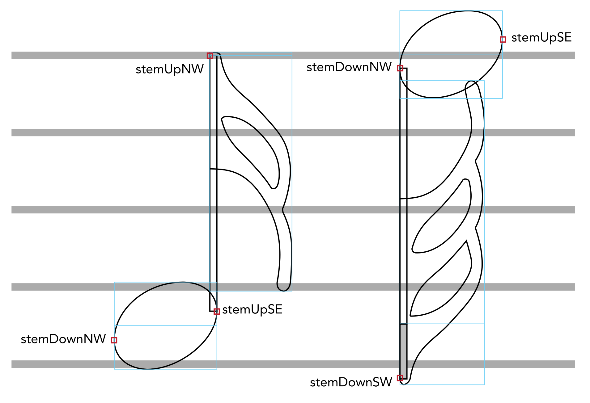
Note that the stemUpSE attachment point corresponds to the bottom right-hand (or south-east) corner of the stem, while stemDownNW corresponds to the top left-hand (or north-west) corner of the stem. Likewise, for correct alignment, the flag glyphs must always be aligned precisely to the left-hand side of the stem, with the glyph origin positioned vertically at the end of the normal stem length.
Bounding box cut-outs
The four points cutOutNE, cutOutSE, cutOutSW and cutOutNW describe
rectangular cut-outs from the four corners of a glyph’s rectangular
bounding box. The bounding box is the box with the smallest area that
encloses every part of the path of a glyph.
Because a glyph may not occupy every part of its bounding box, it can be useful to have an extra level of detail about the shape of the glyph, but at a coarser level than directly examining the path of the glyph to determine which areas of the bounding box are occupied and which are empty.
For example, when stacking accidentals to the left of a chord, accidentals are arranged into columns, where accidentals belonging to notes separated by a wide interval (normally a seventh or more) are aligned in the same column, i.e. at the same horizontal position. Successive columns of accidentals are laid out from right to left to the left of a chord, and depending on the accidentals that are present, it may be possible to interlock or kern those columns. The figure below shows a simple example:
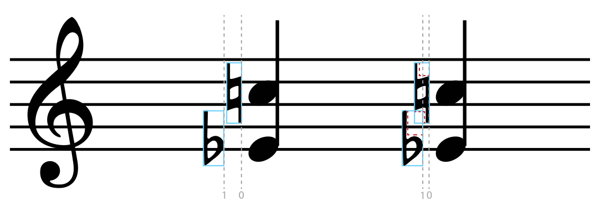
In the first chord above, the two columns of accidentals (numbered 0 and
- are positioned almost as close as the bounding boxes of the accidentals (shown in light blue) in each column will allow. In the second chord, column 1 is allowed to interlock with column 0 because the cut-outs in the bounding boxes of the two accidentals (shown as dashed red lines) are removed: the bounding boxes of the accidentals can overlap, provided it is only the cut-outs that overlap.
Font designers can specify four cut-outs to the bounding box, one in each corner, as illustrated in the figure below:
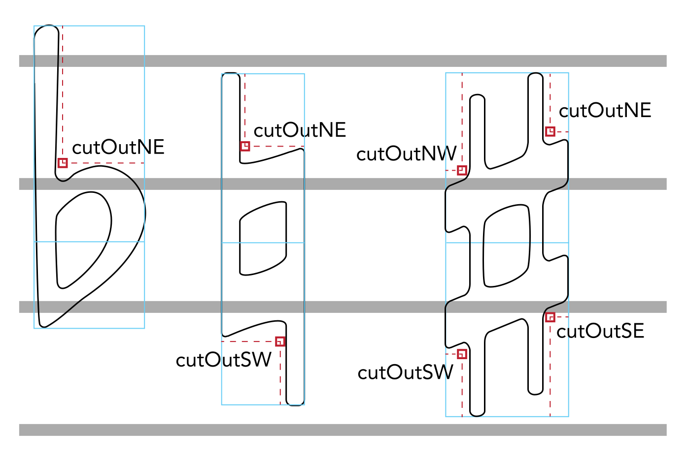
Each cut-out is specified as a pair of X,Y coordinates (in spaces),
describing the innermost corner of a nominal rectangle that intersects
the bounding box. For example, cutOutNE specifies the bottom left corner
of a rectangle that intersects the top right corner of the bounding box
of the glyph. The coordinates of each cut-out are all specified relative
to the origin of the glyph, i.e. its bottom left-hand corner.
Repeat offsets
The repeatOffset point is defined for glyphs that are designed to tessellate, such as the wiggly line that follows the symbol, or any of the glyphs in the Multi-segment lines range.
These glyphs are registered such that they may have negative side bearings on either or both the left- and right-hand sides. When entered in a run of text, the advance width produces the correct tessellation. However, in some situations it may not be possible to use a run of text to draw such a line, or the API in use may not provide easy access to the advance width of a glyph (e.g. when using the HTML canvas element).
In these situations, correct tessellation can be achieved by positioning the origin of subsequent glyphs in a tessellating line at the horizontal position defined by the repeatOffset point for a given glyph.
Here, for example, is an illustration of the glyph wiggleTrill:
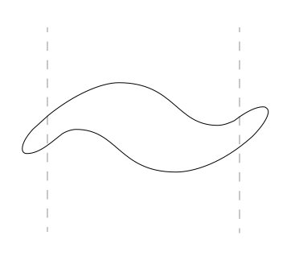
The vertical dashed lines show the left- and right-hand side bearings for this glyph. The repeatOffset anchor’s coordinates are at the x position of the right-hand side bearing and y = 0. Positioning another trillWiggle glyph at the position of the repeatOffset anchor produces correct tessellation, like this:
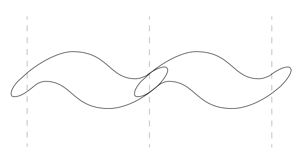
Aligning noteheads horizontally
The noteheadOrigin point is defined for noteheads with non-zero left-hand side bearings, such as the double whole (breve) notehead that has two vertical lines at either side of the oval notehead itself, as illustrated in the figure below:
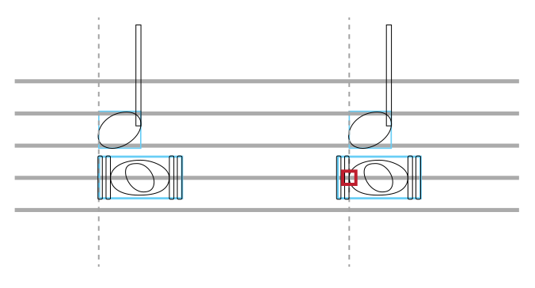
-
The horizontal grey lines denote staff lines, for scale.
-
The light blue boxes show glyph bounding boxes, with the left-hand side of the box corresponding to x=0.
-
The vertical dashed grey lines denote the left-hand edge of the rhythmic position, i.e. the position against which the notehead is aligned.
-
The red box shows the location of the noteheadOrigin point, as specified in the font metadata JSON file.
The left-hand example shows the alignment that will be produced simply by positioning notehead glyphs using the left-hand edges of their bounding boxes. The right-hand example shows the superior alignment that can be produced by offsetting the double whole (breve) note leftwards by the distance between x=0 and the noteheadOrigin point.
Aligning dynamics with noteheads and stems
The opticalCenter point is defined for glyphs that are normally centered on a notehead or stem, such as dynamics. There are a number of possible approaches to centering a dynamic, which are illustrated in the figure below:
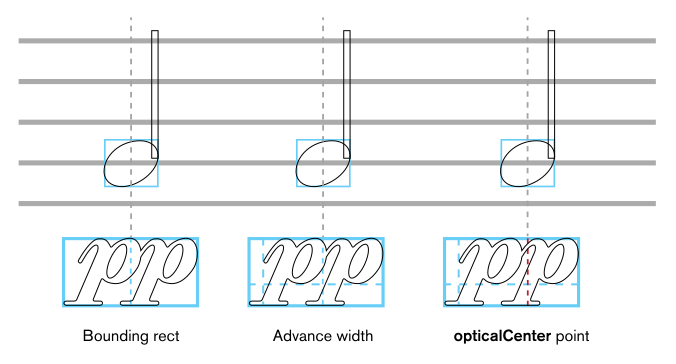
-
The horizontal grey lines denote staff lines, for scale.
-
The light blue boxes show glyph bounding boxes.
-
The intersecting vertical and horizontal dashed light blue lines show the glyph origin relative to its bounding box.
-
The vertical dashed grey lines denote the center of the notehead, the point against which the dynamics should be aligned.
-
The vertical dashed red line shows the position of the opticalCenter point, as specified in the font metadata JSON file.
The figure shows that centering the dynamic by determining the bounding rectangle and using half its width is least satisfactory, while using half the advance width is an acceptable default in the absence of a specific optical center position determined by the font designer.
The opticalCenter point can be set by the font designer to provide a very specific balancing point, relative to e.g. the bowl of the italic or the curve at the top of the italic .
Metrics and glyph registration for text-based applications
The following guidelines are provided for fonts intended for use in text-based applications, such as word processors, desktop publishers and other text editors.
Upper case letters in a text font do not typically occupy the whole height of the em square: instead, they typically occupy around 75–80% of the height of the em square, with the key metrics for ascender and caps height both falling within this range. In order for the line spacing of a font containing music characters to be equivalent to that of a text font, its key metrics must match, i.e. the ascender, caps height and descender must be very similar. Glyphs with unusually large ascenders and descenders (such as notes of short duration with multiple flags) should not be scaled individually in order to fit within the ascender height, as they will not then fit with the other glyphs at the same point size; however, the behavior of glyphs that extend beyond the font’s ascender and descender metrics is highly variable between different applications.
Leading on from the premise that a SMuFL-compliant font for text-based applications should use metrics compatible with regular text fonts, specific guidelines are as follows:
-
Dividing 80% of the height of the em in four provides an analogue for a five-line staff. If a font uses 1000 upm (design units per em), as is conventional for a PostScript font, the height of a five-line staff is 800 design units, or 0.8 em; therefore, one staff space height is 200 design units, or 0.2 em. If a font uses 2048 upm, as is conventional for a TrueType font, the height of a five-line staff is 1640 design units, and one staff space is 410 design units.
-
The origin (bottom left corner of the em square, i.e. x = 0 and y = 0 in font design space) therefore represents the middle of the bottom staff line of a nominal five-line staff, and y = 0.8 em represents the middle of the top staff line of that same five-line staff.
-
Unless otherwise stated, all glyphs should be drawn at a scale consistent with the key measurement that one staff space = 0.2 em.
-
Unless otherwise stated, all glyphs shall be horizontally registered so that their leftmost point coincides with x = 0.
-
Unless otherwise stated, all glyphs shall have zero-width side bearings, i.e. no blank space to the left or right of the glyph.
-
Staff line and leger line glyphs should have an advance width of zero, so that other glyphs can be drawn on top of them easily.
-
Time signature digits should also have an advance width of zero, so that they can be positioned above each other (using the timeSigCombNumerator and timeSigCombDenominator ligatures).
-
Clefs should be positioned such that they are aligned with the five-line staff glyphs (e.g. staff5lines) at their most usual staff position: G clefs (in the class clefsG) should be positioned such that the bottom loop is aligned with the bottom staff line (0.2 em higher than the position in a SMuFL-compliant font for a scoring application); F clefs (in the class clefsF) should be positioned such that the second-highest staff line passes between the two dots (0.6 em higher than in a font for a scoring application); and C clefs (in the class clefsC) should be positioned such that the middle staff line passes through the middle of the clef (0.4 em higher than in a font for a scoring application).1
-
Glyphs that can appear at different staff positions, e.g. noteheads, notes, accidentals, etc. (in class combiningStaffPositions), should be positioned such that they are centered around the middle staff line of the five-line staff glyphs (i.e. centered vertically around y = 0.4 em).
-
To enable the positioning of glyphs at different staff positions, fonts should support the combination of combining staff position control characters and glyphs in the class combiningStaffPositions using a glyph substitution feature such as OpenType ligatures. This allows the end user to position e.g. a black notehead on the second-highest staff line by using a ligature of staffPosRaise2 and noteheadBlack.
-
Letters for dynamics and numbers for octave lines should be scaled such that the x-height is around 0.5 em, consistent with other typical text fonts.
-
Ornaments symbols should be scaled such that e.g. the symbol is around 0.5 em in height (e.g. a scale factor of 150% compared to fonts intended for use in scoring applications).
-
Keyboard pedal marks should be scaled such that e.g. the symbol is around 0.75 em in height (e.g. a scale factor of 130% compared to fonts intended for use in scoring applications).
-
Percussion pictograms should be scaled such that they are around 0.75 em in height.
-
Figured bass digits should be scaled such that e.g. is around 0.5 em in height (e.g. a scale factor of 185% compared to fonts intended for use in scoring applications).
-
Composite note glyphs for setting in-line with characters from other text fonts (e.g. those in the Metronome marks range) should be positioned such that they sit on the font baseline (in contrast to notes intended for drawing on a staff, e.g. those in the Individual notes range).
The recommended default placement for C clefs is on the middle staff line, i.e. as an alto clef. Positioning the C clef such that it is centered around the second-highest staff line, i.e. as a tenor clef, can be achieved using the combining staff position control characters, if the font implements ligatures or other glyph substitution features.
Font-specific metadata locations
SMuFL-compliant applications running on desktop operating systems such as Windows, macOS, or Linux need to be able to determine whether a given font installed on the system is itself SMuFL-compliant.
There is no simple way to encode this information in the font itself1, so instead applications should identify SMuFL-compliant fonts by the presence of the font-specific JSON metadata file in a known location.
System-wide location
It is recommended that, if possible, the font metadata is installed in a system-wide location that allows access by all users on the system:
-
Windows: %COMMONPROGRAMFILES%/SMuFL/Fonts/fontname/fontname.json
-
macOS: /Library/Application Support/SMuFL/Fonts/fontname/fontname.json
-
Linux: $XDG_DATA_DIRS/SMuFL/Fonts/fontname/fontname.json
On Windows, the %COMMONPROGRAMFILES% environment variable expands to C:\Program Files\Common Files, or its localised equivalent.
On Linux, $XDG_DATA_DIRS is an environment variable defined by the XDG Base Directory Specification.
It is typically necessary to require administrator privileges to install files into these locations. However, it is also recommended that, if possible, fonts themselves should also be installed in system-wide locations, so if the metadata is installed by the same installer as the fonts, no additional privileges will typically be required.
User-specific location
If it is impossible or inappropriate to install the font metadata in a system-wide location, use a user-specific location instead:
-
Windows: %LOCALAPPDATA%/SMuFL/Fonts/fontname/fontname.json
-
macOS: ~/Library/Application Support/SMuFL/Fonts/fontname/fontname.json
-
Linux: $XDG_DATA_HOME/SMuFL/Fonts/fontname/fontname.json
On Windows, %LOCALAPPDATA% expands to C:\Users\username\AppData\Local.
On Linux, $XDG_DATA_HOME is an environment variable for user-specific configuration files, defined by the XDG Base Directory Specification.
On macOS, ~ is a shortcut to the current user's home folder, e.g. /Users/username/.
It is not typically necessary to require administrator privileges to install files into these locations. However, files installed in these locations will not be accessible to any other user account on the system.
Private fonts
If a font is not designed to be used outside of a particular, specific application, then of course it is not mandatory for it to be installed in a system-wide location, nor for its metadata to be installed in these publicly accessible locations: a private font intended for use within the confines of a single application may choose to install its metadata in any convenient private location.
Precedence rules
Because font-specific metadata may be installed in either (or both) a user-level location or a system-level location, applications should give metadata found in the user-level location precedence over metadata found in the system-level location.
None of the existing tables in TrueType or OpenType fonts lend themselves to storing arbitrary data that could be used to identify a SMuFL-compliant font without subverting the purpose of an existing field in a table, which could have unforeseen side effects.
Glyph tables
Staff brackets and dividers (U+E000–U+E00F)
| Glyph | Description | Glyph | Description |
|---|---|---|---|
| U+E000 (and U+1D114) brace Brace | U+E001 reversedBrace Reversed brace | ||
| | U+E002 (and U+1D115) bracket Bracket | | U+E003 bracketTop Bracket top |
| | U+E004 bracketBottom Bracket bottom | | U+E005 reversedBracketTop Reversed bracket top |
| | U+E006 reversedBracketBottom Reversed bracket bottom | | U+E007 systemDivider System divider |
| | U+E008 systemDividerLong Long system divider | | U+E009 systemDividerExtraLong Extra long system divider |
| | U+E00A splitBarDivider Split bar divider (bar spans a system break) | | U+E00B staffDivideArrowDown Staff divide arrow down |
| | U+E00C staffDivideArrowUp Staff divide arrow up | | U+E00D staffDivideArrowUpDown Staff divide arrows |
Recommended stylistic alternates
| Glyph | Description | Glyph | Description |
|---|---|---|---|
| | uniE000.salt01 braceSmall Brace (small) | | uniE000.salt02 braceLarge Brace (large) |
| | uniE000.salt03 braceLarger Brace (larger) | | uniE000.salt04 braceFlat Brace (flat) |
Implementation notes
The brace glyph should have a height of 1em, i.e. the height of a single five-line stave, and should be scaled proportionally (i.e. in both dimensions, not only in the vertical dimension) in a scoring application to the appropriate height of the two or more staves it encompasses.
Font designers may choose to include a number of alternative brace glyphs designed to accommodate larger distances, to avoid the standard brace glyph becoming too wide and bold at larger sizes. (Bravura, for example, includes four stylistic alternates for brace, designed to encompass numbers of staves from one up to 10 or more.)
bracket is a complete bracket of a fixed height useful for displaying brackets in text-based documents or applications.
To display a bracket of variable height in a scoring application, use bracketTop and bracketBottom as the top and bottom terminals of a bracket drawn using a stroked line or filled rectangle of the appropriate width.
Staves (U+E010–U+E02F)
| Glyph | Description | Glyph | Description |
|---|---|---|---|
| | U+E010 (and U+1D116) staff1Line 1-line staff | | U+E011 (and U+1D117) staff2Lines 2-line staff |
| | U+E012 (and U+1D118) staff3Lines 3-line staff | | U+E013 (and U+1D119) staff4Lines 4-line staff |
| | U+E014 (and U+1D11A) staff5Lines 5-line staff | | U+E015 (and U+1D11B) staff6Lines 6-line staff |
| | U+E016 staff1LineWide 1-line staff (wide) | | U+E017 staff2LinesWide 2-line staff (wide) |
| | U+E018 staff3LinesWide 3-line staff (wide) | | U+E019 staff4LinesWide 4-line staff (wide) |
| | U+E01A staff5LinesWide 5-line staff (wide) | | U+E01B staff6LinesWide 6-line staff (wide) |
| | U+E01C staff1LineNarrow 1-line staff (narrow) | | U+E01D staff2LinesNarrow 2-line staff (narrow) |
| | U+E01E staff3LinesNarrow 3-line staff (narrow) | | U+E01F staff4LinesNarrow 4-line staff (narrow) |
| | U+E020 staff5LinesNarrow 5-line staff (narrow) | | U+E021 staff6LinesNarrow 6-line staff (narrow) |
| | U+E022 legerLine Leger line | | U+E023 legerLineWide Leger line (wide) |
| | U+E024 legerLineNarrow Leger line (narrow) |
Implementation notes
Scoring programs should draw their own staff lines using primitives, not use the glyphs in this range. Narrow and wide versions are provided for use in fonts intended for use in text-based applications. These glyphs should be zero-width in such fonts.
Barlines (U+E030–U+E03F)
| Glyph | Description | Glyph | Description |
|---|---|---|---|
| | U+E030 (and U+1D100) barlineSingle Single barline | | U+E031 (and U+1D101) barlineDouble Double barline |
| | U+E032 (and U+1D102) barlineFinal Final barline | | U+E033 (and U+1D103) barlineReverseFinal Reverse final barline |
| | U+E034 barlineHeavy Heavy barline | | U+E035 barlineHeavyHeavy Heavy double barline |
| | U+E036 (and U+1D104) barlineDashed Dashed barline | | U+E037 barlineDotted Dotted barline |
| | U+E038 (and U+1D105) barlineShort Short barline | | U+E039 barlineTick Tick barline |
Implementation notes
Scoring programs should draw their own barlines using primitives, not use the glyphs in this range.
Repeats (U+E040–U+E04F)
| Glyph | Description | Glyph | Description |
|---|---|---|---|
| | U+E040 (and U+1D106) repeatLeft Left (start) repeat sign | | U+E041 (and U+1D107) repeatRight Right (end) repeat sign |
| | U+E042 repeatRightLeft Right and left repeat sign | | U+E043 (and U+1D108) repeatDots Repeat dots |
| | U+E044 repeatDot Single repeat dot | | U+E045 (and U+1D109) dalSegno Dal segno |
| | U+E046 (and U+1D10A) daCapo Da capo | | U+E047 (and U+1D10B) segno Segno |
| | U+E048 (and U+1D10C) coda Coda | | U+E049 codaSquare Square coda |
| | U+E04A segnoSerpent1 Segno (serpent) | | U+E04B segnoSerpent2 Segno (serpent with vertical lines) |
| | U+E04C leftRepeatSmall Left repeat sign within bar | | U+E04D rightRepeatSmall Right repeat sign within bar |
Recommended stylistic alternates
| Glyph | Description | Glyph | Description |
|---|---|---|---|
| | uniE042.salt01 repeatRightLeftThick RIght and left repeat sign (thick-thick) | | uniE047.salt01 segnoJapanese Segno (Japanese style, rotated) |
| | uniE048.salt01 codaJapanese Coda (Japanese style, serif) |
Implementation notes
Scoring programs should draw their own repeat barlines using primitives to draw the thick and thin lines and repeatDots to draw the dots, not use the precomposed glyphs repeatLeft or repeatRight.
dalSegno and daCapo are provided for compatibility with the Unicode Musical Symbols range. Scoring applications should allow the user to specify the appearance of the da capo and dal segno instructions using any regular text font.
Clefs (U+E050–U+E07F)
| Glyph | Description | Glyph | Description |
|---|---|---|---|
| | U+E050 (and U+1D11E) gClef G clef | | U+E051 gClef15mb G clef quindicesima bassa |
| | U+E052 (and U+1D120) gClef8vb G clef ottava bassa | | U+E053 (and U+1D11F) gClef8va G clef ottava alta |
| | U+E054 gClef15ma G clef quindicesima alta | | U+E055 gClef8vbOld G clef ottava bassa (old style) |
| | U+E056 gClef8vbCClef G clef ottava bassa with C clef | | U+E057 gClef8vbParens G clef, optionally ottava bassa |
| | U+E058 gClefLigatedNumberBelow Combining G clef, number below | | U+E059 gClefLigatedNumberAbove Combining G clef, number above |
| | U+E05A gClefArrowUp G clef, arrow up | | U+E05B gClefArrowDown G clef, arrow down |
| | U+E05C (and U+1D121) cClef C clef | | U+E05D cClef8vb C clef ottava bassa |
| | U+E05E cClefArrowUp C clef, arrow up | | U+E05F cClefArrowDown C clef, arrow down |
| | U+E060 cClefSquare C clef (19th century) | | U+E061 cClefCombining Combining C clef |
| | U+E062 (and U+1D122) fClef F clef | | U+E063 fClef15mb F clef quindicesima bassa |
| | U+E064 (and U+1D124) fClef8vb F clef ottava bassa | | U+E065 (and U+1D123) fClef8va F clef ottava alta |
| | U+E066 fClef15ma F clef quindicesima alta | | U+E067 fClefArrowUp F clef, arrow up |
| | U+E068 fClefArrowDown F clef, arrow down | | U+E069 (and U+1D125) unpitchedPercussionClef1 Unpitched percussion clef 1 |
| | U+E06A (and U+1D126) unpitchedPercussionClef2 Unpitched percussion clef 2 | | U+E06B semipitchedPercussionClef1 Semi-pitched percussion clef 1 |
| | U+E06C semipitchedPercussionClef2 Semi-pitched percussion clef 2 | | U+E06D 6stringTabClef 6-string tab clef |
| | U+E06E 4stringTabClef 4-string tab clef | | U+E06F schaefferClef Schäffer clef |
| | U+E070 schaefferPreviousClef Schäffer previous clef | | U+E071 schaefferGClefToFClef Schäffer G clef to F clef change |
| | U+E072 schaefferFClefToGClef Schäffer F clef to G clef change | | U+E073 gClefReversed Reversed G clef |
| | U+E074 gClefTurned Turned G clef | | U+E075 cClefReversed Reversed C clef |
| | U+E076 fClefReversed Reversed F clef | | U+E077 fClefTurned Turned F clef |
| | U+E078 bridgeClef Bridge clef | | U+E079 accdnDiatonicClef Diatonic accordion clef |
| | U+E07A gClefChange G clef change | | U+E07B cClefChange C clef change |
| | U+E07C fClefChange F clef change | | U+E07D clef8 8 for clefs |
| | U+E07E clef15 15 for clefs | | U+E07F clefChangeCombining Combining clef change |
Recommended stylistic alternates
| Glyph | Description | Glyph | Description |
|---|---|---|---|
| | uniE050.ss01 gClefSmall G clef (small staff) | | uniE05C.salt01 cClefFrench C clef (French, 18th century) |
| | uniE05C.ss01 cClefSmall C clef (small staff) | | uniE05C.salt03 cClefFrench20C C clef (French, 20th century) |
| | uniE062.salt01 fClefFrench F clef (French, 18th century) | | uniE062.salt02 fClef19thCentury F clef (19th century) |
| | uniE062.ss01 fClefSmall F clef (small staff) | | uniE069.salt01 unpitchedPercussionClef1Alt Unpitched percussion clef 1 (thick-thin) |
| | uniE06D.salt01 6stringTabClefTall 6-string tab clef (tall) | | uniE06D.salt02 6stringTabClefSerif 6-string tab clef (serif) |
| | uniE06E.salt01 4stringTabClefTall 4-string tab clef (tall) | | uniE06E.salt02 4stringTabClefSerif 4-string tab clef (serif) |
| | uniE07B.salt01 cClefFrench20CChange C clef change (French, 20th century) |
Recommended ligatures
| Glyph | Description | Glyph | Description |
|---|---|---|---|
| | uniE062_uniE885 fClef5Below F clef, 5 below | | uniE058_uniE880 gClef0Below G clef, 0 below |
| | uniE058_uniE881_uniE880 gClef10Below G clef, 10 below | | uniE058_uniE881_uniE881 gClef11Below G clef, 11 below |
| | uniE058_uniE881_uniE882 gClef12Below G clef, 12 below | | uniE058_uniE881_uniE883 gClef13Below G clef, 13 below |
| | uniE058_uniE881_uniE884 gClef14Below G clef, 14 below | | uniE058_uniE881_uniE885 gClef15Below G clef, 15 below |
| | uniE058_uniE881_uniE886 gClef16Below G clef, 16 below | | uniE058_uniE881_uniE887 gClef17Below G clef, 17 below |
| | uniE059_uniE882 gClef2Above G clef, 2 above | | uniE058_uniE882 gClef2Below G clef, 2 below |
| | uniE059_uniE883 gClef3Above G clef, 3 above | | uniE058_uniE883 gClef3Below G clef, 3 below |
| | uniE059_uniE884 gClef4Above G clef, 4 above | | uniE058_uniE884 gClef4Below G clef, 4 below |
| | uniE059_uniE885 gClef5Above G clef, 5 above | | uniE058_uniE885 gClef5Below G clef, 5 below |
| | uniE059_uniE886 gClef6Above G clef, 6 above | | uniE058_uniE886 gClef6Below G clef, 6 below |
| | uniE059_uniE887 gClef7Above G clef, 7 above | | uniE058_uniE887 gClef7Below G clef, 7 below |
| | uniE059_uniE888 gClef8Above G clef, 8 above | | uniE058_uniE888 gClef8Below G clef, 8 below |
| | uniE059_uniE889 gClef9Above G clef, 9 above | | uniE058_uniE889 gClef9Below G clef, 9 below |
| | uniE058_uniE881_uniE880_uniE260 gClefFlat10Below G clef, flat 10 below | | uniE058_uniE881_uniE881_uniE260 gClefFlat11Below G clef, flat 11 below |
| | uniE058_uniE881_uniE883_uniE260 gClefFlat13Below G clef, flat 13 below | | uniE058_uniE881_uniE884_uniE260 gClefFlat14Below G clef, flat 14 below |
| | uniE058_uniE881_uniE885_uniE260 gClefFlat15Below G clef, flat 15 below | | uniE058_uniE881_uniE886_uniE260 gClefFlat16Below G clef, flat 16 below |
| | uniE058_uniE260_uniE881 gClefFlat1Below G clef, flat 1 below | | uniE059_uniE882_uniE260 gClefFlat2Above G clef, flat 2 above |
| | uniE058_uniE260_uniE882 gClefFlat2Below G clef, flat 2 below | | uniE059_uniE883_uniE260 gClefFlat3Above G clef, flat 3 above |
| | uniE058_uniE260_uniE883 gClefFlat3Below G clef, flat 3 below | | uniE058_uniE260_uniE884 gClefFlat4Below G clef, flat 4 below |
| | uniE059_uniE885_uniE260 gClefFlat5Above G clef, flat 5 above | | uniE059_uniE886_uniE260 gClefFlat6Above G clef, flat 6 above |
| | uniE058_uniE260_uniE886 gClefFlat6Below G clef, flat 6 below | | uniE059_uniE887_uniE260 gClefFlat7Above G clef, flat 7 above |
| | uniE058_uniE260_uniE887 gClefFlat7Below G clef, flat 7 below | | uniE059_uniE888_uniE260 gClefFlat8Above G clef, flat 8 above |
| | uniE059_uniE889_uniE260 gClefFlat9Above G clef, flat 9 above | | uniE058_uniE260_uniE889 gClefFlat9Below G clef, flat 9 below |
| | uniE058_uniE261_uniE882 gClefNat2Below G clef, natural 2 below | | uniE058_uniE881_uniE880_uniE261 gClefNatural10Below G clef, natural 10 below |
| | uniE058_uniE881_uniE883_uniE261 gClefNatural13Below G clef, natural 13 below | | uniE058_uniE881_uniE887_uniE261 gClefNatural17Below G clef, natural 17 below |
| | uniE059_uniE882_uniE261 gClefNatural2Above G clef, natural 2 above | | uniE059_uniE883_uniE261 gClefNatural3Above G clef, natural 3 above |
| | uniE058_uniE261_uniE883 gClefNatural3Below G clef, natural 3 below | | uniE059_uniE886_uniE261 gClefNatural6Above G clef, natural 6 above |
| | uniE058_uniE261_uniE886 gClefNatural6Below G clef, natural 6 below | | uniE059_uniE887_uniE261 gClefNatural7Above G clef, natural 7 above |
| | uniE059_uniE889_uniE261 gClefNatural9Above G clef, natural 9 above | | uniE058_uniE261_uniE889 gClefNatural9Below G clef, natural 9 below |
| | uniE058_uniE881_uniE882_uniE262 gClefSharp12Below G clef, sharp 12 below | | uniE059_uniE881_uniE262 gClefSharp1Above G clef, sharp 1 above |
| | uniE059_uniE884_uniE262 gClefSharp4Above G clef, sharp 4 above | | uniE058_uniE262_uniE885 gClefSharp5Below G clef, sharp 5 below |
Supplementary Groups
Implementation notes
Scoring applications may choose to create e.g. ottava alta and ottava bassa versions of the G clef and F clef by combining gClef and fClef with clef8 and clef15 rather than using the precomposed glyphs.
The basic G clef, F clef and C clef symbols can be positioned at different vertical positions relative to the staff as required (e.g. the C clef can be positioned to create an alto or tenor clef).
Clef changes are normally drawn at two-thirds the size of clefs at the beginning of the system1, but different publishers and engravers may prefer to use a different size. Dedicated glyphs for drawing a clef change are provided for the three most commonly-used clefs (gClefChange, cClefChange, and fClefChange), together with a combining control character (clefChangeCombining) that font designers may use to produce smaller versions of less commonly-used clefs by way of glyph substitution (such as OpenType ligatures). Scoring applications may choose to use these dedicated clef change glyphs if they do not provide the end user with control over the size of clef changes. Otherwise, scoring applications should draw clef changes by using the regular clef glyphs at a smaller point size, either fixed at two-thirds the size of normal clefs, or at a size of the end user’s choosing.
Gould, ibid., page 7.
Time signatures (U+E080–U+E09F)
| Glyph | Description | Glyph | Description |
|---|---|---|---|
| | U+E080 timeSig0 Time signature 0 | | U+E081 timeSig1 Time signature 1 |
| | U+E082 timeSig2 Time signature 2 | | U+E083 timeSig3 Time signature 3 |
| | U+E084 timeSig4 Time signature 4 | | U+E085 timeSig5 Time signature 5 |
| | U+E086 timeSig6 Time signature 6 | | U+E087 timeSig7 Time signature 7 |
| | U+E088 timeSig8 Time signature 8 | | U+E089 timeSig9 Time signature 9 |
| | U+E08A (and U+1D134) timeSigCommon Common time | | U+E08B (and U+1D135) timeSigCutCommon Cut time |
| | U+E08C timeSigPlus Time signature + | | U+E08D timeSigPlusSmall Time signature + (for numerators) |
| | U+E08E timeSigFractionalSlash Time signature fraction slash | | U+E08F timeSigEquals Time signature equals |
| | U+E090 timeSigMinus Time signature minus | | U+E091 timeSigMultiply Time signature multiply |
| | U+E092 timeSigParensLeftSmall Left parenthesis for numerator only | | U+E093 timeSigParensRightSmall Right parenthesis for numerator only |
| | U+E094 timeSigParensLeft Left parenthesis for whole time signature | | U+E095 timeSigParensRight Right parenthesis for whole time signature |
| | U+E096 timeSigComma Time signature comma | | U+E097 timeSigFractionQuarter Time signature fraction ¼ |
| | U+E098 timeSigFractionHalf Time signature fraction ½ | | U+E099 timeSigFractionThreeQuarters Time signature fraction ¾ |
| | U+E09A timeSigFractionOneThird Time signature fraction ⅓ | | U+E09B timeSigFractionTwoThirds Time signature fraction ⅔ |
| | U+E09C timeSigX Open time signature | | U+E09D timeSigOpenPenderecki Open time signature (Penderecki) |
| | U+E09E timeSigCombNumerator Control character for numerator digit | | U+E09F timeSigCombDenominator Control character for denominator digit |
Recommended stylistic alternates
| Glyph | Description | Glyph | Description |
|---|---|---|---|
| | uniE080.ss04 timeSig0Large Time signature 0 (outside staff) | | uniE080.ss01 timeSig0Small Time signature 0 (small staff) |
| | uniE080.ss09 timeSig0Narrow Time signature 0 (large, narrow) | | uniE081.ss04 timeSig1Large Time signature 1 (outside staff) |
| | uniE081.ss01 timeSig1Small Time signature 1 (small staff) | | uniE081.ss09 timeSig1Narrow Time signature 1 (large, narrow) |
| | uniE082.ss04 timeSig2Large Time signature 2 (outside staff) | | uniE082.ss01 timeSig2Small Time signature 2 (small staff) |
| | uniE082.ss09 timeSig2Narrow Time signature 2 (large, narrow) | | uniE083.ss04 timeSig3Large Time signature 3 (outside staff) |
| | uniE083.ss01 timeSig3Small Time signature 3 (small staff) | | uniE083.ss09 timeSig3Narrow Time signature 3 (large, narrow) |
| | uniE084.ss04 timeSig4Large Time signature 4 (outside staff) | | uniE084.ss01 timeSig4Small Time signature 4 (small staff) |
| | uniE084.ss09 timeSig4Narrow Time signature 4 (large, narrow) | | uniE085.ss04 timeSig5Large Time signature 5 (outside staff) |
| | uniE085.ss01 timeSig5Small Time signature 5 (small staff) | | uniE085.ss09 timeSig5Narrow Time signature 5 (large, narrow) |
| | uniE086.ss04 timeSig6Large Time signature 6 (outside staff) | | uniE086.ss01 timeSig6Small Time signature 6 (small staff) |
| | uniE086.ss09 timeSig6Narrow Time signature 6 (large, narrow) | | uniE087.ss04 timeSig7Large Time signature 7 (outside staff) |
| | uniE087.ss01 timeSig7Small Time signature 7 (small staff) | | uniE087.ss09 timeSig7Narrow Time signature 7 (large, narrow) |
| | uniE088.ss04 timeSig8Large Time signature 8 (outside staff) | | uniE088.ss01 timeSig8Small Time signature 8 (small staff) |
| | uniE088.ss09 timeSig8Narrow Time signature 8 (large, narrow) | | uniE089.ss04 timeSig9Large Time signature 9 (outside staff) |
| | uniE089.ss01 timeSig9Small Time signature 9 (small staff) | | uniE089.ss09 timeSig9Narrow Time signature 9 (large, narrow) |
| | uniE08A.ss04 timeSigCommonLarge Common time (outside staff) | | uniE08A.ss09 timeSigCommonNarrow Common time (large, narrow) |
| | uniE08B.ss04 timeSigCutCommonLarge Cut time (outside staff) | | uniE08B.ss09 timeSigCutCommonNarrow Cut time (large, narrow) |
| | uniE08C.ss04 timeSigPlusLarge Time signature + (outside staff) | | uniE08C.ss09 timeSigPlusNarrow Time signature + (large, narrow) |
| | uniE08D.ss04 timeSigPlusSmallLarge Time signature + (for numerators) (outside staff) | | uniE08D.ss09 timeSigPlusSmallNarrow Time signature + (for numerators) (large, narrow) |
| | uniE08E.ss04 timeSigFractionalSlashLarge Time signature fraction slash (outside staff) | | uniE08E.ss09 timeSigFractionalSlashNarrow Time signature fraction slash (large, narrow) |
| | uniE08F.ss04 timeSigEqualsLarge Time signature equals (outside staff) | | uniE08F.ss09 timeSigEqualsNarrow Time signature equals (large, narrow) |
| | uniE090.ss04 timeSigMinusLarge Time signature minus (outside staff) | | uniE090.ss09 timeSigMinusNarrow Time signature minus (large, narrow) |
| | uniE091.ss04 timeSigMultiplyLarge Time signature multiply (outside staff) | | uniE091.ss09 timeSigMultiplyNarrow Time signature multiply (large, narrow) |
| | uniE092.ss04 timeSigParensLeftSmallLarge Left parenthesis for numerator only (outside staff) | | uniE092.ss09 timeSigParensLeftSmallNarrow Left parenthesis for numerator only (large, narrow) |
| | uniE093.ss04 timeSigParensRightSmallLarge Right parenthesis for numerator only (outside staff) | | uniE093.ss09 timeSigParensRightSmallNarrow Right parenthesis for numerator only (large, narrow) |
| | uniE094.ss04 timeSigParensLeftLarge Left parenthesis for whole time signature (outside staff) | | uniE094.ss09 timeSigParensLeftNarrow Left parenthesis for whole time signature (large, narrow) |
| | uniE095.ss04 timeSigParensRightLarge Right parenthesis for whole time signature (outside staff) | | uniE095.ss09 timeSigParensRightNarrow Right parenthesis for whole time signature (large, narrow) |
| | uniE096.ss04 timeSigCommaLarge Time signature comma (outside staff) | | uniE096.ss09 timeSigCommaNarrow Time signature comma (large, narrow) |
| | uniE097.ss04 timeSigFractionQuarterLarge Time signature fraction ¼ (outside staff) | | uniE097.ss09 timeSigFractionQuarterNarrow Time signature fraction ¼ (large, narrow) |
| | uniE098.ss04 timeSigFractionHalfLarge Time signature fraction ½ (outside staff) | | uniE098.ss09 timeSigFractionHalfNarrow Time signature fraction ½ (large, narrow) |
| | uniE099.ss04 timeSigFractionThreeQuartersLarge Time signature fraction ¾ (outside staff) | | uniE099.ss09 timeSigFractionThreeQuartersNarrow Time signature fraction ¾ (large, narrow) |
| | uniE09A.ss04 timeSigFractionOneThirdLarge Time signature fraction ⅓ (outside staff) | | uniE09A.ss09 timeSigFractionOneThirdNarrow Time signature fraction ⅓ (large, narrow) |
| | uniE09B.ss04 timeSigFractionTwoThirdsLarge Time signature fraction ⅔ (outside staff) | | uniE09B.ss09 timeSigFractionTwoThirdsNarrow Time signature fraction ⅔ (large, narrow) |
| | uniE09C.ss04 timeSigXLarge Open time signature (outside staff) | | uniE09C.ss09 timeSigXNarrow Open time signature (large, narrow) |
| | uniE09D.ss04 timeSigOpenPendereckiLarge Open time signature (Penderecki) (outside staff) | | uniE09D.ss09 timeSigOpenPendereckiNarrow Open time signature (Penderecki) (narrow, large) |
Recommended ligatures
| Glyph | Description | Glyph | Description |
|---|---|---|---|
| | uniE09F_uniE080 timeSig0Denominator Time signature 0 (denominator) | | uniE09E_uniE080 timeSig0Numerator Time signature 0 (numerator) |
| | uniE09F_uniE081 timeSig1Denominator Time signature 1 (denominator) | | uniE09E_uniE081 timeSig1Numerator Time signature 1 (numerator) |
| | uniE09F_uniE082 timeSig2Denominator Time signature 2 (denominator) | | uniE09E_uniE082 timeSig2Numerator Time signature 2 (numerator) |
| | uniE09F_uniE083 timeSig3Denominator Time signature 3 (denominator) | | uniE09E_uniE083 timeSig3Numerator Time signature 3 (numerator) |
| | uniE09F_uniE084 timeSig4Denominator Time signature 4 (denominator) | | uniE09E_uniE084 timeSig4Numerator Time signature 4 (numerator) |
| | uniE09F_uniE085 timeSig5Denominator Time signature 5 (denominator) | | uniE09E_uniE085 timeSig5Numerator Time signature 5 (numerator) |
| | uniE09F_uniE086 timeSig6Denominator Time signature 6 (denominator) | | uniE09E_uniE086 timeSig6Numerator Time signature 6 (numerator) |
| | uniE09F_uniE087 timeSig7Denominator Time signature 7 (denominator) | | uniE09E_uniE087 timeSig7Numerator Time signature 7 (numerator) |
| | uniE09F_uniE088 timeSig8Denominator Time signature 8 (denominator) | | uniE09E_uniE088 timeSig8Numerator Time signature 8 (numerator) |
| | uniE09F_uniE089 timeSig9Denominator Time signature 9 (denominator) | | uniE09E_uniE089 timeSig9Numerator Time signature 9 (numerator) |
| | uniE09E_uniE082_uniE09F_uniE084 timeSig2over4 2/4 time signature | | uniE09E_uniE082_uniE09F_uniE082 timeSig2over2 2/2 time signature |
| | uniE09E_uniE083_uniE09F_uniE082 timeSig3over2 3/2 time signature | | uniE09E_uniE083_uniE09F_uniE084 timeSig3over4 3/4 time signature |
| | uniE09E_uniE083_uniE09F_uniE088 timeSig3over8 3/8 time signature | | uniE09E_uniE084_uniE09F_uniE084 timeSig4over4 4/4 time signature |
| | uniE09E_uniE085_uniE09F_uniE084 timeSig5over4 5/4 time signature | | uniE09E_uniE085_uniE09F_uniE088 timeSig5over8 5/8 time signature |
| | uniE09E_uniE086_uniE09F_uniE084 timeSig6over4 6/4 time signature | | uniE09E_uniE086_uniE09F_uniE088 timeSig6over8 6/8 time signature |
| | uniE09E_uniE087_uniE09F_uniE088 timeSig7over8 7/8 time signature | | uniE09E_uniE089_uniE09F_uniE088 timeSig9over8 9/8 time signature |
| | uniE09E_uniE081_uniE09E_uniE082_uniE09F_uniE088 timeSig12over8 12/8 time signature |
Supplementary Groups
Implementation notes
timeSigCombNumerator and timeSigCombDenominator are control characters designed to be combined with the time signature digits (by way of glyph substitution, such as OpenType ligatures) to shift them vertically into position suitable for drawing as the numerator and denominator of a time signature. These control characters are intended for fonts to be used in text-based applications, since scoring applications should position the numerator and denominator of time signatures independently.
Noteheads (U+E0A0–U+E0FF)
| Glyph | Description | Glyph | Description |
|---|---|---|---|
| | U+E0A0 noteheadDoubleWhole Double whole (breve) notehead | | U+E0A1 noteheadDoubleWholeSquare Double whole (breve) notehead (square) |
| | U+E0A2 noteheadWhole Whole (semibreve) notehead | | U+E0A3 (and U+1D157) noteheadHalf Half (minim) notehead |
| | U+E0A4 (and U+1D158) noteheadBlack Black notehead | | U+E0A5 (and U+1D159) noteheadNull Null notehead |
| | U+E0A6 noteheadXDoubleWhole X notehead double whole | | U+E0A7 noteheadXWhole X notehead whole |
| | U+E0A8 noteheadXHalf X notehead half | | U+E0A9 (and U+1D143) noteheadXBlack X notehead black |
| | U+E0AA noteheadXOrnate Ornate X notehead | | U+E0AB noteheadXOrnateEllipse Ornate X notehead in ellipse |
| | U+E0AC noteheadPlusDoubleWhole Plus notehead double whole | | U+E0AD noteheadPlusWhole Plus notehead whole |
| | U+E0AE noteheadPlusHalf Plus notehead half | | U+E0AF (and U+1D144) noteheadPlusBlack Plus notehead black |
| | U+E0B0 noteheadCircleXDoubleWhole Circle X double whole | | U+E0B1 noteheadCircleXWhole Circle X whole |
| | U+E0B2 noteheadCircleXHalf Circle X half | | U+E0B3 (and U+1D145) noteheadCircleX Circle X notehead |
| | U+E0B4 noteheadDoubleWholeWithX Double whole notehead with X | | U+E0B5 noteheadWholeWithX Whole notehead with X |
| | U+E0B6 noteheadHalfWithX Half notehead with X | | U+E0B7 noteheadVoidWithX Void notehead with X |
| | U+E0B8 (and U+1D146) noteheadSquareWhite Square notehead white | | U+E0B9 (and U+1D147) noteheadSquareBlack Square notehead black |
| | U+E0BA noteheadTriangleUpDoubleWhole Triangle notehead up double whole | | U+E0BB noteheadTriangleUpWhole Triangle notehead up whole |
| | U+E0BC noteheadTriangleUpHalf Triangle notehead up half | | U+E0BD (and U+1D148) noteheadTriangleUpWhite Triangle notehead up white |
| | U+E0BE (and U+1D149) noteheadTriangleUpBlack Triangle notehead up black | | U+E0BF (and U+1D14A) noteheadTriangleLeftWhite Triangle notehead left white |
| | U+E0C0 (and U+1D14B) noteheadTriangleLeftBlack Triangle notehead left black | | U+E0C1 (and U+1D14C) noteheadTriangleRightWhite Triangle notehead right white |
| | U+E0C2 (and U+1D14D) noteheadTriangleRightBlack Triangle notehead right black | | U+E0C3 noteheadTriangleDownDoubleWhole Triangle notehead down double whole |
| | U+E0C4 noteheadTriangleDownWhole Triangle notehead down whole | | U+E0C5 noteheadTriangleDownHalf Triangle notehead down half |
| | U+E0C6 (and U+1D14E) noteheadTriangleDownWhite Triangle notehead down white | | U+E0C7 (and U+1D14F) noteheadTriangleDownBlack Triangle notehead down black |
| | U+E0C8 (and U+1D150) noteheadTriangleUpRightWhite Triangle notehead up right white | | U+E0C9 (and U+1D151) noteheadTriangleUpRightBlack Triangle notehead up right black |
| | U+E0CA (and U+1D152) noteheadMoonWhite Moon notehead white | | U+E0CB (and U+1D153) noteheadMoonBlack Moon notehead black |
| | U+E0CC (and U+1D154) noteheadTriangleRoundDownWhite Triangle-round notehead down white | | U+E0CD (and U+1D155) noteheadTriangleRoundDownBlack Triangle-round notehead down black |
| | U+E0CE (and U+1D156) noteheadParenthesis Parenthesis notehead | | U+E0CF noteheadSlashedBlack1 Slashed black notehead (bottom left to top right) |
| | U+E0D0 noteheadSlashedBlack2 Slashed black notehead (top left to bottom right) | | U+E0D1 noteheadSlashedHalf1 Slashed half notehead (bottom left to top right) |
| | U+E0D2 noteheadSlashedHalf2 Slashed half notehead (top left to bottom right) | | U+E0D3 noteheadSlashedWhole1 Slashed whole notehead (bottom left to top right) |
| | U+E0D4 noteheadSlashedWhole2 Slashed whole notehead (top left to bottom right) | | U+E0D5 noteheadSlashedDoubleWhole1 Slashed double whole notehead (bottom left to top right) |
| | U+E0D6 noteheadSlashedDoubleWhole2 Slashed double whole notehead (top left to bottom right) | | U+E0D7 noteheadDiamondDoubleWhole Diamond double whole notehead |
| | U+E0D8 noteheadDiamondWhole Diamond whole notehead | | U+E0D9 noteheadDiamondHalf Diamond half notehead |
| | U+E0DA noteheadDiamondHalfWide Diamond half notehead (wide) | | U+E0DB noteheadDiamondBlack Diamond black notehead |
| | U+E0DC noteheadDiamondBlackWide Diamond black notehead (wide) | | U+E0DD noteheadDiamondWhite Diamond white notehead |
| | U+E0DE noteheadDiamondWhiteWide Diamond white notehead (wide) | | U+E0DF noteheadDiamondDoubleWholeOld Diamond double whole notehead (old) |
| | U+E0E0 noteheadDiamondWholeOld Diamond whole notehead (old) | | U+E0E1 noteheadDiamondHalfOld Diamond half notehead (old) |
| | U+E0E2 noteheadDiamondBlackOld Diamond black notehead (old) | | U+E0E3 noteheadDiamondHalfFilled Half-filled diamond notehead |
| | U+E0E4 noteheadCircledBlack Circled black notehead | | U+E0E5 noteheadCircledHalf Circled half notehead |
| | U+E0E6 noteheadCircledWhole Circled whole notehead | | U+E0E7 noteheadCircledDoubleWhole Circled double whole notehead |
| | U+E0E8 noteheadCircledBlackLarge Black notehead in large circle | | U+E0E9 noteheadCircledHalfLarge Half notehead in large circle |
| | U+E0EA noteheadCircledWholeLarge Whole notehead in large circle | | U+E0EB noteheadCircledDoubleWholeLarge Double whole notehead in large circle |
| | U+E0EC noteheadCircledXLarge Cross notehead in large circle | | U+E0ED noteheadLargeArrowUpDoubleWhole Large arrow up (highest pitch) double whole notehead |
| | U+E0EE noteheadLargeArrowUpWhole Large arrow up (highest pitch) whole notehead | | U+E0EF noteheadLargeArrowUpHalf Large arrow up (highest pitch) half notehead |
| | U+E0F0 noteheadLargeArrowUpBlack Large arrow up (highest pitch) black notehead | | U+E0F1 noteheadLargeArrowDownDoubleWhole Large arrow down (lowest pitch) double whole notehead |
| | U+E0F2 noteheadLargeArrowDownWhole Large arrow down (lowest pitch) whole notehead | | U+E0F3 noteheadLargeArrowDownHalf Large arrow down (lowest pitch) half notehead |
| | U+E0F4 noteheadLargeArrowDownBlack Large arrow down (lowest pitch) black notehead | | U+E0F5 noteheadParenthesisLeft Opening parenthesis |
| | U+E0F6 noteheadParenthesisRight Closing parenthesis | | U+E0F7 noteheadCircleSlash Circle slash notehead |
| | U+E0F8 noteheadHeavyX Heavy X notehead | | U+E0F9 noteheadHeavyXHat Heavy X with hat notehead |
| | U+E0FA noteheadWholeFilled Filled whole (semibreve) notehead | | U+E0FB noteheadHalfFilled Filled half (minim) notehead |
| | U+E0FC noteheadDiamondOpen Open diamond notehead |
Recommended stylistic alternates
| Glyph | Description | Glyph | Description |
|---|---|---|---|
| | uniE0A0.salt01 noteheadDoubleWholeAlt Double whole note (breve), single vertical strokes | | uniE0A0.ss01 noteheadDoubleWholeSmall Double whole note (breve) (small staff) |
| | uniE0A0.ss05 noteheadDoubleWholeOversized Double whole note (breve) (oversized) | | uniE0A1.ss05 noteheadDoubleWholeSquareOversized Double whole note (breve) notehead (square) (oversized) |
| | uniE0A2.ss01 noteheadWholeSmall Whole notehead (small staff) | | uniE0A2.ss05 noteheadWholeOversized Whole notehead (oversized) |
| | uniE0A3.ss01 noteheadHalfSmall Half (minim) notehead (small staff) | | uniE0A3.ss05 noteheadHalfOversized Half (minim) notehead (oversized) |
| | uniE0A4.ss01 noteheadBlackSmall Black notehead (small staff) | | uniE0A4.ss05 noteheadBlackOversized Black notehead (oversized) |
Recommended ligatures
| Glyph | Description | Glyph | Description |
|---|---|---|---|
| | uniE0F5_uniE0A4_uniE0F6 noteheadBlackParens Parenthesised black notehead | | uniE0F5_uniE0A3_uniE0F6 noteheadHalfParens Parenthesised half notehead |
| | uniE0F5_uniE0A2_uniE0F6 noteheadWholeParens Parenthesised whole (semibreve) notehead | | uniE0F5_uniE0A0_uniE0F6 noteheadDoubleWholeParens Parenthesised double whole (breve) notehead |
Supplementary Groups
Implementation notes
These noteheads should be combined with stems and flags as necessary to create complete notes. In text-based applications, per the Unicode Musical Symbols documentation:

Scoring applications should draw stems using primitives, rather than using stem (i.e. U+1D165 as shown in the above image1), so that they can be drawn to the correct length.
See also the implementation notes for flags.
From Chapter 15 “Symbols”, The Unicode Standard, Version 6.2. Ed. Julie D. Allen et al. Mountain View; The Unicode Consortium, 2012.
Slash noteheads (U+E100–U+E10F)
| Glyph | Description | Glyph | Description |
|---|---|---|---|
| | U+E100 noteheadSlashVerticalEnds Slash with vertical ends | | U+E101 (and U+1D10D) noteheadSlashHorizontalEnds Slash with horizontal ends |
| | U+E102 noteheadSlashWhiteWhole White slash whole | | U+E103 noteheadSlashWhiteHalf White slash half |
| | U+E104 noteheadSlashDiamondWhite Large white diamond | | U+E105 noteheadSlashVerticalEndsSmall Small slash with vertical ends |
| | U+E106 noteheadSlashX Large X notehead | | U+E107 noteheadSlashVerticalEndsMuted Muted slash with vertical ends |
| | U+E108 noteheadSlashHorizontalEndsMuted Muted slash with horizontal ends | | U+E109 noteheadSlashWhiteMuted Muted white slash |
| | U+E10A noteheadSlashWhiteDoubleWhole White slash double whole |
Recommended stylistic alternates
| Glyph | Description | Glyph | Description |
|---|---|---|---|
| | uniE100.ss08 noteheadSlashVerticalEndsOversized Oversized slash with vertical ends | | uniE101.ss08 noteheadSlashHorizontalEndsOversized Oversized slash with horizontal ends |
| | uniE102.ss08 noteheadSlashWhiteWholeOversized Oversized white slash whole | | uniE103.ss08 noteheadSlashWhiteHalfOversized Oversized white slash half |
| | uniE104.ss08 noteheadSlashDiamondWhiteOversized Oversized large white diamond | | uniE105.ss08 noteheadSlashVerticalEndsSmallOversized Oversized small slash with vertical ends |
| | uniE106.ss08 noteheadSlashXOversized Oversized large X notehead | | uniE107.ss08 noteheadSlashVerticalEndsMutedOversized Oversized muted slash with vertical ends |
| | uniE108.ss08 noteheadSlashHorizontalEndsMutedOversized Oversized muted slash with horizontal ends | | uniE109.ss08 noteheadSlashWhiteMutedOversized Oversized muted white slash |
| | uniE10A.ss08 noteheadSlashWhiteDoubleWholeOversized Oversized white slash double whole |
Implementation notes
See the implementation notes for noteheads.
Round and square noteheads (U+E110–U+E11F)
| Glyph | Description | Glyph | Description |
|---|---|---|---|
| | U+E110 noteheadRoundBlackLarge Large round black notehead | | U+E111 noteheadRoundWhiteLarge Large round white notehead |
| | U+E112 noteheadRoundWhiteWithDotLarge Large round white notehead with dot | | U+E113 noteheadRoundBlack Round black notehead |
| | U+E114 noteheadRoundWhite Round white notehead | | U+E115 noteheadRoundWhiteWithDot Round white notehead with dot |
| | U+E116 noteheadRoundBlackSlashedLarge Large round black notehead, slashed | | U+E117 noteheadRoundWhiteSlashedLarge Large round white notehead, slashed |
| | U+E118 noteheadRoundBlackSlashed Round black notehead, slashed | | U+E119 noteheadRoundWhiteSlashed Round white notehead, slashed |
| | U+E11A noteheadSquareBlackLarge Large square black notehead | | U+E11B noteheadSquareBlackWhite Large square white notehead |
| | U+E11C noteheadRoundBlackDoubleSlashed Round black notehead, double slashed | | U+E11D noteheadRoundWhiteDoubleSlashed Round white notehead, double slashed |
Note clusters (U+E120–U+E14F)
| Glyph | Description | Glyph | Description |
|---|---|---|---|
| | U+E120 (and U+1D15A) noteheadClusterSquareWhite Cluster notehead white (square) | | U+E121 (and U+1D15B) noteheadClusterSquareBlack Cluster notehead black (square) |
| | U+E122 noteheadClusterRoundWhite Cluster notehead white (round) | | U+E123 noteheadClusterRoundBlack Cluster notehead black (round) |
| | U+E124 noteheadClusterDoubleWhole2nd Double whole note cluster, 2nd | | U+E125 noteheadClusterWhole2nd Whole note cluster, 2nd |
| | U+E126 noteheadClusterHalf2nd Half note cluster, 2nd | | U+E127 noteheadClusterQuarter2nd Quarter note cluster, 2nd |
| | U+E128 noteheadClusterDoubleWhole3rd Double whole note cluster, 3rd | | U+E129 noteheadClusterWhole3rd Whole note cluster, 3rd |
| | U+E12A noteheadClusterHalf3rd Half note cluster, 3rd | | U+E12B noteheadClusterQuarter3rd Quarter note cluster, 3rd |
| | U+E12C noteheadClusterDoubleWholeTop Combining double whole note cluster, top | | U+E12D noteheadClusterDoubleWholeMiddle Combining double whole note cluster, middle |
| | U+E12E noteheadClusterDoubleWholeBottom Combining double whole note cluster, bottom | | U+E12F noteheadClusterWholeTop Combining whole note cluster, top |
| | U+E130 noteheadClusterWholeMiddle Combining whole note cluster, middle | | U+E131 noteheadClusterWholeBottom Combining whole note cluster, bottom |
| | U+E132 noteheadClusterHalfTop Combining half note cluster, top | | U+E133 noteheadClusterHalfMiddle Combining half note cluster, middle |
| | U+E134 noteheadClusterHalfBottom Combining half note cluster, bottom | | U+E135 noteheadClusterQuarterTop Combining quarter note cluster, top |
| | U+E136 noteheadClusterQuarterMiddle Combining quarter note cluster, middle | | U+E137 noteheadClusterQuarterBottom Combining quarter note cluster, bottom |
| | U+E138 noteheadDiamondClusterWhite2nd White diamond cluster, 2nd | | U+E139 noteheadDiamondClusterBlack2nd Black diamond cluster, 2nd |
| | U+E13A noteheadDiamondClusterWhite3rd White diamond cluster, 3rd | | U+E13B noteheadDiamondClusterBlack3rd Black diamond cluster, 3rd |
| | U+E13C noteheadDiamondClusterWhiteTop Combining white diamond cluster, top | | U+E13D noteheadDiamondClusterWhiteMiddle Combining white diamond cluster, middle |
| | U+E13E noteheadDiamondClusterWhiteBottom Combining white diamond cluster, bottom | | U+E13F noteheadDiamondClusterBlackTop Combining black diamond cluster, top |
| | U+E140 noteheadDiamondClusterBlackMiddle Combining black diamond cluster, middle | | U+E141 noteheadDiamondClusterBlackBottom Combining black diamond cluster, bottom |
| | U+E142 noteheadRectangularClusterBlackTop Combining black rectangular cluster, top | | U+E143 noteheadRectangularClusterBlackMiddle Combining black rectangular cluster, middle |
| | U+E144 noteheadRectangularClusterBlackBottom Combining black rectangular cluster, bottom | | U+E145 noteheadRectangularClusterWhiteTop Combining white rectangular cluster, top |
| | U+E146 noteheadRectangularClusterWhiteMiddle Combining white rectangular cluster, middle | | U+E147 noteheadRectangularClusterWhiteBottom Combining white rectangular cluster, bottom |
Implementation notes
Scoring applications should draw simple note clusters (e.g. noteheadClusterSquareWhite, noteheadClusterRoundBlack) directly using primitives rather than using these glyphs, so that the clusters can be drawn spanning the correct interval.
The combining glyphs for note clusters are designed to allow the creation of clusters of any interval larger than a third, with a scoring application inserting the appropriate number of “middle” segments between a single instance of the “top” and “bottom” segments:
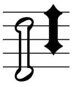
The left-hand cluster is a stack (top to bottom) of 1 x noteheadClusterHalfTop, 3 x noteheadClusterHalfMiddle, 1 x noteheadClusterHalfBottom; the right-hand cluster is 1 x noteheadDiamondClusterBlackTop, 2 x noteheadDiamondClusterBlackMiddle, 1 x noteheadDiamondClusterBlackBottom.
Clusters for intervals of a second or a third are created using a single glyph, e.g. noteheadClusterQuarter2nd. These glyphs are registered such that the lowest pitch in the cluster is centered around y = 0, so to draw correctly, the glyph should be positioned on the staff position corresponding to the lowest note in the cluster.
See also the implementation notes for noteheads.
Note name noteheads (U+E150–U+E1AF)
| Glyph | Description | Glyph | Description |
|---|---|---|---|
| | U+E150 noteDoWhole Do (whole note) | | U+E151 noteReWhole Re (whole note) |
| | U+E152 noteMiWhole Mi (whole note) | | U+E153 noteFaWhole Fa (whole note) |
| | U+E154 noteSoWhole So (whole note) | | U+E155 noteLaWhole La (whole note) |
| | U+E156 noteTiWhole Ti (whole note) | | U+E157 noteSiWhole Si (whole note) |
| | U+E158 noteDoHalf Do (half note) | | U+E159 noteReHalf Re (half note) |
| | U+E15A noteMiHalf Mi (half note) | | U+E15B noteFaHalf Fa (half note) |
| | U+E15C noteSoHalf So (half note) | | U+E15D noteLaHalf La (half note) |
| | U+E15E noteTiHalf Ti (half note) | | U+E15F noteSiHalf Si (half note) |
| | U+E160 noteDoBlack Do (black note) | | U+E161 noteReBlack Re (black note) |
| | U+E162 noteMiBlack Mi (black note) | | U+E163 noteFaBlack Fa (black note) |
| | U+E164 noteSoBlack So (black note) | | U+E165 noteLaBlack La (black note) |
| | U+E166 noteTiBlack Ti (black note) | | U+E167 noteSiBlack Si (black note) |
| | U+E168 noteAFlatWhole A flat (whole note) | | U+E169 noteAWhole A (whole note) |
| | U+E16A noteASharpWhole A sharp (whole note) | | U+E16B noteBFlatWhole B flat (whole note) |
| | U+E16C noteBWhole B (whole note) | | U+E16D noteBSharpWhole B sharp (whole note) |
| | U+E16E noteCFlatWhole C flat (whole note) | | U+E16F noteCWhole C (whole note) |
| | U+E170 noteCSharpWhole C sharp (whole note) | | U+E171 noteDFlatWhole D flat (whole note) |
| | U+E172 noteDWhole D (whole note) | | U+E173 noteDSharpWhole D sharp (whole note) |
| | U+E174 noteEFlatWhole E flat (whole note) | | U+E175 noteEWhole E (whole note) |
| | U+E176 noteESharpWhole E sharp (whole note) | | U+E177 noteFFlatWhole F flat (whole note) |
| | U+E178 noteFWhole F (whole note) | | U+E179 noteFSharpWhole F sharp (whole note) |
| | U+E17A noteGFlatWhole G flat (whole note) | | U+E17B noteGWhole G (whole note) |
| | U+E17C noteGSharpWhole G sharp (whole note) | | U+E17D noteHWhole H (whole note) |
| | U+E17E noteHSharpWhole H sharp (whole note) | | U+E17F noteAFlatHalf A flat (half note) |
| | U+E180 noteAHalf A (half note) | | U+E181 noteASharpHalf A sharp (half note) |
| | U+E182 noteBFlatHalf B flat (half note) | | U+E183 noteBHalf B (half note) |
| | U+E184 noteBSharpHalf B sharp (half note) | | U+E185 noteCFlatHalf C flat (half note) |
| | U+E186 noteCHalf C (half note) | | U+E187 noteCSharpHalf C sharp (half note) |
| | U+E188 noteDFlatHalf D flat (half note) | | U+E189 noteDHalf D (half note) |
| | U+E18A noteDSharpHalf D sharp (half note) | | U+E18B noteEFlatHalf E flat (half note) |
| | U+E18C noteEHalf E (half note) | | U+E18D noteESharpHalf E sharp (half note) |
| | U+E18E noteFFlatHalf F flat (half note) | | U+E18F noteFHalf F (half note) |
| | U+E190 noteFSharpHalf F sharp (half note) | | U+E191 noteGFlatHalf G flat (half note) |
| | U+E192 noteGHalf G (half note) | | U+E193 noteGSharpHalf G sharp (half note) |
| | U+E194 noteHHalf H (half note) | | U+E195 noteHSharpHalf H sharp (half note) |
| | U+E196 noteAFlatBlack A flat (black note) | | U+E197 noteABlack A (black note) |
| | U+E198 noteASharpBlack A sharp (black note) | | U+E199 noteBFlatBlack B flat (black note) |
| | U+E19A noteBBlack B (black note) | | U+E19B noteBSharpBlack B sharp (black note) |
| | U+E19C noteCFlatBlack C flat (black note) | | U+E19D noteCBlack C (black note) |
| | U+E19E noteCSharpBlack C sharp (black note) | | U+E19F noteDFlatBlack D flat (black note) |
| | U+E1A0 noteDBlack D (black note) | | U+E1A1 noteDSharpBlack D sharp (black note) |
| | U+E1A2 noteEFlatBlack E flat (black note) | | U+E1A3 noteEBlack E (black note) |
| | U+E1A4 noteESharpBlack E sharp (black note) | | U+E1A5 noteFFlatBlack F flat (black note) |
| | U+E1A6 noteFBlack F (black note) | | U+E1A7 noteFSharpBlack F sharp (black note) |
| | U+E1A8 noteGFlatBlack G flat (black note) | | U+E1A9 noteGBlack G (black note) |
| | U+E1AA noteGSharpBlack G sharp (black note) | | U+E1AB noteHBlack H (black note) |
| | U+E1AC noteHSharpBlack H sharp (black note) | | U+E1AD noteEmptyWhole Empty whole note |
| | U+E1AE noteEmptyHalf Empty half note | | U+E1AF noteEmptyBlack Empty black note |
Supplementary Groups
Note name noteheads supplement
Implementation notes
These noteheads are designed for use by scoring applications to render music where the names of notes are shown inside noteheads. For practical use, scoring applications should provide a means of automatically substituting regular noteheads for the appropriate note name notehead glyph according to the pitch of each note.
For maximum legibility, stave lines and ledger lines should not be drawn through the letterforms in these noteheads. Applications should either draw segments of stave lines and ledger lines to the left and right of the extent of each notehead positioned on a line, or draw noteEmptyWhole, noteEmptyHalf and noteEmptyBlack as appropriate in white (or the paper color) on top of the stave or ledger line but behind the note name notehead.
See also the implementation notes for Noteheads.
Shape note noteheads (U+E1B0–U+E1CF)
| Glyph | Description | Glyph | Description |
|---|---|---|---|
| | U+E1B0 noteShapeRoundWhite Round white (4-shape sol; 7-shape so) | | U+E1B1 noteShapeRoundBlack Round black (4-shape sol; 7-shape so) |
| | U+E1B2 noteShapeSquareWhite Square white (4-shape la; Aikin 7-shape la) | | U+E1B3 noteShapeSquareBlack Square black (4-shape la; Aikin 7-shape la) |
| | U+E1B4 noteShapeTriangleRightWhite Triangle right white (stem down; 4-shape fa; 7-shape fa) | | U+E1B5 noteShapeTriangleRightBlack Triangle right black (stem down; 4-shape fa; 7-shape fa) |
| | U+E1B6 noteShapeTriangleLeftWhite Triangle left white (stem up; 4-shape fa; 7-shape fa) | | U+E1B7 noteShapeTriangleLeftBlack Triangle left black (stem up; 4-shape fa; 7-shape fa) |
| | U+E1B8 noteShapeDiamondWhite Diamond white (4-shape mi; 7-shape mi) | | U+E1B9 noteShapeDiamondBlack Diamond black (4-shape mi; 7-shape mi) |
| | U+E1BA noteShapeTriangleUpWhite Triangle up white (Aikin 7-shape do) | | U+E1BB noteShapeTriangleUpBlack Triangle up black (Aikin 7-shape do) |
| | U+E1BC noteShapeMoonWhite Moon white (Aikin 7-shape re) | | U+E1BD noteShapeMoonBlack Moon black (Aikin 7-shape re) |
| | U+E1BE noteShapeTriangleRoundWhite Triangle-round white (Aikin 7-shape ti) | | U+E1BF noteShapeTriangleRoundBlack Triangle-round black (Aikin 7-shape ti) |
| | U+E1C0 noteShapeKeystoneWhite Inverted keystone white (Walker 7-shape do) | | U+E1C1 noteShapeKeystoneBlack Inverted keystone black (Walker 7-shape do) |
| | U+E1C2 noteShapeQuarterMoonWhite Quarter moon white (Walker 7-shape re) | | U+E1C3 noteShapeQuarterMoonBlack Quarter moon black (Walker 7-shape re) |
| | U+E1C4 noteShapeIsoscelesTriangleWhite Isosceles triangle white (Walker 7-shape ti) | | U+E1C5 noteShapeIsoscelesTriangleBlack Isosceles triangle black (Walker 7-shape ti) |
| | U+E1C6 noteShapeMoonLeftWhite Moon left white (Funk 7-shape do) | | U+E1C7 noteShapeMoonLeftBlack Moon left black (Funk 7-shape do) |
| | U+E1C8 noteShapeArrowheadLeftWhite Arrowhead left white (Funk 7-shape re) | | U+E1C9 noteShapeArrowheadLeftBlack Arrowhead left black (Funk 7-shape re) |
| | U+E1CA noteShapeTriangleRoundLeftWhite Triangle-round left white (Funk 7-shape ti) | | U+E1CB noteShapeTriangleRoundLeftBlack Triangle-round left black (Funk 7-shape ti) |
Supplementary Groups
Shape note noteheads supplement
Implementation notes
A number of different shape note traditions remain in common use in the shape note community. SMuFL encodes the noteheads required for four such systems: one four-shape system; and three seven-shape systems (Walker, Funk, and Aikin). All three seven-shape systems also use the four shapes of the four-shape system, each introducing three additional shapes.
The four-shape system, used in books such as William Walker’s Southern Harmony (1835), uses a form of solmization where the syllables fa, so, la, fa, so, la, mi are assigned to the seven notes of an ascending major scale. Each syllable has its own note shape:
| Syllable | Half notes and longer | Quarter notes and shorter |
|---|---|---|
| fa (or faw) | Stem down: noteShapeTriangleRightWhite Stem up: noteShapeTriangleLeftWhite | Stem down: noteShapeTriangleRightBlack Stem up: noteShapeTriangleLeftBlack |
| so (or sol) | noteShapeRoundWhite | noteShapeRoundBlack |
| la (or law) | noteShapeSquareWhite | noteShapeSquareBlack |
| mi | noteShapeDiamondWhite | noteShapeDiamondBlack |
Joseph Funk devised his seven-shape system, building upon the existing four-shape system, for his book Harmonia Sacra (1851), adding to the four-shape system by adding the syllables do, re and ti (sometimes si), so the ascending major scale would use the syllables do, re, mi, fa, so, la, ti. The note shapes for each syllable are as follows:
| Syllable | Half notes and longer | Quarter notes and shorter |
|---|---|---|
| do | noteShapeMoonLeftWhite | noteShapeMoonLeftBlack |
| re | noteShapeArrowheadLeftWhite | noteShapeArrowheadLeftBlack |
| mi | noteShapeDiamondWhite | noteShapeDiamondBlack |
| fa (or faw) | Stem down: noteShapeTriangleRightWhite Stem up: noteShapeTriangleLeftWhite | Stem down: noteShapeTriangleRightBlack Stem up: noteShapeTriangleLeftBlack |
| so (or sol) | noteShapeRoundWhite | noteShapeRoundBlack |
| la (or law) | noteShapeSquareWhite | noteShapeSquareBlack |
| ti (or si) | noteShapeTriangleRoundLeftWhite | noteShapeTriangleRoundLeftBlack |
In addition to being the composer of Southern Harmony, William Walker also later devised his own seven-shape system for the book Christian Harmony (1867), using the same solmization as Funk. The note shapes for each syllable are as follows:
| Syllable | Half notes and longer | Quarter notes and shorter |
|---|---|---|
| do | noteShapeKeystoneWhite | noteShapeKeystoneBlack |
| re | noteShapeQuarterMoonWhite | noteShapeQuarterMoonBlack |
| mi | noteShapeDiamondWhite | noteShapeDiamondBlack |
| fa (or faw) | Stem down: noteShapeTriangleRightWhite Stem up: noteShapeTriangleLeftWhite | Stem down: noteShapeTriangleRightBlack Stem up: noteShapeTriangleLeftBlack |
| so (or sol) | noteShapeRoundWhite | noteShapeRoundBlack |
| la (or law) | noteShapeSquareWhite | noteShapeSquareBlack |
| ti (or si) | noteShapeIsoscelesTriangleWhite | noteShapeIsoscelesTriangleBlack |
Perhaps the most commonly-used seven-shape system, however, is that devised by Jesse B. Aikin, though his system is sometimes incorrectly referred to as the “Aiken” system due to an error made by the musicologist George Pullen Jackson. Aikin introduced his system in The Christian Minstrel (1846), and after his shapes were adopted by the influential Ruebush & Kieffer Publishing Company in the late 19th century they have become increasingly widely used. Again using the same solmization as both Funk and Walker, the note shapes for each syllable are as follows:
| Syllable | Half notes and longer | Quarter notes and shorter |
|---|---|---|
| do | noteShapeTriangleUpWhite | noteShapeTriangleUpBlack |
| re | noteShapeMoonWhite | noteShapeMoonBlack |
| mi | noteShapeDiamondWhite | noteShapeDiamondBlack |
| fa (or faw) | Stem down: noteShapeTriangleRightWhite Stem up: noteShapeTriangleLeftWhite | Stem down: noteShapeTriangleRightBlack Stem up: noteShapeTriangleLeftBlack |
| so (or sol) | noteShapeRoundWhite | noteShapeRoundBlack |
| la (or law) | noteShapeSquareWhite | noteShapeSquareBlack |
| ti (or si) | noteShapeTriangleRoundWhite | noteShapeTriangleRoundBlack |
For practical use, scoring applications should provide a means of automatically substituting regular noteheads for the appropriate shape note notehead glyph according to the pitch of each note.
See also the implementation notes for noteheads.
Individual notes (U+E1D0–U+E1EF)
| Glyph | Description | Glyph | Description |
|---|---|---|---|
| | U+E1D0 (and U+1D15C) noteDoubleWhole Double whole note (breve) | | U+E1D1 noteDoubleWholeSquare Double whole note (square) |
| | U+E1D2 (and U+1D15D) noteWhole Whole note (semibreve) | | U+E1D3 (and U+1D15E) noteHalfUp Half note (minim) stem up |
| | U+E1D4 noteHalfDown Half note (minim) stem down | | U+E1D5 (and U+1D15F) noteQuarterUp Quarter note (crotchet) stem up |
| | U+E1D6 noteQuarterDown Quarter note (crotchet) stem down | | U+E1D7 (and U+1D160) note8thUp Eighth note (quaver) stem up |
| | U+E1D8 note8thDown Eighth note (quaver) stem down | | U+E1D9 (and U+1D161) note16thUp 16th note (semiquaver) stem up |
| | U+E1DA note16thDown 16th note (semiquaver) stem down | | U+E1DB (and U+1D162) note32ndUp 32nd note (demisemiquaver) stem up |
| | U+E1DC note32ndDown 32nd note (demisemiquaver) stem down | | U+E1DD (and U+1D163) note64thUp 64th note (hemidemisemiquaver) stem up |
| | U+E1DE note64thDown 64th note (hemidemisemiquaver) stem down | | U+E1DF (and U+1D164) note128thUp 128th note (semihemidemisemiquaver) stem up |
| | U+E1E0 note128thDown 128th note (semihemidemisemiquaver) stem down | | U+E1E1 note256thUp 256th note (demisemihemidemisemiquaver) stem up |
| | U+E1E2 note256thDown 256th note (demisemihemidemisemiquaver) stem down | | U+E1E3 note512thUp 512th note (hemidemisemihemidemisemiquaver) stem up |
| | U+E1E4 note512thDown 512th note (hemidemisemihemidemisemiquaver) stem down | | U+E1E5 note1024thUp 1024th note (semihemidemisemihemidemisemiquaver) stem up |
| | U+E1E6 note1024thDown 1024th note (semihemidemisemihemidemisemiquaver) stem down | | U+E1E7 (and U+1D16D) augmentationDot Augmentation dot |
Recommended stylistic alternates
| Glyph | Description | Glyph | Description |
|---|---|---|---|
| | uniE1D0.salt01 noteDoubleWholeAlt Double whole note (breve), single vertical strokes |
Implementation notes
Precomposed notes in this range may be used for placing notes on a staff. In fonts intended for text-based applications, these characters may be set up as ligatures with the control characters in the Combining staff positions range to allow them to be moved up and down to different positions on a staff (e.g. using characters from the Staves range).
However, scoring applications should draw all notes by combining notehead glyphs — e.g. noteheadBlack for quarter notes (crotchets) and shorter notes, noteheadHalf for half notes (minims) — with stems drawn using primitives.
It is recommended that the characters in this range should have full-length stems, i.e. a minimum length of 3.5 spaces.
Characters suitable for mixing with characters from a regular text font, e.g. as part of a metronome mark, tempo equations, l’istesso tempo marking, etc., are found in the Metronome marks range (where it is recommended that stems should be shortened to provide a more pleasing balance between the note and the surrounding text characters).
Beamed groups of notes (U+E1F0–U+E20F)
| Glyph | Description | Glyph | Description |
|---|---|---|---|
| | U+E1F0 textBlackNoteShortStem Black note, short stem | | U+E1F1 textBlackNoteLongStem Black note, long stem |
| | U+E1F2 textBlackNoteFrac8thShortStem Black note, fractional 8th beam, short stem | | U+E1F3 textBlackNoteFrac8thLongStem Black note, fractional 8th beam, long stem |
| | U+E1F4 textBlackNoteFrac16thShortStem Black note, fractional 16th beam, short stem | | U+E1F5 textBlackNoteFrac16thLongStem Black note, fractional 16th beam, long stem |
| | U+E1F6 textBlackNoteFrac32ndLongStem Black note, fractional 32nd beam, long stem | | U+E1F7 textCont8thBeamShortStem Continuing 8th beam for short stem |
| | U+E1F8 textCont8thBeamLongStem Continuing 8th beam for long stem | | U+E1F9 textCont16thBeamShortStem Continuing 16th beam for short stem |
| | U+E1FA textCont16thBeamLongStem Continuing 16th beam for long stem | | U+E1FB textCont32ndBeamLongStem Continuing 32nd beam for long stem |
| | U+E1FC textAugmentationDot Augmentation dot | | U+E1FD textTie Tie |
| | U+E1FE textTupletBracketStartShortStem Tuplet bracket start for short stem | | U+E1FF textTuplet3ShortStem Tuplet number 3 for short stem |
| | U+E200 textTupletBracketEndShortStem Tuplet bracket end for short stem | | U+E201 textTupletBracketStartLongStem Tuplet bracket start for long stem |
| | U+E202 textTuplet3LongStem Tuplet number 3 for long stem | | U+E203 textTupletBracketEndLongStem Tuplet bracket end for long stem |
| | U+E204 textHeadlessBlackNoteShortStem Headless black note, short stem | | U+E205 textHeadlessBlackNoteLongStem Headless black note, long stem |
| | U+E206 textHeadlessBlackNoteFrac8thShortStem Headless black note, fractional 8th beam, short stem | | U+E207 textHeadlessBlackNoteFrac8thLongStem Headless black note, fractional 8th beam, long stem |
| | U+E208 textHeadlessBlackNoteFrac16thShortStem Headless black note, fractional 16th beam, short stem | | U+E209 textHeadlessBlackNoteFrac16thLongStem Headless black note, fractional 16th beam, long stem |
| | U+E20A textHeadlessBlackNoteFrac32ndLongStem Headless black note, fractional 32nd beam, long stem |
Implementation notes
This range is intended for mixing music symbols with text. Its metrics and glyph registrations should follow the guidelines for fonts intended for text-based applications, even in fonts that are themselves primarily intended for use in scoring applications.
These glyphs may be used for displaying complex metric modulations and l’istesso tempo directions in conjunction with the precomposed note glyphs in the Individual notes range.
Kerning pairs for every combination of these glyphs should be included such that the fractional beams overlap slightly with the stems of notes and other beams; this helps provide a consistent appearance in a variety of rendering contexts and at different zoom levels. Special attention should be given to the kerning pairs including textAugmentationDot, which should be kerned rightwards away from notes and leftwards so that it lies underneath glyphs showing the middle of beams (e.g. textCont8thBeamShortStem); and to the pairs involving the tuplet brackets (e.g. textTupletBracketStartShortStem), which should be kerned leftwards such that they are correctly aligned when entered after a note character.
By way of example:
| Example | Uses glyphs |
|---|---|
| 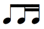 | textBlackNoteShortStem, textCont8thBeamShortStem, textBlackNoteFrac8thShortStem, textCont16thBeamShortStem, textBlackNoteFrac16thShortStem |
| 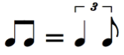 | textBlackNoteShortStem, textCont8thBeamShortStem, textBlackNoteFrac8thShortStem, space, =, space, textBlackNoteShortStem, textTupletBracketStartLongStem, textTuplet3LongStem, note8thUp, textTupletBracketEndLongStem |
| textBlackNoteShortStem, textCont8thBeamShortStem, textAugmentationDot, textCont8thBeamShortStem, textBlackNoteFrac16thShortStem |
Stems (U+E210–U+E21F)
| Glyph | Description | Glyph | Description |
|---|---|---|---|
| | U+E210 (and U+1D165) stem Combining stem | | U+E211 (and U+1D166) stemSprechgesang Combining sprechgesang stem |
| | U+E212 stemSwished Combining swished stem | | U+E213 stemPendereckiTremolo Combining Penderecki unmeasured tremolo stem |
| | U+E214 stemSulPonticello Combining sul ponticello (bow behind bridge) stem | | U+E215 stemBowOnBridge Combining bow on bridge stem |
| | U+E216 stemBowOnTailpiece Combining bow on tailpiece stem | | U+E217 stemBuzzRoll Combining buzz roll stem |
| | U+E218 stemDamp Combining damp stem | | U+E219 stemVibratoPulse Combining vibrato pulse accent (Saunders) stem |
| | U+E21A stemMultiphonicsBlack Combining multiphonics (black) stem | | U+E21B stemMultiphonicsWhite Combining multiphonics (white) stem |
| | U+E21C stemMultiphonicsBlackWhite Combining multiphonics (black and white) stem | | U+E21D stemSussurando Combining sussurando stem |
| | U+E21E stemRimShot Combining rim shot stem | | U+E21F stemHarpStringNoise Combining harp string noise stem |
Implementation notes
The glyphs shown here may be combined with noteheads to produce precomposed glyphs with a fixed stem length.
Scoring applications should produce this effect by imposing the required symbol on a stem drawn using a primitive line, rather than using these precomposed stem glyphs:
-
Sprechgesang (vocalSprechgesang)
-
Swish (pictSwish)
-
Penderecki unmeasured tremolo (pendereckiTremolo)
-
Sul ponticello (stringsBowBehindBridge)
-
Bow on bridge (stringsBowOnBridge)
-
Bow on tailpiece (stringsBowOnTailpiece)
-
Buzz roll (buzzRoll)
-
Damp (pluckedDampOnStem)
-
Vibrato pulse accent (stringsVibratoPulse)
-
Multiphonics (windMultiphonicsBlackStem, windMultiphonicsWhiteStem, windMultiphonicsBlackWhiteStem )
-
Sussurando (vocalsSussurando)
-
Rim shot (pictRimShotOnStem)
-
Harp string noise (harpStringNoiseStem)
Tremolos (U+E220–U+E23F)
| Glyph | Description | Glyph | Description |
|---|---|---|---|
| | U+E220 (and U+1D167) tremolo1 Combining tremolo 1 | | U+E221 (and U+1D168) tremolo2 Combining tremolo 2 |
| | U+E222 (and U+1D169) tremolo3 Combining tremolo 3 | | U+E223 tremolo4 Combining tremolo 4 |
| | U+E224 tremolo5 Combining tremolo 5 | | U+E225 (and U+1D16A) tremoloFingered1 Fingered tremolo 1 |
| | U+E226 (and U+1D16B) tremoloFingered2 Fingered tremolo 2 | | U+E227 (and U+1D16C) tremoloFingered3 Fingered tremolo 3 |
| | U+E228 tremoloFingered4 Fingered tremolo 4 | | U+E229 tremoloFingered5 Fingered tremolo 5 |
| | U+E22A buzzRoll Buzz roll | | U+E22B pendereckiTremolo Penderecki unmeasured tremolo |
| | U+E22C unmeasuredTremolo Wieniawski unmeasured tremolo | | U+E22D unmeasuredTremoloSimple Wieniawski unmeasured tremolo (simpler) |
| | U+E22E tremoloDivisiDots2 Divide measured tremolo by 2 | | U+E22F tremoloDivisiDots3 Divide measured tremolo by 3 |
| | U+E230 tremoloDivisiDots4 Divide measured tremolo by 4 | | U+E231 tremoloDivisiDots6 Divide measured tremolo by 6 |
| | U+E232 stockhausenTremolo Stockhausen irregular tremolo ("Morsen", like Morse code) | | U+E233 oneHandedRollStevens One-handed roll (Stevens) |
| | U+E234 doubleLateralRollStevens Double lateral roll (Stevens) |
Implementation notes
Scoring applications may simply use multiple instances of tremolo1 imposed on note stems to draw one-note tremolos with different numbers of slashes.
The fingered tremolo glyphs are for two-note tremolos. Scoring applications should draw two-note tremolos using the same primitives used for drawing beams, rather than using these glyphs.
Flags (U+E240–U+E25F)
| Glyph | Description | Glyph | Description |
|---|---|---|---|
| | U+E240 (and U+1D16E) flag8thUp Combining flag 1 (8th) above | | U+E241 flag8thDown Combining flag 1 (8th) below |
| | U+E242 (and U+1D16F) flag16thUp Combining flag 2 (16th) above | | U+E243 flag16thDown Combining flag 2 (16th) below |
| | U+E244 (and U+1D170) flag32ndUp Combining flag 3 (32nd) above | | U+E245 flag32ndDown Combining flag 3 (32nd) below |
| | U+E246 (and U+1D171) flag64thUp Combining flag 4 (64th) above | | U+E247 flag64thDown Combining flag 4 (64th) below |
| | U+E248 (and U+1D172) flag128thUp Combining flag 5 (128th) above | | U+E249 flag128thDown Combining flag 5 (128th) below |
| | U+E24A flag256thUp Combining flag 6 (256th) above | | U+E24B flag256thDown Combining flag 6 (256th) below |
| | U+E24C flag512thUp Combining flag 7 (512th) above | | U+E24D flag512thDown Combining flag 7 (512th) below |
| | U+E24E flag1024thUp Combining flag 8 (1024th) above | | U+E24F flag1024thDown Combining flag 8 (1024th) below |
| | U+E250 flagInternalUp Internal combining flag above | | U+E251 flagInternalDown Internal combining flag below |
Recommended stylistic alternates
| Glyph | Description | Glyph | Description |
|---|---|---|---|
| | uniE240.ss03 flag8thUpStraight Combining flag 1 (8th) above (straight) | | uniE240.ss02 flag8thUpShort Combining flag 1 (8th) above (short) |
| | uniE240.salt03 flag8thUpSmall Combining flag 1 (8th) above (small staff) | | uniE241.ss03 flag8thDownStraight Combining flag 1 (8th) below (straight) |
| | uniE241.salt02 flag8thDownSmall Combining flag 1 (8th) below (small staff) | | uniE242.ss03 flag16thUpStraight Combining flag 2 (16th) above (straight) |
| | uniE242.ss02 flag16thUpShort Combining flag 2 (16th) above (short) | | uniE242.salt03 flag16thUpSmall Combining flag 2 (16th) above (small staff) |
| | uniE243.ss03 flag16thDownStraight Combining flag 2 (16th) below (straight) | | uniE243.salt02 flag16thDownSmall Combining flag 2 (16th) below (small staff) |
| | uniE244.ss03 flag32ndUpStraight Combining flag 3 (32nd) above (straight) | | uniE244.ss02 flag32ndUpShort Combining flag 3 (32nd) above (short) |
| | uniE244.salt03 flag32ndUpSmall Combining flag 3 (32nd) above (small staff) | | uniE245.ss03 flag32ndDownStraight Combining flag 3 (32nd) below (straight) |
| | uniE245.salt02 flag32ndDownSmall Combining flag 3 (32nd) below (small staff) | | uniE246.ss03 flag64thUpStraight Combining flag 4 (64th) above (straight) |
| | uniE246.ss02 flag64thUpShort Combining flag 4 (64th) above (short) | | uniE246.salt03 flag64thUpSmall Combining flag 4 (64th) above (small staff) |
| | uniE247.ss03 flag64thDownStraight Combining flag 4 (64th) below (straight) | | uniE247.salt02 flag64thDownSmall Combining flag 4 (64th) below (small staff) |
| | uniE248.ss03 flag128thUpStraight Combining flag 5 (128th) above (straight) | | uniE248.ss02 flag128thUpShort Combining flag 5 (128th) above (short) |
| | uniE248.salt03 flag128thUpSmall Combining flag 5 (128th) above (small staff) | | uniE249.ss03 flag128thDownStraight Combining flag 5 (128th) below (straight) |
| | uniE249.salt02 flag128thDownSmall Combining flag 5 (128th) below (small staff) | | uniE24A.ss03 flag256thUpStraight Combining flag 6 (256th) above (straight) |
| | uniE24A.ss02 flag256thUpShort Combining flag 6 (256th) above (short) | | uniE24A.salt03 flag256thUpSmall Combining flag 6 (256th) above (small staff) |
| | uniE24B.ss03 flag256thDownStraight Combining flag 6 (256th) below (straight) | | uniE24B.salt02 flag256thDownSmall Combining flag 6 (256th) below (small staff) |
| | uniE24C.ss03 flag512thUpStraight Combining flag 7 (512th) above (straight) | | uniE24C.ss02 flag512thUpShort Combining flag 7 (512th) above (short) |
| | uniE24C.salt03 flag512thUpSmall Combining flag 7 (512th) above (small staff) | | uniE24D.ss03 flag512thDownStraight Combining flag 7 (512th) below (straight) |
| | uniE24D.salt02 flag512thDownSmall Combining flag 7 (512th) below (small staff) | | uniE24E.ss03 flag1024thUpStraight Combining flag 8 (1024th) above (straight) |
| | uniE24E.ss02 flag1024thUpShort Combining flag 8 (1024th) above (short) | | uniE24E.salt03 flag1024thUpSmall Combining flag 8 (1024th) above (small staff) |
| | uniE24F.ss03 flag1024thDownStraight Combining flag 8 (1024th) below (straight) | | uniE24F.salt02 flag1024thDownSmall Combining flag 8 (1024th) below (small staff) |
Implementation notes
Scoring applications may create groups of flags for notes shorter than 16th notes (semiquavers) by combining flag16thUp with the required number of flagInternalUp for stem up notes, or flag16thDown with the required number of flagInternalDown for stem down notes, stacking flagInternalUp above or flagInternalDown below respectively, ensuring even spacing.
The set of stylistic alternates for shorter flags may be substituted by a scoring application in the case of a dotted note with an upward stem, to avoid collisions between the augmentation dot and the flag.
Standard accidentals (12-EDO) (U+E260–U+E26F)
| Glyph | Description | Glyph | Description |
|---|---|---|---|
| | U+E260 (and 266D) accidentalFlat Flat | | U+E261 (and 266E) accidentalNatural Natural |
| | U+E262 (and 266F) accidentalSharp Sharp | | U+E263 (and U+1D12A) accidentalDoubleSharp Double sharp |
| | U+E264 (and U+1D12B) accidentalDoubleFlat Double flat | | U+E265 accidentalTripleSharp Triple sharp |
| | U+E266 accidentalTripleFlat Triple flat | | U+E267 accidentalNaturalFlat Natural flat |
| | U+E268 accidentalNaturalSharp Natural sharp | | U+E269 accidentalSharpSharp Sharp sharp |
| | U+E26A accidentalParensLeft Accidental parenthesis, left | | U+E26B accidentalParensRight Accidental parenthesis, right |
| | U+E26C accidentalBracketLeft Accidental bracket, left | | U+E26D accidentalBracketRight Accidental bracket, right |
Recommended stylistic alternates
| Glyph | Description | Glyph | Description |
|---|---|---|---|
| | uniE260.ss01 accidentalFlatSmall Flat (for small staves) | | uniE261.ss01 accidentalNaturalSmall Natural (for small staves) |
| | uniE262.ss01 accidentalSharpSmall Sharp (for small staves) | | uniE264.salt01 accidentalDoubleFlatJoinedStems Double flat (joined stems) |
| | uniE266.salt01 accidentalTripleFlatJoinedStems Triple flat (joined stems) |
Recommended ligatures
| Glyph | Description | Glyph | Description |
|---|---|---|---|
| | uniE26A_uniE260_uniE26B accidentalFlatParens Parenthesised flat | | uniE26A_uniE261_uniE26B accidentalNaturalParens Parenthesised natural |
| | uniE26A_uniE262_uniE26B accidentalSharpParens Parenthesised sharp | | uniE26A_uniE263_uniE26B accidentalDoubleSharpParens Parenthesised double sharp |
| | uniE26A_uniE264_uniE26B accidentalDoubleFlatParens Parenthesised double flat |
Implementation notes
Scoring applications may choose to substitute stylistic alternate versions of the common accidentals glyphs for a better appearance on smaller staves.
Gould arrow quartertone accidentals (24-EDO) (U+E270–U+E27F)
| Glyph | Description | Glyph | Description |
|---|---|---|---|
| | U+E270 (and U+1D12C) accidentalQuarterToneFlatArrowUp Quarter-tone flat | | U+E271 (and U+1D12D) accidentalThreeQuarterTonesFlatArrowDown Three-quarter-tones flat |
| | U+E272 (and U+1D12E) accidentalQuarterToneSharpNaturalArrowUp Quarter-tone sharp | | U+E273 (and U+1D12F) accidentalQuarterToneFlatNaturalArrowDown Quarter-tone flat |
| | U+E274 (and U+1D130) accidentalThreeQuarterTonesSharpArrowUp Three-quarter-tones sharp | | U+E275 (and U+1D131) accidentalQuarterToneSharpArrowDown Quarter-tone sharp |
| | U+E276 accidentalFiveQuarterTonesSharpArrowUp Five-quarter-tones sharp | | U+E277 accidentalThreeQuarterTonesSharpArrowDown Three-quarter-tones sharp |
| | U+E278 accidentalThreeQuarterTonesFlatArrowUp Three-quarter-tones flat | | U+E279 accidentalFiveQuarterTonesFlatArrowDown Five-quarter-tones flat |
| | U+E27A accidentalArrowUp Arrow up (raise by one quarter-tone) | | U+E27B accidentalArrowDown Arrow down (lower by one quarter-tone) |
Stein-Zimmermann accidentals (24-EDO) (U+E280–U+E28F)
| Glyph | Description | Glyph | Description |
|---|---|---|---|
| | U+E280 accidentalQuarterToneFlatStein Reversed flat (quarter-tone flat) (Stein) | | U+E281 accidentalThreeQuarterTonesFlatZimmermann Reversed flat and flat (three-quarter-tones flat) (Zimmermann) |
| | U+E282 accidentalQuarterToneSharpStein Half sharp (quarter-tone sharp) (Stein) | | U+E283 accidentalThreeQuarterTonesSharpStein One and a half sharps (three-quarter-tones sharp) (Stein) |
| | U+E284 accidentalNarrowReversedFlat Narrow reversed flat(quarter-tone flat) | | U+E285 accidentalNarrowReversedFlatAndFlat Narrow reversed flat and flat(three-quarter-tones flat) |
Extended Stein-Zimmermann accidentals (U+E290–U+E29F)
| Glyph | Description | Glyph | Description |
|---|---|---|---|
| | U+E290 accidentalReversedFlatArrowUp Reversed flat with arrow up | | U+E291 accidentalReversedFlatArrowDown Reversed flat with arrow down |
| | U+E292 accidentalFilledReversedFlatArrowUp Filled reversed flat with arrow up | | U+E293 accidentalFilledReversedFlatArrowDown Filled reversed flat with arrow down |
| | U+E294 accidentalReversedFlatAndFlatArrowUp Reversed flat and flat with arrow up | | U+E295 accidentalReversedFlatAndFlatArrowDown Reversed flat and flat with arrow down |
| | U+E296 accidentalFilledReversedFlatAndFlat Filled reversed flat and flat | | U+E297 accidentalFilledReversedFlatAndFlatArrowUp Filled reversed flat and flat with arrow up |
| | U+E298 accidentalFilledReversedFlatAndFlatArrowDown Filled reversed flat and flat with arrow down | | U+E299 accidentalHalfSharpArrowUp Half sharp with arrow up |
| | U+E29A accidentalHalfSharpArrowDown Half sharp with arrow down | | U+E29B accidentalOneAndAHalfSharpsArrowUp One and a half sharps with arrow up |
| | U+E29C accidentalOneAndAHalfSharpsArrowDown One and a half sharps with arrow down |
Implementation notes
These accidentals were not actually proposed by Richard Stein or Bernd Zimmermann, but are instead logical extensions of their symbols adding arrows to provide options for notating slight pitch modifications1.
Gould, ibid., page 96 acknowledges the Stein-Zimmermann accidentals as the most commonly-used symbols with fixed meanings; however, the extensions provided here do not have fixed meanings.
Sims accidentals (72-EDO) (U+E2A0–U+E2AF)
| Glyph | Description | Glyph | Description |
|---|---|---|---|
| | U+E2A0 accidentalSims12Down 1/12 tone low | | U+E2A1 accidentalSims6Down 1/6 tone low |
| | U+E2A2 accidentalSims4Down 1/4 tone low | | U+E2A3 accidentalSims12Up 1/12 tone high |
| | U+E2A4 accidentalSims6Up 1/6 tone high | | U+E2A5 accidentalSims4Up 1/4 tone high |
Implementation notes
These glyphs may be used alone and to the left of the standard 12-EDO accidentals.
Johnston accidentals (just intonation) (U+E2B0–U+E2BF)
| Glyph | Description | Glyph | Description |
|---|---|---|---|
| | U+E2B0 accidentalJohnstonPlus Plus (raise by 81:80) | | U+E2B1 accidentalJohnstonMinus Minus (lower by 81:80) |
| | U+E2B2 accidentalJohnstonEl Inverted seven (raise by 36:35) | | U+E2B3 accidentalJohnstonSeven Seven (lower by 36:35) |
| | U+E2B4 accidentalJohnstonUp Up arrow (raise by 33:32) | | U+E2B5 accidentalJohnstonDown Down arrow (lower by 33:32) |
| | U+E2B6 accidentalJohnston13 Thirteen (raise by 65:64) | | U+E2B7 accidentalJohnston31 Inverted 13 (lower by 65:64) |
Recommended ligatures
| Glyph | Description | Glyph | Description |
|---|---|---|---|
| | uniE262_uniE2B2 accidentalSharpJohnstonEl Sharp-inverted seven | | uniE262_uniE2B4 accidentalSharpJohnstonUp Sharp-up arrow |
| | uniE262_uniE2B5 accidentalSharpJohnstonDown Sharp-down arrow | | uniE260_uniE2B2 accidentalFlatJohnstonEl Flat-inverted seven |
| | uniE260_uniE2B4 accidentalFlatJohnstonUp Flat-up arrow | | uniE260_uniE2B5 accidentalFlatJohnstonDown Flat-down arrow |
| | uniE2B3_uniE262 accidentalJohnstonSevenSharp Seven-sharp | | uniE2B3_uniE260 accidentalJohnstonSevenFlat Seven-flat |
| | uniE2B3_uniE2B4 accidentalJohnstonSevenUp Seven-up arrow | | uniE2B3_uniE2B5 accidentalJohnstonSevenDown Seven-down arrow |
| | uniE2B4_uniE2B2 accidentalJohnstonUpEl Up arrow-inverted seven | | uniE2B5_uniE2B2 accidentalJohnstonDownEl Down arrow-inverted seven |
| | uniE262_uniE2B4_uniE2B2 accidentalSharpJohnstonUpEl Sharp-up arrow-inverted seven | | uniE262_uniE2B5_uniE2B2 accidentalSharpJohnstonDownEl Sharp-down arrow-inverted seven |
| | uniE2B3_uniE262_uniE2B4 accidentalJohnstonSevenSharpUp Seven-sharp-up arrow | | uniE2B3_uniE262_uniE2B5 accidentalJohnstonSevenSharpDown Seven-sharp-down arrow |
| | uniE260_uniE2B4_uniE2B2 accidentalFlatJohnstonUpEl Flat-up arrow-inverted seven | | uniE260_uniE2B2_uniE2B5 accidentalFlatJohnstonElDown Flat-inverted seven-down arrow |
| | uniE2B3_uniE260_uniE2B4 accidentalJohnstonSevenFlatUp Seven-flat-up arrow | | uniE2B3_uniE260_uniE2B5 accidentalJohnstonSevenFlatDown Seven-flat-down arrow |
Implementation notes
These glyphs are intended for combining with the standard 12-EDO accidentals.
Extended Helmholtz-Ellis accidentals (just intonation) (U+E2C0–U+E2FF)
| Glyph | Description | Glyph | Description |
|---|---|---|---|
| | U+E2C0 accidentalDoubleFlatOneArrowDown Double flat lowered by one syntonic comma | | U+E2C1 accidentalFlatOneArrowDown Flat lowered by one syntonic comma |
| | U+E2C2 accidentalNaturalOneArrowDown Natural lowered by one syntonic comma | | U+E2C3 accidentalSharpOneArrowDown Sharp lowered by one syntonic comma |
| | U+E2C4 accidentalDoubleSharpOneArrowDown Double sharp lowered by one syntonic comma | | U+E2C5 accidentalDoubleFlatOneArrowUp Double flat raised by one syntonic comma |
| | U+E2C6 accidentalFlatOneArrowUp Flat raised by one syntonic comma | | U+E2C7 accidentalNaturalOneArrowUp Natural raised by one syntonic comma |
| | U+E2C8 accidentalSharpOneArrowUp Sharp raised by one syntonic comma | | U+E2C9 accidentalDoubleSharpOneArrowUp Double sharp raised by one syntonic comma |
| | U+E2CA accidentalDoubleFlatTwoArrowsDown Double flat lowered by two syntonic commas | | U+E2CB accidentalFlatTwoArrowsDown Flat lowered by two syntonic commas |
| | U+E2CC accidentalNaturalTwoArrowsDown Natural lowered by two syntonic commas | | U+E2CD accidentalSharpTwoArrowsDown Sharp lowered by two syntonic commas |
| | U+E2CE accidentalDoubleSharpTwoArrowsDown Double sharp lowered by two syntonic commas | | U+E2CF accidentalDoubleFlatTwoArrowsUp Double flat raised by two syntonic commas |
| | U+E2D0 accidentalFlatTwoArrowsUp Flat raised by two syntonic commas | | U+E2D1 accidentalNaturalTwoArrowsUp Natural raised by two syntonic commas |
| | U+E2D2 accidentalSharpTwoArrowsUp Sharp raised by two syntonic commas | | U+E2D3 accidentalDoubleSharpTwoArrowsUp Double sharp raised by two syntonic commas |
| | U+E2D4 accidentalDoubleFlatThreeArrowsDown Double flat lowered by three syntonic commas | | U+E2D5 accidentalFlatThreeArrowsDown Flat lowered by three syntonic commas |
| | U+E2D6 accidentalNaturalThreeArrowsDown Natural lowered by three syntonic commas | | U+E2D7 accidentalSharpThreeArrowsDown Sharp lowered by three syntonic commas |
| | U+E2D8 accidentalDoubleSharpThreeArrowsDown Double sharp lowered by three syntonic commas | | U+E2D9 accidentalDoubleFlatThreeArrowsUp Double flat raised by three syntonic commas |
| | U+E2DA accidentalFlatThreeArrowsUp Flat raised by three syntonic commas | | U+E2DB accidentalNaturalThreeArrowsUp Natural raised by three syntonic commas |
| | U+E2DC accidentalSharpThreeArrowsUp Sharp raised by three syntonic commas | | U+E2DD accidentalDoubleSharpThreeArrowsUp Double sharp raised by three syntonic commas |
| | U+E2DE accidentalLowerOneSeptimalComma Lower by one septimal comma | | U+E2DF accidentalRaiseOneSeptimalComma Raise by one septimal comma |
| | U+E2E0 accidentalLowerTwoSeptimalCommas Lower by two septimal commas | | U+E2E1 accidentalRaiseTwoSeptimalCommas Raise by two septimal commas |
| | U+E2E2 accidentalLowerOneUndecimalQuartertone Lower by one undecimal quartertone | | U+E2E3 accidentalRaiseOneUndecimalQuartertone Raise by one undecimal quartertone |
| | U+E2E4 accidentalLowerOneTridecimalQuartertone Lower by one tridecimal quartertone | | U+E2E5 accidentalRaiseOneTridecimalQuartertone Raise by one tridecimal quartertone |
| | U+E2E6 accidentalCombiningLower17Schisma Combining lower by one 17-limit schisma | | U+E2E7 accidentalCombiningRaise17Schisma Combining raise by one 17-limit schisma |
| | U+E2E8 accidentalCombiningLower19Schisma Combining lower by one 19-limit schisma | | U+E2E9 accidentalCombiningRaise19Schisma Combining raise by one 19-limit schisma |
| | U+E2EA accidentalCombiningLower23Limit29LimitComma Combining lower by one 23-limit comma | | U+E2EB accidentalCombiningRaise23Limit29LimitComma Combining raise by one 23-limit comma |
| | U+E2EC accidentalCombiningLower31Schisma Combining lower by one 31-limit schisma | | U+E2ED accidentalCombiningRaise31Schisma Combining raise by one 31-limit schisma |
| | U+E2EE accidentalCombiningOpenCurlyBrace Combining open curly brace | | U+E2EF accidentalCombiningCloseCurlyBrace Combining close curly brace |
| | U+E2F0 accidentalDoubleFlatEqualTempered Double flat equal tempered semitone | | U+E2F1 accidentalFlatEqualTempered Flat equal tempered semitone |
| | U+E2F2 accidentalNaturalEqualTempered Natural equal tempered semitone | | U+E2F3 accidentalSharpEqualTempered Sharp equal tempered semitone |
| | U+E2F4 accidentalDoubleSharpEqualTempered Double sharp equal tempered semitone | | U+E2F5 accidentalQuarterFlatEqualTempered Lower by one equal tempered quarter-tone |
| | U+E2F6 accidentalQuarterSharpEqualTempered Raise by one equal tempered quarter tone | | U+E2F7 accidentalCombiningLower53LimitComma Combining lower by one 53-limit comma |
| | U+E2F8 accidentalCombiningRaise53LimitComma Combining raise by one 53-limit comma | | U+E2F9 accidentalEnharmonicTilde Enharmonically reinterpret accidental tilde |
| | U+E2FA accidentalEnharmonicAlmostEqualTo Enharmonically reinterpret accidental almost equal to | | U+E2FB accidentalEnharmonicEquals Enharmonically reinterpret accidental equals |
Supplementary Groups
Extended Helmholtz-Ellis accidentals (just intonation) supplement
Spartan Sagittal single-shaft accidentals (U+E300–U+E30F)
| Glyph | Description | Glyph | Description |
|---|---|---|---|
| | U+E300 accSagittal5v7KleismaUp 5:7 kleisma up, (5:7k, ~11:13k, 7C less 5C) | | U+E301 accSagittal5v7KleismaDown 5:7 kleisma down |
| | U+E302 accSagittal5CommaUp 5 comma up, (5C), 1° up [22 27 29 34 41 46 53 96 EDOs], 1/12-tone up | | U+E303 accSagittal5CommaDown 5 comma down, 1° down [22 27 29 34 41 46 53 96 EDOs], 1/12-tone down |
| | U+E304 accSagittal7CommaUp 7 comma up, (7C), 1° up [43 EDO], 2° up [72 EDO], 1/6-tone up | | U+E305 accSagittal7CommaDown 7 comma down, 1° down [43 EDO], 2° down [72 EDO], 1/6-tone down |
| | U+E306 accSagittal25SmallDiesisUp 25 small diesis up, (25S, ~5:13S, ~37S, 5C plus 5C), 2° up [53 EDO] | | U+E307 accSagittal25SmallDiesisDown 25 small diesis down, 2° down [53 EDO] |
| | U+E308 accSagittal35MediumDiesisUp 35 medium diesis up, (35M, ~13M, ~125M, 5C plus 7C), 2/9-tone up | | U+E309 accSagittal35MediumDiesisDown 35 medium diesis down, 1°[50] 2°[27] down, 2/9-tone down |
| | U+E30A accSagittal11MediumDiesisUp 11 medium diesis up, (11M), 1°[17 31] 2°46 up, 1/4-tone up | | U+E30B accSagittal11MediumDiesisDown 11 medium diesis down, 1°[17 31] 2°46 down, 1/4-tone down |
| | U+E30C accSagittal11LargeDiesisUp 11 large diesis up, (11L), (sharp less 11M), 3° up [46 EDO] | | U+E30D accSagittal11LargeDiesisDown 11 large diesis down, 3° down [46 EDO] |
| | U+E30E accSagittal35LargeDiesisUp 35 large diesis up, (35L, ~13L, ~125L, sharp less 35M), 2°50 up | | U+E30F accSagittal35LargeDiesisDown 35 large diesis down, 2° down [50 EDO], 5/18-tone down |
Implementation notes
It is not necessary to implement the complete Sagittal microtonal notation system. The Spartan set is sufficient to notate 13-limit just intonation (JI), 1/12-tones, 50 common equal divisions of the octave (EDOs), and their related linear temperaments.
The eight pairs of single-shaft accidentals above are sufficient to provide these capabilities when used alone, and to the left of the standard accidentalDoubleFlat, accidentalFlat, accidentalSharp, and the almost-standard accidentalLargeDoubleSharp. This is called “mixed Sagittal.”
As an alternative, the following group (the multi-shaft Spartans) provides a complete set of stand-alone accidentals to replace each of the above combinations of a single-shaft Sagittal with a standard accidental. This is called “pure Sagittal.” The standard accidentalNatural is used alone in both mixed and pure variants, but only to cancel a previous accidental.
Sagittal accidentals are not intended to be combined with one another, inasmuch as symbols representing useful combinations and powers of primes are already provided. An accidental can often be used to represent alternative commas that differ by 2 cents or less. In such cases the intended comma ratio may be determined by the note to which it is applied, or by the musical context. Alternatively, diacritics (from the Herculean and subsequent extensions) may be added to distinguish these commas. Commas which require diacritics for exact representation are preceded by a tilde “~” in the glyph descriptions.
Sagittal extensions following Spartan allow notation of JI ratios with primes beyond 13, and more combinations of lower primes, as well as finer tone-fractions, degrees of larger EDOs, and more complex temperaments, all with single Sagittal accidentals. The same choice of mixed versus pure is available with each extension. See http://sagittal.org for more information.
Other Sagittal-compatible accidentals are accidentalQuarterToneSharpStein and accidentalThreeQuarterTonesSharpStein which may be substituted for accSagittal11MediumDiesisUp and accSagittalSharp11MUp; the accidentalNarrowReversedFlat and accidentalNarrowReversedFlatAndFlat which may be substituted for accSagittal11MediumDiesisDown and accSagittalFlat11MDown; and the accidentalWilsonPlus and accidentalWilsonMinus which may be substituted for the accSagittal5CommaUp and accSagittal5CommaDown.
Spartan Sagittal multi-shaft accidentals (U+E310–U+E33F)
| Glyph | Description | Glyph | Description |
|---|---|---|---|
| | U+E310 accSagittalSharp25SDown Sharp 25S-down, 3° up [53 EDO] | | U+E311 accSagittalFlat25SUp Flat 25S-up, 3° down [53 EDO] |
| | U+E312 accSagittalSharp7CDown Sharp 7C-down, 2° up [43 EDO], 4° up [72 EDO], 1/3-tone up | | U+E313 accSagittalFlat7CUp Flat 7C-up, 2° down [43 EDO], 4° down [72 EDO], 1/3-tone down |
| | U+E314 accSagittalSharp5CDown Sharp 5C-down, 2°[22 29] 3°[27 34 41] 4°[39 46 53] 5°[72] 7°[96] up, 5/12-tone up | | U+E315 accSagittalFlat5CUp Flat 5C-up, 2°[22 29] 3°[27 34 41] 4°[39 46 53] 5°72 7°[96] down, 5/12-tone down |
| | U+E316 accSagittalSharp5v7kDown Sharp 5:7k-down | | U+E317 accSagittalFlat5v7kUp Flat 5:7k-up |
| | U+E318 accSagittalSharp Sharp, (apotome up)[almost all EDOs], 1/2-tone up | | U+E319 accSagittalFlat Flat, (apotome down)[almost all EDOs], 1/2-tone down |
| | U+E31A accSagittalUnused1 Unused | | U+E31B accSagittalUnused2 Unused |
| | U+E31C accSagittalSharp5v7kUp Sharp 5:7k-up | | U+E31D accSagittalFlat5v7kDown Flat 5:7k-down |
| | U+E31E accSagittalSharp5CUp Sharp 5C-up, 4°[22 29] 5°[27 34 41] 6°[39 46 53] up, 7/12-tone up | | U+E31F accSagittalFlat5CDown Flat 5C-down, 4°[22 29] 5°[27 34 41] 6°[39 46 53] down, 7/12-tone down |
| | U+E320 accSagittalSharp7CUp Sharp 7C-up, 4° up [43 EDO], 8° up [72 EDO], 2/3-tone up | | U+E321 accSagittalFlat7CDown Flat 7C-down, 4° down [43 EDO], 8° down [72 EDO], 2/3-tone down |
| | U+E322 accSagittalSharp25SUp Sharp 25S-up, 7° up [53 EDO] | | U+E323 accSagittalFlat25SDown Flat 25S-down, 7° down [53 EDO] |
| | U+E324 accSagittalSharp35MUp Sharp 35M-up, 4° up [50 EDO], 6° up [27 EDO], 13/18-tone up | | U+E325 accSagittalFlat35MDown Flat 35M-down, 4° down [50 EDO], 6° down [27 EDO], 13/18-tone down |
| | U+E326 accSagittalSharp11MUp Sharp 11M-up, 3° up [17 31 EDOs], 7° up [46 EDO], 3/4-tone up | | U+E327 accSagittalFlat11MDown Flat 11M-down, 3° down [17 31 EDOs], 7° down [46 EDO], 3/4-tone down |
| | U+E328 accSagittalSharp11LUp Sharp 11L-up, 8° up [46 EDO] | | U+E329 accSagittalFlat11LDown Flat 11L-down, 8° up [46 EDO] |
| | U+E32A accSagittalSharp35LUp Sharp 35L-up, 5° up [50 EDO] | | U+E32B accSagittalFlat35LDown Flat 35L-down, 5° down [50 EDO] |
| | U+E32C accSagittalDoubleSharp25SDown Double sharp 25S-down, 8°up [53 EDO] | | U+E32D accSagittalDoubleFlat25SUp Double flat 25S-up, 8°down [53 EDO] |
| | U+E32E accSagittalDoubleSharp7CDown Double sharp 7C-down, 5°[43] 10°[72] up, 5/6-tone up | | U+E32F accSagittalDoubleFlat7CUp Double flat 7C-up, 5° down [43 EDO], 10° down [72 EDO], 5/6-tone down |
| | U+E330 accSagittalDoubleSharp5CDown Double sharp 5C-down, 5°[22 29] 7°[34 41] 9°53 up, 11/12 tone up | | U+E331 accSagittalDoubleFlat5CUp Double flat 5C-up, 5°[22 29] 7°[34 41] 9°53 down, 11/12 tone down |
| | U+E332 accSagittalDoubleSharp5v7kDown Double sharp 5:7k-down | | U+E333 accSagittalDoubleFlat5v7kUp Double flat 5:7k-up |
| | U+E334 accSagittalDoubleSharp Double sharp, (2 apotomes up)[almost all EDOs], whole-tone up | | U+E335 accSagittalDoubleFlat Double flat, (2 apotomes down)[almost all EDOs], whole-tone down |
Athenian Sagittal extension (medium precision) accidentals (U+E340–U+E36F)
| Glyph | Description | Glyph | Description |
|---|---|---|---|
| | U+E340 accSagittal7v11KleismaUp 7:11 kleisma up, (7:11k, ~29k) | | U+E341 accSagittal7v11KleismaDown 7:11 kleisma down |
| | U+E342 accSagittal17CommaUp 17 comma up, (17C) | | U+E343 accSagittal17CommaDown 17 comma down |
| | U+E344 accSagittal55CommaUp 55 comma up, (55C, 11M less 5C), 3°up [96 EDO], 3/16-tone up | | U+E345 accSagittal55CommaDown 55 comma down, 3° down [96 EDO], 3/16-tone down |
| | U+E346 accSagittal7v11CommaUp 7:11 comma up, (7:11C, ~13:17S, ~29S, 11L less 7C), 1° up [60 EDO] | | U+E347 accSagittal7v11CommaDown 7:11 comma down, 1° down [60 EDO], 1/10-tone down |
| | U+E348 accSagittal5v11SmallDiesisUp 5:11 small diesis up, (5:11S, ~7:13S, ~11:17S, 5:7k plus 7:11C) | | U+E349 accSagittal5v11SmallDiesisDown 5:11 small diesis down |
| | U+E34A accSagittalSharp5v11SDown Sharp 5:11S-down | | U+E34B accSagittalFlat5v11SUp Flat 5:11S-up |
| | U+E34C accSagittalSharp7v11CDown Sharp 7:11C-down, 4° up [60 EDO], 2/5-tone up | | U+E34D accSagittalFlat7v11CUp Flat 7:11C-up, 4° down [60 EDO], 2/5-tone down |
| | U+E34E accSagittalSharp55CDown Sharp 55C-down, 5° up [96 EDO], 5/16-tone up | | U+E34F accSagittalFlat55CUp Flat 55C-up, 5° down [96 EDO], 5/16-tone down |
| | U+E350 accSagittalSharp17CDown Sharp 17C-down | | U+E351 accSagittalFlat17CUp Flat 17C-up |
| | U+E352 accSagittalSharp7v11kDown Sharp 7:11k-down | | U+E353 accSagittalFlat7v11kUp Flat 7:11k-up |
| | U+E354 accSagittalSharp7v11kUp Sharp 7:11k-up | | U+E355 accSagittalFlat7v11kDown Flat 7:11k-down |
| | U+E356 accSagittalSharp17CUp Sharp 17C-up | | U+E357 accSagittalFlat17CDown Flat 17C-down |
| | U+E358 accSagittalSharp55CUp Sharp 55C-up, 11° up [96 EDO], 11/16-tone up | | U+E359 accSagittalFlat55CDown Flat 55C-down, 11° down [96 EDO], 11/16-tone down |
| | U+E35A accSagittalSharp7v11CUp Sharp 7:11C-up, 6° up [60 EDO], 3/5- tone up | | U+E35B accSagittalFlat7v11CDown Flat 7:11C-down, 6° down [60 EDO], 3/5- tone down |
| | U+E35C accSagittalSharp5v11SUp Sharp 5:11S-up | | U+E35D accSagittalFlat5v11SDown Flat 5:11S-down |
| | U+E35E accSagittalDoubleSharp5v11SDown Double sharp 5:11S-down | | U+E35F accSagittalDoubleFlat5v11SUp Double flat 5:11S-up |
| | U+E360 accSagittalDoubleSharp7v11CDown Double sharp 7:11C-down, 9° up [60 EDO], 9/10-tone up | | U+E361 accSagittalDoubleFlat7v11CUp Double flat 7:11C-up, 9° down [60 EDO], 9/10-tone down |
| | U+E362 accSagittalDoubleSharp55CDown Double sharp 55C-down, 13° up [96 EDO], 13/16-tone up | | U+E363 accSagittalDoubleFlat55CUp Double flat 55C-up, 13° down [96 EDO], 13/16-tone down |
| | U+E364 accSagittalDoubleSharp17CDown Double sharp 17C-down | | U+E365 accSagittalDoubleFlat17CUp Double flat 17C-up |
| | U+E366 accSagittalDoubleSharp7v11kDown Double sharp 7:11k-down | | U+E367 accSagittalDoubleFlat7v11kUp Double flat 7:11k-up |
Trojan Sagittal extension (12-EDO relative) accidentals (U+E370–U+E38F)
| Glyph | Description | Glyph | Description |
|---|---|---|---|
| | U+E370 accSagittal23CommaUp 23 comma up, (23C), 2° up [96 EDO], 1/8-tone up | | U+E371 accSagittal23CommaDown 23 comma down, 2° down [96 EDO], 1/8-tone down |
| | U+E372 accSagittal5v19CommaUp 5:19 comma up, (5:19C, 5C plus 19s), 1/20-tone up | | U+E373 accSagittal5v19CommaDown 5:19 comma down, 1/20-tone down |
| | U+E374 accSagittal5v23SmallDiesisUp 5:23 small diesis up, (5:23S, 5C plus 23C), 2° up [60 EDO], 1/5-tone up | | U+E375 accSagittal5v23SmallDiesisDown 5:23 small diesis down, 2° down [60 EDO], 1/5-tone down |
| | U+E376 accSagittalSharp5v23SDown Sharp 5:23S-down, 3° up [60 EDO], 3/10-tone up | | U+E377 accSagittalFlat5v23SUp Flat 5:23S-up, 3° down [60 EDO], 3/10-tone down |
| | U+E378 accSagittalSharp5v19CDown Sharp 5:19C-down, 9/20-tone up | | U+E379 accSagittalFlat5v19CUp Flat 5:19C-up, 9/20-tone down |
| | U+E37A accSagittalSharp23CDown Sharp 23C-down, 6° up [96 EDO], 3/8-tone up | | U+E37B accSagittalFlat23CUp Flat 23C-up, 6° down [96 EDO], 3/8-tone down |
| | U+E37C accSagittalSharp23CUp Sharp 23C-up, 10° up [96 EDO], 5/8-tone up | | U+E37D accSagittalFlat23CDown Flat 23C-down, 10° down [96 EDO], 5/8-tone down |
| | U+E37E accSagittalSharp5v19CUp Sharp 5:19C-up, 11/20-tone up | | U+E37F accSagittalFlat5v19CDown Flat 5:19C-down, 11/20-tone down |
| | U+E380 accSagittalSharp5v23SUp Sharp 5:23S-up, 7° up [60 EDO], 7/10-tone up | | U+E381 accSagittalFlat5v23SDown Flat 5:23S-down, 7° down [60 EDO], 7/10-tone down |
| | U+E382 accSagittalDoubleSharp5v23SDown Double sharp 5:23S-down, 8° up [60 EDO], 4/5-tone up | | U+E383 accSagittalDoubleFlat5v23SUp Double flat 5:23S-up, 8° down [60 EDO], 4/5-tone down |
| | U+E384 accSagittalDoubleSharp5v19CDown Double sharp 5:19C-down, 19/20-tone up | | U+E385 accSagittalDoubleFlat5v19CUp Double flat 5:19C-up, 19/20-tone down |
| | U+E386 accSagittalDoubleSharp23CDown Double sharp 23C-down, 14°up [96 EDO], 7/8-tone up | | U+E387 accSagittalDoubleFlat23CUp Double flat 23C-up, 14° down [96 EDO], 7/8-tone down |
Implementation notes
The Trojan (or tone-fraction) set is not strictly-speaking an extension of Athenian, as there are a few Athenians (including Spartans) that are not Trojan. Those are the glyphs whose descriptions include “5:7k”, “7:11k”, “5:11S”, “25S” or “11L” and do not include a tone-fraction.
The descriptions below the Sagittal glyphs do not include all possible uses, only a selection of the most common. To determine which of these glyphs to use for tone-fractions not listed here (as well as for JI ratios and degrees of EDOs that are not listed here) please see http://sagittal.org.
Promethean Sagittal extension (high precision) single-shaft accidentals (U+E390–U+E3AF)
| Glyph | Description | Glyph | Description |
|---|---|---|---|
| | U+E390 accSagittal19SchismaUp 19 schisma up, (19s) | | U+E391 accSagittal19SchismaDown 19 schisma down |
| | U+E392 accSagittal17KleismaUp 17 kleisma up, (17k) | | U+E393 accSagittal17KleismaDown 17 kleisma down |
| | U+E394 accSagittal143CommaUp 143 comma up, (143C, 13L less 11M) | | U+E395 accSagittal143CommaDown 143 comma down |
| | U+E396 accSagittal11v49CommaUp 11:49 comma up, (11:49C, 11M less 49C) | | U+E397 accSagittal11v49CommaDown 11:49 comma down |
| | U+E398 accSagittal19CommaUp 19 comma up, (19C) | | U+E399 accSagittal19CommaDown 19 comma down |
| | U+E39A accSagittal7v19CommaUp 7:19 comma up, (7:19C, 7C less 19s) | | U+E39B accSagittal7v19CommaDown 7:19 comma down |
| | U+E39C accSagittal49SmallDiesisUp 49 small diesis up, (49S, ~31S) | | U+E39D accSagittal49SmallDiesisDown 49 small diesis down |
| | U+E39E accSagittal23SmallDiesisUp 23 small diesis up, (23S) | | U+E39F accSagittal23SmallDiesisDown 23 small diesis down |
| | U+E3A0 accSagittal5v13MediumDiesisUp 5:13 medium diesis up, (5:13M, ~37M, 5C plus 13C) | | U+E3A1 accSagittal5v13MediumDiesisDown 5:13 medium diesis down |
| | U+E3A2 accSagittal11v19MediumDiesisUp 11:19 medium diesis up, (11:19M, 11M plus 19s) | | U+E3A3 accSagittal11v19MediumDiesisDown 11:19 medium diesis down |
| | U+E3A4 accSagittal49MediumDiesisUp 49 medium diesis up, (49M, ~31M, 7C plus 7C) | | U+E3A5 accSagittal49MediumDiesisDown 49 medium diesis down |
| | U+E3A6 accSagittal5v49MediumDiesisUp 5:49 medium diesis up, (5:49M, half apotome) | | U+E3A7 accSagittal5v49MediumDiesisDown 5:49 medium diesis down |
| | U+E3A8 accSagittal49LargeDiesisUp 49 large diesis up, (49L, ~31L, apotome less 49M) | | U+E3A9 accSagittal49LargeDiesisDown 49 large diesis down |
| | U+E3AA accSagittal11v19LargeDiesisUp 11:19 large diesis up, (11:19L, apotome less 11:19M) | | U+E3AB accSagittal11v19LargeDiesisDown 11:19 large diesis down |
| | U+E3AC accSagittal5v13LargeDiesisUp 5:13 large diesis up, (5:13L, ~37L, apotome less 5:13M) | | U+E3AD accSagittal5v13LargeDiesisDown 5:13 large diesis down |
Promethean Sagittal extension (high precision) multi-shaft accidentals (U+E3B0–U+E3EF)
| Glyph | Description | Glyph | Description |
|---|---|---|---|
| | U+E3B0 accSagittalSharp23SDown Sharp 23S-down | | U+E3B1 accSagittalFlat23SUp Flat 23S-up |
| | U+E3B2 accSagittalSharp49SDown Sharp 49S-down | | U+E3B3 accSagittalFlat49SUp Flat 49S-up |
| | U+E3B4 accSagittalSharp7v19CDown Sharp 7:19C-down | | U+E3B5 accSagittalFlat7v19CUp Flat 7:19C-up |
| | U+E3B6 accSagittalSharp19CDown Sharp 19C-down | | U+E3B7 accSagittalFlat19CUp Flat 19C-up |
| | U+E3B8 accSagittalSharp11v49CDown Sharp 11:49C-down | | U+E3B9 accSagittalFlat11v49CUp Flat 11:49C-up |
| | U+E3BA accSagittalSharp143CDown Sharp 143C-down | | U+E3BB accSagittalFlat143CUp Flat 143C-up |
| | U+E3BC accSagittalSharp17kDown Sharp 17k-down | | U+E3BD accSagittalFlat17kUp Flat 17k-up |
| | U+E3BE accSagittalSharp19sDown Sharp 19s-down | | U+E3BF accSagittalFlat19sUp Flat 19s-up |
| | U+E3C0 accSagittalSharp19sUp Sharp 19s-up | | U+E3C1 accSagittalFlat19sDown Flat 19s-down |
| | U+E3C2 accSagittalSharp17kUp Sharp 17k-up | | U+E3C3 accSagittalFlat17kDown Flat 17k-down |
| | U+E3C4 accSagittalSharp143CUp Sharp 143C-up | | U+E3C5 accSagittalFlat143CDown Flat 143C-down |
| | U+E3C6 accSagittalSharp11v49CUp Sharp 11:49C-up | | U+E3C7 accSagittalFlat11v49CDown Flat 11:49C-down |
| | U+E3C8 accSagittalSharp19CUp Sharp 19C-up | | U+E3C9 accSagittalFlat19CDown Flat 19C-down |
| | U+E3CA accSagittalSharp7v19CUp Sharp 7:19C-up | | U+E3CB accSagittalFlat7v19CDown Flat 7:19C-down |
| | U+E3CC accSagittalSharp49SUp Sharp 49S-up | | U+E3CD accSagittalFlat49SDown Flat 49S-down |
| | U+E3CE accSagittalSharp23SUp Sharp 23S-up | | U+E3CF accSagittalFlat23SDown Flat 23S-down |
| | U+E3D0 accSagittalSharp5v13MUp Sharp 5:13M-up | | U+E3D1 accSagittalFlat5v13MDown Flat 5:13M-down |
| | U+E3D2 accSagittalSharp11v19MUp Sharp 11:19M-up | | U+E3D3 accSagittalFlat11v19MDown Flat 11:19M-down |
| | U+E3D4 accSagittalSharp49MUp Sharp 49M-up | | U+E3D5 accSagittalFlat49MDown Flat 49M-down |
| | U+E3D6 accSagittalSharp5v49MUp Sharp 5:49M-up, (one and a half apotomes) | | U+E3D7 accSagittalFlat5v49MDown Flat 5:49M-down |
| | U+E3D8 accSagittalSharp49LUp Sharp 49L-up | | U+E3D9 accSagittalFlat49LDown Flat 49L-down |
| | U+E3DA accSagittalSharp11v19LUp Sharp 11:19L-up | | U+E3DB accSagittalFlat11v19LDown Flat 11:19L-down |
| | U+E3DC accSagittalSharp5v13LUp Sharp 5:13L-up | | U+E3DD accSagittalFlat5v13LDown Flat 5:13L-down |
| | U+E3DE accSagittalUnused3 Unused | | U+E3DF accSagittalUnused4 Unused |
| | U+E3E0 accSagittalDoubleSharp23SDown Double sharp 23S-down | | U+E3E1 accSagittalDoubleFlat23SUp Double flat 23S-up |
| | U+E3E2 accSagittalDoubleSharp49SDown Double sharp 49S-down | | U+E3E3 accSagittalDoubleFlat49SUp Double flat 49S-up |
| | U+E3E4 accSagittalDoubleSharp7v19CDown Double sharp 7:19C-down | | U+E3E5 accSagittalDoubleFlat7v19CUp Double flat 7:19C-up |
| | U+E3E6 accSagittalDoubleSharp19CDown Double sharp 19C-down | | U+E3E7 accSagittalDoubleFlat19CUp Double flat 19C-up |
| | U+E3E8 accSagittalDoubleSharp11v49CDown Double sharp 11:49C-down | | U+E3E9 accSagittalDoubleFlat11v49CUp Double flat 11:49C-up |
| | U+E3EA accSagittalDoubleSharp143CDown Double sharp 143C-down | | U+E3EB accSagittalDoubleFlat143CUp Double flat 143C-up |
| | U+E3EC accSagittalDoubleSharp17kDown Double sharp 17k-down | | U+E3ED accSagittalDoubleFlat17kUp Double flat 17k-up |
| | U+E3EE accSagittalDoubleSharp19sDown Double sharp 19s-down | | U+E3EF accSagittalDoubleFlat19sUp Double flat 19s-up |
Herculean Sagittal extension (very high precision) accidental diacritics (U+E3F0–U+E3F3)
| Glyph | Description | Glyph | Description |
|---|---|---|---|
| | U+E3F0 accSagittalShaftUp Shaft up, (natural for use with only diacritics up) | | U+E3F1 accSagittalShaftDown Shaft down, (natural for use with only diacritics down) |
| | U+E3F2 accSagittalAcute Acute, 5 schisma up (5s), 2 cents up | | U+E3F3 accSagittalGrave Grave, 5 schisma down, 2 cents down |
Implementation notes
Sagittal diacritics are placed to the left of Sagittal accidentals if required; at most one diacritic from each group. If there are multiple diacritics, those representing the larger alteration are placed closer to the accidental. If diacritics are directly altering the natural note, they should be placed to the left of, but not touching, one of the bare-shaft glyphs (accSagittalShaftUp or accSagittalShaftDown); whichever one represents the direction of the sum of the diacritic alterations.
Olympian Sagittal extension (extreme precision) accidental diacritics (U+E3F4–U+E3F7)
| Glyph | Description | Glyph | Description |
|---|---|---|---|
| | U+E3F4 accSagittal1MinaUp 1 mina up, 1/(5⋅7⋅13)-schismina up, 0.42 cents up | | U+E3F5 accSagittal1MinaDown 1 mina down, 1/(5⋅7⋅13)-schismina down, 0.42 cents down |
| | U+E3F6 accSagittal2MinasUp 2 minas up, 65/77-schismina up, 0.83 cents up | | U+E3F7 accSagittal2MinasDown 2 minas down, 65/77-schismina down, 0.83 cents down |
Magrathean Sagittal extension (insane precision) accidental diacritics (U+E3F8–U+E41F)
| Glyph | Description | Glyph | Description |
|---|---|---|---|
| | U+E3F8 accSagittal1TinaUp 1 tina up, 7²⋅11⋅19/5-schismina up, 0.17 cents up | | U+E3F9 accSagittal1TinaDown 1 tina down, 7²⋅11⋅19/5-schismina down, 0.17 cents down |
| | U+E3FA accSagittal2TinasUp 2 tinas up, 1/(7³⋅17)-schismina up, 0.30 cents up | | U+E3FB accSagittal2TinasDown 2 tinas down, 1/(7³⋅17)-schismina down, 0.30 cents down |
| | U+E3FC accSagittal3TinasUp 3 tinas up, 1 mina up, 1/(5⋅7⋅13)-schismina up, 0.42 cents up | | U+E3FD accSagittal3TinasDown 3 tinas down, 1 mina down, 1/(5⋅7⋅13)-schismina down, 0.42 cents down |
| | U+E3FE accSagittal4TinasUp 4 tinas up, 5²⋅11²/7-schismina up, 0.57 cents up | | U+E3FF accSagittal4TinasDown 4 tinas down, 5²⋅11²/7-schismina down, 0.57 cents down |
| | U+E400 accSagittal5TinasUp 5 tinas up, 7⁴/25-schismina up, 0.72 cents up | | U+E401 accSagittal5TinasDown 5 tinas down, 7⁴/25-schismina down, 0.72 cents down |
| | U+E402 accSagittal6TinasUp 6 tinas up, 2 minas up, 65/77-schismina up, 0.83 cents up | | U+E403 accSagittal6TinasDown 6 tinas down, 2 minas down, 65/77-schismina down, 0.83 cents down |
| | U+E404 accSagittal7TinasUp 7 tinas up, 7/(5²⋅17)-schismina up, 1.02 cents up | | U+E405 accSagittal7TinasDown 7 tinas down, 7/(5²⋅17)-schismina down, 1.02 cents down |
| | U+E406 accSagittal8TinasUp 8 tinas up, 11⋅17/(5²⋅7)-schismina up, 1.14 cents up | | U+E407 accSagittal8TinasDown 8 tinas down, 11⋅17/(5²⋅7)-schismina down, 1.14 cents down |
| | U+E408 accSagittal9TinasUp 9 tinas up, 1/(7²⋅11)-schismina up, 1.26 cents up | | U+E409 accSagittal9TinasDown 9 tinas down, 1/(7²⋅11)-schismina down, 1.26 cents down |
| | U+E40A accSagittalFractionalTinaUp Fractional tina up, 77/(5⋅37)-schismina up, 0.08 cents up | | U+E40B accSagittalFractionalTinaDown Fractional tina down, 77/(5⋅37)-schismina down, 0.08 cents down |
Wyschnegradsky accidentals (72-EDO) (U+E420–U+E43F)
| Glyph | Description | Glyph | Description |
|---|---|---|---|
| | U+E420 accidentalWyschnegradsky1TwelfthsSharp 1/12 tone sharp | | U+E421 accidentalWyschnegradsky2TwelfthsSharp 1/6 tone sharp |
| | U+E422 accidentalWyschnegradsky3TwelfthsSharp 1/4 tone sharp | | U+E423 accidentalWyschnegradsky4TwelfthsSharp 1/3 tone sharp |
| | U+E424 accidentalWyschnegradsky5TwelfthsSharp 5/12 tone sharp | | U+E425 accidentalWyschnegradsky6TwelfthsSharp 1/2 tone sharp |
| | U+E426 accidentalWyschnegradsky7TwelfthsSharp 7/12 tone sharp | | U+E427 accidentalWyschnegradsky8TwelfthsSharp 2/3 tone sharp |
| | U+E428 accidentalWyschnegradsky9TwelfthsSharp 3/4 tone sharp | | U+E429 accidentalWyschnegradsky10TwelfthsSharp 5/6 tone sharp |
| | U+E42A accidentalWyschnegradsky11TwelfthsSharp 11/12 tone sharp | | U+E42B accidentalWyschnegradsky1TwelfthsFlat 1/12 tone flat |
| | U+E42C accidentalWyschnegradsky2TwelfthsFlat 1/6 tone flat | | U+E42D accidentalWyschnegradsky3TwelfthsFlat 1/4 tone flat |
| | U+E42E accidentalWyschnegradsky4TwelfthsFlat 1/3 tone flat | | U+E42F accidentalWyschnegradsky5TwelfthsFlat 5/12 tone flat |
| | U+E430 accidentalWyschnegradsky6TwelfthsFlat 1/2 tone flat | | U+E431 accidentalWyschnegradsky7TwelfthsFlat 7/12 tone flat |
| | U+E432 accidentalWyschnegradsky8TwelfthsFlat 2/3 tone flat | | U+E433 accidentalWyschnegradsky9TwelfthsFlat 3/4 tone flat |
| | U+E434 accidentalWyschnegradsky10TwelfthsFlat 5/6 tone flat | | U+E435 accidentalWyschnegradsky11TwelfthsFlat 11/12 tone flat |
Arel-Ezgi-Uzdilek (AEU) accidentals (U+E440–U+E44F)
| Glyph | Description | Glyph | Description |
|---|---|---|---|
| | U+E440 accidentalBuyukMucennebFlat Büyük mücenneb (flat) | | U+E441 accidentalKucukMucennebFlat Küçük mücenneb (flat) |
| | U+E442 accidentalBakiyeFlat Bakiye (flat) | | U+E443 accidentalKomaFlat Koma (flat) |
| | U+E444 accidentalKomaSharp Koma (sharp) | | U+E445 accidentalBakiyeSharp Bakiye (sharp) |
| | U+E446 accidentalKucukMucennebSharp Küçük mücenneb (sharp) | | U+E447 accidentalBuyukMucennebSharp Büyük mücenneb (sharp) |
Turkish folk music accidentals (U+E450–U+E45F)
| Glyph | Description | Glyph | Description |
|---|---|---|---|
| | U+E450 accidental1CommaSharp 1-comma sharp | | U+E451 accidental2CommaSharp 2-comma sharp |
| | U+E452 accidental3CommaSharp 3-comma sharp | | U+E453 accidental5CommaSharp 5-comma sharp |
| | U+E454 accidental1CommaFlat 1-comma flat | | U+E455 accidental2CommaFlat 2-comma flat |
| | U+E456 accidental3CommaFlat 3-comma flat | | U+E457 accidental4CommaFlat 4-comma flat |
Persian accidentals (U+E460–U+E46F)
| Glyph | Description | Glyph | Description |
|---|---|---|---|
| | U+E460 accidentalKoron Koron (quarter tone flat) | | U+E461 accidentalSori Sori (quarter tone sharp) |
Other accidentals (U+E470–U+E49F)
| Glyph | Description | Glyph | Description |
|---|---|---|---|
| | U+E470 accidentalXenakisOneThirdToneSharp One-third-tone sharp (Xenakis) | | U+E471 accidentalXenakisTwoThirdTonesSharp Two-third-tones sharp (Xenakis) |
| | U+E472 accidentalQuarterToneSharpBusotti Quarter tone sharp (Bussotti) | | U+E473 accidentalSharpOneHorizontalStroke One or three quarter tones sharp |
| | U+E474 accidentalThreeQuarterTonesSharpBusotti Three quarter tones sharp (Bussotti) | | U+E475 accidentalQuarterToneSharpWiggle Quarter tone sharp with wiggly tail |
| | U+E476 accidentalTavenerSharp Byzantine-style Büyük mücenneb sharp (Tavener) | | U+E477 accidentalTavenerFlat Byzantine-style Bakiye flat (Tavener) |
| | U+E478 accidentalQuarterToneFlatPenderecki Quarter tone flat (Penderecki) | | U+E479 accidentalCommaSlashUp Syntonic/Didymus comma (80:81) up (Bosanquet) |
| | U+E47A accidentalCommaSlashDown Syntonic/Didymus comma (80:81) down (Bosanquet) | | U+E47B accidentalWilsonPlus Wilson plus (5 comma up) |
| | U+E47C accidentalWilsonMinus Wilson minus (5 comma down) | | U+E47D accidentalLargeDoubleSharp Large double sharp |
| | U+E47E (and U+1D132) accidentalQuarterToneSharp4 Quarter-tone sharp | | U+E47F (and U+1D133) accidentalQuarterToneFlat4 Quarter-tone flat |
| | U+E480 accidentalQuarterToneFlatFilledReversed Filled reversed flat (quarter-tone flat) | | U+E481 accidentalSharpReversed Reversed sharp |
| | U+E482 accidentalNaturalReversed Reversed natural | | U+E483 accidentalDoubleFlatReversed Reversed double flat |
| | U+E484 accidentalFlatTurned Turned flat | | U+E485 accidentalDoubleFlatTurned Turned double flat |
| | U+E486 accidentalThreeQuarterTonesFlatGrisey Three-quarter-tones flat (Grisey) | | U+E487 accidentalThreeQuarterTonesFlatTartini Three-quarter-tones flat (Tartini) |
| | U+E488 accidentalQuarterToneFlatVanBlankenburg Quarter-tone flat (van Blankenburg) | | U+E489 accidentalThreeQuarterTonesFlatCouper Three-quarter-tones flat (Couper) |
| | U+E48A accidentalOneThirdToneSharpFerneyhough One-third-tone sharp (Ferneyhough) | | U+E48B accidentalOneThirdToneFlatFerneyhough One-third-tone flat (Ferneyhough) |
| | U+E48C accidentalTwoThirdTonesSharpFerneyhough Two-third-tones sharp (Ferneyhough) | | U+E48D accidentalTwoThirdTonesFlatFerneyhough Two-third-tones flat (Ferneyhough) |
| | U+E48E accidentalOneQuarterToneSharpFerneyhough One-quarter-tone sharp (Ferneyhough) | | U+E48F accidentalOneQuarterToneFlatFerneyhough One-quarter-tone flat (Ferneyhough) |
Supplementary Groups
Articulation (U+E4A0–U+E4BF)
| Glyph | Description | Glyph | Description |
|---|---|---|---|
| | U+E4A0 (and U+1D17B) articAccentAbove Accent above | | U+E4A1 articAccentBelow Accent below |
| | U+E4A2 (and U+1D17C) articStaccatoAbove Staccato above | | U+E4A3 articStaccatoBelow Staccato below |
| | U+E4A4 (and U+1D17D) articTenutoAbove Tenuto above | | U+E4A5 articTenutoBelow Tenuto below |
| | U+E4A6 (and U+1D17E) articStaccatissimoAbove Staccatissimo above | | U+E4A7 articStaccatissimoBelow Staccatissimo below |
| | U+E4A8 articStaccatissimoWedgeAbove Staccatissimo wedge above | | U+E4A9 articStaccatissimoWedgeBelow Staccatissimo wedge below |
| | U+E4AA articStaccatissimoStrokeAbove Staccatissimo stroke above | | U+E4AB articStaccatissimoStrokeBelow Staccatissimo stroke below |
| | U+E4AC (and U+1D17F) articMarcatoAbove Marcato above | | U+E4AD articMarcatoBelow Marcato below |
| | U+E4AE (and U+1D180) articMarcatoStaccatoAbove Marcato-staccato above | | U+E4AF articMarcatoStaccatoBelow Marcato-staccato below |
| | U+E4B0 (and U+1D181) articAccentStaccatoAbove Accent-staccato above | | U+E4B1 articAccentStaccatoBelow Accent-staccato below |
| | U+E4B2 (and U+1D182) articTenutoStaccatoAbove Louré (tenuto-staccato) above | | U+E4B3 articTenutoStaccatoBelow Louré (tenuto-staccato) below |
| | U+E4B4 articTenutoAccentAbove Tenuto-accent above | | U+E4B5 articTenutoAccentBelow Tenuto-accent below |
| | U+E4B6 articStressAbove Stress above | | U+E4B7 articStressBelow Stress below |
| | U+E4B8 articUnstressAbove Unstress above | | U+E4B9 articUnstressBelow Unstress below |
| | U+E4BA articLaissezVibrerAbove Laissez vibrer (l.v.) above | | U+E4BB articLaissezVibrerBelow Laissez vibrer (l.v.) below |
| | U+E4BC articMarcatoTenutoAbove Marcato-tenuto above | | U+E4BD articMarcatoTenutoBelow Marcato-tenuto below |
Recommended stylistic alternates
| Glyph | Description | Glyph | Description |
|---|---|---|---|
| | uniE4A0.salt01 articAccentAboveLarge Large accent above | | uniE4A0.ss01 articAccentAboveSmall Accent above (small staff) |
| | uniE4A0.salt03 articAccentAboveRossini Accent above (Rossini) | | uniE4A1.salt01 articAccentBelowLarge Large accent below |
| | uniE4A1.ss01 articAccentBelowSmall Accent below (small staff) | | uniE4A1.salt03 articAccentBelowRossini Accent below (Rossini) |
| | uniE4A2.ss01 articStaccatoAboveSmall Staccato above (small staff) | | uniE4A3.ss01 articStaccatoBelowSmall Staccato below (small staff) |
| | uniE4A4.ss01 articTenutoAboveSmall Tenuto above (small staff) | | uniE4A5.ss01 articTenutoBelowSmall Tenuto below (small staff) |
| | uniE4A6.ss01 articStaccatissimoAboveSmall Staccatissimo above (small staff) | | uniE4A7.ss01 articStaccatissimoBelowSmall Staccatissimo below (small staff) |
| | uniE4A8.ss01 articStaccatissimoWedgeAboveSmall Staccatissimo wedge above (small staff) | | uniE4A9.ss01 articStaccatissimoWedgeBelowSmall Staccatissimo wedge below (small staff) |
| | uniE4AA.ss01 articStaccatissimoStrokeAboveSmall Staccatissimo stroke above (small staff) | | uniE4AB.ss01 articStaccatissimoStrokeBelowSmall Staccatissimo stroke below (small staff) |
| | uniE4AC.ss01 articMarcatoAboveSmall Marcato above (small staff) | | uniE4AD.ss01 articMarcatoBelowSmall Marcato below (small staff) |
| | uniE4AE.ss01 articMarcatoStaccatoAboveSmall Marcato-staccato above (small staff) | | uniE4AF.ss01 articMarcatoStaccatoBelowSmall Marcato-staccato below (small staff) |
| | uniE4B0.ss01 articAccentStaccatoAboveSmall Accent-staccato above (small staff) | | uniE4B1.ss01 articAccentStaccatoBelowSmall Accent-staccato below (small staff) |
| | uniE4B2.ss01 articTenutoStaccatoAboveSmall Louré (tenuto-staccato) above (small staff) | | uniE4B3.ss01 articTenutoStaccatoBelowSmall Louré (tenuto-staccato) below (small staff) |
| | uniE4B4.ss01 articTenutoAccentAboveSmall Tenuto-accent above (small staff) | | uniE4B5.ss01 articTenutoAccentBelowSmall Tenuto-accent below (small staff) |
Supplementary Groups
Holds and pauses (U+E4C0–U+E4DF)
| Glyph | Description | Glyph | Description |
|---|---|---|---|
| | U+E4C0 (and U+1D110) fermataAbove Fermata above | | U+E4C1 (and U+1D111) fermataBelow Fermata below |
| | U+E4C2 fermataVeryShortAbove Very short fermata above | | U+E4C3 fermataVeryShortBelow Very short fermata below |
| | U+E4C4 fermataShortAbove Short fermata above | | U+E4C5 fermataShortBelow Short fermata below |
| | U+E4C6 fermataLongAbove Long fermata above | | U+E4C7 fermataLongBelow Long fermata below |
| | U+E4C8 fermataVeryLongAbove Very long fermata above | | U+E4C9 fermataVeryLongBelow Very long fermata below |
| | U+E4CA fermataLongHenzeAbove Long fermata (Henze) above | | U+E4CB fermataLongHenzeBelow Long fermata (Henze) below |
| | U+E4CC fermataShortHenzeAbove Short fermata (Henze) above | | U+E4CD fermataShortHenzeBelow Short fermata (Henze) below |
| | U+E4CE (and U+1D112) breathMarkComma Breath mark (comma) | | U+E4CF breathMarkTick Breath mark (tick-like) |
| | U+E4D0 breathMarkUpbow Breath mark (upbow-like) | | U+E4D1 (and U+1D113) caesura Caesura |
| | U+E4D2 caesuraThick Thick caesura | | U+E4D3 caesuraShort Short caesura |
| | U+E4D4 caesuraCurved Curved caesura | | U+E4D5 breathMarkSalzedo Breath mark (Salzedo) |
| | U+E4D6 curlewSign Curlew (Britten) | | U+E4D7 caesuraSingleStroke Single stroke caesura |
Recommended stylistic alternates
| Glyph | Description | Glyph | Description |
|---|---|---|---|
| | uniE4D1.salt01 caesuraSingleStroke Caesura (single stroke) |
Rests (U+E4E0–U+E4FF)
| Glyph | Description | Glyph | Description |
|---|---|---|---|
| | U+E4E0 restMaxima Maxima rest | | U+E4E1 restLonga Longa rest |
| | U+E4E2 (and U+1D13A) restDoubleWhole Double whole (breve) rest | | U+E4E3 (and U+1D13B) restWhole Whole (semibreve) rest |
| | U+E4E4 (and U+1D13C) restHalf Half (minim) rest | | U+E4E5 (and U+1D13D) restQuarter Quarter (crotchet) rest |
| | U+E4E6 (and U+1D13E) rest8th Eighth (quaver) rest | | U+E4E7 (and U+1D13F) rest16th 16th (semiquaver) rest |
| | U+E4E8 (and U+1D140) rest32nd 32nd (demisemiquaver) rest | | U+E4E9 (and U+1D141) rest64th 64th (hemidemisemiquaver) rest |
| | U+E4EA (and U+1D142) rest128th 128th (semihemidemisemiquaver) rest | | U+E4EB rest256th 256th rest |
| | U+E4EC rest512th 512th rest | | U+E4ED rest1024th 1024th rest |
| | U+E4EE (and U+1D129) restHBar Multiple measure rest | | U+E4EF restHBarLeft H-bar, left half |
| | U+E4F0 restHBarMiddle H-bar, middle | | U+E4F1 restHBarRight H-bar, right half |
| | U+E4F2 restQuarterOld Old-style quarter (crotchet) rest | | U+E4F3 restDoubleWholeLegerLine Double whole rest on leger lines |
| | U+E4F4 restWholeLegerLine Whole rest on leger line | | U+E4F5 restHalfLegerLine Half rest on leger line |
| | U+E4F6 restQuarterZ Z-style quarter (crotchet) rest |
Implementation notes
The position y = 0 corresponds to a staff line for each rest glyph, but it is not necessarily the same staff line for every glyph in this range: for example, restWhole hangs from the nominal staff line at y = 0, while restHalf sits on the nominal staff line at y = 0.
Scoring applications should draw multiple measure rests using primitives to provide variable width and line thickness rather than using restHBar.
“Old style” multiple measure rests can be created by laying out restLonga (four bars), restDoubleWhole (two bars) and restWhole (one bar) next to each other.
For dotted rests, the augmentation dot glyph augmentationDot should be used.
Bar repeats (U+E500–U+E50F)
| Glyph | Description | Glyph | Description |
|---|---|---|---|
| | U+E500 (and U+1D10E) repeat1Bar Repeat last bar | | U+E501 (and U+1D10F) repeat2Bars Repeat last two bars |
| | U+E502 repeat4Bars Repeat last four bars | | U+E503 repeatBarUpperDot Repeat bar upper dot |
| | U+E504 repeatBarSlash Repeat bar slash | | U+E505 repeatBarLowerDot Repeat bar lower dot |
Octaves (U+E510–U+E51F)
| Glyph | Description | Glyph | Description |
|---|---|---|---|
| | U+E510 ottava Ottava | | U+E511 (and U+1D136) ottavaAlta Ottava alta |
| | U+E512 (and U+1D137) ottavaBassa Ottava bassa | | U+E513 ottavaBassaBa Ottava bassa (ba) |
| | U+E514 quindicesima Quindicesima | | U+E515 quindicesimaAlta Quindicesima alta |
| | U+E516 (and U+1D139) quindicesimaBassa Quindicesima bassa | | U+E517 ventiduesima Ventiduesima |
| | U+E518 ventiduesimaAlta Ventiduesima alta | | U+E519 ventiduesimaBassa Ventiduesima bassa |
| | U+E51A octaveParensLeft Left parenthesis for octave signs | | U+E51B octaveParensRight Right parenthesis for octave signs |
| | U+E51C ottavaBassaVb Ottava bassa (8vb) | | U+E51D quindicesimaBassaMb Quindicesima bassa (mb) |
| | U+E51E ventiduesimaBassaMb Ventiduesima bassa (mb) | | U+E51F octaveBassa Bassa |
Recommended stylistic alternates
| Glyph | Description | Glyph | Description |
|---|---|---|---|
| | uniE514.salt01 sedicesima Sedicesima (16) | | uniE515.salt01 sedicesimaAlta Sedicesima (16) alta |
| | uniE516.salt01 sedicesimaBassa Sedicesima (16) bassa | | uniE517.salt01 ventiquattresima Ventiquattresima (24) |
| | uniE518.salt01 ventiquattresimaAlta Ventiquattresima (24) alta | | uniE519.salt01 ventiquattresimaBassa Ventiquattresima (24) bassa |
| | uniE51D.salt01 sedicesimaBassaMb Sedicesima (16) bassa (mb) | | uniE51E.salt01 ventiquattresimaBassaMb Ventiquattresima (24) bassa (mb) |
Supplementary Groups
Implementation notes
These glyphs are for use in octave markings, sometimes called ottava lines.
8 (ottava), 15 (quindicesima), and 22 (ventiduesima) may be used to indicate the raising or lowering of pitch by one, two, or three octaves respectively; the position of these glyphs relative to a dashed line with hook, and the placement relative to the staff (above to raise, below to lower), indicates whether or not the pitch is raised or lowered.
To more explicitly indicate raising the pitch by one, two, or three octaves, the glyphs with superscript suffixes — 8va (ottavaAlta), 15ma (quindicesimaAlta), 22ma (ventiduesimaAlta) — may be used.
To explicitly indicate lowering the pitch by one, two, or three octaves, the glyphs with baseline suffixes — 8va (ottavaBassaBase), 15ma (quindicesimaBassaBase), 22ma (ventiduesimaBassaBase) — may be used, optionally with the additional indication bassa (octaveBassa).
In the case where an octave marking applies to only some of the notes on a given staff, the indication loco (octaveLoco), meaning “with the octave”, is sometimes also used. (This glyph is found in the Octaves supplement range.)
When an octave line crosses a system or page break, the octave marking is repeated at the start of the new system, and may optionally be enclosed within parentheses, which are provided as octaveParensLeft and octaveParensRight.
The 8vb (ottavaBassaVb), 15mb (quindicesimaBassaMb) and 22mb (ventiduesimaBassaMb) glyphs are included because they are sometimes used, but they are corruptions of the more correct forms 8va bassa, 15ma bassa, and 22ma bassa. 8va is short for “ottava”, 15ma is short for “quindicesima”, and 22ma is short for “ventiduesima”; as such, it is nonsensical to replace the suffix va with vb, or ma with mb. The recommended abbreviation for 8va bassa is 8ba (ottavaBassaBa), which is included.
Dynamics (U+E520–U+E54F)
| Glyph | Description | Glyph | Description |
|---|---|---|---|
| | U+E520 (and U+1D18F) dynamicPiano Piano | | U+E521 (and U+1D190) dynamicMezzo Mezzo |
| | U+E522 (and U+1D191) dynamicForte Forte | | U+E523 (and U+1D18C) dynamicRinforzando Rinforzando |
| | U+E524 (and U+1D18D) dynamicSforzando Sforzando | | U+E525 (and U+1D18E) dynamicZ Z |
| | U+E526 dynamicNiente Niente | | U+E527 dynamicPPPPPP pppppp |
| | U+E528 dynamicPPPPP ppppp | | U+E529 dynamicPPPP pppp |
| | U+E52A dynamicPPP ppp | | U+E52B dynamicPP pp |
| | U+E52C dynamicMP mp | | U+E52D dynamicMF mf |
| | U+E52E dynamicPF pf | | U+E52F dynamicFF ff |
| | U+E530 dynamicFFF fff | | U+E531 dynamicFFFF ffff |
| | U+E532 dynamicFFFFF fffff | | U+E533 dynamicFFFFFF ffffff |
| | U+E534 dynamicFortePiano Forte-piano | | U+E535 dynamicForzando Forzando |
| | U+E536 dynamicSforzando1 Sforzando 1 | | U+E537 dynamicSforzandoPiano Sforzando-piano |
| | U+E538 dynamicSforzandoPianissimo Sforzando-pianissimo | | U+E539 dynamicSforzato Sforzato |
| | U+E53A dynamicSforzatoPiano Sforzato-piano | | U+E53B dynamicSforzatoFF Sforzatissimo |
| | U+E53C dynamicRinforzando1 Rinforzando 1 | | U+E53D dynamicRinforzando2 Rinforzando 2 |
| | U+E53E (and U+1D192) dynamicCrescendoHairpin Crescendo | | U+E53F (and U+1D193) dynamicDiminuendoHairpin Diminuendo |
| | U+E540 dynamicMessaDiVoce Messa di voce | | U+E541 dynamicNienteForHairpin Niente (for hairpins) |
| | U+E542 dynamicHairpinParenthesisLeft Left parenthesis (for hairpins) | | U+E543 dynamicHairpinParenthesisRight Right parenthesis (for hairpins) |
| | U+E544 dynamicHairpinBracketLeft Left bracket (for hairpins) | | U+E545 dynamicHairpinBracketRight Right bracket (for hairpins) |
| | U+E546 dynamicCombinedSeparatorColon Colon separator for combined dynamics | | U+E547 dynamicCombinedSeparatorHyphen Hyphen separator for combined dynamics |
| | U+E548 dynamicCombinedSeparatorSpace Space separator for combined dynamics | | U+E549 dynamicCombinedSeparatorSlash Slash separator for combined dynamics |
Recommended stylistic alternates
| Glyph | Description | Glyph | Description |
|---|---|---|---|
| | uniE520.ss01 dynamicPianoSmall Piano (small staff) | | uniE521.ss01 dynamicMezzoSmall Mezzo (small staff) |
| | uniE522.ss01 dynamicForteSmall Forte (small staff) | | uniE523.ss01 dynamicRinforzandoSmall Rinforzando (small staff) |
| | uniE524.ss01 dynamicSforzandoSmall Sforzando (small staff) | | uniE525.ss01 dynamicZSmall Z (small staff) |
| | uniE526.ss01 dynamicNienteSmall Niente (small staff) |
Implementation notes
Scoring applications should draw crescendo and diminuendo hairpins using primitives rather than dynamicCrescendoHairpin and dynamicDiminuendoHairpin in order to provide variable width, line thickness, angle and aperture.
Ligatures should be defined for common combinations of dynamics, such as . Special attention should be paid to kerning pairs for these glyphs.
Scoring applications may choose to draw dynamics either using multiple glyphs (e.g. 3 x dynamicForte for ) or using the pre-composed glyph (e.g. 1 x dynamicFFF for ).
Lyrics (U+E550–U+E55F)
| Glyph | Description | Glyph | Description |
|---|---|---|---|
| | U+E550 lyricsElisionNarrow Narrow elision | | U+E551 lyricsElision Elision |
| | U+E552 lyricsElisionWide Wide elision | | U+E553 lyricsHyphenBaseline Baseline hyphen |
| | U+E554 lyricsHyphenBaselineNonBreaking Non-breaking baseline hyphen | | U+E555 lyricsTextRepeat Text repeats |
Common ornaments (U+E560–U+E56F)
| Glyph | Description | Glyph | Description |
|---|---|---|---|
| | U+E560 (and U+1D194) graceNoteAcciaccaturaStemUp Slashed grace note stem up | | U+E561 graceNoteAcciaccaturaStemDown Slashed grace note stem down |
| | U+E562 (and U+1D195) graceNoteAppoggiaturaStemUp Grace note stem up | | U+E563 graceNoteAppoggiaturaStemDown Grace note stem down |
| | U+E564 graceNoteSlashStemUp Slash for stem up grace note | | U+E565 graceNoteSlashStemDown Slash for stem down grace note |
| | U+E566 (and U+1D196) ornamentTrill Trill | | U+E567 (and U+1D197) ornamentTurn Turn |
| | U+E568 (and U+1D198) ornamentTurnInverted Inverted turn | | U+E569 (and U+1D199) ornamentTurnSlash Turn with slash |
| | U+E56A (and U+1D19A) ornamentTurnUp Turn up | | U+E56B ornamentTurnUpS Inverted turn up |
| | U+E56C ornamentShortTrill Short trill | | U+E56D ornamentMordent Mordent |
| | U+E56E ornamentTremblement Tremblement | | U+E56F ornamentHaydn Haydn ornament |
Recommended ligatures
| Glyph | Description | Glyph | Description |
|---|---|---|---|
| | uniE260_uniE566 ornamentTrillFlatAbove Trill, flat above | | uniE261_uniE566 ornamentTrillNaturalAbove Trill, natural above |
| | uniE262_uniE566 ornamentTrillSharpAbove Trill, sharp above | | uniE260_uniE567 ornamentTurnFlatAbove Turn, flat above |
| | uniE260_uniE567_uniE262 ornamentTurnFlatAboveSharpBelow Turn, flat above, sharp below | | uniE567_uniE260 ornamentTurnFlatBelow Turn, flat below |
| | uniE261_uniE567 ornamentTurnNaturalAbove Turn, natural above | | uniE567_uniE261 ornamentTurnNaturalBelow Turn, natural below |
| | uniE262_uniE567 ornamentTurnSharpAbove Turn, sharp above | | uniE262_uniE567_uniE260 ornamentTurnSharpAboveFlatBelow Turn, sharp above, flat below |
| | uniE567_uniE262 ornamentTurnSharpBelow Turn, sharp below |
Implementation notes
Scoring applications should draw grace notes in the same way as they draw regular notes, rather than using the precomposed glyphs.
Likewise, scoring applications should draw glissandi using multiple instances of a wiggly line segment (e.g. wiggleGlissando), not the precomposed glyphs, to provide variable length and angle.
Other baroque ornaments (U+E570–U+E58F)
| Glyph | Description | Glyph | Description |
|---|---|---|---|
| | U+E570 ornamentPortDeVoixV Port de voix | | U+E571 ornamentRightFacingHalfCircle Right-facing half circle |
| | U+E572 ornamentLeftFacingHalfCircle Left-facing half circle | | U+E573 ornamentRightFacingHook Right-facing hook |
| | U+E574 ornamentLeftFacingHook Left-facing hook | | U+E575 ornamentHookBeforeNote Hook before note |
| | U+E576 ornamentHookAfterNote Hook after note | | U+E577 ornamentUpCurve Curve above |
| | U+E578 ornamentDownCurve Curve below | | U+E579 ornamentShortObliqueLineBeforeNote Short oblique straight line SW-NE |
| | U+E57A ornamentShortObliqueLineAfterNote Short oblique straight line NW-SE | | U+E57B ornamentObliqueLineBeforeNote Oblique straight line SW-NE |
| | U+E57C ornamentObliqueLineAfterNote Oblique straight line NW-SE | | U+E57D ornamentDoubleObliqueLinesBeforeNote Double oblique straight lines SW-NE |
| | U+E57E ornamentDoubleObliqueLinesAfterNote Double oblique straight lines NW-SE | | U+E57F ornamentObliqueLineHorizBeforeNote Oblique straight line tilted SW-NE |
| | U+E580 ornamentObliqueLineHorizAfterNote Oblique straight line tilted NW-SE | | U+E581 ornamentComma Comma |
| | U+E582 ornamentShake3 Shake | | U+E583 ornamentVerticalLine Vertical line |
| | U+E584 ornamentShakeMuffat1 Shake (Muffat) | | U+E585 (and U+1D1B1) glissandoUp Glissando up |
| | U+E586 (and U+1D1B2) glissandoDown Glissando down | | U+E587 ornamentSchleifer Schleifer (long mordent) |
| | U+E588 ornamentPinceCouperin Pincé (Couperin) | | U+E589 ornamentTremblementCouperin Tremblement appuyé (Couperin) |
Implementation notes
There is little agreement over the meaning, or indeed the naming, of ornaments beyond those that have survived into modern usage. The glyphs included in this range are the shapes that are used by a wide variety of composers, particularly in the baroque period. For information about the uses and interpretations of individual symbols in this range, consult Neumann (ibid.).
Combining strokes for trills and mordents (U+E590–U+E5AF)
| Glyph | Description | Glyph | Description |
|---|---|---|---|
| | U+E590 ornamentTopLeftConcaveStroke Ornament top left concave stroke | | U+E591 (and U+1D1A5) ornamentTopLeftConvexStroke Ornament top left convex stroke |
| | U+E592 ornamentHighLeftConcaveStroke Ornament high left concave stroke | | U+E593 (and U+1D1A2) ornamentHighLeftConvexStroke Ornament high left convex stroke |
| | U+E594 (and U+1D19B) ornamentLeftVerticalStroke Ornament left vertical stroke | | U+E595 ornamentLeftVerticalStrokeWithCross Ornament left vertical stroke with cross (+) |
| | U+E596 ornamentLeftShakeT Ornament left shake t | | U+E597 ornamentLeftPlus Ornament left + |
| | U+E598 ornamentLowLeftConcaveStroke Ornament low left concave stroke | | U+E599 (and U+1D1A4) ornamentLowLeftConvexStroke Ornament low left convex stroke |
| | U+E59A ornamentBottomLeftConcaveStroke Ornament bottom left concave stroke | | U+E59B (and U+1D1A1) ornamentBottomLeftConcaveStrokeLarge Ornament bottom left concave stroke, large |
| | U+E59C ornamentBottomLeftConvexStroke Ornament bottom left convex stroke | | U+E59D (and U+1D19C) ornamentZigZagLineNoRightEnd Ornament zig-zag line without right-hand end |
| | U+E59E (and U+1D19D) ornamentZigZagLineWithRightEnd Ornament zig-zag line with right-hand end | | U+E59F (and U+1D1A0) ornamentMiddleVerticalStroke Ornament middle vertical stroke |
| | U+E5A0 ornamentTopRightConcaveStroke Ornament top right concave stroke | | U+E5A1 (and U+1D19E) ornamentTopRightConvexStroke Ornament top right convex stroke |
| | U+E5A2 ornamentHighRightConcaveStroke Ornament high right concave stroke | | U+E5A3 ornamentHighRightConvexStroke Ornament high right convex stroke |
| | U+E5A4 ornamentRightVerticalStroke Ornament right vertical stroke | | U+E5A5 (and U+1D1A3) ornamentLowRightConcaveStroke Ornament low right concave stroke |
| | U+E5A6 ornamentLowRightConvexStroke Ornament low right convex stroke | | U+E5A7 (and U+1D19F) ornamentBottomRightConcaveStroke Ornament bottom right concave stroke |
| | U+E5A8 ornamentBottomRightConvexStroke Ornament bottom right convex stroke |
Implementation notes
When designing the Unicode Musical Symbols range, Perry Roland elected to develop a scheme for creating complex ornaments using a series of glyphs rather than defining precomposed glyphs for every ornament, as shown below:1
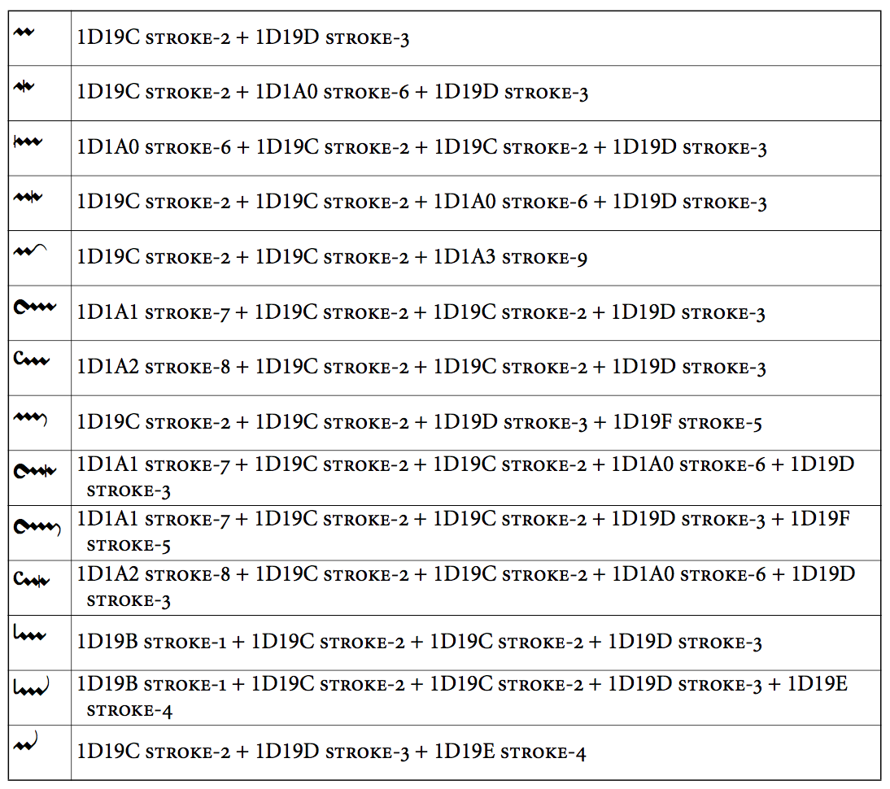
This range expands upon the repertoire of 11 strokes in the Unicode Musical Symbols range.
The side-bearings for the glyphs in this range must be adjusted carefully to ensure correct positioning. (Kerning pairs may also be used.)
Glyphs between ornamentTopLeftConcaveStroke and ornamentBottomLeftConvexStroke are designed to be positioned immediately to the left of and to join seamlessly to ornamentZigZagLineNoRightEnd. ornamentZigZagLineWithRightEnd and glyphs between ornamentTopRightConcaveStroke and ornamentBottomRightConvexStroke are designed to be positioned immediately to the right of and to join seamlessly to ornamentZigZagLineNoRightEnd. ornamentMiddleVerticalStroke should be used immediately to the left of either ornamentZigZagLineNoRightEnd or ornamentZigZagLineWithRightEnd to provide correct positioning of the vertical stroke across the zig-zag line.
Ibid., Allen, page 539.
Precomposed trills and mordents (U+E5B0–U+E5CF)
| Glyph | Description | Glyph | Description |
|---|---|---|---|
| | U+E5B0 ornamentPrecompSlide Slide | | U+E5B1 ornamentPrecompDescendingSlide Descending slide |
| | U+E5B2 ornamentPrecompAppoggTrill Supported appoggiatura trill | | U+E5B3 ornamentPrecompAppoggTrillSuffix Supported appoggiatura trill with two-note suffix |
| | U+E5B4 ornamentPrecompTurnTrillDAnglebert Turn-trill (D'Anglebert) | | U+E5B5 ornamentPrecompSlideTrillDAnglebert Slide-trill (D'Anglebert) |
| | U+E5B6 ornamentPrecompSlideTrillMarpurg Slide-trill with one-note suffix (Marpurg) | | U+E5B7 ornamentPrecompTurnTrillBach Turn-trill with two-note suffix (J.S. Bach) |
| | U+E5B8 ornamentPrecompSlideTrillBach Slide-trill with two-note suffix (J.S. Bach) | | U+E5B9 ornamentPrecompSlideTrillMuffat Slide-trill (Muffat) |
| | U+E5BA ornamentPrecompSlideTrillSuffixMuffat Slide-trill with two-note suffix (Muffat) | | U+E5BB ornamentPrecompTrillSuffixDandrieu Trill with two-note suffix (Dandrieu) |
| | U+E5BC ornamentPrecompPortDeVoixMordent Pre-beat port de voix followed by multiple mordent (Dandrieu) | | U+E5BD ornamentPrecompTrillWithMordent Trill with mordent |
| | U+E5BE ornamentPrecompCadence Cadence | | U+E5BF ornamentPrecompCadenceWithTurn Cadence with turn |
| | U+E5C0 ornamentPrecompDoubleCadenceLowerPrefix Double cadence with lower prefix | | U+E5C1 ornamentPrecompCadenceUpperPrefix Cadence with upper prefix |
| | U+E5C2 ornamentPrecompCadenceUpperPrefixTurn Cadence with upper prefix and turn | | U+E5C3 ornamentPrecompDoubleCadenceUpperPrefix Double cadence with upper prefix |
| | U+E5C4 ornamentPrecompDoubleCadenceUpperPrefixTurn Double cadence with upper prefix and turn | | U+E5C5 ornamentPrecompMordentRelease Mordent with release |
| | U+E5C6 ornamentPrecompMordentUpperPrefix Mordent with upper prefix | | U+E5C7 ornamentPrecompInvertedMordentUpperPrefix Inverted mordent with upper prefix |
| | U+E5C8 ornamentPrecompTrillLowerSuffix Trill with lower suffix |
Implementation notes
The glyphs in this range show how the glyphs in the preceding range can be combined, based on examples from the “Selective Glossary of Terms and Symbols” in Neumann (ibid.), and other charts of Baroque ornamentation.
| Precomposed ornament | Uses glyphs |
|---|---|
| ornamentPrecompSlide | 2 x ornamentZigZagLineNoRightEnd + ornamentHighRightConcaveStroke |
| ornamentPrecompDescendingSlide | 2 x ornamentZigZagLineNoRightEnd + ornamentBottomRightConvexStroke |
| ornamentPrecompAppoggTrill | ornamentLeftVerticalStroke + 2 x ornamentZigZagLineNoRightEnd + ornamentZigZagLineWithRightEnd |
| ornamentPrecompAppoggTrillSuffix | ornamentLeftVerticalStroke + 2 x ornamentZigZagLineNoRightEnd + ornamentRightVerticalStroke |
| ornamentPrecompTurnTrillDAnglebert | ornamentHighLeftConvexStroke + 3 x ornamentZigZagLineNoRightEnd + ornamentTopRightConcaveStroke |
| ornamentPrecompSlideTrillDAnglebert | ornamentBottomLeftConcaveStrokeLarge + ornamentZigZagLineNoRightEnd + ornamentZigZagLineWithRightEnd |
| ornamentPrecompSlideTrillMarpurg | ornamentBottomLeftConcaveStrokeLarge + 2 x ornamentZigZagLineNoRightEnd + ornamentTopRightConvexStroke |
| ornamentPrecompTurnTrillBach | ornamentHighLeftConvexStroke + 3 x ornamentZigZagLineNoRightEnd + ornamentMiddleVerticalStroke + ornamentZigZagLineWithRightEnd |
| ornamentPrecompSlideTrillBach | ornamentBottomLeftConcaveStroke + 2 x ornamentZigZagLineNoRightEnd + ornamentMiddleVerticalStroke + ornamentZigZagLineWithRightEnd |
| ornamentPrecompSlideTrillMuffat | ornamentBottomLeftConvexStroke + 2 x ornamentZigZagLineNoRightEnd + ornamentTopRightConcaveStroke |
| ornamentPrecompSlideTrillSuffixMuffat | ornamentBottomLeftConvexStroke + 2 x ornamentZigZagLineNoRightEnd + ornamentTopRightConvexStroke |
| ornamentPrecompTrillSuffixDandrieu | 3 x ornamentZigZagLineNoRightEnd + ornamentZigZagLineWithRightEnd |
| ornamentPrecompPortDeVoixMordent | ornamentLowLeftConcaveStroke + 2 x ornamentZigZagLineNoRightEnd + ornamentMiddleVerticalStroke + ornamentZigZagLineWithRightEnd |
| ornamentPrecompTrillWithMordent | 2 x ornamentZigZagLineNoRightEnd + ornamentMiddleVerticalStroke + ornamentZigZagLineWithRightEnd |
| ornamentPrecompCadence | ornamentHighLeftConcaveStroke + ornamentZigZagLineNoRightEnd + ornamentZigZagLineWithRightEnd |
| ornamentPrecompCadenceWithTurn | ornamentHighLeftConcaveStroke + ornamentZigZagLineNoRightEnd + ornamentMiddleVerticalStroke + ornamentZigZagLineWithRightEnd |
| ornamentPrecompDoubleCadenceLowerPrefix | ornamentLowLeftConvexStroke + 2 x ornamentZigZagLineNoRightEnd + ornamentZigZagLineWithRightEnd |
| ornamentPrecompCadenceUpperPrefix | ornamentLowLeftConvexStroke + ornamentZigZagLineNoRightEnd + ornamentZigZagLineWithRightEnd |
| ornamentPrecompCadenceUpperPrefixTurn | ornamentLowLeftConvexStroke + ornamentZigZagLineNoRightEnd + ornamentMiddleVerticalStroke + ornamentZigZagLineWithRightEnd |
| ornamentPrecompDoubleCadenceUpperPrefix | ornamentLowLeftConvexStroke + 2 x ornamentZigZagLineNoRightEnd + ornamentZigZagLineWithRightEnd |
| ornamentPrecompDoubleCadenceUpperPrefixTurn | ornamentLowLeftConvexStroke + 2 x ornamentZigZagLineNoRightEnd + ornamentMiddleVerticalStroke + ornamentZigZagLineWithRightEnd |
| ornamentPrecompMordentRelease | ornamentZigZagLineNoRightEnd + ornamentTopRightConvexStroke |
| ornamentPrecompMordentUpperPrefix | ornamentTopLeftConvexStroke + 2x ornamentZigZagLineNoRightEnd + ornamentZigZagLineWithRightEnd |
| ornamentPrecompInvertedMordentUpperPrefix | ornamentTopLeftConvexStroke + 2x ornamentZigZagLineNoRightEnd + ornamentMiddleVerticalStroke + ornamentZigZagLineWithRightEnd |
| ornamentPrecompTrillLowerSuffix | 2 x ornamentZigZagLineNoRightEnd + ornamentBottomRightConcaveStroke |
Brass techniques (U+E5D0–U+E5EF)
| Glyph | Description | Glyph | Description |
|---|---|---|---|
| | U+E5D0 brassScoop Scoop | | U+E5D1 brassLiftShort Lift, short |
| | U+E5D2 brassLiftMedium Lift, medium | | U+E5D3 brassLiftLong Lift, long |
| | U+E5D4 (and U+1D185) brassDoitShort Doit, short | | U+E5D5 brassDoitMedium Doit, medium |
| | U+E5D6 brassDoitLong Doit, long | | U+E5D7 (and U+1D186) brassFallLipShort Lip fall, short |
| | U+E5D8 brassFallLipMedium Lip fall, medium | | U+E5D9 brassFallLipLong Lip fall, long |
| | U+E5DA brassFallSmoothShort Smooth fall, short | | U+E5DB brassFallSmoothMedium Smooth fall, medium |
| | U+E5DC brassFallSmoothLong Smooth fall, long | | U+E5DD brassFallRoughShort Rough fall, short |
| | U+E5DE brassFallRoughMedium Rough fall, medium | | U+E5DF brassFallRoughLong Rough fall, long |
| | U+E5E0 brassPlop Plop | | U+E5E1 (and U+1D187) brassFlip Flip |
| | U+E5E2 (and U+1D188) brassSmear Smear | | U+E5E3 (and U+1D189) brassBend Bend |
| | U+E5E4 brassJazzTurn Jazz turn | | U+E5E5 brassMuteClosed Muted (closed) |
| | U+E5E6 brassMuteHalfClosed Half-muted (half-closed) | | U+E5E7 brassMuteOpen Open |
| | U+E5E8 brassHarmonMuteClosed Harmon mute, stem in | | U+E5E9 brassHarmonMuteStemHalfLeft Harmon mute, stem extended, left |
| | U+E5EA brassHarmonMuteStemHalfRight Harmon mute, stem extended, right | | U+E5EB brassHarmonMuteStemOpen Harmon mute, stem out |
| | U+E5EC brassLiftSmoothShort Smooth lift, short | | U+E5ED brassLiftSmoothMedium Smooth lift, medium |
| | U+E5EE brassLiftSmoothLong Smooth lift, long | | U+E5EF brassValveTrill Valve trill |
Wind techniques (U+E5F0–U+E60F)
| Glyph | Description | Glyph | Description |
|---|---|---|---|
| | U+E5F0 (and U+1D18A) doubleTongueAbove Double-tongue above | | U+E5F1 doubleTongueBelow Double-tongue below |
| | U+E5F2 (and U+1D18B) tripleTongueAbove Triple-tongue above | | U+E5F3 tripleTongueBelow Triple-tongue below |
| | U+E5F4 windClosedHole Closed hole | | U+E5F5 windThreeQuartersClosedHole Three-quarters closed hole |
| | U+E5F6 windHalfClosedHole1 Half-closed hole | | U+E5F7 windHalfClosedHole2 Half-closed hole 2 |
| | U+E5F8 windHalfClosedHole3 Half-open hole | | U+E5F9 windOpenHole Open hole |
| | U+E5FA windTrillKey Trill key | | U+E5FB windFlatEmbouchure Flatter embouchure |
| | U+E5FC windSharpEmbouchure Sharper embouchure | | U+E5FD windRelaxedEmbouchure Relaxed embouchure |
| | U+E5FE windLessRelaxedEmbouchure Somewhat relaxed embouchure | | U+E5FF windTightEmbouchure Tight embouchure |
| | U+E600 windLessTightEmbouchure Somewhat tight embouchure | | U+E601 windVeryTightEmbouchure Very tight embouchure |
| | U+E602 windWeakAirPressure Very relaxed embouchure / weak air-pressure | | U+E603 windStrongAirPressure Very tight embouchure / strong air pressure |
| | U+E604 windReedPositionNormal Normal reed position | | U+E605 windReedPositionOut Very little reed (pull outwards) |
| | U+E606 windReedPositionIn Much more reed (push inwards) | | U+E607 windMultiphonicsBlackStem Combining multiphonics (black) for stem |
| | U+E608 windMultiphonicsWhiteStem Combining multiphonics (white) for stem | | U+E609 windMultiphonicsBlackWhiteStem Combining multiphonics (black and white) for stem |
| | U+E60A windMouthpiecePop Mouthpiece or hand pop | | U+E60B windRimOnly Rim only |
Recommended stylistic alternates
| Glyph | Description | Glyph | Description |
|---|---|---|---|
| | uniE5F0.salt01 doubleTongueAboveNoSlur Double-tongue above (no slur) | | uniE5F1.salt01 doubleTongueBelowNoSlur Double-tongue below (no slur) |
| | uniE5F2.salt01 tripleTongueAboveNoSlur Triple-tongue above (no slur) | | uniE5F3.salt01 tripleTongueBelowNoSlur Triple-tongue below (no slur) |
String techniques (U+E610–U+E62F)
| Glyph | Description | Glyph | Description |
|---|---|---|---|
| | U+E610 (and U+1D1AA) stringsDownBow Down bow | | U+E611 stringsDownBowTurned Turned down bow |
| | U+E612 (and U+1D1AB) stringsUpBow Up bow | | U+E613 stringsUpBowTurned Turned up bow |
| | U+E614 (and U+1D1AC) stringsHarmonic Harmonic | | U+E615 stringsHalfHarmonic Half-harmonic |
| | U+E616 stringsMuteOn Mute on | | U+E617 stringsMuteOff Mute off |
| | U+E618 stringsBowBehindBridge Bow behind bridge (sul ponticello) | | U+E619 stringsBowOnBridge Bow on top of bridge |
| | U+E61A stringsBowOnTailpiece Bow on tailpiece | | U+E61B stringsOverpressureDownBow Overpressure, down bow |
| | U+E61C stringsOverpressureUpBow Overpressure, up bow | | U+E61D stringsOverpressurePossibileDownBow Overpressure possibile, down bow |
| | U+E61E stringsOverpressurePossibileUpBow Overpressure possibile, up bow | | U+E61F stringsOverpressureNoDirection Overpressure, no bow direction |
| | U+E620 stringsJeteAbove Jeté (gettato) above | | U+E621 stringsJeteBelow Jeté (gettato) below |
| | U+E622 stringsFouette Fouetté | | U+E623 stringsVibratoPulse Vibrato pulse accent (Saunders) for stem |
| | U+E624 stringsThumbPosition Thumb position | | U+E625 stringsThumbPositionTurned Turned thumb position |
| | U+E626 stringsChangeBowDirection Change bow direction, indeterminate | | U+E627 stringsBowBehindBridgeOneString Bow behind bridge on one string |
| | U+E628 stringsBowBehindBridgeTwoStrings Bow behind bridge on two strings | | U+E629 stringsBowBehindBridgeThreeStrings Bow behind bridge on three strings |
| | U+E62A stringsBowBehindBridgeFourStrings Bow behind bridge on four strings |
Recommended stylistic alternates
| Glyph | Description | Glyph | Description |
|---|---|---|---|
| | uniE626.salt01 stringsChangeBowDirectionLiga Change bow direction, indeterminate (Pricope) | | uniE626.salt02 stringsChangeBowDirectionImposed Change bow direction, indeterminate (Plötz) |
Implementation notes
Scoring applications should not use the precomposed glyphs that include stems but instead draw the stems using primitives and impose the symbols upon them to ensure optimal positioning.
Plucked techniques (U+E630–U+E63F)
| Glyph | Description | Glyph | Description |
|---|---|---|---|
| | U+E630 (and U+1D1AD) pluckedSnapPizzicatoBelow Snap pizzicato below | | U+E631 pluckedSnapPizzicatoAbove Snap pizzicato above |
| | U+E632 pluckedBuzzPizzicato Buzz pizzicato | | U+E633 pluckedLeftHandPizzicato Left-hand pizzicato |
| | U+E634 (and U+1D183) arpeggiatoUp Arpeggiato up | | U+E635 (and U+1D184) arpeggiatoDown Arpeggiato down |
| | U+E636 (and U+1D1B3) pluckedWithFingernails With fingernails | | U+E637 pluckedFingernailFlick Fingernail flick |
| | U+E638 (and U+1D1B4) pluckedDamp Damp | | U+E639 (and U+1D1B5) pluckedDampAll Damp all |
| | U+E63A pluckedPlectrum Plectrum | | U+E63B pluckedDampOnStem Damp for stem |
| | U+E63C arpeggiato Arpeggiato |
Recommended stylistic alternates
| Glyph | Description | Glyph | Description |
|---|---|---|---|
| | uniE630.salt01 pluckedSnapPizzicatoBelowGerman Snap pizzicato below (German) | | uniE631.salt01 pluckedSnapPizzicatoAboveGerman Snap pizzicato above (German) |
Implementation notes
Scoring applications should draw arpeggiato markings using multiple instances of the appropriate wiggly line segment glyphs (in the Multi-segment lines range) rather than the precomposed glyphs (arpeggiatoUp and arpeggiatoDown) to allow variable length.
Vocal techniques (U+E640–U+E64F)
| Glyph | Description | Glyph | Description |
|---|---|---|---|
| | U+E640 vocalMouthClosed Mouth closed | | U+E641 vocalMouthSlightlyOpen Mouth slightly open |
| | U+E642 vocalMouthOpen Mouth open | | U+E643 vocalMouthWideOpen Mouth wide open |
| | U+E644 vocalMouthPursed Mouth pursed | | U+E645 vocalSprechgesang Sprechgesang |
| | U+E646 vocalsSussurando Combining sussurando for stem | | U+E647 vocalNasalVoice Nasal voice |
| | U+E648 vocalTongueClickStockhausen Tongue click (Stockhausen) | | U+E649 vocalFingerClickStockhausen Finger click (Stockhausen) |
| | U+E64A vocalTongueFingerClickStockhausen Tongue and finger click (Stockhausen) | | U+E64B vocalHalbGesungen Halb gesungen (semi-sprechgesang) |
Keyboard techniques (U+E650–U+E67F)
| Glyph | Description | Glyph | Description |
|---|---|---|---|
| | U+E650 (and U+1D1AE) keyboardPedalPed Pedal mark | | U+E651 keyboardPedalP Pedal P |
| | U+E652 keyboardPedalE Pedal e | | U+E653 keyboardPedalD Pedal d |
| | U+E654 keyboardPedalDot Pedal dot | | U+E655 (and U+1D1AF) keyboardPedalUp Pedal up mark |
| | U+E656 (and U+1D1B0) keyboardPedalHalf Half-pedal mark | | U+E657 keyboardPedalUpNotch Pedal up notch |
| | U+E658 keyboardPedalHyphen Pedal hyphen | | U+E659 keyboardPedalSost Sostenuto pedal mark |
| | U+E65A keyboardPedalS Pedal S | | U+E65B keyboardPedalHalf2 Half pedal mark 1 |
| | U+E65C keyboardPedalHalf3 Half pedal mark 2 | | U+E65D keyboardPedalUpSpecial Pedal up special |
| | U+E65E keyboardLeftPedalPictogram Left pedal pictogram | | U+E65F keyboardMiddlePedalPictogram Middle pedal pictogram |
| | U+E660 keyboardRightPedalPictogram Right pedal pictogram | | U+E661 keyboardPedalHeel1 Pedal heel 1 |
| | U+E662 keyboardPedalHeel2 Pedal heel 2 | | U+E663 keyboardPedalHeel3 Pedal heel 3 (Davis) |
| | U+E664 keyboardPedalToe1 Pedal toe 1 | | U+E665 keyboardPedalToe2 Pedal toe 2 |
| | U+E666 keyboardPedalHeelToe Pedal heel or toe | | U+E667 keyboardPluckInside Pluck strings inside piano (Maderna) |
| | U+E668 keyboardBebung2DotsAbove Clavichord bebung, 2 finger movements (above) | | U+E669 keyboardBebung2DotsBelow Clavichord bebung, 2 finger movements (below) |
| | U+E66A keyboardBebung3DotsAbove Clavichord bebung, 3 finger movements (above) | | U+E66B keyboardBebung3DotsBelow Clavichord bebung, 3 finger movements (below) |
| | U+E66C keyboardBebung4DotsAbove Clavichord bebung, 4 finger movements (above) | | U+E66D keyboardBebung4DotsBelow Clavichord bebung, 4 finger movements (below) |
| | U+E66E keyboardPlayWithRH Play with right hand | | U+E66F keyboardPlayWithRHEnd Play with right hand (end) |
| | U+E670 keyboardPlayWithLH Play with left hand | | U+E671 keyboardPlayWithLHEnd Play with left hand (end) |
| | U+E672 keyboardPedalHookStart Pedal hook start | | U+E673 keyboardPedalHookEnd Pedal hook end |
| | U+E674 keyboardPedalHeelToToe Pedal heel to toe | | U+E675 keyboardPedalToeToHeel Pedal toe to heel |
| | U+E676 keyboardPedalParensLeft Left parenthesis for pedal marking | | U+E677 keyboardPedalParensRight Right parenthesis for pedal marking |
Recommended stylistic alternates
| Glyph | Description | Glyph | Description |
|---|---|---|---|
| | uniE650.salt01 keyboardPedalPedNoDot Pedal mark (no dot) | | uniE659.salt01 keyboardPedalSostNoDot Sostenuto pedal mark (no dot) |
Harp techniques (U+E680–U+E69F)
| Glyph | Description | Glyph | Description |
|---|---|---|---|
| | U+E680 harpPedalRaised Harp pedal raised (flat) | | U+E681 harpPedalCentered Harp pedal centered (natural) |
| | U+E682 harpPedalLowered Harp pedal lowered (sharp) | | U+E683 harpPedalDivider Harp pedal divider |
| | U+E684 harpSalzedoSlideWithSuppleness Slide with suppleness (Salzedo) | | U+E685 harpSalzedoOboicFlux Oboic flux (Salzedo) |
| | U+E686 harpSalzedoThunderEffect Thunder effect (Salzedo) | | U+E687 harpSalzedoWhistlingSounds Whistling sounds (Salzedo) |
| | U+E688 harpSalzedoMetallicSounds Metallic sounds (Salzedo) | | U+E689 harpSalzedoTamTamSounds Tam-tam sounds (Salzedo) |
| | U+E68A harpSalzedoPlayUpperEnd Play at upper end of strings (Salzedo) | | U+E68B harpSalzedoTimpanicSounds Timpanic sounds (Salzedo) |
| | U+E68C harpSalzedoMuffleTotally Muffle totally (Salzedo) | | U+E68D harpSalzedoFluidicSoundsLeft Fluidic sounds, left hand (Salzedo) |
| | U+E68E harpSalzedoFluidicSoundsRight Fluidic sounds, right hand (Salzedo) | | U+E68F harpMetalRod Metal rod pictogram |
| | U+E690 harpTuningKey Tuning key pictogram | | U+E691 harpTuningKeyHandle Use handle of tuning key pictogram |
| | U+E692 harpTuningKeyShank Use shank of tuning key pictogram | | U+E693 harpTuningKeyGlissando Retune strings for glissando |
| | U+E694 harpStringNoiseStem Combining string noise for stem | | U+E695 harpSalzedoAeolianAscending Ascending aeolian chords (Salzedo) |
| | U+E696 harpSalzedoAeolianDescending Descending aeolian chords (Salzedo) | | U+E697 harpSalzedoDampLowStrings Damp only low strings (Salzedo) |
| | U+E698 harpSalzedoDampBothHands Damp with both hands (Salzedo) | | U+E699 harpSalzedoDampBelow Damp below (Salzedo) |
| | U+E69A harpSalzedoDampAbove Damp above (Salzedo) | | U+E69B harpSalzedoMetallicSoundsOneString Metallic sounds, one string (Salzedo) |
| | U+E69C harpSalzedoIsolatedSounds Isolated sounds (Salzedo) | | U+E69D harpSalzedoSnareDrum Snare drum effect (Salzedo) |
Recommended stylistic alternates
| Glyph | Description | Glyph | Description |
|---|---|---|---|
| | uniE68F.salt01 harpMetalRodAlt Metal rod pictogram (alternative) | | uniE690.salt01 harpTuningKeyAlt Tuning key pictogram (alternative) |
Implementation notes
harpSalzedoFluidicSoundsLeft and harpSalzedoFluidicSoundsRight are similar in function to noteheads, and should be positioned relative to note stems in the same way.
harpSalzedoOboicFlux and harpSalzedoPlayUpperEnd may be repeated to create a continuing line, indicating the duration of the technique.
Tuned mallet percussion pictograms (U+E6A0–U+E6BF)
| Glyph | Description | Glyph | Description |
|---|---|---|---|
| | U+E6A0 pictGlsp Glockenspiel | | U+E6A1 pictXyl Xylophone |
| | U+E6A2 pictXylTenor Tenor xylophone | | U+E6A3 pictXylBass Bass xylophone |
| | U+E6A4 pictXylTrough Trough xylophone | | U+E6A5 pictXylTenorTrough Trough tenor xylophone |
| | U+E6A6 pictMar Marimba | | U+E6A7 pictVib Vibraphone |
| | U+E6A8 pictVibMotorOff Metallophone (vibraphone motor off) | | U+E6A9 pictEmptyTrap Empty trapezoid |
| | U+E6AA pictGlspSmithBrindle Glockenspiel (Smith Brindle) | | U+E6AB pictXylSmithBrindle Xylophone (Smith Brindle) |
| | U+E6AC pictMarSmithBrindle Marimba (Smith Brindle) | | U+E6AD pictVibSmithBrindle Vibraphone (Smith Brindle) |
| | U+E6AE pictCrotales Crotales | | U+E6AF pictSteelDrums Steel drums |
| | U+E6B0 pictCelesta Celesta | | U+E6B1 pictLithophone Lithophone |
| | U+E6B2 pictTubaphone Tubaphone |
Recommended stylistic alternates
| Glyph | Description | Glyph | Description |
|---|---|---|---|
| | uniE6A0.salt01 pictGlspPeinkofer Glockenspiel (Peinkofer/Tannigel) | | uniE6A1.salt01 pictXylPeinkofer Xylophone (Peinkofer/Tannigel) |
| | uniE6A2.salt01 pictXylTenorPeinkofer Tenor xylophone (Peinkofer/Tannigel) | | uniE6A3.salt01 pictXylBassPeinkofer Bass xylophone (Peinkofer/Tannigel) |
| | uniE6A6.salt01 pictMarPeinkofer Marimba (Peinkofer/Tannigel) | | uniE6A7.salt01 pictVibPeinkofer Vibraphone (Peinkofer/Tannigel) |
| | uniE6A8.salt01 pictVibMotorOffPeinkofer Metallophone (vibraphone motor off) (Peinkofer/Tannigel) | | uniE6B1.salt01 pictLithophonePeinkofer Lithophone (Peinkofer/Tannigel) |
| | uniE6B2.salt01 pictTubaphonePeinkofer Tubaphone (Peinkofer/Tannigel) |
Chimes pictograms (U+E6C0–U+E6CF)
| Glyph | Description | Glyph | Description |
|---|---|---|---|
| | U+E6C0 pictTubularBells Tubular bells | | U+E6C1 pictWindChimesGlass Wind chimes (glass) |
| | U+E6C2 pictChimes Chimes | | U+E6C3 pictBambooChimes Bamboo tube chimes |
| | U+E6C4 pictShellChimes Shell chimes | | U+E6C5 pictGlassTubeChimes Glass tube chimes |
| | U+E6C6 pictGlassPlateChimes Glass plate chimes | | U+E6C7 pictMetalTubeChimes Metal tube chimes |
| | U+E6C8 pictMetalPlateChimes Metal plate chimes |
Drums pictograms (U+E6D0–U+E6EF)
| Glyph | Description | Glyph | Description |
|---|---|---|---|
| | U+E6D0 pictTimpani Timpani | | U+E6D1 pictSnareDrum Snare drum |
| | U+E6D2 pictSnareDrumSnaresOff Snare drum, snares off | | U+E6D3 pictSnareDrumMilitary Military snare drum |
| | U+E6D4 pictBassDrum Bass drum | | U+E6D5 pictBassDrumOnSide Bass drum on side |
| | U+E6D6 pictTenorDrum Tenor drum | | U+E6D7 pictTomTom Tom-tom |
| | U+E6D8 pictTomTomChinese Chinese tom-tom | | U+E6D9 pictTomTomJapanese Japanese tom-tom |
| | U+E6DA pictTomTomIndoAmerican Indo-American tom tom | | U+E6DB pictTambourine Tambourine |
| | U+E6DC pictTimbales Timbales | | U+E6DD pictBongos Bongos |
| | U+E6DE pictConga Conga | | U+E6DF pictLogDrum Log drum |
| | U+E6E0 pictSlitDrum Slit drum | | U+E6E1 pictBrakeDrum Brake drum |
| | U+E6E2 pictGobletDrum Goblet drum (djembe, dumbek) | | U+E6E3 pictTabla Indian tabla |
| | U+E6E4 pictCuica Cuica |
Recommended stylistic alternates
| Glyph | Description | Glyph | Description |
|---|---|---|---|
| | uniE6D0.salt01 pictTimpaniPeinkofer Timpani (Peinkofer/Tannigel) | | uniE6D4.salt01 pictBassDrumPeinkofer Bass drum (Peinkofer/Tannigel) |
| | uniE6D7.salt01 pictTomTomPeinkofer Tom-tom (Peinkofer/Tannigel) | | uniE6D8.salt01 pictTomTomChinesePeinkofer Chinese tom-tom (Peinkofer/Tannigel) |
| | uniE6DB.salt01 pictTambourineStockhausen Tambourine (Stockhausen) | | uniE6DC.salt01 pictTimbalesPeinkofer Timbales (Peinkofer/Tannigel) |
| | uniE6DD.salt01 pictBongosPeinkofer Bongos (Peinkofer/Tannigel) | | uniE6DE.salt01 pictCongaPeinkofer Conga (Peinkofer/Tannigel) |
Wooden struck or scraped percussion pictograms (U+E6F0–U+E6FF)
| Glyph | Description | Glyph | Description |
|---|---|---|---|
| | U+E6F0 pictWoodBlock Wood block | | U+E6F1 pictTempleBlocks Temple blocks |
| | U+E6F2 pictClaves Claves | | U+E6F3 pictGuiro Guiro |
| | U+E6F4 pictRatchet Ratchet | | U+E6F5 pictFootballRatchet Football rattle |
| | U+E6F6 pictWhip Whip | | U+E6F7 pictBoardClapper Board clapper |
| | U+E6F8 pictCastanets Castanets | | U+E6F9 pictCastanetsWithHandle Castanets with handle |
| | U+E6FA pictQuijada Quijada (jawbone) | | U+E6FB pictBambooScraper Bamboo scraper |
| | U+E6FC pictRecoReco Reco-reco |
Recommended stylistic alternates
| Glyph | Description | Glyph | Description |
|---|---|---|---|
| | uniE6F3.salt01 pictGuiroSevsay Guiro (Sevsay) | | uniE6F3.salt02 pictGuiroPeinkofer Guiro (Peinkofer/Tannigel) |
| | uniE6F8.salt01 pictCastanetsSmithBrindle Castanets (Smith Brindle) |
Metallic struck percussion pictograms (U+E700–U+E70F)
| Glyph | Description | Glyph | Description |
|---|---|---|---|
| | U+E700 pictTriangle Triangle | | U+E701 pictAnvil Anvil |
Bells pictograms (U+E710–U+E71F)
| Glyph | Description | Glyph | Description |
|---|---|---|---|
| | U+E710 pictSleighBell Sleigh bell | | U+E711 pictCowBell Cow bell |
| | U+E712 pictAlmglocken Almglocken | | U+E713 pictBellPlate Bell plate |
| | U+E714 pictBell Bell | | U+E715 pictHandbell Handbell |
| | U+E716 pictCencerro Cencerro | | U+E717 pictAgogo Agogo |
| | U+E718 pictShellBells Shell bells | | U+E719 pictJingleBells Jingle bells |
| | U+E71A pictBellTree Bell tree |
Recommended stylistic alternates
| Glyph | Description | Glyph | Description |
|---|---|---|---|
| | uniE710.salt01 pictSleighBellSmithBrindle Sleigh bell (Smith Brindle) | | uniE711.salt01 pictCowBellBerio Cow bell (Berio) |
Cymbals pictograms (U+E720–U+E72F)
| Glyph | Description | Glyph | Description |
|---|---|---|---|
| | U+E720 pictCrashCymbals Crash cymbals | | U+E721 pictSuspendedCymbal Suspended cymbal |
| | U+E722 pictHiHat Hi-hat | | U+E723 pictHiHatOnStand Hi-hat cymbals on stand |
| | U+E724 pictSizzleCymbal Sizzle cymbal | | U+E725 pictVietnameseHat Vietnamese hat cymbal |
| | U+E726 pictChineseCymbal Chinese cymbal | | U+E727 pictFingerCymbals Finger cymbals |
| | U+E728 pictCymbalTongs Cymbal tongs | | U+E729 pictEdgeOfCymbal Edge of cymbal |
| | U+E72A pictBellOfCymbal Bell of cymbal |
Gongs pictograms (U+E730–U+E73F)
| Glyph | Description | Glyph | Description |
|---|---|---|---|
| | U+E730 pictTamTam Tam-tam | | U+E731 pictTamTamWithBeater Tam-tam with beater (Smith Brindle) |
| | U+E732 pictGong Gong | | U+E733 pictGongWithButton Gong with button (nipple) |
| | U+E734 pictSlideBrushOnGong Slide brush on gong |
Shakers or rattles pictograms (U+E740–U+E74F)
| Glyph | Description | Glyph | Description |
|---|---|---|---|
| | U+E740 pictFlexatone Flexatone | | U+E741 pictMaraca Maraca |
| | U+E742 pictMaracas Maracas | | U+E743 pictCabasa Cabasa |
| | U+E744 pictThundersheet Thundersheet | | U+E745 pictVibraslap Vibraslap |
| | U+E746 pictSistrum Sistrum | | U+E747 pictRainstick Rainstick |
| | U+E748 pictChainRattle Chain rattle |
Recommended stylistic alternates
| Glyph | Description | Glyph | Description |
|---|---|---|---|
| | uniE740.salt01 pictFlexatonePeinkofer Flexatone (Peinkofer/Tannigel) | | uniE741.salt01 pictMaracaSmithBrindle Maraca (Smith Brindle) |
Whistles and aerophones pictograms (U+E750–U+E75F)
| Glyph | Description | Glyph | Description |
|---|---|---|---|
| | U+E750 pictSlideWhistle Slide whistle | | U+E751 pictBirdWhistle Bird whistle |
| | U+E752 pictPoliceWhistle Police whistle | | U+E753 pictSiren Siren |
| | U+E754 pictWindMachine Wind machine | | U+E755 pictCarHorn Car horn |
| | U+E756 pictKlaxonHorn Klaxon horn | | U+E757 pictDuckCall Duck call |
| | U+E758 pictWindWhistle Wind whistle (or mouth siren) | | U+E759 pictMegaphone Megaphone |
| | U+E75A pictLotusFlute Lotus flute |
Recommended stylistic alternates
| Glyph | Description | Glyph | Description |
|---|---|---|---|
| | uniE75A.salt01 pictLotusFlutePeinkofer Lotus flute (Peinkofer/Tannigel) |
Miscellaneous percussion instrument pictograms (U+E760–U+E76F)
| Glyph | Description | Glyph | Description |
|---|---|---|---|
| | U+E760 pictPistolShot Pistol shot | | U+E761 pictCannon Cannon |
| | U+E762 pictSandpaperBlocks Sandpaper blocks | | U+E763 pictLionsRoar Lion's roar |
| | U+E764 pictGlassHarp Glass harp | | U+E765 pictGlassHarmonica Glass harmonica |
| | U+E766 pictMusicalSaw Musical saw | | U+E767 pictJawHarp Jaw harp |
Recommended stylistic alternates
| Glyph | Description | Glyph | Description |
|---|---|---|---|
| | uniE766.salt01 pictMusicalSawPeinkofer Musical saw (Peinkofer/Tannigel) |
Beaters pictograms (U+E770–U+E7EF)
| Glyph | Description | Glyph | Description |
|---|---|---|---|
| | U+E770 pictBeaterSoftXylophoneUp Soft xylophone stick up | | U+E771 pictBeaterSoftXylophoneDown Soft xylophone stick down |
| | U+E772 pictBeaterSoftXylophoneRight Soft xylophone stick right | | U+E773 pictBeaterSoftXylophoneLeft Soft xylophone stick left |
| | U+E774 pictBeaterMediumXylophoneUp Medium xylophone stick up | | U+E775 pictBeaterMediumXylophoneDown Medium xylophone stick down |
| | U+E776 pictBeaterMediumXylophoneRight Medium xylophone stick right | | U+E777 pictBeaterMediumXylophoneLeft Medium xylophone stick left |
| | U+E778 pictBeaterHardXylophoneUp Hard xylophone stick up | | U+E779 pictBeaterHardXylophoneDown Hard xylophone stick down |
| | U+E77A pictBeaterHardXylophoneRight Hard xylophone stick right | | U+E77B pictBeaterHardXylophoneLeft Hard xylophone stick left |
| | U+E77C pictBeaterWoodXylophoneUp Wood xylophone stick up | | U+E77D pictBeaterWoodXylophoneDown Wood xylophone stick down |
| | U+E77E pictBeaterWoodXylophoneRight Wood xylophone stick right | | U+E77F pictBeaterWoodXylophoneLeft Wood xylophone stick left |
| | U+E780 pictBeaterSoftGlockenspielUp Soft glockenspiel stick up | | U+E781 pictBeaterSoftGlockenspielDown Soft glockenspiel stick down |
| | U+E782 pictBeaterSoftGlockenspielRight Soft glockenspiel stick right | | U+E783 pictBeaterSoftGlockenspielLeft Soft glockenspiel stick left |
| | U+E784 pictBeaterHardGlockenspielUp Hard glockenspiel stick up | | U+E785 pictBeaterHardGlockenspielDown Hard glockenspiel stick down |
| | U+E786 pictBeaterHardGlockenspielRight Hard glockenspiel stick right | | U+E787 pictBeaterHardGlockenspielLeft Hard glockenspiel stick left |
| | U+E788 pictBeaterSoftTimpaniUp Soft timpani stick up | | U+E789 pictBeaterSoftTimpaniDown Soft timpani stick down |
| | U+E78A pictBeaterSoftTimpaniRight Soft timpani stick right | | U+E78B pictBeaterSoftTimpaniLeft Soft timpani stick left |
| | U+E78C pictBeaterMediumTimpaniUp Medium timpani stick up | | U+E78D pictBeaterMediumTimpaniDown Medium timpani stick down |
| | U+E78E pictBeaterMediumTimpaniRight Medium timpani stick right | | U+E78F pictBeaterMediumTimpaniLeft Medium timpani stick left |
| | U+E790 pictBeaterHardTimpaniUp Hard timpani stick up | | U+E791 pictBeaterHardTimpaniDown Hard timpani stick down |
| | U+E792 pictBeaterHardTimpaniRight Hard timpani stick right | | U+E793 pictBeaterHardTimpaniLeft Hard timpani stick left |
| | U+E794 pictBeaterWoodTimpaniUp Wood timpani stick up | | U+E795 pictBeaterWoodTimpaniDown Wood timpani stick down |
| | U+E796 pictBeaterWoodTimpaniRight Wood timpani stick right | | U+E797 pictBeaterWoodTimpaniLeft Wood timpani stick left |
| | U+E798 pictBeaterSoftBassDrumUp Soft bass drum stick up | | U+E799 pictBeaterSoftBassDrumDown Soft bass drum stick down |
| | U+E79A pictBeaterMediumBassDrumUp Medium bass drum stick up | | U+E79B pictBeaterMediumBassDrumDown Medium bass drum stick down |
| | U+E79C pictBeaterHardBassDrumUp Hard bass drum stick up | | U+E79D pictBeaterHardBassDrumDown Hard bass drum stick down |
| | U+E79E pictBeaterMetalBassDrumUp Metal bass drum stick up | | U+E79F pictBeaterMetalBassDrumDown Metal bass drum stick down |
| | U+E7A0 pictBeaterDoubleBassDrumUp Double bass drum stick up | | U+E7A1 pictBeaterDoubleBassDrumDown Double bass drum stick down |
| | U+E7A2 pictBeaterSoftYarnUp Soft yarn beater up | | U+E7A3 pictBeaterSoftYarnDown Soft yarn beater down |
| | U+E7A4 pictBeaterSoftYarnRight Soft yarn beater right | | U+E7A5 pictBeaterSoftYarnLeft Soft yarn beater left |
| | U+E7A6 pictBeaterMediumYarnUp Medium yarn beater up | | U+E7A7 pictBeaterMediumYarnDown Medium yarn beater down |
| | U+E7A8 pictBeaterMediumYarnRight Medium yarn beater right | | U+E7A9 pictBeaterMediumYarnLeft Medium yarn beater left |
| | U+E7AA pictBeaterHardYarnUp Hard yarn beater up | | U+E7AB pictBeaterHardYarnDown Hard yarn beater down |
| | U+E7AC pictBeaterHardYarnRight Hard yarn beater right | | U+E7AD pictBeaterHardYarnLeft Hard yarn beater left |
| | U+E7AE pictBeaterSuperballUp Superball beater up | | U+E7AF pictBeaterSuperballDown Superball beater down |
| | U+E7B0 pictBeaterSuperballRight Superball beater right | | U+E7B1 pictBeaterSuperballLeft Superball beater left |
| | U+E7B2 pictSuperball Superball | | U+E7B3 pictWoundHardUp Wound beater, hard core up |
| | U+E7B4 pictWoundHardDown Wound beater, hard core down | | U+E7B5 pictWoundHardRight Wound beater, hard core right |
| | U+E7B6 pictWoundHardLeft Wound beater, hard core left | | U+E7B7 pictWoundSoftUp Wound beater, soft core up |
| | U+E7B8 pictWoundSoftDown Wound beater, soft core down | | U+E7B9 pictWoundSoftRight Wound beater, soft core right |
| | U+E7BA pictWoundSoftLeft Wound beater, soft core left | | U+E7BB pictGumSoftUp Soft gum beater, up |
| | U+E7BC pictGumSoftDown Soft gum beater, down | | U+E7BD pictGumSoftRight Soft gum beater, right |
| | U+E7BE pictGumSoftLeft Soft gum beater, left | | U+E7BF pictGumMediumUp Medium gum beater, up |
| | U+E7C0 pictGumMediumDown Medium gum beater, down | | U+E7C1 pictGumMediumRight Medium gum beater, right |
| | U+E7C2 pictGumMediumLeft Medium gum beater, left | | U+E7C3 pictGumHardUp Hard gum beater, up |
| | U+E7C4 pictGumHardDown Hard gum beater, down | | U+E7C5 pictGumHardRight Hard gum beater, right |
| | U+E7C6 pictGumHardLeft Hard gum beater, left | | U+E7C7 pictBeaterMetalUp Metal beater, up |
| | U+E7C8 pictBeaterMetalDown Metal beater down | | U+E7C9 pictBeaterMetalRight Metal beater, right |
| | U+E7CA pictBeaterMetalLeft Metal beater, left | | U+E7CB pictBeaterHammerWoodUp Wooden hammer, up |
| | U+E7CC pictBeaterHammerWoodDown Wooden hammer, down | | U+E7CD pictBeaterHammerPlasticUp Plastic hammer, up |
| | U+E7CE pictBeaterHammerPlasticDown Plastic hammer, down | | U+E7CF pictBeaterHammerMetalUp Metal hammer, up |
| | U+E7D0 pictBeaterHammerMetalDown Metal hammer, down | | U+E7D1 pictBeaterSnareSticksUp Snare sticks up |
| | U+E7D2 pictBeaterSnareSticksDown Snare sticks down | | U+E7D3 pictBeaterJazzSticksUp Jazz sticks up |
| | U+E7D4 pictBeaterJazzSticksDown Jazz sticks down | | U+E7D5 pictBeaterTriangleUp Triangle beater up |
| | U+E7D6 pictBeaterTriangleDown Triangle beater down | | U+E7D7 pictBeaterWireBrushesUp Wire brushes up |
| | U+E7D8 pictBeaterWireBrushesDown Wire brushes down | | U+E7D9 pictBeaterBrassMalletsUp Brass mallets up |
| | U+E7DA pictBeaterBrassMalletsDown Brass mallets down | | U+E7DB pictBeaterSoftXylophone Soft xylophone beaters |
| | U+E7DC pictBeaterSpoonWoodenMallet Spoon-shaped wooden mallet | | U+E7DD pictBeaterGuiroScraper Guiro scraper |
| | U+E7DE pictBeaterBow Bow | | U+E7DF pictBeaterMallet Chime hammer up |
| | U+E7E0 pictBeaterMetalHammer Metal hammer | | U+E7E1 pictBeaterHammer Hammer |
| | U+E7E2 pictBeaterKnittingNeedle Knitting needle | | U+E7E3 pictBeaterHand Hand |
| | U+E7E4 pictBeaterFinger Finger | | U+E7E5 pictBeaterFist Fist |
| | U+E7E6 pictBeaterFingernails Fingernails | | U+E7E7 pictCoins Coins |
| | U+E7E8 pictDrumStick Drum stick | | U+E7E9 pictBeaterCombiningParentheses Combining parentheses for round beaters (padded) |
| | U+E7EA pictBeaterCombiningDashedCircle Combining dashed circle for round beaters (plated) | | U+E7EB pictBeaterBox Box for percussion beater |
| | U+E7EC pictBeaterMalletDown Chime hammer down | | U+E7ED pictBeaterBrassMalletsRight Brass mallets right |
| | U+E7EE pictBeaterBrassMalletsLeft Brass mallets left | | U+E7EF pictBeaterTrianglePlain Triangle beater plain |
Percussion playing technique pictograms (U+E7F0–U+E80F)
| Glyph | Description | Glyph | Description |
|---|---|---|---|
| | U+E7F0 pictStickShot Stick shot | | U+E7F1 pictScrapeCenterToEdge Scrape from center to edge |
| | U+E7F2 pictScrapeEdgeToCenter Scrape from edge to center | | U+E7F3 pictScrapeAroundRim Scrape around rim (counter-clockwise) |
| | U+E7F4 pictOnRim On rim | | U+E7F5 pictOpenRimShot Closed / rim shot |
| | U+E7F6 pictHalfOpen1 Half-open | | U+E7F7 pictHalfOpen2 Half-open 2 (Weinberg) |
| | U+E7F8 pictOpen Open | | U+E7F9 pictDamp1 Damp |
| | U+E7FA pictDamp2 Damp 2 | | U+E7FB pictDamp3 Damp 3 |
| | U+E7FC pictDamp4 Damp 4 | | U+E7FD pictRimShotOnStem Rim shot for stem |
| | U+E7FE pictCenter1 Center (Weinberg) | | U+E7FF pictCenter2 Center (Ghent) |
| | U+E800 pictCenter3 Center (Caltabiano) | | U+E801 pictRim1 Rim or edge (Weinberg) |
| | U+E802 pictRim2 Rim (Ghent) | | U+E803 pictRim3 Rim (Caltabiano) |
| | U+E804 pictNormalPosition Normal position (Caltabiano) | | U+E805 pictChokeCymbal Choke (Weinberg) |
| | U+E806 pictRightHandSquare Left hand (Agostini) | | U+E807 pictLeftHandCircle Right hand (Agostini) |
| | U+E808 pictSwishStem Combining swish for stem | | U+E809 pictTurnRightStem Combining turn right for stem |
| | U+E80A pictTurnLeftStem Combining turn left for stem | | U+E80B pictTurnRightLeftStem Combining turn left or right for stem |
| | U+E80C pictCrushStem Combining crush for stem | | U+E80D pictDeadNoteStem Combining X for stem (dead note) |
| | U+E80E pictScrapeAroundRimClockwise Scrape around rim (clockwise) |
Handbells (U+E810–U+E82F)
| Glyph | Description | Glyph | Description |
|---|---|---|---|
| | U+E810 handbellsMartellato Martellato | | U+E811 handbellsMartellatoLift Martellato lift |
| | U+E812 handbellsHandMartellato Hand martellato | | U+E813 handbellsMutedMartellato Muted martellato |
| | U+E814 handbellsMalletBellSuspended Mallet, bell suspended | | U+E815 handbellsMalletBellOnTable Mallet, bell on table |
| | U+E816 handbellsMalletLft Mallet lift | | U+E817 handbellsPluckLift Pluck lift |
| | U+E818 handbellsSwingUp Swing up | | U+E819 handbellsSwingDown Swing down |
| | U+E81A handbellsSwing Swing | | U+E81B handbellsEcho1 Echo |
| | U+E81C handbellsEcho2 Echo 2 | | U+E81D handbellsGyro Gyro |
| | U+E81E handbellsDamp3 Damp 3 | | U+E81F handbellsBelltree Belltree |
| | U+E820 handbellsTableSingleBell Table single handbell | | U+E821 handbellsTablePairBells Table pair of handbells |
Guitar (U+E830–U+E84F)
| Glyph | Description | Glyph | Description |
|---|---|---|---|
| | U+E830 guitarVibratoBarScoop Guitar vibrato bar scoop | | U+E831 guitarVibratoBarDip Guitar vibrato bar dip |
| | U+E832 guitarShake Guitar shake | | U+E833 guitarString0 String number 0 |
| | U+E834 guitarString1 String number 1 | | U+E835 guitarString2 String number 2 |
| | U+E836 guitarString3 String number 3 | | U+E837 guitarString4 String number 4 |
| | U+E838 guitarString5 String number 5 | | U+E839 guitarString6 String number 6 |
| | U+E83A guitarString7 String number 7 | | U+E83B guitarString8 String number 8 |
| | U+E83C guitarString9 String number 9 | | U+E83D guitarOpenPedal Open wah/volume pedal |
| | U+E83E guitarHalfOpenPedal Half-open wah/volume pedal | | U+E83F guitarClosePedal Closed wah/volume pedal |
| | U+E840 guitarLeftHandTapping Left-hand tapping | | U+E841 guitarRightHandTapping Right-hand tapping |
| | U+E842 guitarGolpe Golpe (tapping the pick guard) | | U+E843 guitarFadeIn Fade in |
| | U+E844 guitarFadeOut Fade out | | U+E845 guitarVolumeSwell Volume swell |
| | U+E846 guitarStrumUp Strum direction up | | U+E847 guitarStrumDown Strum direction down |
| | U+E848 guitarBarreFull Full barré | | U+E849 guitarBarreHalf Half barré |
| | U+E84A guitarString10 String number 10 | | U+E84B guitarString11 String number 11 |
| | U+E84C guitarString12 String number 12 | | U+E84D guitarString13 String number 13 |
Recommended stylistic alternates
| Glyph | Description | Glyph | Description |
|---|---|---|---|
| | uniE842.salt01 guitarGolpeFlamenco Golpe (tapping the pick guard) (Vounelakos) | | uniE849.salt01 guitarBarreHalfHorizontalFractionSlash Half barré (horizontal fraction separator) |
Chord diagrams (U+E850–U+E85F)
| Glyph | Description | Glyph | Description |
|---|---|---|---|
| | U+E850 fretboard3String 3-string fretboard | | U+E851 fretboard3StringNut 3-string fretboard at nut |
| | U+E852 (and U+1D11D) fretboard4String 4-string fretboard | | U+E853 fretboard4StringNut 4-string fretboard at nut |
| | U+E854 fretboard5String 5-string fretboard | | U+E855 fretboard5StringNut 5-string fretboard at nut |
| | U+E856 (and U+1D11C) fretboard6String 6-string fretboard | | U+E857 fretboard6StringNut 6-string fretboard at nut |
| | U+E858 fretboardFilledCircle Fingered fret (filled circle) | | U+E859 fretboardX String not played (X) |
| | U+E85A fretboardO Open string (O) |
Implementation notes
Scoring applications may choose to draw chord diagram fretboards using primitives in order to provide the end user with control over grid spacing and line thickness relative to size.
fretboardFilledCircle, fretboardX and fretboardO should be centered around the origin, so they will have negative left side-bearings and extend below the baseline. This makes them easier to position on fretboard diagrams, as the glyph can then be positioned precisely at the intersection of the perpendicular lines describing the fret and the string.
Analytics (U+E860–U+E86F)
| Glyph | Description | Glyph | Description |
|---|---|---|---|
| | U+E860 (and U+1D1A6) analyticsHauptstimme Hauptstimme | | U+E861 (and U+1D1A7) analyticsNebenstimme Nebenstimme |
| | U+E862 analyticsStartStimme Start of stimme | | U+E863 (and U+1D1A8) analyticsEndStimme End of stimme |
| | U+E864 analyticsTheme Theme | | U+E865 analyticsThemeRetrograde Retrograde of theme |
| | U+E866 analyticsThemeRetrogradeInversion Retrograde inversion of theme | | U+E867 analyticsThemeInversion Inversion of theme |
| | U+E868 analyticsTheme1 Theme 1 | | U+E869 analyticsInversion1 Inversion 1 |
| | U+E86A analyticsChoralmelodie Choralmelodie (Berg) | | U+E86B analyticsHauptrhythmus Hauptrhythmus (Berg) |
Recommended stylistic alternates
| Glyph | Description | Glyph | Description |
|---|---|---|---|
| | uniE86B.salt01 analyticsHauptrhythmusR Hauptrhythmus R (Berg) |
Chord symbols (U+E870–U+E87F)
| Glyph | Description | Glyph | Description |
|---|---|---|---|
| | U+E870 (and U+1D1A9) csymDiminished Diminished | | U+E871 csymHalfDiminished Half-diminished |
| | U+E872 csymAugmented Augmented | | U+E873 csymMajorSeventh Major seventh |
| | U+E874 csymMinor Minor | | U+E875 csymParensLeftTall Double-height left parenthesis |
| | U+E876 csymParensRightTall Double-height right parenthesis | | U+E877 csymBracketLeftTall Double-height left bracket |
| | U+E878 csymBracketRightTall Double-height right bracket | | U+E879 csymParensLeftVeryTall Triple-height left parenthesis |
| | U+E87A csymParensRightVeryTall Triple-height right parenthesis | | U+E87B csymAlteredBassSlash Slash for altered bass note |
| | U+E87C csymDiagonalArrangementSlash Slash for chord symbols arranged diagonally |
Recommended stylistic alternates
| Glyph | Description | Glyph | Description |
|---|---|---|---|
| | uniE870.ss07 csymDiminishedSmall Diminished (subscript or superscript) | | uniE871.ss07 csymHalfDiminishedSmall Half-diminished (subscript or superscript) |
| | uniE872.ss07 csymAugmentedSmall Augmented (subscript or superscript) | | uniE873.ss07 csymMajorSeventhSmall Major seventh (subscript or superscript) |
| | uniE874.ss07 csymMinorSmall Minor (subscript or superscript) |
Implementation notes
These symbols are designed to combine with accidental symbols (accidentalSharp and accidentalFlat) from the music font and the letters A–G (for root and bass alterations), lower case letters (for chord qualities, e.g. “maj” and “min”) and numbers (for chord extensions or tensions) from any standard text font to produce complete chord symbols.
Scoring applications should be able to create strings with complex formatting, e.g. superscript and subscript characters, small digits stacked on top of each other, and scale these symbols to any arbitrary size in order to produce satisfactory chord symbols with a wide variety of visual appearances.
Tuplets (U+E880–U+E88F)
| Glyph | Description | Glyph | Description |
|---|---|---|---|
| | U+E880 tuplet0 Tuplet 0 | | U+E881 tuplet1 Tuplet 1 |
| | U+E882 tuplet2 Tuplet 2 | | U+E883 tuplet3 Tuplet 3 |
| | U+E884 tuplet4 Tuplet 4 | | U+E885 tuplet5 Tuplet 5 |
| | U+E886 tuplet6 Tuplet 6 | | U+E887 tuplet7 Tuplet 7 |
| | U+E888 tuplet8 Tuplet 8 | | U+E889 tuplet9 Tuplet 9 |
| | U+E88A tupletColon Tuplet colon |
Recommended stylistic alternates
| Glyph | Description | Glyph | Description |
|---|---|---|---|
| | uniE880.ss06 tuplet0Light Tuplet 0 (light) | | uniE881.ss06 tuplet1Light Tuplet 1 (light) |
| | uniE882.ss06 tuplet2Light Tuplet 2 (light) | | uniE883.ss06 tuplet3Light Tuplet 3 (light) |
| | uniE884.ss06 tuplet4Light Tuplet 4 (light) | | uniE885.ss06 tuplet5Light Tuplet 5 (light) |
| | uniE886.ss06 tuplet6Light Tuplet 6 (light) | | uniE887.ss06 tuplet7Light Tuplet 7 (light) |
| | uniE888.ss06 tuplet8Light Tuplet 8 (light) | | uniE889.ss06 tuplet9Light Tuplet 9 (light) |
| | uniE88A.ss06 tupletColonLight Tuplet colon (light) |
Implementation notes
This range provides glyphs for tuplet numbers. These digits may also be used in ligatures with clefs to indicate the interval by which a transposing instrument transposes, used in some scores in C.
Scoring applications should use primitives to draw tuplet brackets.
Simple triplets (including brackets) can be written in fonts intended for use in text-based applications using the glyphs in the Beamed groups of notes range.
Conductor symbols (U+E890–U+E89F)
| Glyph | Description | Glyph | Description |
|---|---|---|---|
| | U+E890 conductorStrongBeat Strong beat or cue | | U+E891 conductorLeftBeat Left-hand beat or cue |
| | U+E892 conductorRightBeat Right-hand beat or cue | | U+E893 conductorWeakBeat Weak beat or cue |
| | U+E894 conductorBeat2Simple Beat 2, simple time | | U+E895 conductorBeat3Simple Beat 3, simple time |
| | U+E896 conductorBeat4Simple Beat 4, simple time | | U+E897 conductorBeat2Compound Beat 2, compound time |
| | U+E898 conductorBeat3Compound Beat 3, compound time | | U+E899 conductorBeat4Compound Beat 4, compound time |
| | U+E89A conductorUnconducted Unconducted/free passages |
Accordion (U+E8A0–U+E8DF)
| Glyph | Description | Glyph | Description |
|---|---|---|---|
| | U+E8A0 accdnRH3RanksPiccolo Right hand, 3 ranks, 4' stop (piccolo) | | U+E8A1 accdnRH3RanksClarinet Right hand, 3 ranks, 8' stop (clarinet) |
| | U+E8A2 accdnRH3RanksUpperTremolo8 Right hand, 3 ranks, upper tremolo 8' stop | | U+E8A3 accdnRH3RanksLowerTremolo8 Right hand, 3 ranks, lower tremolo 8' stop |
| | U+E8A4 accdnRH3RanksBassoon Right hand, 3 ranks, 16' stop (bassoon) | | U+E8A5 accdnRH3RanksOboe Right hand, 3 ranks, 4' stop + 8' stop (oboe) |
| | U+E8A6 accdnRH3RanksViolin Right hand, 3 ranks, 8' stop + upper tremolo 8' stop (violin) | | U+E8A7 accdnRH3RanksImitationMusette Right hand, 3 ranks, 4' stop + 8' stop + upper tremolo 8' stop (imitation musette) |
| | U+E8A8 accdnRH3RanksAuthenticMusette Right hand, 3 ranks, lower tremolo 8' stop + 8' stop + upper tremolo 8' stop (authentic musette) | | U+E8A9 accdnRH3RanksOrgan Right hand, 3 ranks, 4' stop + 16' stop (organ) |
| | U+E8AA accdnRH3RanksHarmonium Right hand, 3 ranks, 4' stop + 8' stop + 16' stop (harmonium) | | U+E8AB accdnRH3RanksBandoneon Right hand, 3 ranks, 8' stop + 16' stop (bandoneón) |
| | U+E8AC accdnRH3RanksAccordion Right hand, 3 ranks, 8' stop + upper tremolo 8' stop + 16' stop (accordion) | | U+E8AD accdnRH3RanksMaster Right hand, 3 ranks, 4' stop + lower tremolo 8' stop + upper tremolo 8' stop + 16' stop (master) |
| | U+E8AE accdnRH3RanksTwoChoirs Right hand, 3 ranks, lower tremolo 8' stop + upper tremolo 8' stop | | U+E8AF accdnRH3RanksTremoloLower8ve Right hand, 3 ranks, lower tremolo 8' stop + upper tremolo 8' stop + 16' stop |
| | U+E8B0 accdnRH3RanksTremoloUpper8ve Right hand, 3 ranks, 4' stop + lower tremolo 8' stop + upper tremolo 8' stop | | U+E8B1 accdnRH3RanksDoubleTremoloLower8ve Right hand, 3 ranks, lower tremolo 8' stop + 8' stop + upper tremolo 8' stop + 16' stop |
| | U+E8B2 accdnRH3RanksDoubleTremoloUpper8ve Right hand, 3 ranks, 4' stop + lower tremolo 8' stop + 8' stop + upper tremolo 8' stop | | U+E8B3 accdnRH3RanksFullFactory Right hand, 3 ranks, 4' stop + lower tremolo 8' stop + 8' stop + upper tremolo 8' stop + 16' stop |
| | U+E8B4 accdnRH4RanksSoprano Right hand, 4 ranks, soprano | | U+E8B5 accdnRH4RanksAlto Right hand, 4 ranks, alto |
| | U+E8B6 accdnRH4RanksTenor Right hand, 4 ranks, tenor | | U+E8B7 accdnRH4RanksMaster Right hand, 4 ranks, master |
| | U+E8B8 accdnRH4RanksSoftBass Right hand, 4 ranks, soft bass | | U+E8B9 accdnRH4RanksSoftTenor Right hand, 4 ranks, soft tenor |
| | U+E8BA accdnRH4RanksBassAlto Right hand, 4 ranks, bass/alto | | U+E8BB accdnLH2Ranks8Round Left hand, 2 ranks, 8' stop (round) |
| | U+E8BC accdnLH2Ranks16Round Left hand, 2 ranks, 16' stop (round) | | U+E8BD accdnLH2Ranks8Plus16Round Left hand, 2 ranks, 8' stop + 16' stop (round) |
| | U+E8BE accdnLH2RanksMasterRound Left hand, 2 ranks, master (round) | | U+E8BF accdnLH2RanksMasterPlus16Round Left hand, 2 ranks, master + 16' stop (round) |
| | U+E8C0 accdnLH2RanksFullMasterRound Left hand, 2 ranks, full master (round) | | U+E8C1 accdnLH3Ranks8Square Left hand, 3 ranks, 8' stop (square) |
| | U+E8C2 accdnLH3Ranks2Square Left hand, 3 ranks, 2' stop (square) | | U+E8C3 accdnLH3RanksDouble8Square Left hand, 3 ranks, double 8' stop (square) |
| | U+E8C4 accdnLH3Ranks2Plus8Square Left hand, 3 ranks, 2' stop + 8' stop (square) | | U+E8C5 accdnLH3RanksTuttiSquare Left hand, 3 ranks, 2' stop + double 8' stop (tutti) (square) |
| | U+E8C6 accdnCombRH3RanksEmpty Combining right hand, 3 ranks, empty | | U+E8C7 accdnCombRH4RanksEmpty Combining right hand, 4 ranks, empty |
| | U+E8C8 accdnCombLH2RanksEmpty Combining left hand, 2 ranks, empty | | U+E8C9 accdnCombLH3RanksEmptySquare Combining left hand, 3 ranks, empty (square) |
| | U+E8CA accdnCombDot Combining accordion coupler dot | | U+E8CB accdnPush Push |
| | U+E8CC accdnPull Pull | | U+E8CD accdnRicochet2 Ricochet (2 tones) |
| | U+E8CE accdnRicochet3 Ricochet (3 tones) | | U+E8CF accdnRicochet4 Ricochet (4 tones) |
| | U+E8D0 accdnRicochet5 Ricochet (5 tones) | | U+E8D1 accdnRicochet6 Ricochet (6 tones) |
| | U+E8D2 accdnRicochetStem2 Combining ricochet for stem (2 tones) | | U+E8D3 accdnRicochetStem3 Combining ricochet for stem (3 tones) |
| | U+E8D4 accdnRicochetStem4 Combining ricochet for stem (4 tones) | | U+E8D5 accdnRicochetStem5 Combining ricochet for stem (5 tones) |
| | U+E8D6 accdnRicochetStem6 Combining ricochet for stem (6 tones) |
Recommended stylistic alternates
| Glyph | Description | Glyph | Description |
|---|---|---|---|
| | uniE8CB.salt01 accdnPushAlt Push (Draugsvoll & Højsgaard) |
Beams and slurs (U+E8E0–U+E8EF)
| Glyph | Description | Glyph | Description |
|---|---|---|---|
| | U+E8E0 (and U+1D173) controlBeginBeam Begin beam | | U+E8E1 (and U+1D174) controlEndBeam End beam |
| | U+E8E2 (and U+1D175) controlBeginTie Begin tie | | U+E8E3 (and U+1D176) controlEndTie End tie |
| | U+E8E4 (and U+1D177) controlBeginSlur Begin slur | | U+E8E5 (and U+1D178) controlEndSlur End slur |
| | U+E8E6 (and U+1D179) controlBeginPhrase Begin phrase | | U+E8E7 (and U+1D17A) controlEndPhrase End phrase |
Implementation notes
These are format characters as defined in the Unicode Standard:1
Extensive ligature-like beams are used frequently in musical notation between groups of notes having short values. The practice is widespread and very predictable, so it is therefore amenable to algorithmic handling. The format characters U+1D173 MUSICAL SYMBOL BEGIN BEAM and U+1D174 MUSICAL SYMBOL END BEAM can be used to indicate the extents of beam groupings. In some exceptional cases, beams are left unclosed on one end. This status can be indicated with a U+1D159 MUSICAL SYMBOL NULL NOTEHEAD character if no stem is to appear at the end of the beam.
Similarly, format characters have been provided for other connecting structures. The characters U+1D175 MUSICAL SYMBOL BEGIN TIE, U+1D176 MUSICAL SYMBOL END TIE, U+1D177 MUSICAL SYMBOL BEGIN SLUR, U+1D178 MUSICAL SYMBOL END SLUR, U+1D179 MUSICAL SYMBOL BEGIN PHRASE, and U+1D17A MUSICAL SYMBOL END PHRASE indicate the extent of these features. Like beaming, these features are easily handled in an algorithmic fashion.
These pairs of characters modify the layout and grouping of notes and phrases in full musical notation. When musical examples are written or rendered in plain text without special software, the start/end format characters may be rendered as brackets or left uninterpreted. To the extent possible, more sophisticated software that renders musical examples inline with natural-language text might interpret them in their actual format control capacity, rendering slurs, beams, and so forth, as appropriate.
Scoring applications may choose to implement these format characters for beams, slurs, phrase marks and ties or not, as they wish.
Ibid., Allen, page 537.
Medieval and Renaissance staves (U+E8F0–U+E8FF)
| Glyph | Description | Glyph | Description |
|---|---|---|---|
| | U+E8F0 chantStaff Plainchant staff | | U+E8F1 chantStaffWide Plainchant staff (wide) |
| | U+E8F2 chantStaffNarrow Plainchant staff (narrow) | | U+E8F3 chantDivisioMinima Divisio minima |
| | U+E8F4 chantDivisioMaior Divisio maior | | U+E8F5 chantDivisioMaxima Divisio maxima |
| | U+E8F6 chantDivisioFinalis Divisio finalis | | U+E8F7 chantVirgula Virgula |
| | U+E8F8 chantCaesura Caesura |
Medieval and Renaissance clefs (U+E900–U+E90F)
| Glyph | Description | Glyph | Description |
|---|---|---|---|
| | U+E900 mensuralGclef Mensural G clef | | U+E901 mensuralGclefPetrucci Petrucci G clef |
| | U+E902 (and U+1D1D1) chantFclef Plainchant F clef | | U+E903 mensuralFclef Mensural F clef |
| | U+E904 mensuralFclefPetrucci Petrucci F clef | | U+E905 mensuralCclef Mensural C clef |
| | U+E906 (and U+1D1D0) chantCclef Plainchant C clef | | U+E907 mensuralCclefPetrucciPosLowest Petrucci C clef, lowest position |
| | U+E908 mensuralCclefPetrucciPosLow Petrucci C clef, low position | | U+E909 mensuralCclefPetrucciPosMiddle Petrucci C clef, middle position |
| | U+E90A mensuralCclefPetrucciPosHigh Petrucci C clef, high position | | U+E90B mensuralCclefPetrucciPosHighest Petrucci C clef, highest position |
Recommended stylistic alternates
| Glyph | Description | Glyph | Description |
|---|---|---|---|
| | uniE902.salt01 chantFclefHufnagel Plainchant F clef (Hufnagel) | | uniE905.salt01 mensuralCclefVoid Void mensural C clef |
| | uniE905.salt02 mensuralCclefBlack Black mensural C clef | | uniE906.salt01 chantCclefHufnagel Plainchant C clef (Hufnagel) |
Medieval and Renaissance prolations (U+E910–U+E92F)
| Glyph | Description | Glyph | Description |
|---|---|---|---|
| | U+E910 (and U+1D1C7) mensuralProlation1 Tempus perfectum cum prolatione perfecta (9/8) | | U+E911 (and U+1D1C8) mensuralProlation2 Tempus perfectum cum prolatione imperfecta (3/4) |
| | U+E912 (and U+1D1C9) mensuralProlation3 Tempus perfectum cum prolatione imperfecta diminution 1 (3/8) | | U+E913 mensuralProlation4 Tempus perfectum cum prolatione perfecta diminution 2 (9/16) |
| | U+E914 (and U+1D1CA) mensuralProlation5 Tempus imperfectum cum prolatione perfecta (6/8) | | U+E915 (and U+1D1CB) mensuralProlation6 Tempus imperfectum cum prolatione imperfecta (2/4) |
| | U+E916 (and U+1D1CC) mensuralProlation7 Tempus imperfectum cum prolatione imperfecta diminution 1 (2/2) | | U+E917 mensuralProlation8 Tempus imperfectum cum prolatione imperfecta diminution 2 (6/16) |
| | U+E918 (and U+1D1CD) mensuralProlation9 Tempus imperfectum cum prolatione imperfecta diminution 3 (2/2) | | U+E919 (and U+1D1CE) mensuralProlation10 Tempus imperfectum cum prolatione imperfecta diminution 4 |
| | U+E91A mensuralProlation11 Tempus imperfectum cum prolatione imperfecta diminution 5 | | U+E91B mensuralProportionTempusPerfectum Tempus perfectum |
| | U+E91C mensuralProportionProportioDupla1 Proportio dupla 1 | | U+E91D mensuralProportionProportioDupla2 Proportio dupla 2 |
| | U+E91E mensuralProportionProportioTripla Proportio tripla | | U+E91F mensuralProportionProportioQuadrupla Proportio quadrupla |
| | U+E920 mensuralProlationCombiningDot Combining dot | | U+E921 mensuralProlationCombiningTwoDots Combining two dots |
| | U+E922 mensuralProlationCombiningThreeDots Combining three dots horizontal | | U+E923 mensuralProlationCombiningThreeDotsTri Combining three dots triangular |
| | U+E924 mensuralProlationCombiningDotVoid Combining void dot | | U+E925 mensuralProlationCombiningStroke Combining vertical stroke |
| | U+E926 mensuralProportion1 Mensural proportion 1 | | U+E927 mensuralProportion2 Mensural proportion 2 |
| | U+E928 mensuralProportion3 Mensural proportion 3 | | U+E929 mensuralProportion4 Mensural proportion 4 |
| | U+E92A mensuralProportionMinor Mensural proportion minor | | U+E92B mensuralProportionMajor Mensural proportion major |
| | U+E92C mensuralModusPerfectumVert Modus perfectum, vertical | | U+E92D mensuralModusImperfectumVert Modus imperfectum, vertical |
| | U+E92E mensuralTempusPerfectumHoriz Tempus perfectum, horizontal | | U+E92F mensuralTempusImperfectumHoriz Tempus imperfectum, horizontal |
Recommended stylistic alternates
| Glyph | Description | Glyph | Description |
|---|---|---|---|
| | uniE929.salt01 mensuralProportion4Old Mensural proportion 4 (old) |
Supplementary Groups
Medieval and Renaissance prolations supplement
Medieval and Renaissance noteheads and stems (U+E930–U+E94F)
| Glyph | Description | Glyph | Description |
|---|---|---|---|
| | U+E930 mensuralNoteheadMaximaBlack Maxima notehead, black | | U+E931 mensuralNoteheadMaximaVoid Maxima notehead, void |
| | U+E932 mensuralNoteheadMaximaBlackVoid Maxima notehead, black and void | | U+E933 mensuralNoteheadMaximaWhite Maxima notehead, white |
| | U+E934 mensuralNoteheadLongaBlack Longa/brevis notehead, black | | U+E935 mensuralNoteheadLongaVoid Longa/brevis notehead, void |
| | U+E936 mensuralNoteheadLongaBlackVoid Longa/brevis notehead, black and void | | U+E937 mensuralNoteheadLongaWhite Longa/brevis notehead, white |
| | U+E938 mensuralNoteheadSemibrevisBlack Semibrevis notehead, black | | U+E939 mensuralNoteheadSemibrevisVoid Semibrevis notehead, void |
| | U+E93A mensuralNoteheadSemibrevisBlackVoid Semibrevis notehead, black and void | | U+E93B mensuralNoteheadSemibrevisBlackVoidTurned Semibrevis notehead, black and void (turned) |
| | U+E93C mensuralNoteheadMinimaWhite Minima notehead, white | | U+E93D mensuralNoteheadSemiminimaWhite Semiminima/fusa notehead, white |
| | U+E93E mensuralCombStemUp Combining stem up | | U+E93F mensuralCombStemDown Combining stem down |
| | U+E940 mensuralCombStemDiagonal Combining stem diagonal | | U+E941 mensuralCombStemUpFlagRight Combining stem with flag right up |
| | U+E942 mensuralCombStemDownFlagRight Combining stem with flag right down | | U+E943 mensuralCombStemUpFlagLeft Combining stem with flag left up |
| | U+E944 mensuralCombStemDownFlagLeft Combining stem with flag left down | | U+E945 mensuralCombStemUpFlagFlared Combining stem with flared flag up |
| | U+E946 mensuralCombStemDownFlagFlared Combining stem with flared flag down | | U+E947 mensuralCombStemUpFlagExtended Combining stem with extended flag up |
| | U+E948 mensuralCombStemDownFlagExtended Combining stem with extended flag down | | U+E949 mensuralCombStemUpFlagSemiminima Combining stem with semiminima flag up |
| | U+E94A mensuralCombStemDownFlagSemiminima Combining stem with semiminima flag down | | U+E94B mensuralCombStemUpFlagFusa Combining stem with fusa flag up |
| | U+E94C mensuralCombStemDownFlagFusa Combining stem with fusa flag down |
Recommended ligatures
| Glyph | Description | Glyph | Description |
|---|---|---|---|
| | uniE938_uniE94C mensuralFusaBlackStemDown Fusa black, stem down | | uniE938_uniE94B mensuralFusaBlackStemUp Fusa black, stem up |
| | uniE93A_uniE94C mensuralFusaBlackVoidStemDown Fusa black and void, stem down | | uniE93A_uniE94B mensuralFusaBlackVoidStemUp Fusa black and void, stem up |
| | uniE939_uniE94C mensuralFusaVoidStemDown Fusa void, stem down | | uniE939_uniE94B mensuralFusaVoidStemUp Fusa void, stem up |
| | uniE93F_uniE934 mensuralLongaBlackStemDownLeft Longa black, stem down left | | uniE934_uniE93F mensuralLongaBlackStemDownRight Longa black, stem down right |
| | uniE93E_uniE934 mensuralLongaBlackStemUpLeft Longa black, stem up left | | uniE934_uniE93E mensuralLongaBlackStemUpRight Longa black, stem up right |
| | uniE93F_uniE936 mensuralLongaBlackVoidStemDownLeft Longa black and void, stem down left | | uniE936_uniE93F mensuralLongaBlackVoidStemDownRight Longa black and void, stem down right |
| | uniE93E_uniE936 mensuralLongaBlackVoidStemUpLeft Longa black and void, stem up left | | uniE936_uniE93E mensuralLongaBlackVoidStemUpRight Longa black and void, stem up right |
| | uniE93F_uniE935 mensuralLongaVoidStemDownLeft Longa void, stem down left | | uniE935_uniE93F mensuralLongaVoidStemDownRight Longa void, stem down right |
| | uniE93E_uniE935 mensuralLongaVoidStemUpLeft Longa void, stem up left | | uniE935_uniE93E mensuralLongaVoidStemUpRight Longa void, stem up right |
| | uniE93F_uniE930 mensuralMaximaBlackStemDownLeft Maxima black, stem down left | | uniE930_uniE93F mensuralMaximaBlackStemDownRight Maxima black, stem down right |
| | uniE93E_uniE930 mensuralMaximaBlackStemUpLeft Maxima black, stem up left | | uniE930_uniE93E mensuralMaximaBlackStemUpRight Maxima black, stem up right |
| | uniE93F_uniE932 mensuralMaximaBlackVoidStemDownLeft Maxima black and void, stem down left | | uniE932_uniE93F mensuralMaximaBlackVoidStemDownRight Maxima black and void, stem down right |
| | uniE93E_uniE932 mensuralMaximaBlackVoidStemUpLeft Maxima black and void, stem up left | | uniE932_uniE93E mensuralMaximaBlackVoidStemUpRight Maxima black and void, stem up right |
| | uniE93F_uniE931 mensuralMaximaVoidStemDownLeft Maxima void, stem down left | | uniE931_uniE93F mensuralMaximaVoidStemDownRight Maxima void, stem down right |
| | uniE93E_uniE931 mensuralMaximaVoidStemUpLeft Maxima void, stem up left | | uniE931_uniE93E mensuralMaximaVoidStemUpRight Maxima void, stem up right |
| | uniE938_uniE93F mensuralMinimaBlackStemDown Minima black, stem down | | uniE938_uniE948 mensuralMinimaBlackStemDownExtendedFlag Minima black, stem down with extended flag |
| | uniE938_uniE944 mensuralMinimaBlackStemDownFlagLeft Minima black, stem down with flag left | | uniE938_uniE942 mensuralMinimaBlackStemDownFlagRight Minima black, stem down with flag right |
| | uniE938_uniE946 mensuralMinimaBlackStemDownFlaredFlag Minima black, stem down with flared flag | | uniE938_uniE93E mensuralMinimaBlackStemUp Minima black, stem up |
| | uniE938_uniE947 mensuralMinimaBlackStemUpExtendedFlag Minima black, stem up with extended flag | | uniE938_uniE943 mensuralMinimaBlackStemUpFlagLeft Minima black, stem up with flag left |
| | uniE938_uniE941 mensuralMinimaBlackStemUpFlagRight Minima black, stem up with flag right | | uniE938_uniE945 mensuralMinimaBlackStemUpFlaredFlag Minima black, stem up with flared flag |
| | uniE93A_uniE93F mensuralMinimaBlackVoidStemDown Minima black and void, stem down | | uniE93A_uniE948 mensuralMinimaBlackVoidStemDownExtendedFlag Minima black and void, stem down with extended flag |
| | uniE93A_uniE944 mensuralMinimaBlackVoidStemDownFlagLeft Minima black and void, stem down with flag left | | uniE93A_uniE942 mensuralMinimaBlackVoidStemDownFlagRight Minima black and void, stem down with flag right |
| | uniE93A_uniE946 mensuralMinimaBlackVoidStemDownFlaredFlag Minima black and void, stem down with flared flag | | uniE93A_uniE93E mensuralMinimaBlackVoidStemUp Minima black and void, stem up |
| | uniE93A_uniE947 mensuralMinimaBlackVoidStemUpExtendedFlag Minima black and void, stem up with extended flag | | uniE93A_uniE943 mensuralMinimaBlackVoidStemUpFlagLeft Minima black and void, stem up with flag left |
| | uniE93A_uniE941 mensuralMinimaBlackVoidStemUpFlagRight Minima black and void, stem up with flag right | | uniE93A_uniE945 mensuralMinimaBlackVoidStemUpFlaredFlag Minima black and void, stem up with flared flag |
| | uniE939_uniE93F mensuralMinimaVoidStemDown Minima void, stem down | | uniE939_uniE948 mensuralMinimaVoidStemDownExtendedFlag Minima void, stem down with extended flag |
| | uniE939_uniE944 mensuralMinimaVoidStemDownFlagLeft Minima void, stem down with flag left | | uniE939_uniE942 mensuralMinimaVoidStemDownFlagRight Minima void, stem down with flag right |
| | uniE939_uniE946 mensuralMinimaVoidStemDownFlaredFlag Minima void, stem down with flared flag | | uniE939_uniE947 mensuralMinimaVoidStemUpExtendedFlag Minima void, stem up with extended flag |
| | uniE939_uniE93E mensuralMinimaVoidStemUp Minima void, stem up | | uniE939_uniE943 mensuralMinimaVoidStemUpFlagLeft Minima void, stem up with flag left |
| | uniE939_uniE941 mensuralMinimaVoidStemUpFlagRight Minima void, stem up with flag right | | uniE939_uniE945 mensuralMinimaVoidStemUpFlaredFlag Minima void, stem up with flared flag |
| | uniE938_uniE94A mensuralSemiminimaBlackStemDown Semiminima black, stem down | | uniE938_uniE949 mensuralSemiminimaBlackStemUp Semiminima black, stem up |
| | uniE93A_uniE94A mensuralSemiminimaBlackVoidStemDown Semiminima black and void, stem down | | uniE93A_uniE949 mensuralSemiminimaBlackVoidStemUp Semiminima black and void, stem up |
| | uniE939_uniE94A mensuralSemiminimaVoidStemDown Semiminima void, stem down | | uniE939_uniE949 mensuralSemiminimaVoidStemUp Semiminima void, stem up |
Medieval and Renaissance individual notes (U+E950–U+E96F)
| Glyph | Description | Glyph | Description |
|---|---|---|---|
| | U+E950 mensuralBlackMaxima Black mensural maxima | | U+E951 mensuralBlackLonga Black mensural longa |
| | U+E952 mensuralBlackBrevis Black mensural brevis | | U+E953 (and U+1D1BA) mensuralBlackSemibrevis Black mensural semibrevis |
| | U+E954 (and U+1D1BC) mensuralBlackMinima Black mensural minima | | U+E955 mensuralBlackSemiminima Black mensural semiminima |
| | U+E956 mensuralBlackBrevisVoid Black mensural void brevis | | U+E957 mensuralBlackSemibrevisVoid Black mensural void semibrevis |
| | U+E958 (and U+1D1BB) mensuralBlackMinimaVoid Black mensural void minima | | U+E959 mensuralBlackSemibrevisCaudata Black mensural semibrevis caudata |
| | U+E95A mensuralBlackDragma Black mensural dragma | | U+E95B mensuralBlackSemibrevisOblique Black mensural oblique semibrevis |
| | U+E95C (and U+1D1B6) mensuralWhiteMaxima White mensural maxima | | U+E95D (and U+1D1B7) mensuralWhiteLonga White mensural longa |
| | U+E95E (and U+1D1B8) mensuralWhiteBrevis White mensural brevis | | U+E95F mensuralWhiteMinima White mensural minima |
| | U+E960 mensuralWhiteSemiminima White mensural semiminima | | U+E961 (and U+1D1BE) mensuralWhiteFusa White mensural fusa |
| | U+E962 (and U+1D1B9) mensuralWhiteSemibrevis White mensural semibrevis |
Medieval and Renaissance oblique forms (U+E970–U+E98F)
| Glyph | Description | Glyph | Description |
|---|---|---|---|
| | U+E970 mensuralObliqueAsc2ndBlack Oblique form, ascending 2nd, black | | U+E971 mensuralObliqueAsc2ndVoid Oblique form, ascending 2nd, void |
| | U+E972 mensuralObliqueAsc2ndBlackVoid Oblique form, ascending 2nd, black and void | | U+E973 mensuralObliqueAsc2ndWhite Oblique form, ascending 2nd, white |
| | U+E974 mensuralObliqueAsc3rdBlack Oblique form, ascending 3rd, black | | U+E975 mensuralObliqueAsc3rdVoid Oblique form, ascending 3rd, void |
| | U+E976 mensuralObliqueAsc3rdBlackVoid Oblique form, ascending 3rd, black and void | | U+E977 mensuralObliqueAsc3rdWhite Oblique form, ascending 3rd, white |
| | U+E978 mensuralObliqueAsc4thBlack Oblique form, ascending 4th, black | | U+E979 mensuralObliqueAsc4thVoid Oblique form, ascending 4th, void |
| | U+E97A mensuralObliqueAsc4thBlackVoid Oblique form, ascending 4th, black and void | | U+E97B mensuralObliqueAsc4thWhite Oblique form, ascending 4th, white |
| | U+E97C mensuralObliqueAsc5thBlack Oblique form, ascending 5th, black | | U+E97D mensuralObliqueAsc5thVoid Oblique form, ascending 5th, void |
| | U+E97E mensuralObliqueAsc5thBlackVoid Oblique form, ascending 5th, black and void | | U+E97F mensuralObliqueAsc5thWhite Oblique form, ascending 5th, white |
| | U+E980 mensuralObliqueDesc2ndBlack Oblique form, descending 2nd, black | | U+E981 mensuralObliqueDesc2ndVoid Oblique form, descending 2nd, void |
| | U+E982 mensuralObliqueDesc2ndBlackVoid Oblique form, descending 2nd, black and void | | U+E983 mensuralObliqueDesc2ndWhite Oblique form, descending 2nd, white |
| | U+E984 mensuralObliqueDesc3rdBlack Oblique form, descending 3rd, black | | U+E985 mensuralObliqueDesc3rdVoid Oblique form, descending 3rd, void |
| | U+E986 mensuralObliqueDesc3rdBlackVoid Oblique form, descending 3rd, black and void | | U+E987 mensuralObliqueDesc3rdWhite Oblique form, descending 3rd, white |
| | U+E988 mensuralObliqueDesc4thBlack Oblique form, descending 4th, black | | U+E989 mensuralObliqueDesc4thVoid Oblique form, descending 4th, void |
| | U+E98A mensuralObliqueDesc4thBlackVoid Oblique form, descending 4th, black and void | | U+E98B mensuralObliqueDesc4thWhite Oblique form, descending 4th, white |
| | U+E98C mensuralObliqueDesc5thBlack Oblique form, descending 5th, black | | U+E98D mensuralObliqueDesc5thVoid Oblique form, descending 5th, void |
| | U+E98E mensuralObliqueDesc5thBlackVoid Oblique form, descending 5th, black and void | | U+E98F mensuralObliqueDesc5thWhite Oblique form, descending 5th, white |
Medieval and Renaissance plainchant single-note forms (U+E990–U+E9AF)
| Glyph | Description | Glyph | Description |
|---|---|---|---|
| | U+E990 chantPunctum Punctum | | U+E991 chantPunctumInclinatum Punctum inclinatum |
| | U+E992 chantPunctumInclinatumAuctum Punctum inclinatum auctum | | U+E993 chantPunctumInclinatumDeminutum Punctum inclinatum deminutum |
| | U+E994 chantAuctumAsc Punctum auctum, ascending | | U+E995 chantAuctumDesc Punctum auctum, descending |
| | U+E996 (and U+1D1D3) chantPunctumVirga Punctum virga | | U+E997 chantPunctumVirgaReversed Punctum virga, reversed |
| | U+E998 chantPunctumCavum Punctum cavum | | U+E999 chantPunctumLinea Punctum linea |
| | U+E99A chantPunctumLineaCavum Punctum linea cavum | | U+E99B chantQuilisma Quilisma |
| | U+E99C chantOriscusAscending Oriscus ascending | | U+E99D chantOriscusDescending Oriscus descending |
| | U+E99E chantOriscusLiquescens Oriscus liquescens | | U+E99F chantStrophicus Strophicus |
| | U+E9A0 chantStrophicusAuctus Strophicus auctus | | U+E9A1 chantPunctumDeminutum Punctum deminutum |
Medieval and Renaissance plainchant multiple-note forms (U+E9B0–U+E9CF)
| Glyph | Description | Glyph | Description |
|---|---|---|---|
| | U+E9B0 chantPodatusLower Podatus, lower | | U+E9B1 (and U+1D1D4) chantPodatusUpper Podatus, upper |
| | U+E9B2 chantDeminutumUpper Punctum deminutum, upper | | U+E9B3 chantDeminutumLower Punctum deminutum, lower |
| | U+E9B4 chantEntryLineAsc2nd Entry line, ascending 2nd | | U+E9B5 chantEntryLineAsc3rd Entry line, ascending 3rd |
| | U+E9B6 chantEntryLineAsc4th Entry line, ascending 4th | | U+E9B7 chantEntryLineAsc5th Entry line, ascending 5th |
| | U+E9B8 chantEntryLineAsc6th Entry line, ascending 6th | | U+E9B9 chantLigaturaDesc2nd Ligated stroke, descending 2nd |
| | U+E9BA chantLigaturaDesc3rd Ligated stroke, descending 3rd | | U+E9BB chantLigaturaDesc4th Ligated stroke, descending 4th |
| | U+E9BC chantLigaturaDesc5th Ligated stroke, descending 5th | | U+E9BD chantConnectingLineAsc2nd Connecting line, ascending 2nd |
| | U+E9BE chantConnectingLineAsc3rd Connecting line, ascending 3rd | | U+E9BF chantConnectingLineAsc4th Connecting line, ascending 4th |
| | U+E9C0 chantConnectingLineAsc5th Connecting line, ascending 5th | | U+E9C1 chantConnectingLineAsc6th Connecting line, ascending 6th |
| | U+E9C2 chantStrophicusLiquescens2nd Strophicus liquescens, 2nd | | U+E9C3 chantStrophicusLiquescens3rd Strophicus liquescens, 3rd |
| | U+E9C4 chantStrophicusLiquescens4th Strophicus liquescens, 4th | | U+E9C5 chantStrophicusLiquescens5th Strophicus liquescens, 5th |
Implementation notes
To produce ligatures of three or more notes, some of the glyphs in this range have to be combined.
Glyphs should be positioned relative to their starting pitch: for example, the chantLigaturaDesc3rd glyph, which describes a downwards progression by an interval of a third, should be positioned on the staff line or space of the starting note of the downwards pattern; the connecting lines (e.g. chantConnectingLineAsc3rd) should likewise be positioned on the staff line or space corresponding to the bottom of the line; for an ascending liquescent, position chantAuctumAsc on the starting staff position, and chantDeminutemUpper on the ending staff position, with the appropriate length of connecting line between them.
Scoring applications should position these glyphs like any other notehead, i.e. moving them vertically according to the desired starting staff position. Fonts intended for use in text-based applications should include glyphs that present these symbols at different staff positions, and a means to easily choose between them; one possible implementation would be to define OpenType ligatures of each of the glyphs in the Combining staff positions range with each of the glyphs in this range.
The table below shows how to produce some common ligatures, and describes which glyphs should be used; glyphs whose names appear in parentheses are control characters that move the following glyph vertically to a different staff position, as might be used in a font that employs OpenType ligatures.
| Example | Description | **Uses glyphs ** |
|---|---|---|
| Podatus, ascending 3rd | chantPodatusLower + chantConnectingLineAsc3rd + (staffPosRaise3) + chantPodatusUpper | |
| Clivis, descending 4th | chantPunctumVirgaReversed + (staffPosLower4) chantConnectingLineAsc4th + (staffPosLower4) + chantPunctum | |
| Salicus | chantPunctum + (staffPosRaise1) + chantPodatusLower + (staffPosRaise1) + chantConnectingLineAsc2nd + (staffPosRaise2) + chantPodatusUpper | |
| 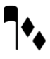 | Climacus | chantPunctumVirga + (staffPosLower1) + chantPunctumInclinatum + (staffPosLower2) + chantPunctumInclinatum |
| Torculus | chantPunctum + (staffPosRaise1) + chantPunctum + chantPunctum | |
| Porrectus | chantEntryLineAsc5th + (staffPosRaise5) + chantLigaturaDesc4th + (staffPosRaise1) + chantConnectingLineAsc3rd + (staffPosRaise4) + chantPunctum | |
| Scandicus flexus | chantPodatusLower + (staffPosRaise1) + chantConnectingLineAsc2nd + (staffPosRaise2) + chantPodatusUpper + chantPunctumVirga + chantConnectingLineAsc3rd + chantPunctum | |
| 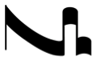 | Porrectus flexus | chantConnectingLineAsc3rd + (staffPosRaise3) + chantLigaturaDesc3rd + chantPunctumVirga + chantConnectingLineAsc3rd + chantPunctum |
| 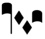 | Climacus resupinus | chantPunctumVirga + (staffPosRaise1) + chantPunctumInclinatum + chantPunctumInclinatum + (staffPosRaise1) + chantPunctum |
| 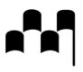 | Torculus resupinus | chantPunctum + (staffPosRaise1) + chantPunctum + chantPunctum + (staffPosRaise1) + chantPunctumVirga |
| 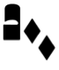 | Pes subbipunctus | chantPodatusLower + (staffPosRaise1) + chantConnectingLineAsc2nd + (staffPosRaise2) + chantPodatusUpper + chantPunctumInclinatum + (staffPosLower1) + chantPunctumInclinatum |
| 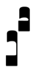 | Virga praetripunctis | chantPodatusLower + (staffPosRaise1) + chantConnectingLineAsc3rd + (staffPosRaise3) + chantPodatusUpper chantPodatus3rd + (staffPosRaise4) + chantPodatusLower + (staffPosRaise5) + chantConnectingLineAsc2nd + (staffPosRaise6) + chantPodatusUpper |
| Epiphonus (liquescent podatus) | chantAuctumAsc + (staffPosRaise1) + chantDeminutemUpper | |
| Cephalicus (liquescent flexa) | chantConnectingLineAsc3rd + (staffPosRaise3) + chantAuctumDesc + (staffPosRaise2) + chantDeminutemLower | |
 | Pinnosa (liquescent torculus) | chantPunctum + chantConnectingLineAsc4th + (staffPosRaise4) + chantAuctumDesc + (staffPosRaise3) + chantDeminutemLower |
| Porrectus liquescens | chantPunctumVirgaReversed + (staffPosLower1) + chantAuctumAsc + (staffPosRaise1) + chantDeminutemUpper | |
| Scandicus liquescens | chantPunctum + (staffPosRaise1) + chantAuctumAsc + + (staffPosRaise1) + chantConnectingLineAsc3rd + (staffPosRaise4) + chantDeminutemUpper |
Medieval and Renaissance plainchant articulations (U+E9D0–U+E9DF)
| Glyph | Description | Glyph | Description |
|---|---|---|---|
| | U+E9D0 chantIctusAbove Ictus above | | U+E9D1 chantIctusBelow Ictus below |
| | U+E9D2 chantCirculusAbove Circulus above | | U+E9D3 chantCirculusBelow Circulus below |
| | U+E9D4 chantSemicirculusAbove Semicirculus above | | U+E9D5 chantSemicirculusBelow Semicirculus below |
| | U+E9D6 chantAccentusAbove Accentus above | | U+E9D7 chantAccentusBelow Accentus below |
| | U+E9D8 chantEpisema Episema | | U+E9D9 chantAugmentum Augmentum (mora) |
Medieval and Renaissance accidentals (U+E9E0–U+E9EF)
| Glyph | Description | Glyph | Description |
|---|---|---|---|
| | U+E9E0 (and U+1D1D2) medRenFlatSoftB Flat, soft b (fa) | | U+E9E1 medRenFlatHardB Flat, hard b (mi) |
| | U+E9E2 medRenNatural Natural | | U+E9E3 (and U+1D1CF) medRenSharpCroix Croix |
| | U+E9E4 medRenFlatWithDot Flat with dot | | U+E9E5 medRenNaturalWithCross Natural with interrupted cross |
Recommended stylistic alternates
| Glyph | Description | Glyph | Description |
|---|---|---|---|
| | uniE9E0.salt01 medRenFlatSoftBOld Flat (old) | | uniE9E0.salt02 medRenFlatSoftBHufnagel Flat (Hufnagel) |
Medieval and Renaissance rests (U+E9F0–U+E9FF)
| Glyph | Description | Glyph | Description |
|---|---|---|---|
| | U+E9F0 mensuralRestMaxima Maxima rest | | U+E9F1 (and U+1D1C1) mensuralRestLongaPerfecta Longa perfecta rest |
| | U+E9F2 (and U+1D1C2) mensuralRestLongaImperfecta Longa imperfecta rest | | U+E9F3 (and U+1D1C3) mensuralRestBrevis Brevis rest |
| | U+E9F4 (and U+1D1C4) mensuralRestSemibrevis Semibrevis rest | | U+E9F5 (and U+1D1C5) mensuralRestMinima Minima rest |
| | U+E9F6 (and U+1D1C6) mensuralRestSemiminima Semiminima rest | | U+E9F7 mensuralRestFusa Fusa rest |
| | U+E9F8 mensuralRestSemifusa Semifusa rest |
Medieval and Renaissance miscellany (U+EA00–U+EA1F)
| Glyph | Description | Glyph | Description |
|---|---|---|---|
| | U+EA00 mensuralSignumUp Signum congruentiae up | | U+EA01 mensuralSignumDown Signum congruentiae down |
| | U+EA02 mensuralCustosUp Mensural custos up | | U+EA03 mensuralCustosDown Mensural custos down |
| | U+EA04 chantCustosStemUpPosLowest Plainchant custos, stem up, lowest position | | U+EA05 chantCustosStemUpPosLow Plainchant custos, stem up, low position |
| | U+EA06 chantCustosStemUpPosMiddle Plainchant custos, stem up, middle position | | U+EA07 chantCustosStemDownPosMiddle Plainchant custos, stem down, middle position |
| | U+EA08 chantCustosStemDownPosHigh Plainchant custos, stem down, high position | | U+EA09 chantCustosStemDownPosHighest Plainchant custos, stem down, highest position |
| | U+EA0A mensuralCustosCheckmark Checkmark custos | | U+EA0B mensuralCustosTurn Turn-like custos |
| | U+EA0C mensuralColorationStartSquare Coloration start, square | | U+EA0D mensuralColorationEndSquare Coloration end, square |
| | U+EA0E mensuralColorationStartRound Coloration start, round | | U+EA0F mensuralColorationEndRound Coloration end, round |
| | U+EA10 mensuralAlterationSign Alteration sign |
Medieval and Renaissance symbols in CMN (U+EA20–U+EA2F)
| Glyph | Description | Glyph | Description |
|---|---|---|---|
| | U+EA20 ornamentQuilisma Quilisma | | U+EA21 ornamentOriscus Oriscus |
| | U+EA22 medRenLiquescenceCMN Liquescence | | U+EA23 medRenPlicaCMN Plica |
| | U+EA24 medRenGClefCMN G clef (Corpus Monodicum) | | U+EA25 medRenPunctumCMN Punctum (Corpus Monodicum) |
| | U+EA26 medRenLiquescentAscCMN Liquescent ascending (Corpus Monodicum) | | U+EA27 medRenLiquescentDescCMN Liquescent descending (Corpus Monodicum) |
| | U+EA28 medRenQuilismaCMN Quilisma (Corpus Monodicum) | | U+EA29 medRenStrophicusCMN Strophicus (Corpus Monodicum) |
| | U+EA2A medRenOriscusCMN Oriscus (Corpus Monodicum) |
Daseian notation (U+EA30–U+EA4F)
| Glyph | Description | Glyph | Description |
|---|---|---|---|
| | U+EA30 daseianGraves1 Daseian graves 1 | | U+EA31 daseianGraves2 Daseian graves 2 |
| | U+EA32 daseianGraves3 Daseian graves 3 | | U+EA33 daseianGraves4 Daseian graves 4 |
| | U+EA34 daseianFinales1 Daseian finales 1 | | U+EA35 daseianFinales2 Daseian finales 2 |
| | U+EA36 daseianFinales3 Daseian finales 3 | | U+EA37 daseianFinales4 Daseian finales 4 |
| | U+EA38 daseianSuperiores1 Daseian superiores 1 | | U+EA39 daseianSuperiores2 Daseian superiores 2 |
| | U+EA3A daseianSuperiores3 Daseian superiores 3 | | U+EA3B daseianSuperiores4 Daseian superiores 4 |
| | U+EA3C daseianExcellentes1 Daseian excellentes 1 | | U+EA3D daseianExcellentes2 Daseian excellentes 2 |
| | U+EA3E daseianExcellentes3 Daseian excellentes 3 | | U+EA3F daseianExcellentes4 Daseian excellentes 4 |
| | U+EA40 daseianResidua1 Daseian residua 1 | | U+EA41 daseianResidua2 Daseian residua 2 |
Figured bass (U+EA50–U+EA6F)
| Glyph | Description | Glyph | Description |
|---|---|---|---|
| | U+EA50 figbass0 Figured bass 0 | | U+EA51 figbass1 Figured bass 1 |
| | U+EA52 figbass2 Figured bass 2 | | U+EA53 figbass2Raised Figured bass 2 raised by half-step |
| | U+EA54 figbass3 Figured bass 3 | | U+EA55 figbass4 Figured bass 4 |
| | U+EA56 figbass4Raised Figured bass 4 raised by half-step | | U+EA57 figbass5 Figured bass 5 |
| | U+EA58 figbass5Raised1 Figured bass 5 raised by half-step | | U+EA59 figbass5Raised2 Figured bass 5 raised by half-step 2 |
| | U+EA5A figbass5Raised3 Figured bass diminished 5 | | U+EA5B figbass6 Figured bass 6 |
| | U+EA5C figbass6Raised Figured bass 6 raised by half-step | | U+EA5D figbass7 Figured bass 7 |
| | U+EA5E figbass7Raised1 Figured bass 7 raised by half-step | | U+EA5F figbass7Raised2 Figured bass 7 lowered by a half-step |
| | U+EA60 figbass8 Figured bass 8 | | U+EA61 figbass9 Figured bass 9 |
| | U+EA62 figbass9Raised Figured bass 9 raised by half-step | | U+EA63 figbassDoubleFlat Figured bass double flat |
| | U+EA64 figbassFlat Figured bass flat | | U+EA65 figbassNatural Figured bass natural |
| | U+EA66 figbassSharp Figured bass sharp | | U+EA67 figbassDoubleSharp Figured bass double sharp |
| | U+EA68 figbassBracketLeft Figured bass [ | | U+EA69 figbassBracketRight Figured bass ] |
| | U+EA6A figbassParensLeft Figured bass ( | | U+EA6B figbassParensRight Figured bass ) |
| | U+EA6C figbassPlus Figured bass + | | U+EA6D figbassCombiningRaising Combining raise |
| | U+EA6E figbassCombiningLowering Combining lower | | U+EA6F figbass6Raised2 Figured bass 6 raised by half-step 2 |
Recommended stylistic alternates
| Glyph | Description | Glyph | Description |
|---|---|---|---|
| | uniEA63.ss10 figbassDoubleFlatLongerStem Figured bass double flat (longer stem) | | uniEA64.ss10 figbassFlatLongerStem Figured bass flat (longer stem) |
| | uniEA65.ss10 figbassNaturalLongerStem Figured bass natural (longer stem) | | uniEA66.ss10 figbassSharpLongerStem Figured bass sharp (longer stem) |
| | uniEA67.ss10 figbassDoubleSharpLongerStem Figured bass double sharp (longer stem) |
Supplementary Groups
Function theory symbols (U+EA70–U+EA9F)
| Glyph | Description | Glyph | Description |
|---|---|---|---|
| | U+EA70 functionZero Function theory 0 | | U+EA71 functionOne Function theory 1 |
| | U+EA72 functionTwo Function theory 2 | | U+EA73 functionThree Function theory 3 |
| | U+EA74 functionFour Function theory 4 | | U+EA75 functionFive Function theory 5 |
| | U+EA76 functionSix Function theory 6 | | U+EA77 functionSeven Function theory 7 |
| | U+EA78 functionEight Function theory 8 | | U+EA79 functionNine Function theory 9 |
| | U+EA7A functionLessThan Function theory less than | | U+EA7B functionMinus Function theory minus |
| | U+EA7C functionGreaterThan Function theory greater than | | U+EA7D functionSSUpper Function theory major subdominant of subdominant |
| | U+EA7E functionSSLower Function theory minor subdominant of subdominant | | U+EA7F functionDUpper Function theory major dominant |
| | U+EA80 functionDLower Function theory minor dominant | | U+EA81 functionDD Function theory dominant of dominant |
| | U+EA82 functionSlashedDD Function theory double dominant seventh | | U+EA83 functionGUpper Function theory G |
| | U+EA84 functionGLower Function theory g | | U+EA85 functionNUpper Function theory N |
| | U+EA86 functionNLower Function theory n | | U+EA87 functionPUpper Function theory P |
| | U+EA88 functionPLower Function theory p | | U+EA89 functionSUpper Function theory major subdominant |
| | U+EA8A functionSLower Function theory minor subdominant | | U+EA8B functionTUpper Function theory tonic |
| | U+EA8C functionTLower Function theory minor tonic | | U+EA8D functionVUpper Function theory V |
| | U+EA8E functionVLower Function theory v | | U+EA8F functionBracketLeft Function theory bracket left |
| | U+EA90 functionBracketRight Function theory bracket right | | U+EA91 functionParensLeft Function theory parenthesis left |
| | U+EA92 functionParensRight Function theory parenthesis right | | U+EA93 functionAngleLeft Function theory angle bracket left |
| | U+EA94 functionAngleRight Function theory angle bracket right | | U+EA95 functionRepetition1 Function theory repetition 1 |
| | U+EA96 functionRepetition2 Function theory repetition 2 | | U+EA97 functionRing Function theory prefix ring |
| | U+EA98 functionPlus Function theory prefix plus | | U+EA99 functionFUpper Function theory F |
| | U+EA9A functionIUpper Function theory I | | U+EA9B functionILower Function theory i |
| | U+EA9C functionKUpper Function theory K | | U+EA9D functionKLower Function theory k |
| | U+EA9E functionLUpper Function theory L | | U+EA9F functionLLower Function theory l |
Supplementary Groups
Function theory symbols supplement
Multi-segment lines (U+EAA0–U+EB0F)
| Glyph | Description | Glyph | Description |
|---|---|---|---|
| | U+EAA0 wiggleTrillFastest Trill wiggle segment, fastest | | U+EAA1 wiggleTrillFasterStill Trill wiggle segment, faster still |
| | U+EAA2 wiggleTrillFaster Trill wiggle segment, faster | | U+EAA3 wiggleTrillFast Trill wiggle segment, fast |
| | U+EAA4 wiggleTrill Trill wiggle segment | | U+EAA5 wiggleTrillSlow Trill wiggle segment, slow |
| | U+EAA6 wiggleTrillSlower Trill wiggle segment, slower | | U+EAA7 wiggleTrillSlowerStill Trill wiggle segment, slower still |
| | U+EAA8 wiggleTrillSlowest Trill wiggle segment, slowest | | U+EAA9 wiggleArpeggiatoUp Arpeggiato wiggle segment, upwards |
| | U+EAAA wiggleArpeggiatoDown Arpeggiato wiggle segment, downwards | | U+EAAB wiggleArpeggiatoUpSwash Arpeggiato upward swash |
| | U+EAAC wiggleArpeggiatoDownSwash Arpeggiato downward swash | | U+EAAD wiggleArpeggiatoUpArrow Arpeggiato arrowhead up |
| | U+EAAE wiggleArpeggiatoDownArrow Arpeggiato arrowhead down | | U+EAAF wiggleGlissando Glissando wiggle segment |
| | U+EAB0 wiggleVibrato Vibrato / shake wiggle segment | | U+EAB1 wiggleVibratoWide Wide vibrato / shake wiggle segment |
| | U+EAB2 guitarVibratoStroke Vibrato wiggle segment | | U+EAB3 guitarWideVibratoStroke Wide vibrato wiggle segment |
| | U+EAB4 wiggleWavyNarrow Narrow wavy line segment | | U+EAB5 wiggleWavy Wavy line segment |
| | U+EAB6 wiggleWavyWide Wide wavy line segment | | U+EAB7 wiggleSquareWaveNarrow Narrow square wave line segment |
| | U+EAB8 wiggleSquareWave Square wave line segment | | U+EAB9 wiggleSquareWaveWide Wide square wave line segment |
| | U+EABA wiggleSawtoothNarrow Narrow sawtooth line segment | | U+EABB wiggleSawtooth Sawtooth line segment |
| | U+EABC wiggleSawtoothWide Wide sawtooth line segment | | U+EABD wiggleGlissandoGroup1 Group glissando 1 |
| | U+EABE wiggleGlissandoGroup2 Group glissando 2 | | U+EABF wiggleGlissandoGroup3 Group glissando 3 |
| | U+EAC0 wiggleCircularConstant Constant circular motion segment | | U+EAC1 wiggleCircularConstantFlipped Constant circular motion segment (flipped) |
| | U+EAC2 wiggleCircularConstantLarge Constant circular motion segment (large) | | U+EAC3 wiggleCircularConstantFlippedLarge Constant circular motion segment (flipped, large) |
| | U+EAC4 wiggleCircularStart Circular motion start | | U+EAC5 wiggleCircularLargest Circular motion segment, largest |
| | U+EAC6 wiggleCircularLargerStill Circular motion segment, larger still | | U+EAC7 wiggleCircularLarger Circular motion segment, larger |
| | U+EAC8 wiggleCircularLarge Circular motion segment, large | | U+EAC9 wiggleCircular Circular motion segment |
| | U+EACA wiggleCircularSmall Circular motion segment, small | | U+EACB wiggleCircularEnd Circular motion end |
| | U+EACC wiggleVibratoStart Vibrato start | | U+EACD wiggleVibratoSmallestFastest Vibrato smallest, fastest |
| | U+EACE wiggleVibratoSmallestFasterStill Vibrato smallest, faster still | | U+EACF wiggleVibratoSmallestFaster Vibrato smallest, faster |
| | U+EAD0 wiggleVibratoSmallestFast Vibrato smallest, fast | | U+EAD1 wiggleVibratoSmallestSlow Vibrato smallest, slow |
| | U+EAD2 wiggleVibratoSmallestSlower Vibrato smallest, slower | | U+EAD3 wiggleVibratoSmallestSlowest Vibrato smallest, slowest |
| | U+EAD4 wiggleVibratoSmallFastest Vibrato small, fastest | | U+EAD5 wiggleVibratoSmallFasterStill Vibrato small, faster still |
| | U+EAD6 wiggleVibratoSmallFaster Vibrato small, faster | | U+EAD7 wiggleVibratoSmallFast Vibrato small, fast |
| | U+EAD8 wiggleVibratoSmallSlow Vibrato small, slow | | U+EAD9 wiggleVibratoSmallSlower Vibrato small, slower |
| | U+EADA wiggleVibratoSmallSlowest Vibrato small, slowest | | U+EADB wiggleVibratoMediumFastest Vibrato medium, fastest |
| | U+EADC wiggleVibratoMediumFasterStill Vibrato medium, faster still | | U+EADD wiggleVibratoMediumFaster Vibrato medium, faster |
| | U+EADE wiggleVibratoMediumFast Vibrato medium, fast | | U+EADF wiggleVibratoMediumSlow Vibrato medium, slow |
| | U+EAE0 wiggleVIbratoMediumSlower Vibrato medium, slower | | U+EAE1 wiggleVibratoMediumSlowest Vibrato medium, slowest |
| | U+EAE2 wiggleVibratoLargeFastest Vibrato large, fastest | | U+EAE3 wiggleVibratoLargeFasterStill Vibrato large, faster still |
| | U+EAE4 wiggleVibratoLargeFaster Vibrato large, faster | | U+EAE5 wiggleVibratoLargeFast Vibrato large, fast |
| | U+EAE6 wiggleVibratoLargeSlow Vibrato large, slow | | U+EAE7 wiggleVibratoLargeSlower Vibrato large, slower |
| | U+EAE8 wiggleVibratoLargeSlowest Vibrato large, slowest | | U+EAE9 wiggleVibratoLargestFastest Vibrato largest, fastest |
| | U+EAEA wiggleVibratoLargestFasterStill Vibrato largest, faster still | | U+EAEB wiggleVibratoLargestFaster Vibrato largest, faster |
| | U+EAEC wiggleVibratoLargestFast Vibrato largest, fast | | U+EAED wiggleVibratoLargestSlow Vibrato largest, slow |
| | U+EAEE wiggleVIbratoLargestSlower Vibrato largest, slower | | U+EAEF wiggleVibratoLargestSlowest Vibrato largest, slowest |
| | U+EAF0 wiggleRandom1 Quasi-random squiggle 1 | | U+EAF1 wiggleRandom2 Quasi-random squiggle 2 |
| | U+EAF2 wiggleRandom3 Quasi-random squiggle 3 | | U+EAF3 wiggleRandom4 Quasi-random squiggle 4 |
| | U+EAF4 beamAccelRit1 Accel./rit. beam 1 (widest) | | U+EAF5 beamAccelRit2 Accel./rit. beam 2 |
| | U+EAF6 beamAccelRit3 Accel./rit. beam 3 | | U+EAF7 beamAccelRit4 Accel./rit. beam 4 |
| | U+EAF8 beamAccelRit5 Accel./rit. beam 5 | | U+EAF9 beamAccelRit6 Accel./rit. beam 6 |
| | U+EAFA beamAccelRit7 Accel./rit. beam 7 | | U+EAFB beamAccelRit8 Accel./rit. beam 8 |
| | U+EAFC beamAccelRit9 Accel./rit. beam 9 | | U+EAFD beamAccelRit10 Accel./rit. beam 10 |
| | U+EAFE beamAccelRit11 Accel./rit. beam 11 | | U+EAFF beamAccelRit12 Accel./rit. beam 12 |
| | U+EB00 beamAccelRit13 Accel./rit. beam 13 | | U+EB01 beamAccelRit14 Accel./rit. beam 14 |
| | U+EB02 beamAccelRit15 Accel./rit. beam 15 (narrowest) | | U+EB03 beamAccelRitFinal Accel./rit. beam terminating line |
Recommended stylistic alternates
| Glyph | Description | Glyph | Description |
|---|---|---|---|
| | uniEAAB.salt01 wiggleArpeggiatoUpSwashCouperin Arpeggiato upward swash (Couperin) | | uniEAAC.salt01 wiggleArpeggiatoDownSwashCouperin Arpeggiato downward swash (Couperin) |
Implementation notes
Scoring applications can combine these glyphs to produce lines of varying lengths. By way of example:
| Example | Uses glyphs |
|---|---|
| 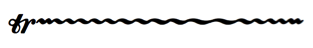 | ornamentTrill + wiggleTrillFastest + wiggleTrillFasterStill + wiggleTrillFaster + wiggleTrillFast + wiggleTrill + wiggleTrillSlower + wiggleTrillSlowerStill + wiggleTrill + wiggleTrillFaster + wiggleTrillFasterStill |
| 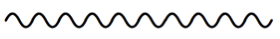 | 10 x wiggleWavy |
| 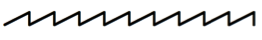 | 10 x wiggleSawtooth |
| 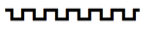 | 6 x wiggleSquaretooth |
| 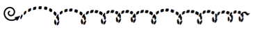 | wiggleCircularStart + wiggleCircularLargest + wiggleCircularLargerStill + wiggleCircularLarger + wiggleCircularLarge + wiggleCircularEnd |
| 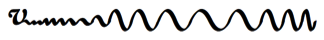 | wiggleVibratoStart + wiggleVibratoSmallestFastest + wiggleVibratoMediumSlower + wiggleVibratoMediumSlowest + wiggleVibratoMediumFaster + wiggleVibratoMediumFasterStill, etc. |
| 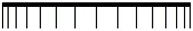 | beamAccelRit15 + beamAccelRit14 + beamAccelRit13 + beamAccelRit12 + beamAccelRit11 + beamAccelRit10 + beamAccelRit9 + beamAccelRit10 + beamAccelRit11 + beamAccelRit12 + beamAccelRit13 + beamAccelRit14 + beamAccelRit15 + beamAccelRitFinal |
Electronic music pictograms (U+EB10–U+EB5F)
| Glyph | Description | Glyph | Description |
|---|---|---|---|
| | U+EB10 elecMicrophone Microphone | | U+EB11 elecHeadphones Headphones |
| | U+EB12 elecHeadset Headset | | U+EB13 elecDisc Disc |
| | U+EB14 elecTape Tape | | U+EB15 elecMixingConsole Mixing console |
| | U+EB16 elecUSB USB connection | | U+EB17 elecVideoCamera Video camera |
| | U+EB18 elecMonitor Monitor | | U+EB19 elecProjector Projector |
| | U+EB1A elecLoudspeaker Loudspeaker | | U+EB1B elecCamera Camera |
| | U+EB1C elecPlay Play | | U+EB1D elecStop Stop |
| | U+EB1E elecPause Pause | | U+EB1F elecFastForward Fast-forward |
| | U+EB20 elecRewind Rewind | | U+EB21 elecSkipForwards Skip forwards |
| | U+EB22 elecSkipBackwards Skip backwards | | U+EB23 elecLoop Loop |
| | U+EB24 elecReplay Replay | | U+EB25 elecShuffle Shuffle |
| | U+EB26 elecMute Mute | | U+EB27 elecUnmute Unmute |
| | U+EB28 elecMicrophoneMute Mute microphone | | U+EB29 elecMicrophoneUnmute Unmute microphone |
| | U+EB2A elecPowerOnOff Power on/off | | U+EB2B elecEject Eject |
| | U+EB2C elecVolumeFader Combining volume fader | | U+EB2D elecVolumeFaderThumb Combining volume fader thumb |
| | U+EB2E elecVolumeLevel0 Volume level 0% | | U+EB2F elecVolumeLevel20 Volume level 20% |
| | U+EB30 elecVolumeLevel40 Volume level 40% | | U+EB31 elecVolumeLevel60 Volume level 60% |
| | U+EB32 elecVolumeLevel80 Volume level 80% | | U+EB33 elecVolumeLevel100 Volume level 100% |
| | U+EB34 elecMIDIIn MIDI in | | U+EB35 elecMIDIOut MIDI out |
| | U+EB36 elecMIDIController0 MIDI controller 0% | | U+EB37 elecMIDIController20 MIDI controller 20% |
| | U+EB38 elecMIDIController40 MIDI controller 40% | | U+EB39 elecMIDIController60 MIDI controller 60% |
| | U+EB3A elecMIDIController80 MIDI controller 80% | | U+EB3B elecMIDIController100 MIDI controller 100% |
| | U+EB3C elecAudioMono Mono audio setup | | U+EB3D elecAudioStereo Stereo audio setup |
| | U+EB3E elecAudioChannelsOne One channel (mono) | | U+EB3F elecAudioChannelsTwo Two channels (stereo) |
| | U+EB40 elecAudioChannelsThreeFrontal Three channels (frontal) | | U+EB41 elecAudioChannelsThreeSurround Three channels (surround) |
| | U+EB42 elecAudioChannelsFour Four channels | | U+EB43 elecAudioChannelsFive Five channels |
| | U+EB44 elecAudioChannelsSix Six channels (5.1 surround) | | U+EB45 elecAudioChannelsSeven Seven channels |
| | U+EB46 elecAudioChannelsEight Eight channels (7.1 surround) | | U+EB47 elecLineIn Line in |
| | U+EB48 elecLineOut Line out | | U+EB49 elecAudioIn Audio in |
| | U+EB4A elecAudioOut Audio out | | U+EB4B elecVideoIn Video in |
| | U+EB4C elecVideoOut Video out | | U+EB4D elecDataIn Data in |
| | U+EB4E elecDataOut Data out | | U+EB4F elecDownload Download |
| | U+EB50 elecUpload Upload |
Arrows and arrowheads (U+EB60–U+EB8F)
| Glyph | Description | Glyph | Description |
|---|---|---|---|
| | U+EB60 arrowBlackUp Black arrow up (N) | | U+EB61 arrowBlackUpRight Black arrow up-right (NE) |
| | U+EB62 arrowBlackRight Black arrow right (E) | | U+EB63 arrowBlackDownRight Black arrow down-right (SE) |
| | U+EB64 arrowBlackDown Black arrow down (S) | | U+EB65 arrowBlackDownLeft Black arrow down-left (SW) |
| | U+EB66 arrowBlackLeft Black arrow left (W) | | U+EB67 arrowBlackUpLeft Black arrow up-left (NW) |
| | U+EB68 arrowWhiteUp White arrow up (N) | | U+EB69 arrowWhiteUpRight White arrow up-right (NE) |
| | U+EB6A arrowWhiteRight White arrow right (E) | | U+EB6B arrowWhiteDownRight White arrow down-right (SE) |
| | U+EB6C arrowWhiteDown White arrow down (S) | | U+EB6D arrowWhiteDownLeft White arrow down-left (SW) |
| | U+EB6E arrowWhiteLeft White arrow left (W) | | U+EB6F arrowWhiteUpLeft White arrow up-left (NW) |
| | U+EB70 arrowOpenUp Open arrow up (N) | | U+EB71 arrowOpenUpRight Open arrow up-right (NE) |
| | U+EB72 arrowOpenRight Open arrow right (E) | | U+EB73 arrowOpenDownRight Open arrow down-right (SE) |
| | U+EB74 arrowOpenDown Open arrow down (S) | | U+EB75 arrowOpenDownLeft Open arrow down-left (SW) |
| | U+EB76 arrowOpenLeft Open arrow left (W) | | U+EB77 arrowOpenUpLeft Open arrow up-left (NW) |
| | U+EB78 arrowheadBlackUp Black arrowhead up (N) | | U+EB79 arrowheadBlackUpRight Black arrowhead up-right (NE) |
| | U+EB7A arrowheadBlackRight Black arrowhead right (E) | | U+EB7B arrowheadBlackDownRight Black arrowhead down-right (SE) |
| | U+EB7C arrowheadBlackDown Black arrowhead down (S) | | U+EB7D arrowheadBlackDownLeft Black arrowhead down-left (SW) |
| | U+EB7E arrowheadBlackLeft Black arrowhead left (W) | | U+EB7F arrowheadBlackUpLeft Black arrowhead up-left (NW) |
| | U+EB80 arrowheadWhiteUp White arrowhead up (N) | | U+EB81 arrowheadWhiteUpRight White arrowhead up-right (NE) |
| | U+EB82 arrowheadWhiteRight White arrowhead right (E) | | U+EB83 arrowheadWhiteDownRight White arrowhead down-right (SE) |
| | U+EB84 arrowheadWhiteDown White arrowhead down (S) | | U+EB85 arrowheadWhiteDownLeft White arrowhead down-left (SW) |
| | U+EB86 arrowheadWhiteLeft White arrowhead left (W) | | U+EB87 arrowheadWhiteUpLeft White arrowhead up-left (NW) |
| | U+EB88 arrowheadOpenUp Open arrowhead up (N) | | U+EB89 arrowheadOpenUpRight Open arrowhead up-right (NE) |
| | U+EB8A arrowheadOpenRight Open arrowhead right (E) | | U+EB8B arrowheadOpenDownRight Open arrowhead down-right (SE) |
| | U+EB8C arrowheadOpenDown Open arrowhead down (S) | | U+EB8D arrowheadOpenDownLeft Open arrowhead down-left (SW) |
| | U+EB8E arrowheadOpenLeft Open arrowhead left (W) | | U+EB8F arrowheadOpenUpLeft Open arrowhead up-left (NW) |
Combining staff positions (U+EB90–U+EB9F)
| Glyph | Description | Glyph | Description |
|---|---|---|---|
| | U+EB90 staffPosRaise1 Raise 1 staff position | | U+EB91 staffPosRaise2 Raise 2 staff positions |
| | U+EB92 staffPosRaise3 Raise 3 staff positions | | U+EB93 staffPosRaise4 Raise 4 staff positions |
| | U+EB94 staffPosRaise5 Raise 5 staff positions | | U+EB95 staffPosRaise6 Raise 6 staff positions |
| | U+EB96 staffPosRaise7 Raise 7 staff positions | | U+EB97 staffPosRaise8 Raise 8 staff positions |
| | U+EB98 staffPosLower1 Lower 1 staff position | | U+EB99 staffPosLower2 Lower 2 staff positions |
| | U+EB9A staffPosLower3 Lower 3 staff positions | | U+EB9B staffPosLower4 Lower 4 staff positions |
| | U+EB9C staffPosLower5 Lower 5 staff positions | | U+EB9D staffPosLower6 Lower 6 staff positions |
| | U+EB9E staffPosLower7 Lower 7 staff positions | | U+EB9F staffPosLower8 Lower 8 staff positions |
Renaissance lute tablature (U+EBA0–U+EBBF)
| Glyph | Description | Glyph | Description |
|---|---|---|---|
| | U+EBA0 luteStaff6Lines Lute tablature staff, 6 courses | | U+EBA1 luteStaff6LinesWide Lute tablature staff, 6 courses (wide) |
| | U+EBA2 luteStaff6LinesNarrow Lute tablature staff, 6 courses (narrow) | | U+EBA3 luteBarlineStartRepeat Lute tablature start repeat barline |
| | U+EBA4 luteBarlineEndRepeat Lute tablature end repeat barline | | U+EBA5 luteBarlineFinal Lute tablature final barline |
| | U+EBA6 luteDurationDoubleWhole Double whole note (breve) duration sign | | U+EBA7 luteDurationWhole Whole note (semibreve) duration sign |
| | U+EBA8 luteDurationHalf Half note (minim) duration sign | | U+EBA9 luteDurationQuarter Quarter note (crotchet) duration sign |
| | U+EBAA luteDuration8th Eighth note (quaver) duration sign | | U+EBAB luteDuration16th 16th note (semiquaver) duration sign |
| | U+EBAC luteDuration32nd 32nd note (demisemiquaver) duration sign | | U+EBAD luteFingeringRHThumb Right-hand fingering, thumb |
| | U+EBAE luteFingeringRHFirst Right-hand fingering, first finger | | U+EBAF luteFingeringRHSecond Right-hand fingering, second finger |
| | U+EBB0 luteFingeringRHThird Right-hand fingering, third finger |
Recommended stylistic alternates
| Glyph | Description | Glyph | Description |
|---|---|---|---|
| | uniEBB0.salt01 luteFingeringRHThirdAlt Right-hand fingering, third finger (alternate) |
French and English Renaissance lute tablature (U+EBC0–U+EBDF)
| Glyph | Description | Glyph | Description |
|---|---|---|---|
| | U+EBC0 luteFrenchFretA Open string (a) | | U+EBC1 luteFrenchFretB First fret (b) |
| | U+EBC2 luteFrenchFretC Second fret (c) | | U+EBC3 luteFrenchFretD Third fret (d) |
| | U+EBC4 luteFrenchFretE Fourth fret (e) | | U+EBC5 luteFrenchFretF Fifth fret (f) |
| | U+EBC6 luteFrenchFretG Sixth fret (g) | | U+EBC7 luteFrenchFretH Seventh fret (h) |
| | U+EBC8 luteFrenchFretI Eighth fret (i) | | U+EBC9 luteFrenchFretK Ninth fret (k) |
| | U+EBCA luteFrenchFretL 10th fret (l) | | U+EBCB luteFrenchFretM 11th fret (m) |
| | U+EBCC luteFrenchFretN 12th fret (n) | | U+EBCD luteFrench7thCourse Seventh course (diapason) |
| | U+EBCE luteFrench8thCourse Eighth course (diapason) | | U+EBCF luteFrench9thCourse Ninth course (diapason) |
| | U+EBD0 luteFrench10thCourse 10th course (diapason) | | U+EBD1 luteFrenchMordentUpper Mordent with upper auxiliary |
| | U+EBD2 luteFrenchMordentLower Mordent with lower auxiliary | | U+EBD3 luteFrenchMordentInverted Inverted mordent |
| | U+EBD4 luteFrenchAppoggiaturaBelow Appoggiatura from below | | U+EBD5 luteFrenchAppoggiaturaAbove Appoggiatura from above |
Recommended stylistic alternates
| Glyph | Description | Glyph | Description |
|---|---|---|---|
| | uniEBC2.salt01 luteFrenchFretCAlt Second fret (c), alternate appearance | | uniEBCD.salt01 luteFrench7thCourseStrikethru Seventh course (diapason), strikethrough |
| | uniEBCD.salt02 luteFrench7thCourseUnderline Seventh course (diapason), underline | | uniEBCD.salt03 luteFrench7thCourseRight Seventh course (diapason), right |
| | uniEBCE.salt01 luteFrench8thCourseStrikethru Eighth course (diapason), strikethrough | | uniEBCE.salt02 luteFrench8thCourseUnderline Eighth course (diapason), underlined |
| | uniEBCE.salt03 luteFrench8thCourseRight Eighth course (diapason), right | | uniEBCF.salt01 luteFrench9thCourseStrikethru Ninth course (diapason), strikethrough |
| | uniEBCF.salt02 luteFrench9thCourseUnderline Ninth course (diapason), underlined | | uniEBCF.salt03 luteFrench9thCourseRight Ninth course (diapason), right |
| | uniEBD0.salt01 luteFrench10thCourseStrikethru 10th course (diapason), strikethrough | | uniEBD0.salt02 luteFrench10thCourseUnderline 10th course (diapason), underlined |
| | uniEBD0.salt03 luteFrench10thCourseRight 10th course (diapason), right |
Italian and Spanish Renaissance lute tablature (U+EBE0–U+EBFF)
| Glyph | Description | Glyph | Description |
|---|---|---|---|
| | U+EBE0 luteItalianFret0 Open string (0) | | U+EBE1 luteItalianFret1 First fret (1) |
| | U+EBE2 luteItalianFret2 Second fret (2) | | U+EBE3 luteItalianFret3 Third fret (3) |
| | U+EBE4 luteItalianFret4 Fourth fret (4) | | U+EBE5 luteItalianFret5 Fifth fret (5) |
| | U+EBE6 luteItalianFret6 Sixth fret (6) | | U+EBE7 luteItalianFret7 Seventh fret (7) |
| | U+EBE8 luteItalianFret8 Eighth fret (8) | | U+EBE9 luteItalianFret9 Ninth fret (9) |
| | U+EBEA luteItalianTempoFast Fast tempo indication (de Mudarra) | | U+EBEB luteItalianTempoSomewhatFast Somewhat fast tempo indication (de Narvaez) |
| | U+EBEC luteItalianTempoNeitherFastNorSlow Neither fast nor slow tempo indication (de Mudarra) | | U+EBED luteItalianTempoSlow Slow tempo indication (de Mudarra) |
| | U+EBEE luteItalianTempoVerySlow Very slow indication (de Narvaez) | | U+EBEF luteItalianTimeTriple Triple time indication |
| | U+EBF0 luteItalianClefFFaUt F fa ut clef | | U+EBF1 luteItalianClefCSolFaUt C sol fa ut clef |
| | U+EBF2 luteItalianTremolo Single-finger tremolo or mordent | | U+EBF3 luteItalianHoldNote Hold note |
| | U+EBF4 luteItalianHoldFinger Hold finger in place | | U+EBF5 luteItalianReleaseFinger Release finger |
| | U+EBF6 luteItalianVibrato Vibrato (verre cassé) |
German Renaissance lute tablature (U+EC00–U+EC2F)
| Glyph | Description | Glyph | Description |
|---|---|---|---|
| | U+EC00 luteGermanALower 5th course, 1st fret (a) | | U+EC01 luteGermanBLower 4th course, 1st fret (b) |
| | U+EC02 luteGermanCLower 3rd course, 1st fret (c) | | U+EC03 luteGermanDLower 2nd course, 1st fret (d) |
| | U+EC04 luteGermanELower 1st course, 1st fret (e) | | U+EC05 luteGermanFLower 5th course, 2nd fret (f) |
| | U+EC06 luteGermanGLower 4th course, 2nd fret (g) | | U+EC07 luteGermanHLower 3rd course, 2nd fret (h) |
| | U+EC08 luteGermanILower 2nd course, 2nd fret (i) | | U+EC09 luteGermanKLower 1st course, 2nd fret (k) |
| | U+EC0A luteGermanLLower 5th course, 3rd fret (l) | | U+EC0B luteGermanMLower 4th course, 3rd fret (m) |
| | U+EC0C luteGermanNLower 3rd course, 3rd fret (n) | | U+EC0D luteGermanOLower 2nd course, 3rd fret (o) |
| | U+EC0E luteGermanPLower 1st course, 3rd fret (p) | | U+EC0F luteGermanQLower 5th course, 4th fret (q) |
| | U+EC10 luteGermanRLower 4th course, 4th fret (r) | | U+EC11 luteGermanSLower 3rd course, 4th fret (s) |
| | U+EC12 luteGermanTLower 2nd course, 4th fret (t) | | U+EC13 luteGermanVLower 1st course, 4th fret (v) |
| | U+EC14 luteGermanXLower 5th course, 5th fret (x) | | U+EC15 luteGermanYLower 4th course, 5th fret (y) |
| | U+EC16 luteGermanZLower 3rd course, 5th fret (z) | | U+EC17 luteGermanAUpper 6th course, 1st fret (A) |
| | U+EC18 luteGermanBUpper 6th course, 2nd fret (B) | | U+EC19 luteGermanCUpper 6th course, 3rd fret (C) |
| | U+EC1A luteGermanDUpper 6th course, 4th fret (D) | | U+EC1B luteGermanEUpper 6th course, 5th fret (E) |
| | U+EC1C luteGermanFUpper 6th course, 6th fret (F) | | U+EC1D luteGermanGUpper 6th course, 7th fret (G) |
| | U+EC1E luteGermanHUpper 6th course, 8th fret (H) | | U+EC1F luteGermanIUpper 6th course, 9th fret (I) |
| | U+EC20 luteGermanKUpper 6th course, 10th fret (K) | | U+EC21 luteGermanLUpper 6th course, 11th fret (L) |
| | U+EC22 luteGermanMUpper 6th course, 12th fret (M) | | U+EC23 luteGermanNUpper 6th course, 13th fret (N) |
Kievan square notation (U+EC30–U+EC3F)
| Glyph | Description | Glyph | Description |
|---|---|---|---|
| | U+EC30 (and U+1D1DE) kievanCClef Kievan C clef (tse-fa-ut) | | U+EC31 (and U+1D1DF) kievanEndingSymbol Kievan ending symbol |
| | U+EC32 (and U+1D1E1) kievanNoteReciting Kievan reciting note | | U+EC33 (and U+1D1E2) kievanNoteWhole Kievan whole note |
| | U+EC34 (and U+1D1E0) kievanNoteWholeFinal Kievan final whole note | | U+EC35 (and U+1D1E3) kievanNoteHalfStaffLine Kievan half note (on staff line) |
| | U+EC36 kievanNoteHalfStaffSpace Kievan half note (in staff space) | | U+EC37 (and U+1D1E5) kievanNoteQuarterStemUp Kievan quarter note, stem up |
| | U+EC38 (and U+1D1E4) kievanNoteQuarterStemDown Kievan quarter note, stem down | | U+EC39 (and U+1D1E7) kievanNote8thStemUp Kievan eighth note, stem up |
| | U+EC3A (and U+1D1E6) kievanNote8thStemDown Kievan eighth note, stem down | | U+EC3B kievanNoteBeam Kievan beam |
| | U+EC3C kievanAugmentationDot Kievan augmentation dot | | U+EC3D kievanAccidentalSharp Kievan sharp |
| | U+EC3E (and U+1D1E8) kievanAccidentalFlat Kievan flat |
Implementation notes
This range of Kievan square notation glyphs are encoded in Unicode from version 8.0 at the code points U+1D1DE–U+1D1E8.
For kievanNoteWholeFinal and kievanNoteReciting, the symbol is positioned on the staff such that for a note on a staff line, the staff line passes between the two thick horizontal lines. For kievanNoteWhole on a staff line, the staff line passes between the two diamonds. For kievanNote8thStemDown on a staff line, the staff line passes through the top diamond.
In the type of Kievan notation used in modern chant books of the Russian Orthodox Church, the symbol for half note has two variants: the variant with the long tail down (kievanNoteHalfStemDown) is used when the note occurs on a staff line, and the variant with the long tail up (kievanNoteHalfStemUp) is used when the note occurs in a space. Only the first of these characters is encoded in Unicode, while the second character is to be selected programmatically via font features; SMuFL encodes both characters at separate code points.
Kievan notes may be beamed, with stems up or stems down. These ligatures are not encoded explicitly either in Unicode or in SMuFL, but it is recommended that fonts provide ligatures. They may also be available in Unicode fonts via ligature substitution by entering, e.g., the following character sequence: U+1D1E4 Musical Symbol Kievan Quarter Note Stem Down, U+1D173 Musical Symbol Begin Beam, U+1D1E4 Musical Symbol Kievan Quarter Note Stem Down, U+1D174 Musical Symbol End Beam.
Kodály hand signs (U+EC40–U+EC4F)
| Glyph | Description | Glyph | Description |
|---|---|---|---|
| | U+EC40 kodalyHandDo Do hand sign | | U+EC41 kodalyHandRe Re hand sign |
| | U+EC42 kodalyHandMi Mi hand sign | | U+EC43 kodalyHandFa Fa hand sign |
| | U+EC44 kodalyHandSo So hand sign | | U+EC45 kodalyHandLa La hand sign |
| | U+EC46 kodalyHandTi Ti hand sign |
Simplified Music Notation (U+EC50–U+EC5F)
| Glyph | Description | Glyph | Description |
|---|---|---|---|
| | U+EC50 smnSharp Sharp stem up | | U+EC51 smnSharpWhite Sharp (white) stem up |
| | U+EC52 smnFlat Flat | | U+EC53 smnFlatWhite Flat (white) |
| | U+EC54 smnHistorySharp Sharp history sign | | U+EC55 smnHistoryDoubleSharp Double sharp history sign |
| | U+EC56 smnHistoryFlat Flat history sign | | U+EC57 smnHistoryDoubleFlat Double flat history sign |
| | U+EC58 smnNatural Natural (N) | | U+EC59 smnSharpDown Sharp stem down |
| | U+EC5A smnSharpWhiteDown Sharp (white) stem down |
Implementation notes
Simplified Music Notation is a notation system in which the usual accidentals symbols are replaced with noteheads of different shapes. Double sharps, double flats and sharps and flats produced by playing white notes on the piano (e.g. B sharp and E sharp) are notated using “history signs.”
For more information about Simplified Music Notation, visit http://www.simplifiedmusicnotation.org/
Miscellaneous symbols (U+EC60–U+EC7F)
| Glyph | Description | Glyph | Description |
|---|---|---|---|
| | U+EC60 miscDoNotPhotocopy Do not photocopy | | U+EC61 miscDoNotCopy Do not copy |
| | U+EC62 miscEyeglasses Eyeglasses | | U+EC63 metricModulationArrowLeft Left-pointing arrow for metric modulation |
| | U+EC64 metricModulationArrowRight Right-pointing arrow for metric modulation |
Time signatures supplement (U+EC80–U+EC8F)
Supplementary to Time signatures
| Glyph | Description | Glyph | Description |
|---|---|---|---|
| | U+EC80 timeSigBracketLeft Left bracket for whole time signature | | U+EC81 timeSigBracketRight Right bracket for whole time signature |
| | U+EC82 timeSigBracketLeftSmall Left bracket for numerator only | | U+EC83 timeSigBracketRightSmall Right bracket for numerator only |
| | U+EC84 timeSigSlash Time signature slash separator | | U+EC85 timeSigCut2 Cut time (Bach) |
| | U+EC86 timeSigCut3 Cut triple time (9/8) |
Recommended stylistic alternates
| Glyph | Description | Glyph | Description |
|---|---|---|---|
| | uniEC80.ss04 timeSigBracketLeftLarge Left bracket for whole time signature (outside staff) | | uniEC80.ss09 timeSigBracketLeftNarrow Left bracket for whole time signature (narrow, large) |
| | uniEC81.ss04 timeSigBracketRightLarge Right bracket for whole time signature (outside staff) | | uniEC81.ss09 timeSigBracketRightNarrow Right bracket for whole time signature (large, narrow) |
| | uniEC82.ss04 timeSigBracketLeftSmallLarge Left bracket for numerator only (outside staff) | | uniEC82.ss09 timeSigBracketLeftSmallNarrow Left bracket for numerator only (large, narrow) |
| | uniEC83.ss04 timeSigBracketRightSmallLarge Right bracket for numerator only (outside staff) | | uniEC83.ss09 timeSigBracketRightSmallNarrow Right bracket for numerator only (large, narrow) |
| | uniEC84.ss04 timeSigSlashLarge Time signature slash separator (outside staff) | | uniEC84.ss09 timeSigSlashNarrow Time signature slash separator (large, narrow) |
| | uniEC85.ss04 timeSigCut2Large Cut time (Bach) (outside staff) | | uniEC85.ss09 timeSigCut2Narrow Cut time (Bach) (large, narrow) |
| | uniEC86.ss04 timeSigCut3Large Cut triple time (9/8) (outside staff) | | uniEC86.ss09 timeSigCut3Narrow Cut triple time (9/8) (large, narrow) |
Octaves supplement (U+EC90–U+EC9F)
Supplementary to Octaves
| Glyph | Description | Glyph | Description |
|---|---|---|---|
| | U+EC90 octaveLoco Loco | | U+EC91 octaveBaselineA a (baseline) |
| | U+EC92 octaveSuperscriptA a (superscript) | | U+EC93 octaveBaselineB b (baseline) |
| | U+EC94 octaveSuperscriptB b (superscript) | | U+EC95 octaveBaselineM m (baseline) |
| | U+EC96 octaveSuperscriptM m (superscript) | | U+EC97 octaveBaselineV v (baseline) |
| | U+EC98 octaveSuperscriptV v (superscript) |
Metronome marks (U+ECA0–U+ECBF)
| Glyph | Description | Glyph | Description |
|---|---|---|---|
| | U+ECA0 metNoteDoubleWhole Double whole note (breve) | | U+ECA1 metNoteDoubleWholeSquare Double whole note (square) |
| | U+ECA2 metNoteWhole Whole note (semibreve) | | U+ECA3 metNoteHalfUp Half note (minim) stem up |
| | U+ECA4 metNoteHalfDown Half note (minim) stem down | | U+ECA5 metNoteQuarterUp Quarter note (crotchet) stem up |
| | U+ECA6 metNoteQuarterDown Quarter note (crotchet) stem down | | U+ECA7 metNote8thUp Eighth note (quaver) stem up |
| | U+ECA8 metNote8thDown Eighth note (quaver) stem down | | U+ECA9 metNote16thUp 16th note (semiquaver) stem up |
| | U+ECAA metNote16thDown 16th note (semiquaver) stem down | | U+ECAB metNote32ndUp 32nd note (demisemiquaver) stem up |
| | U+ECAC metNote32ndDown 32nd note (demisemiquaver) stem down | | U+ECAD metNote64thUp 64th note (hemidemisemiquaver) stem up |
| | U+ECAE metNote64thDown 64th note (hemidemisemiquaver) stem down | | U+ECAF metNote128thUp 128th note (semihemidemisemiquaver) stem up |
| | U+ECB0 metNote128thDown 128th note (semihemidemisemiquaver) stem down | | U+ECB1 metNote256thUp 256th note (demisemihemidemisemiquaver) stem up |
| | U+ECB2 metNote256thDown 256th note (demisemihemidemisemiquaver) stem down | | U+ECB3 metNote512thUp 512th note (hemidemisemihemidemisemiquaver) stem up |
| | U+ECB4 metNote512thDown 512th note (hemidemisemihemidemisemiquaver) stem down | | U+ECB5 metNote1024thUp 1024th note (semihemidemisemihemidemisemiquaver) stem up |
| | U+ECB6 metNote1024thDown 1024th note (semihemidemisemihemidemisemiquaver) stem down | | U+ECB7 metAugmentationDot Augmentation dot |
Implementation notes
This range is intended for mixing music symbols with text. Its metrics and glyph registrations should follow the guidelines for fonts intended for text-based applications, even in fonts that are themselves primarily intended for use in scoring applications.
These precomposed notes may be used for displaying metronome marks and simple metric modulations. More complex metric modulations and l’istesso tempo directions may be drawn using these characters in conjunction with the Beamed groups of notes range.
It is recommended that the default stem length for characters in this range is reduced by 0.75 spaces from the normal minimum of 3.5 spaces. This helps to balance the notehead and its stem and flag with the surrounding text.
By contrast, the characters in the Individual notes range are intended for positioning on a staff, and hence have the default minimum stem length of 3.5 spaces.
Figured bass supplement (U+ECC0–U+ECCF)
Supplementary to Figured bass
| Glyph | Description | Glyph | Description |
|---|---|---|---|
| | U+ECC0 figbass7Diminished Figured bass 7 diminished | | U+ECC1 figbassTripleFlat Figured bass triple flat |
| | U+ECC2 figbassTripleSharp Figured bass triple sharp |
Recommended stylistic alternates
| Glyph | Description | Glyph | Description |
|---|---|---|---|
| | uniECC1.ss10 figbassTripleFlatLongerStem Figured bass triple flat (longer stem) | | uniECC2.ss10 figbassTripleSharpLongerStem Figured bass triple sharp (longer stem) |
Shape note noteheads supplement (U+ECD0–U+ECDF)
Supplementary to Shape note noteheads
| Glyph | Description | Glyph | Description |
|---|---|---|---|
| | U+ECD0 noteShapeRoundDoubleWhole Round double whole (4-shape sol; 7-shape so) | | U+ECD1 noteShapeSquareDoubleWhole Square double whole (4-shape la; Aikin 7-shape la) |
| | U+ECD2 noteShapeTriangleRightDoubleWhole Triangle right double whole (stem down; 4-shape fa; 7-shape fa) | | U+ECD3 noteShapeTriangleLeftDoubleWhole Triangle left double whole (stem up; 4-shape fa; 7-shape fa) |
| | U+ECD4 noteShapeDiamondDoubleWhole Diamond double whole (4-shape mi; 7-shape mi) | | U+ECD5 noteShapeTriangleUpDoubleWhole Triangle up double whole (Aikin 7-shape do) |
| | U+ECD6 noteShapeMoonDoubleWhole Moon double whole (Aikin 7-shape re) | | U+ECD7 noteShapeTriangleRoundDoubleWhole Triangle-round white (Aikin 7-shape ti) |
| | U+ECD8 noteShapeKeystoneDoubleWhole Inverted keystone double whole (Walker 7-shape do) | | U+ECD9 noteShapeQuarterMoonDoubleWhole Quarter moon double whole (Walker 7-shape re) |
| | U+ECDA noteShapeIsoscelesTriangleDoubleWhole Isosceles triangle double whole (Walker 7-shape ti) | | U+ECDB noteShapeMoonLeftDoubleWhole Moon left double whole (Funk 7-shape do) |
| | U+ECDC noteShapeArrowheadLeftDoubleWhole Arrowhead left double whole (Funk 7-shape re) | | U+ECDD noteShapeTriangleRoundLeftDoubleWhole Triangle-round left double whole (Funk 7-shape ti) |
Turned time signatures (U+ECE0–U+ECEF)
| Glyph | Description | Glyph | Description |
|---|---|---|---|
| | U+ECE0 timeSig0Turned Turned time signature 0 | | U+ECE1 timeSig1Turned Turned time signature 1 |
| | U+ECE2 timeSig2Turned Turned time signature 2 | | U+ECE3 timeSig3Turned Turned time signature 3 |
| | U+ECE4 timeSig4Turned Turned time signature 4 | | U+ECE5 timeSig5Turned Turned time signature 5 |
| | U+ECE6 timeSig6Turned Turned time signature 6 | | U+ECE7 timeSig7Turned Turned time signature 7 |
| | U+ECE8 timeSig8Turned Turned time signature 8 | | U+ECE9 timeSig9Turned Turned time signature 9 |
| | U+ECEA timeSigCommonTurned Turned common time | | U+ECEB timeSigCutCommonTurned Turned cut time |
Reversed time signatures (U+ECF0–U+ECFF)
| Glyph | Description | Glyph | Description |
|---|---|---|---|
| | U+ECF0 timeSig0Reversed Reversed time signature 0 | | U+ECF1 timeSig1Reversed Reversed time signature 1 |
| | U+ECF2 timeSig2Reversed Reversed time signature 2 | | U+ECF3 timeSig3Reversed Reversed time signature 3 |
| | U+ECF4 timeSig4Reversed Reversed time signature 4 | | U+ECF5 timeSig5Reversed Reversed time signature 5 |
| | U+ECF6 timeSig6Reversed Reversed time signature 6 | | U+ECF7 timeSig7Reversed Reversed time signature 7 |
| | U+ECF8 timeSig8Reversed Reversed time signature 8 | | U+ECF9 timeSig9Reversed Reversed time signature 9 |
| | U+ECFA timeSigCommonReversed Reversed common time | | U+ECFB timeSigCutCommonReversed Reversed cut time |
Function theory symbols supplement (U+ED00–U+ED0F)
Supplementary to Function theory symbols
| Glyph | Description | Glyph | Description |
|---|---|---|---|
| | U+ED00 functionMUpper Function theory M | | U+ED01 functionMLower Function theory m |
| | U+ED02 functionNUpperSuperscript Function theory superscript N | | U+ED03 functionRLower Function theory r |
Fingering (U+ED10–U+ED2F)
| Glyph | Description | Glyph | Description |
|---|---|---|---|
| | U+ED10 fingering0 Fingering 0 (open string) | | U+ED11 fingering1 Fingering 1 (thumb) |
| | U+ED12 fingering2 Fingering 2 (index finger) | | U+ED13 fingering3 Fingering 3 (middle finger) |
| | U+ED14 fingering4 Fingering 4 (ring finger) | | U+ED15 fingering5 Fingering 5 (little finger) |
| | U+ED16 fingeringTUpper Fingering T (left-hand thumb for guitar) | | U+ED17 fingeringPLower Fingering p (pulgar; right-hand thumb for guitar) |
| | U+ED18 fingeringTLower Fingering t (right-hand thumb for guitar) | | U+ED19 fingeringILower Fingering i (indicio; right-hand index finger for guitar) |
| | U+ED1A fingeringMLower Fingering m (medio; right-hand middle finger for guitar) | | U+ED1B fingeringALower Fingering a (anular; right-hand ring finger for guitar) |
| | U+ED1C fingeringCLower Fingering c (right-hand little finger for guitar) | | U+ED1D fingeringXLower Fingering x (right-hand little finger for guitar) |
| | U+ED1E fingeringELower Fingering e (right-hand little finger for guitar) | | U+ED1F fingeringOLower Fingering o (right-hand little finger for guitar) |
| | U+ED20 fingeringSubstitutionAbove Finger substitution above | | U+ED21 fingeringSubstitutionBelow Finger substitution below |
| | U+ED22 fingeringSubstitutionDash Finger substitution dash | | U+ED23 fingeringMultipleNotes Multiple notes played by thumb or single finger |
| | U+ED24 fingering6 Fingering 6 | | U+ED25 fingering7 Fingering 7 |
| | U+ED26 fingering8 Fingering 8 | | U+ED27 fingering9 Fingering 9 |
| | U+ED28 fingeringLeftParenthesis Fingering left parenthesis | | U+ED29 fingeringRightParenthesis Fingering right parenthesis |
| | U+ED2A fingeringLeftBracket Fingering left bracket | | U+ED2B fingeringRightBracket Fingering right bracket |
| | U+ED2C fingeringSeparatorMiddleDot Fingering middle dot separator | | U+ED2D fingeringSeparatorMiddleDotWhite Fingering white middle dot separator |
| | U+ED2E fingeringSeparatorSlash Fingering forward slash separator |
Supplementary Groups
Arabic accidentals (U+ED30–U+ED3F)
| Glyph | Description | Glyph | Description |
|---|---|---|---|
| | U+ED30 accidentalDoubleFlatArabic Arabic double flat | | U+ED31 accidentalThreeQuarterTonesFlatArabic Arabic three-quarter-tones flat |
| | U+ED32 accidentalFlatArabic Arabic half-tone flat | | U+ED33 accidentalQuarterToneFlatArabic Arabic quarter-tone flat |
| | U+ED34 accidentalNaturalArabic Arabic natural | | U+ED35 accidentalQuarterToneSharpArabic Arabic quarter-tone sharp |
| | U+ED36 accidentalSharpArabic Arabic half-tone sharp | | U+ED37 accidentalThreeQuarterTonesSharpArabic Arabic three-quarter-tones sharp |
| | U+ED38 accidentalDoubleSharpArabic Arabic double sharp |
Articulation supplement (U+ED40–U+ED4F)
Supplementary to Articulation
| Glyph | Description | Glyph | Description |
|---|---|---|---|
| | U+ED40 articSoftAccentAbove Soft accent above | | U+ED41 articSoftAccentBelow Soft accent below |
| | U+ED42 articSoftAccentStaccatoAbove Soft accent-staccato above | | U+ED43 articSoftAccentStaccatoBelow Soft accent-staccato below |
| | U+ED44 articSoftAccentTenutoAbove Soft accent-tenuto above | | U+ED45 articSoftAccentTenutoBelow Soft accent-tenuto below |
| | U+ED46 articSoftAccentTenutoStaccatoAbove Soft accent-tenuto-staccato above | | U+ED47 articSoftAccentTenutoStaccatoBelow Soft accent-tenuto-staccato below |
Stockhausen accidentals (24-EDO) (U+ED50–U+ED5F)
| Glyph | Description | Glyph | Description |
|---|---|---|---|
| | U+ED50 accidentalRaisedStockhausen Raised (Stockhausen) | | U+ED51 accidentalLoweredStockhausen Lowered (Stockhausen) |
| | U+ED52 accidentalFlatRaisedStockhausen Raised flat (Stockhausen) | | U+ED53 accidentalFlatLoweredStockhausen Lowered flat (Stockhausen) |
| | U+ED54 accidentalNaturalRaisedStockhausen Raised natural (Stockhausen) | | U+ED55 accidentalNaturalLoweredStockhausen Lowered natural (Stockhausen) |
| | U+ED56 accidentalSharpRaisedStockhausen Raised sharp (Stockhausen) | | U+ED57 accidentalSharpLoweredStockhausen Lowered sharp (Stockhausen) |
| | U+ED58 accidentalOneQuarterToneSharpStockhausen One-quarter-tone sharp (Stockhausen) | | U+ED59 accidentalOneQuarterToneFlatStockhausen One-quarter-tone flat (Stockhausen) |
| | U+ED5A accidentalThreeQuarterTonesSharpStockhausen Three-quarter-tones sharp (Stockhausen) | | U+ED5B accidentalFlatRepeatedSpaceStockhausen Repeated flat, note in space (Stockhausen) |
| | U+ED5C accidentalFlatRepeatedLineStockhausen Repeated flat, note on line (Stockhausen) | | U+ED5D accidentalSharpRepeatedSpaceStockhausen Repeated sharp, note in space (Stockhausen) |
| | U+ED5E accidentalSharpRepeatedLineStockhausen Repeated sharp, note on line (Stockhausen) |
Standard accidentals for chord symbols (U+ED60–U+ED6F)
Supplementary to Chord symbols
| Glyph | Description | Glyph | Description |
|---|---|---|---|
| | U+ED60 csymAccidentalFlat Flat | | U+ED61 csymAccidentalNatural Natural |
| | U+ED62 csymAccidentalSharp Sharp | | U+ED63 csymAccidentalDoubleSharp Double sharp |
| | U+ED64 csymAccidentalDoubleFlat Double flat | | U+ED65 csymAccidentalTripleSharp Triple sharp |
| | U+ED66 csymAccidentalTripleFlat Triple flat |
Recommended stylistic alternates
| Glyph | Description | Glyph | Description |
|---|---|---|---|
| | uniED60.ss07 csymAccidentalFlatSmall Flat (superscript or subscript) | | uniED61.ss07 csymAccidentalNaturalSmall Natural (superscript or subscript) |
| | uniED62.ss07 csymAccidentalSharpSmall Sharp (superscript or subscript) | | uniED63.ss07 csymAccidentalDoubleSharpSmall Double sharp (superscript or subscript) |
| | uniED64.ss07 csymAccidentalDoubleFlatSmall Double flat (superscript or subscript) | | uniED65.ss07 csymAccidentalTripleSharpSmall Triple sharp (superscript or subscript) |
| | uniED66.ss07 csymAccidentalTripleFlatSmall Triple flat (superscript or subscript) |
Implementation notes
This range is intended for mixing music symbols with text. Its metrics and glyph registrations should follow the guidelines for fonts intended for text-based applications, even in fonts that are themselves primarily intended for use in scoring applications.
These accidentals should be designed to be complementary to standard letter forms, for example when describing a note name such as “C sharp” or “A flat”. It is recommended that the stem for the flat is shortened, so that overall the flat has similar proportions to a lower-case letter b. It is likewise recommended that the counters in the sharp and natural are opened up to make them clearer at smaller sizes. This helps to balance the accidentals with the surrounding text.
By contrast, the characters in the Standard accidentals (12-EDO) range and the following ranges are intended for positioning on a staff, and should use the usual proportions.
Clefs supplement (U+ED70–U+ED7F)
Supplementary to Clefs
| Glyph | Description | Glyph | Description |
|---|---|---|---|
| | U+ED70 indianDrumClef Indian drum clef |
Fingering supplement (U+ED80–U+ED9F)
Supplementary to Fingering
| Glyph | Description | Glyph | Description |
|---|---|---|---|
| | U+ED80 fingering0Italic Fingering 0 italic (open string) | | U+ED81 fingering1Italic Fingering 1 italic (thumb) |
| | U+ED82 fingering2Italic Fingering 2 italic (index finger) | | U+ED83 fingering3Italic Fingering 3 italic (middle finger) |
| | U+ED84 fingering4Italic Fingering 4 italic (ring finger) | | U+ED85 fingering5Italic Fingering 5 italic (little finger) |
| | U+ED86 fingering6Italic Fingering 6 italic | | U+ED87 fingering7Italic Fingering 7 italic |
| | U+ED88 fingering8Italic Fingering 8 italic | | U+ED89 fingering9Italic Fingering 9 italic |
| | U+ED8A fingeringLeftParenthesisItalic Fingering left parenthesis italic | | U+ED8B fingeringRightParenthesisItalic Fingering right parenthesis italic |
| | U+ED8C fingeringLeftBracketItalic Fingering left bracket italic | | U+ED8D fingeringRightBracketItalic Fingering right bracket italic |
| | U+ED8E fingeringQLower Fingering q (right-hand little finger for guitar) | | U+ED8F fingeringSLower Fingering s (right-hand little finger for guitar) |
Kahnotation (U+EDA0–U+EDFF)
| Glyph | Description | Glyph | Description |
|---|---|---|---|
| | U+EDA0 kahnStep Step | | U+EDA1 kahnTap Tap |
| | U+EDA2 kahnHop Hop | | U+EDA3 kahnLeap Leap |
| | U+EDA4 kahnJumpTogether Jump-together | | U+EDA5 kahnJumpApart Jump-apart |
| | U+EDA6 kahnBrushForward Brush-forward | | U+EDA7 kahnBrushBackward Brush-backward |
| | U+EDA8 kahnGraceTap Grace-tap | | U+EDA9 kahnFlat Flat |
| | U+EDAA kahnHeel Heel | | U+EDAB kahnToe Toe |
| | U+EDAC kahnKneeOutward Knee-outward | | U+EDAD kahnKneeInward Knee-inward |
| | U+EDAE kahnScrape Scrape | | U+EDAF kahnTrench Trench |
| | U+EDB0 kahnFleaHop Flea-hop | | U+EDB1 kahnFleaTap Flea-tap |
| | U+EDB2 kahnDrawStep Draw-step | | U+EDB3 kahnDrawTap Draw-tap |
| | U+EDB4 kahnSlideStep Slide-step | | U+EDB5 kahnSlideTap Slide-tap |
| | U+EDB6 kahnHeelDrop Heel-drop | | U+EDB7 kahnToeDrop Toe-drop |
| | U+EDB8 kahnClap Clap | | U+EDB9 kahnSnap Snap |
| | U+EDBA kahnDoubleSnap Double-snap | | U+EDBB kahnHeelClick Heel-click |
| | U+EDBC kahnToeClick Toe-click | | U+EDBD kahnLeftCross Left-cross |
| | U+EDBE kahnRightCross Right-cross | | U+EDBF kahnLeftCatch Left-catch |
| | U+EDC0 kahnRightCatch Right-catch | | U+EDC1 kahnLeftToeStrike Left-toe-strike |
| | U+EDC2 kahnRightToeStrike Right-toe-strike | | U+EDC3 kahnStamp Stamp |
| | U+EDC4 kahnHeelStep Heel-step | | U+EDC5 kahnToeStep Toe-step |
| | U+EDC6 kahnBallChange Ball-change | | U+EDC7 kahnStepStamp Step-stamp |
| | U+EDC8 kahnStampStamp Stamp-stamp | | U+EDC9 kahnHeelChange Heel-change |
| | U+EDCA kahnStomp Stomp | | U+EDCB kahnHeelTap Heel-tap |
| | U+EDCC kahnToeTap Toe-tap | | U+EDCD kahnBallDig Ball-dig |
| | U+EDCE kahnSlam Slam | | U+EDCF kahnFlam Flam |
| | U+EDD0 kahnGraceTapHop Grace-tap-hop | | U+EDD1 kahnGraceTapChange Grace-tap-change |
| | U+EDD2 kahnLeapFlatFoot Leap-flat-foot | | U+EDD3 kahnGraceTapStamp Grace-tap-stamp |
| | U+EDD4 kahnLeapHeelClick Leap-heel-click | | U+EDD5 kahnFlap Flap |
| | U+EDD6 kahnRip Rip | | U+EDD7 kahnFlapStep Flap-step |
| | U+EDD8 kahnBackFlap Back-flap | | U+EDD9 kahnSlap Slap |
| | U+EDDA kahnBackRip Back-rip | | U+EDDB kahnStompBrush Stomp-brush |
| | U+EDDC kahnScuff Scuff | | U+EDDD kahnChug Chug |
| | U+EDDE kahnPush Push | | U+EDDF kahnZink Zink |
| | U+EDE0 kahnRiff Riff | | U+EDE1 kahnBackRiff Back-riff |
| | U+EDE2 kahnBackChug Back-chug | | U+EDE3 kahnPull Pull |
| | U+EDE4 kahnZank Zank | | U+EDE5 kahnShuffle Shuffle |
| | U+EDE6 kahnScuffle Scuffle | | U+EDE7 kahnRiffle Riffle |
| | U+EDE8 kahnRipple Ripple | | U+EDE9 kahnWing Wing |
| | U+EDEA kahnWingChange Wing-change | | U+EDEB kahnDoubleWing Double-wing |
| | U+EDEC kahnOverTheTop Over-the-top | | U+EDED kahnOverTheTopTap Over-the-top-tap |
| | U+EDEE kahnLeftFoot Left-foot | | U+EDEF kahnRightFoot Right-foot |
| | U+EDF0 kahnLeftTurn Left-turn | | U+EDF1 kahnRightTurn Right-turn |
German organ tablature (U+EE00–U+EE4F)
| Glyph | Description | Glyph | Description |
|---|---|---|---|
| | U+EE00 organGermanCUpper German organ tablature great C | | U+EE01 organGermanCisUpper German organ tablature great Cis |
| | U+EE02 organGermanDUpper German organ tablature great D | | U+EE03 organGermanDisUpper German organ tablature great Dis |
| | U+EE04 organGermanEUpper German organ tablature great E | | U+EE05 organGermanFUpper German organ tablature great F |
| | U+EE06 organGermanFisUpper German organ tablature great Fis | | U+EE07 organGermanGUpper German organ tablature great G |
| | U+EE08 organGermanGisUpper German organ tablature great Gis | | U+EE09 organGermanAUpper German organ tablature great A |
| | U+EE0A organGermanBUpper German organ tablature great B | | U+EE0B organGermanHUpper German organ tablature great H |
| | U+EE0C organGermanCLower German organ tablature small C | | U+EE0D organGermanCisLower German organ tablature small Cis |
| | U+EE0E organGermanDLower German organ tablature small D | | U+EE0F organGermanDisLower German organ tablature small Dis |
| | U+EE10 organGermanELower German organ tablature small E | | U+EE11 organGermanFLower German organ tablature small F |
| | U+EE12 organGermanFisLower German organ tablature small Fis | | U+EE13 organGermanGLower German organ tablature small G |
| | U+EE14 organGermanGisLower German organ tablature small Gis | | U+EE15 organGermanALower German organ tablature small A |
| | U+EE16 organGermanBLower German organ tablature small B | | U+EE17 organGermanHLower German organ tablature small H |
| | U+EE18 organGermanOctaveUp Combining single octave line above | | U+EE19 organGerman2OctaveUp Combining double octave line above |
| | U+EE1A organGermanOctaveDown Combining single octave line below | | U+EE1B organGermanTie Tie |
| | U+EE1C organGermanAugmentationDot Rhythm Dot | | U+EE1D organGermanBuxheimerSemibrevisRest Semibrevis Rest Buxheimer Orgelbuch |
| | U+EE1E organGermanBuxheimerMinimaRest Minima Rest Buxheimer Orgelbuch | | U+EE1F organGermanSemibrevisRest Semibrevis Rest |
| | U+EE20 organGermanMinimaRest Minima Rest | | U+EE21 organGermanSemiminimaRest Semiminima Rest |
| | U+EE22 organGermanFusaRest Fusa Rest | | U+EE23 organGermanSemifusaRest Semifusa Rest |
| | U+EE24 organGermanBuxheimerBrevis3 Brevis (Ternary) Buxheimer Orgelbuch | | U+EE25 organGermanBuxheimerBrevis2 Brevis (Binary) Buxheimer Orgelbuch |
| | U+EE26 organGermanBuxheimerSemibrevis Semibrevis Buxheimer Orgelbuch | | U+EE27 organGermanSemibrevis Semibrevis |
| | U+EE28 organGermanMinima Minima | | U+EE29 organGermanSemiminima Semiminima |
| | U+EE2A organGermanFusa Fusa | | U+EE2B organGermanSemifusa Semifusa |
| | U+EE2C organGerman2Minimae Two Minimae | | U+EE2D organGerman2Semiminimae Two Semiminimae |
| | U+EE2E organGerman2Fusae Two Fusae | | U+EE2F organGerman2Semifusae Two Semifusae |
| | U+EE30 organGerman3Minimae Three Minimae | | U+EE31 organGerman3Semiminimae Three Semiminimae |
| | U+EE32 organGerman3Fusae Three Fusae | | U+EE33 organGerman3Semifusae Three Semifusae |
| | U+EE34 organGerman4Minimae Four Minimae | | U+EE35 organGerman4Semiminimae Four Semiminimae |
| | U+EE36 organGerman4Fusae Four Fusae | | U+EE37 organGerman4Semifusae Four Semifusae |
| | U+EE38 organGerman5Minimae Five Minimae | | U+EE39 organGerman5Semiminimae Five Semiminimae |
| | U+EE3A organGerman5Fusae Five Fusae | | U+EE3B organGerman5Semifusae Five Semifusae |
| | U+EE3C organGerman6Minimae Six Minimae | | U+EE3D organGerman6Semiminimae Six Semiminimae |
| | U+EE3E organGerman6Fusae Six Fusae | | U+EE3F organGerman6Semifusae Six Semifusae |
Extended Helmholtz-Ellis accidentals (just intonation) supplement (U+EE50–U+EE5F)
Supplementary to Extended Helmholtz-Ellis accidentals (just intonation)
| Glyph | Description | Glyph | Description |
|---|---|---|---|
| | U+EE50 accidentalCombiningLower29LimitComma Combining lower by one 29-limit comma | | U+EE51 accidentalCombiningRaise29LimitComma Combining raise by one 29-limit comma |
| | U+EE52 accidentalCombiningLower37Quartertone Combining lower by one 37-limit quartertone | | U+EE53 accidentalCombiningRaise37Quartertone Combining raise by one 37-limit quartertone |
| | U+EE54 accidentalCombiningLower41Comma Combining lower by one 41-limit comma | | U+EE55 accidentalCombiningRaise41Comma Combining raise by one 41-limit comma |
| | U+EE56 accidentalCombiningLower43Comma Combining lower by one 43-limit comma | | U+EE57 accidentalCombiningRaise43Comma Combining raise by one 43-limit comma |
| | U+EE58 accidentalCombiningLower47Quartertone Combining lower by one 47-limit quartertone | | U+EE59 accidentalCombiningRaise47Quartertone Combining raise by one 47-limit quartertone |
Other accidentals supplement (U+EE60–U+EE6F)
Supplementary to Other accidentals
| Glyph | Description | Glyph | Description |
|---|---|---|---|
| | U+EE60 accidentalUpsAndDownsUp Accidental up | | U+EE61 accidentalUpsAndDownsDown Accidental down |
| | U+EE62 accidentalUpsAndDownsMore Accidental more | | U+EE63 accidentalUpsAndDownsLess Accidental less |
| | U+EE64 accidentalHabaQuarterToneHigher Quarter-tone higher (Alois Hába) | | U+EE65 accidentalHabaFlatQuarterToneHigher Quarter-tone higher (Alois Hába) |
| | U+EE66 accidentalHabaSharpThreeQuarterTonesHigher Three quarter-tones higher (Alois Hába) | | U+EE67 accidentalHabaQuarterToneLower Quarter-tone lower (Alois Hába) |
| | U+EE68 accidentalHabaSharpQuarterToneLower Quarter-tone lower (Alois Hába) | | U+EE69 accidentalHabaFlatThreeQuarterTonesLower Three quarter-tones lower (Alois Hába) |
Techniques noteheads (U+EE70–U+EE7F)
| Glyph | Description | Glyph | Description |
|---|---|---|---|
| | U+EE70 swissRudimentsNoteheadBlackFlam Swiss rudiments flam black notehead | | U+EE71 swissRudimentsNoteheadHalfFlam Swiss rudiments flam half (minim) notehead |
| | U+EE72 swissRudimentsNoteheadBlackDouble Swiss rudiments doublé black notehead | | U+EE73 swissRudimentsNoteheadHalfDouble Swiss rudiments doublé half (minim) notehead |
Chop (percussive bowing) notation (U+EE80–U+EE8F)
| Glyph | Description | Glyph | Description |
|---|---|---|---|
| | U+EE80 stringsDownBowTowardsBody Down bow, towards body | | U+EE81 stringsUpBowTowardsBody Up bow, towards body |
| | U+EE82 stringsDownBowAwayFromBody Down bow, away from body | | U+EE83 stringsUpBowAwayFromBody Up bow, away from body |
| | U+EE84 stringsDownBowBeyondBridge Down bow, beyond bridge | | U+EE85 stringsUpBowBeyondBridge Up bow, beyond bridge |
| | U+EE86 stringsScrapeParallelInward Scrape, parallel inward | | U+EE87 stringsScrapeParallelOutward Scrape, parallel outward |
| | U+EE88 stringsScrapeCircularClockwise Scrape, circular clockwise | | U+EE89 stringsScrapeCircularCounterclockwise Scrape, circular counter-clockwise |
| | U+EE8A stringsTripleChopInward Triple chop, inward | | U+EE8B stringsTripleChopOutward Triple chop, outward |
Implementation notes
The symbols in this range were developed by Casey Driessen with Oriol Saña and more information about chop notation can be found at The Chop Notation Project.
Medieval and Renaissance prolations supplement (U+EE90–U+EE9F)
Supplementary to Medieval and Renaissance prolations
| Glyph | Description | Glyph | Description |
|---|---|---|---|
| | U+EE90 mensuralProportion5 Mensural proportion 5 | | U+EE91 mensuralProportion6 Mensural proportion 6 |
| | U+EE92 mensuralProportion7 Mensural proportion 7 | | U+EE93 mensuralProportion8 Mensural proportion 8 |
| | U+EE94 mensuralProportion9 Mensural proportion 9 |
Noteheads supplement (U+EEA0–U+EEDF)
Supplementary to Noteheads
| Glyph | Description | Glyph | Description |
|---|---|---|---|
| | U+EEA0 noteheadNancarrowSine Sine notehead (Nancarrow) | | U+EEA1 noteheadCowellThirdNoteSeriesWhole 2/3 note (third note series, Cowell) |
| | U+EEA2 noteheadCowellThirdNoteSeriesHalf 1/3 note (third note series, Cowell) | | U+EEA3 noteheadCowellThirdNoteSeriesBlack 1/6 note (third note series, Cowell) |
| | U+EEA4 noteheadCowellFifthNoteSeriesWhole 4/5 note (fifth note series, Cowell) | | U+EEA5 noteheadCowellFifthNoteSeriesHalf 2/5 note (fifth note series, Cowell) |
| | U+EEA6 noteheadCowellFifthNoteSeriesBlack 1/5 note (fifth note series, Cowell) | | U+EEA7 noteheadCowellSeventhNoteSeriesWhole 4/7 note (seventh note series, Cowell) |
| | U+EEA8 noteheadCowellSeventhNoteSeriesHalf 2/7 note (seventh note series, Cowell) | | U+EEA9 noteheadCowellSeventhNoteSeriesBlack 1/7 note (seventh note series, Cowell) |
| | U+EEAA noteheadCowellNinthNoteSeriesWhole 8/9 note (ninth note series, Cowell) | | U+EEAB noteheadCowellNinthNoteSeriesHalf 4/9 note (ninth note series, Cowell) |
| | U+EEAC noteheadCowellNinthNoteSeriesBlack 2/9 note (ninth note series, Cowell) | | U+EEAD noteheadCowellEleventhNoteSeriesWhole 8/11 note (eleventh note series, Cowell) |
| | U+EEAE noteheadCowellEleventhNoteSeriesHalf 4/11 note (eleventh note series, Cowell) | | U+EEAF noteheadCowellEleventhSeriesBlack 2/11 note (eleventh note series, Cowell) |
| | U+EEB0 noteheadCowellThirteenthNoteSeriesWhole 8/13 note (thirteenth note series, Cowell) | | U+EEB1 noteheadCowellThirteenthNoteSeriesHalf 4/13 note (thirteenth note series, Cowell) |
| | U+EEB2 noteheadCowellThirteenthNoteSeriesBlack 2/13 note (thirteenth note series, Cowell) | | U+EEB3 noteheadCowellFifteenthNoteSeriesWhole 8/15 note (fifteenth note series, Cowell) |
| | U+EEB4 noteheadCowellFifteenthNoteSeriesHalf 4/15 note (fifteenth note series, Cowell) | | U+EEB5 noteheadCowellFifteenthNoteSeriesBlack 2/15 note (fifteenth note series, Cowell) |
Implementation notes
The so-called "sine" notehead was invented by Conlon Nancarrow as a more compact representation of a note five 8ths (quavers) or 16ths (semiquavers) in duration. It does not appear that Nancarrow ever gave this notehead a formal name, so we have named it after its resemblance to a sine wave.
This range also includes noteheads invented by Henry Cowell, first published in his book New Musical Resources (1930). Cowell suggested using these noteheads to denote tuplet relationships without writing explicit tuplets.
Note name noteheads supplement (U+EEE0–U+EEFF)
Supplementary to Note name noteheads
| Glyph | Description | Glyph | Description |
|---|---|---|---|
| | U+EEE0 noteDiWhole Di (whole note) | | U+EEE1 noteRiWhole Ri (whole note) |
| | U+EEE2 noteRaWhole Ra (whole note) | | U+EEE3 noteMeWhole Me (whole note) |
| | U+EEE4 noteFiWhole Fi (whole note) | | U+EEE5 noteSeWhole Se (whole note) |
| | U+EEE6 noteLiWhole Li (whole note) | | U+EEE7 noteLeWhole Le (whole note) |
| | U+EEE8 noteTeWhole Te (whole note) | | U+EEE9 noteDiHalf Di (half note) |
| | U+EEEA noteRiHalf Ri (half note) | | U+EEEB noteRaHalf Ra (half note) |
| | U+EEEC noteMeHalf Me (half note) | | U+EEED noteFiHalf Fi (half note) |
| | U+EEEE noteSeHalf Se (half note) | | U+EEEF noteLiHalf Li (half note) |
| | U+EEF0 noteLeHalf Le (half note) | | U+EEF1 noteTeHalf Te (half note) |
| | U+EEF2 noteDiBlack Di (black note) | | U+EEF3 noteRiBlack Ri (black note) |
| | U+EEF4 noteRaBlack Ra (black note) | | U+EEF5 noteMeBlack Me (black note) |
| | U+EEF6 noteFiBlack Fi (black note) | | U+EEF7 noteSeBlack Se (black note) |
| | U+EEF8 noteLiBlack Li (black note) | | U+EEF9 noteLeBlack Le (black note) |
| | U+EEFA noteTeBlack Te (black note) |
Recommended stylistic alternates
| Glyph | Description | Glyph | Description |
|---|---|---|---|
| | uniEEE3.salt01 noteMaWhole Ma (whole note) | | uniEEE7.salt01 noteLoWhole Lo (whole note) |
| | uniEEE8.salt01 noteTaWhole Ta (whole note) | | uniEEEC.salt01 noteMaHalf Ma (half note) |
| | uniEEF0.salt01 noteLoHalf Lo (half note) | | uniEEF1.salt01 noteTaHalf Ta (half note) |
| | uniEEF5.salt01 noteMaBlack Ma (black note) | | uniEEF9.salt01 noteLoBlack Lo (black note) |
| | uniEEFA.salt01 noteTaBlack Ta (black note) |
Scale degrees (U+EF00–U+EF0F)
| Glyph | Description | Glyph | Description |
|---|---|---|---|
| | U+EF00 scaleDegree1 Scale degree 1 | | U+EF01 scaleDegree2 Scale degree 2 |
| | U+EF02 scaleDegree3 Scale degree 3 | | U+EF03 scaleDegree4 Scale degree 4 |
| | U+EF04 scaleDegree5 Scale degree 5 | | U+EF05 scaleDegree6 Scale degree 6 |
| | U+EF06 scaleDegree7 Scale degree 7 | | U+EF07 scaleDegree8 Scale degree 8 |
| | U+EF08 scaleDegree9 Scale degree 9 |